数学分析 · 高等代数 知识点汇总
本页内容由《数分.docx》与《高代.docx》两份笔记自动提取生成，公式以原始图片形式原样保留（共 695 个公式），章节顺序、定理编号与原文完全一致。
Ctrl+K 定位搜索框，Ctrl+F 使用浏览器原生查找（正文文字直接可查）；⑤ 右上角 🌙 切换深色模式；⑥ 手机端左侧目录为抽屉式，点 ☰ 打开；⑦ 定理下方的 📖 证明 / 教材补充 面板可展开查看教材原文证明（共 319 个面板、321 条，内容取自姚慕生《高等代数学》第四版与陈纪修《数学分析》第三版）。
数学分析 知识点汇总
源文件：数分.docx · 实数与极限 · 一元微积分 · 级数 · 多元微积分 · 场论 · 含参变量积分 · Fourier 分析
第零章 前置知识
▾1.三角函数
六种三角函数:
正弦：sinθ = 对边 / 斜边
余弦：cosθ = 邻边 / 斜边
正切：tanθ = 对边 / 邻边 = sinθ / cosθ
余切：cotθ = 邻边 / 对边 = 1 / tanθ = cosθ / sinθ
正割：secθ = 斜边 / 邻边 = 1 / cosθ
余割：cscθ = 斜边 / 对边 = 1 / sinθ
倒数关系:
cscθ = 1 / sinθ
secθ = 1 / cosθ
cotθ = 1 / tanθ
平方关系（毕达哥拉斯恒等式）:
sin²θ + cos²θ = 1
1 + tan²θ = sec²θ
1 + cot²θ = csc²θ
商数关系:
tanθ = sinθ / cosθ
cotθ = cosθ / sinθ
和差角
sin(α ± β) = sinα cosβ ± cosα sinβ
cos(α ± β) = cosα cosβ ∓ sinα sinβ
tan(α ± β) = (tanα ± tanβ) / (1 ∓ tanα tanβ)
倍角公式
sin(2α) = 2 sinα cosα
cos(2α) = cos²α - sin²α = 2 cos²α - 1 = 1 - 2 sin²α
tan(2α) = 2 tanα / (1 - tan²α)
半角公式
sin(α/2) = ±√[(1 - cosα) / 2]
cos(α/2) = ±√[(1 + cosα) / 2]
tan(α/2) = ±√[(1 - cosα) / (1 + cosα)] = (1 - cosα) / sinα = sinα / (1 + cosα)
积化和差
sinα cosβ = 1/2 [sin(α + β) + sin(α - β)]
cosα sinβ = 1/2 [sin(α + β) - sin(α - β)]
cosα cosβ = 1/2 [cos(α + β) + cos(α - β)]
sinα sinβ = -1/2 [cos(α + β) - cos(α - β)]
和差化积
sinα + sinβ = 2 sin[(α + β)/2] cos[(α - β)/2]
sinα - sinβ = 2 cos[(α + β)/2] sin[(α - β)/2]
cosα + cosβ = 2 cos[(α + β)/2] cos[(α - β)/2]
cosα - cosβ = -2 sin[(α + β)/2] sin[(α - β)/2]
万能公式
令 t = tan(x/2)，则：
sinx = 2t / (1 + t²)
cosx = (1 - t²) / (1 + t²)
tanx = 2t / (1 - t²)
辅助角公式
对于 a·sinx + b·cosx 的形式：
a·sinx + b·cosx = √(a² + b²) · sin(x + φ)，其中 tanφ = b/a
a·sinx + b·cosx = √(a² + b²) · cos(x - φ)，其中 tanφ = a/b
正弦定理：
a / sinA = b / sinB = c / sinC = 2R（R 为外接圆半径）
余弦定理：
a² = b² + c² - 2bc cosA
b² = a² + c² - 2ac cosB
c² = a² + b² - 2ab cosC
反三角函数基本关系：
arcsin(-x) = -arcsin(x)
arccos(-x) = π - arccos(x)
arctan(-x) = -arctan(x)
互余关系:
arcsin(x) + arccos(x) = π/2
arctan(x) + arccot(x) = π/2
重要恒等式:
sin(arcsin x) = x（x ∈ [-1, 1]）
cos(arccos x) = x（x ∈ [-1, 1]）
tan(arctan x) = x（x ∈ ℝ）
arcsin(sin x) = x（x ∈ [-π/2, π/2]）
arccos(cos x) = x（x ∈ [0, π]）
arctan(tan x) = x（x ∈ (-π/2, π/2)）
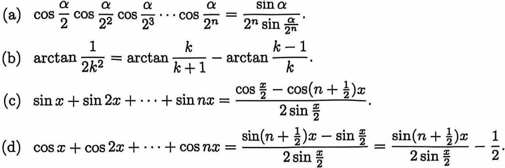
▾2.双阶乘
与阶乘表示连乘不同，是阶乘的跳跃版，表示隔一个乘一个只乘同奇偶性的数
▾3.常用不等式
①均值不等式(平方>算数>几何>调和)
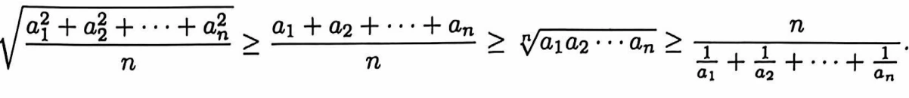
②柯西不等式
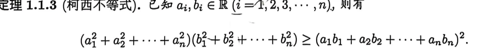
③
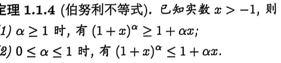
④
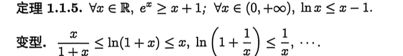
⑤
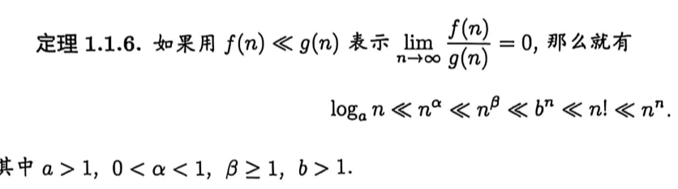
⑥三角不等式:
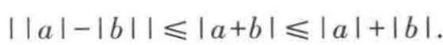
⑦
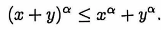
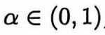
⑧
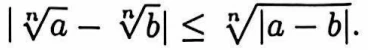
▾4.组合数及其性质
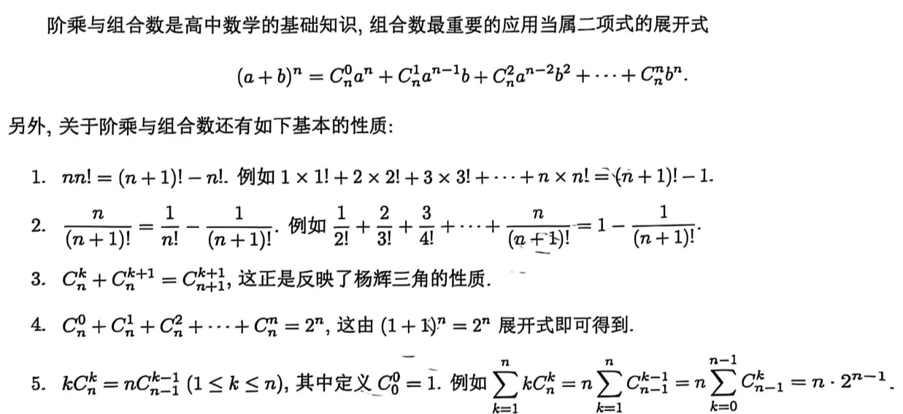
第一章 集合与映射
▾1.1集合
1.定义:集合及常用符号(正整数集合/整数集合/有理数集合/实数集合/复数集合) descartes乘积(两个集合中的元素组成的有序对的集合) 有限集(元素有限) 无限集(元素无限)可列集(元素可通过特定规则全部罗列出来)
2.集合表示:枚举法和描述法
3.集合运算:交(两个集合中相同的元素) 并(两个集合所有的元素) 补(两个集合中不同的元素)
运算性质:①交换律 ②结合律 ③分配律 ④对偶律(De Morgan公式)
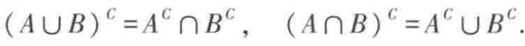
证明集合运算的对偶律（De Morgan 公式）《数学分析》陈纪修 第三版（上册） · 书内 p5
证明：这里 表示 在全集 中的余集，即 。要证两个集合相等，只需证它们互相包含。
（1）先证 。
若 ，则 ，即 既不属于 也不属于 ，于是 且 ，所以 ，因此 。
反之，若 ，则 且 ，即 ，于是 ，因此 。
（2）再证 。
设 。若 ，则已属于右边；若 ，即 ，则由 推出 ，即 。总之 ，故 。
反之，若 ，则 或 ，无论哪种情形都有 ，即 ，故 与 互相包含。
两个等式即为对偶律。
转录置信度medium
备注（教材编号 / 存疑说明）
4.定理1.1.1:可列个可列集之并也是可列集
证明可列个可列集之并是可列集《数学分析》陈纪修 第三版（上册） · 书内 p6
证明：需要两个简单的预备事实。
预备一：两个可列集之并可列。设 ，，把它们交错排列：
重复出现的元素只保留第一次出现的，即得到 的一个枚举，故 可列。用归纳法立即可知有限个可列集之并可列。
预备二： 可列。把正整数对按第一个分量与第二个分量之和分组，即按（对角线法）排列：
第 组恰含 个数对，各组有限，逐组依次列出就得到 的一个枚举，故 可列。
现在设 （），则 的每个元素都对应一个下标对 ，即
由于 与自然数集之间有双射，按该双射的顺序依次列出这些元素（重复的只保留第一次出现的），就得到并集的一个枚举，因此 是可列集。
转录置信度medium
备注（教材编号 / 存疑说明）
5.定理1.1.2:有理数Q是可列集
证明有理数集是可列集《数学分析》陈纪修 第三版（上册） · 书内 p6
证明：只需证正有理数集 可列，因为 是三个可列集之并（ 与 一一对应），由可列集的性质它仍可列。
把每个正有理数写成既约分数 （ 是互素的正整数），则它对应唯一的正整数对 ；反过来每个正整数对 按 对应一个正有理数（不同数对可能给出同一个有理数，如 与 ）。于是有满射
由对角线法， 是可列集，设其枚举为 。按此枚举依次列出 ，并把其中重复出现的数只保留第一次出现的，就得到 的一个枚举：
因此 是可列集，从而 是可列集。
转录置信度medium
备注（教材编号 / 存疑说明）
▾1.2映射与函数
1.定义:映射(使得两个集合内元素存在对应关系的规则，象唯一逆象可以不唯一) 单射(一一对应，即象唯一逆象也唯一) 满射(每个元素都有象) 双射(既单又满的映射) 逆映射(方向相反的映射，且必为双射) 复合映射(多种映射的叠加) 一元实函数(实数集到实数集的一种映射)
2.六种基本函数:①常数函数②幂函数③指数函数④对数函数⑤三角函数⑥反三角函数
3.函数的三种表示:分段表示 隐式表示 参数表式
4.函数的四种性质:有界性 单调性 奇偶性 周期性
5.dirichlet函数:
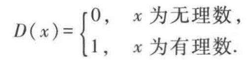
第二章数列极限
▾2.1实数系的连续性
1.定义:封闭(集合中的任意个元素经过某种计算后仍属于该集合，则该集合对这种运算封闭) 最大/小数(有限集中必有，无限集中可能有) 上/下确界(比集合中最大/小数大/小的数中最小/大的)
2.定理2.1.1:(确界存在定理——实系数连续定理)非空有上/下界数集必有上/下确界
证明确界存在定理（实数系连续性定理）《数学分析》陈纪修 第三版（上册） · 书内 p23
证明：只证上确界的情形（下确界可用同样的方法讨论，或把 换成 ）。设 是非空有上界的数集，要证 有最小上界。
设 有上界，则可令 中元素整数部分的最大者为 （若这样的 不存在，则 必无上界），记
显然 非空，且对任意 ，只要 就有 。
再考察 中元素的第一位小数，令其中的最大者为 ，并记
一般地，考察 中元素的小数点后第 位的数字，令其中的最大者为 ，并记
则 非空，且对任意 ，只要 就有 。不断地做下去，就得到一列非空数集与一列数字 ，满足
令 ，下面分两步证明 就是数集 的上确界。
（1）设 。或者存在整数 ，使得 ，或者对任何整数 都有 。
若 ，则有 ；若 对一切 成立，由 的定义并逐个比较 与 的整数部分及每一位小数，即知 。所以对任意的 有 ，即 是数集 的上界。
（2）对于任意给定的 ，只要将自然数 取得充分大，便有 。取 ，则 与 的整数部分及前 位小数是相同的，所以
即 ，即任何小于 的数 不是数集 的上界。
综合（1）（2）即知 是数集 的上确界。同理可证非空有下界的数集必有下确界。
备注（教材编号 / 存疑说明）
3.定理2.1.2:非空有界数集上/下确界唯一
证明非空有界数集的上（下）确界唯一《数学分析》陈纪修 第三版（上册） · 书内 p24
证明：设 非空有界， 都是 的上确界，即它们都是 的上界，且比它们小的数都不是 的上界。
若 ，不妨设 。 是 的上界，而 是 的最小上界，故任何小于 的数都不是 的上界；特别地取 （它满足 ）， 就不是 的上界，这与 是 的上界矛盾。
所以 ，即上确界唯一。对下确界同理（或对 用上述结论）：若 都是 的下确界，则由 是 的最大下界知任何大于 的数（特别取 ）都不是 的下界，与 是 的下界矛盾。
转录置信度medium
备注（教材编号 / 存疑说明）
4.Dedekind切割定理:对于集合Q(Q=A∪B)的一个切割A/B，若满足A有最大值a或B有最小值b则称这个切割确定了有理数a或b，若A无最大值B无最小值，则称该切割确定了一个无理数c，通过上述方法可以确定全部有理数和无理数构成的实数集R，即对实数集的任意分割都是A有最大值或B有最小值
证明Dedekind 切割定理《数学分析》陈纪修 第三版（上册） · 书内 p26
证明：先回顾有理数集 的切割。设两个非空有理数集 和 满足条件： 且对任意的 与任意的 成立 ，则称 和 构成 的一个切割，记为 。
从逻辑上讲，对有理数集合 的任何切割 ，下述四种情况有且仅有一种出现：
但情况 (4) 是不可能发生的。因为根据切割的定义，可知 ，而 显然也是 中的有理数，由 ，即得到 既不属于 ，也不属于 ，这就与 产生矛盾。
对情况 (1)，我们称切割 确定了有理数 ；对情况 (2)，我们称切割 确定了有理数 ；而对情况 (3)，由于切割 没有确定任何有理数，即集合 与 之间存在一个“空隙”，因此有必要引进一个新的数（即无理数），作为这一切割的确定对象，并规定：这个无理数 大于 中任何有理数，同时小于 中任何有理数。由有理数全体与上述定义确定的无理数全体所构成的集合称为实数集，记为 。
定义了实数集 之后，可以定义实数集 的切割：设两个非空实数集合 和 满足条件 ，且对任意的 与任意的 成立 ，则称 与 构成 的一个切割，记为 。
下面证明 Dedekind 切割定理。设 是实数集 的一个切割。令 是 中所有有理数所构成的集合， 是 中所有有理数所构成的集合，则 是有理数集合 的一个切割，于是上述三种情况有且仅有一种出现。
对情况 (1)：可以证明此时 也是集合 的最大数，而集合 没有最小数。用反证法。若有 ，成立 ，则由有理数的稠密性，在区间 中必存在有理数 ，由 可知 ，但 与 是 的最大数发生矛盾。这说明 就是集合 的最大数。
对于任意的 ，因为 ，于是在区间 中必存在有理数 。由 ，可知 ，但 ，这说明集合 没有最小数。
对情况 (2)，可类似证明此时 也是集合 的最小数，而集合 没有最大数。
对情况 (3)，由定义 2，切割 确定一个无理数，将该无理数记为 ，则对任意 与任意 ，成立 。
因为无理数 ，所以只有两种可能：或者 ，或者 。
若 ，则 必是 的最大数。若不然，则存在 ，成立 。在区间 中取有理数 ，由 ，可知 ，但由 ，又可知 ，这就产生矛盾。
同理，若 ，则 必是 的最小数。
综合情况 (1)(2)(3)，可知 Dedekind 定理成立：实数集 的任一切割 ，或者 有最大值，或者 有最小值。
教材进一步从 Dedekind 定理出发，给出确界存在定理（定理 2.1.1）的另一个证明：设非空实数集合 有上界，则令集合 的上界全体所成的集合为 ：
并令 的补集为 ： 的补集，即 。于是 构成了实数集 的一个切割。由 Dedekind 定理，或者 有最大数，或者 有最小数。
对任意的 ， 不是集合 的上界，即存在 ，使得 。令 ，则 ，由 ，可知 也不是集合 的上界，于是 。再由 ，即知 不是 的最大数。所以， 没有最大数。
由此证得 有最小数，也即集合 必有最小上界，即上确界。
备注（教材编号 / 存疑说明）
▾2.2数列极限
1.定义:数列(按正整数编号的一串数) 数列极限(对a总能找到N，使得N项后的数和这个常数的差值ε任意小则称这个数列收敛于a，若不存在a则称发散) 无穷小量(极限为0的数列)
教材补充数列极限的 - 定义与无穷小量《数学分析》陈纪修 第三版（上册） · 书内 p29
教材指出：数列极限的 - 定义与数列极限的“逼近”直观描述等价。 既是任意的又是给定的：一方面只有 给定才能确定 （ 由 决定）；另一方面由于 的任意性， 可以任意小。
教材把“对于任意给定的 ”写成“”，“可以找到正整数 ”写成“”，“当 时”写成“”，于是有符号表述
若不存在具有上述性质的实数 ，则称数列 发散。特别地， 的数列称无穷小量（它是一个变量，不是一个很小的固定数）。
教材还强调：数列与数集有重大区别——数集的元素之间没有次序关系、重复出现的数看成同一个元素；而数列中每个数有确定的编号，前后次序不能颠倒，重复出现的数不能随便舍去。
备注（教材编号 / 存疑说明）
2.数列极限性质(定理2.2.1——2.2.4):唯一性 有界性 保序性(两个数列项的大小关系在有限项后于收敛极限的大小关系相同) 夹逼性
教材补充收敛数列的四条基本性质（定理 2.2.1—2.2.4）《数学分析》陈纪修 第三版（上册） · 书内 p32
教材把这四条性质编号为定理 2.2.1~2.2.4。
（1）唯一性（定理 2.2.1）：假设 有极限 与 。由极限定义，， 使 ； 使 。取 ，用插项（加一项再减一项）并辅以三角不等式，：
由 可以任意接近于 ，即知 。教材特别指出这个插项配三角不等式的技巧极为常用。
（2）有界性（定理 2.2.2）：设 。取 ，则 ，，即 。取
则对 所有的项成立 ，故收敛数列有界。教材指出其逆命题不成立：有界数列未必收敛，例如 。
（3）保序性（定理 2.2.3）：设 ，，且 ，则存在正整数 ，当 时 。取 ，则 ，，从而 ；又 ，，从而 。取 ， 有 。
教材给出两个常用推论：(i) 若 ，则存在 ，当 时 ；(ii) 若 ，则存在 ，当 时 。教材同时指出逆命题不成立：由 只能得到 ，不能得到 ，例如 与 。
（4）夹逼性（定理 2.2.4）：若三个数列 从某项开始成立 ，且 ，则 。
备注（教材编号 / 存疑说明）
3.数列极限的四则运算:
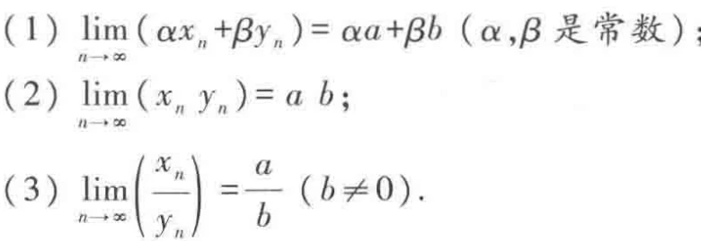
4.基本极限:
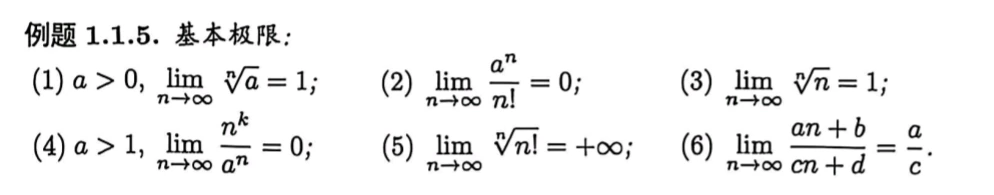
5.数列极限求法及类型:
①迫敛法/夹逼准则(拟合法:两数列做差极限为零则它们极限值相等)
②积分法(定积分;重积分;分部积分法):找1/n提出后根据黎曼和将数列变为积分
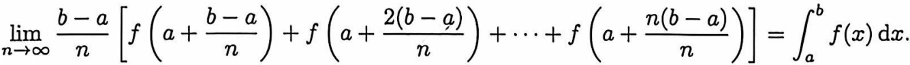
双求和符可用重积分
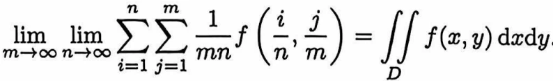
③放缩法:泰勒展开放缩;不等式放缩
④单调有界原理:显然法:对于显然单调的数列可直接找上/下界;相减法;欧拉常数法:凑欧拉常数
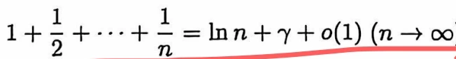
;相除法;不等式法;反证法;递推法
⑤递推问题(六种类型)
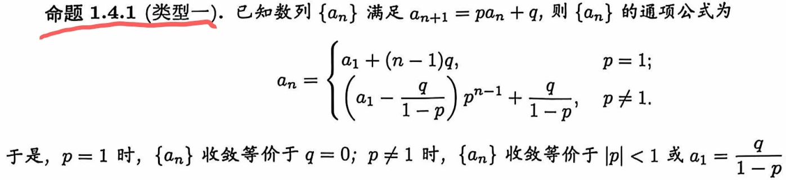
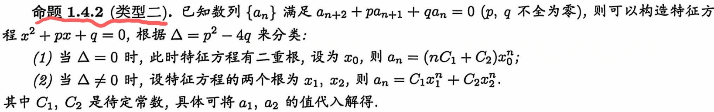
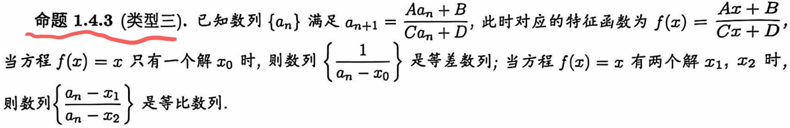
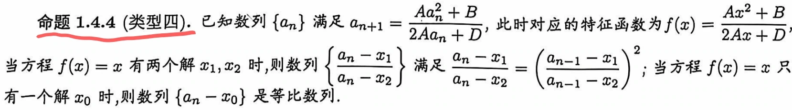
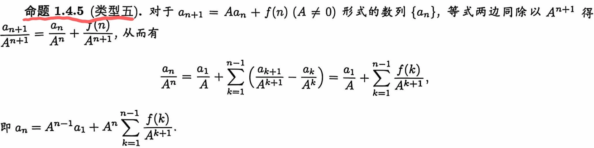
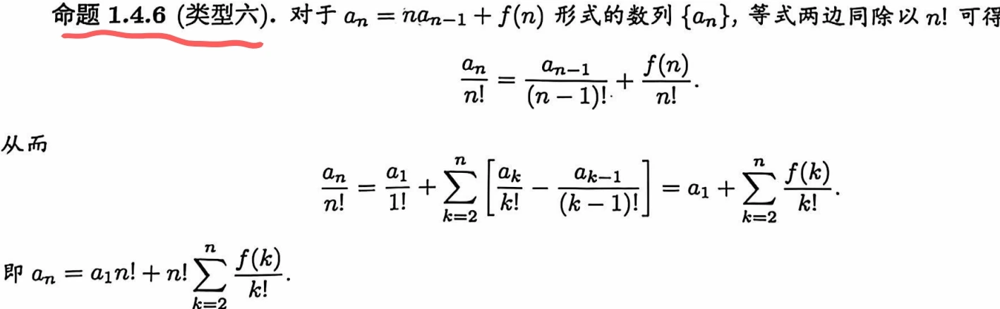
⑥压缩映射原理(数项级数的比值判别法)
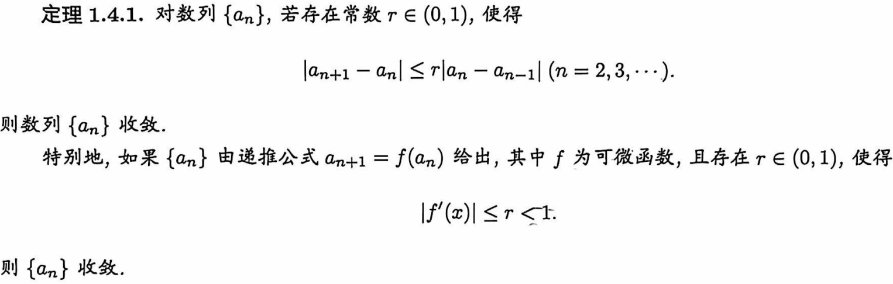
⑦平均值定理(柯西命题;杂交放缩套路;倒乘问题)
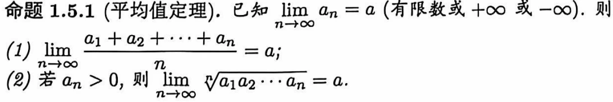
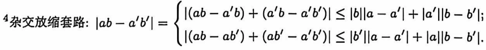
证明平均值定理（Cauchy 命题）《数学分析》陈纪修 第三版（上册） · 书内 p32
证明：先设 ，即 是无穷小量。对任意给定的 ，存在正整数 ，当 时 。现在 已经是一个固定的数，因此可以取 ，使得当 时成立
于是利用三角不等式与中段项的估计，得到
故 。
当 时， 是无穷小量，于是
此即 。
备注（教材编号 / 存疑说明）
⑧Stolz公式(数列形式;函数形式)
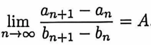
;
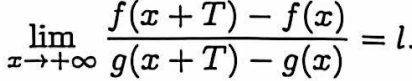
⑨Abel变换:
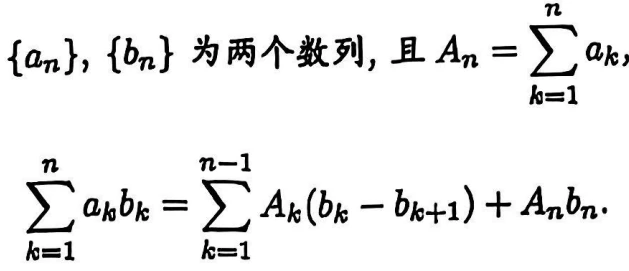
⑩分段法(带定积分的极限;带反常积分的极限;周期问题):对于积分区域有瑕点或被积函数有周期的可通过观察极限值变化，分段计算极限
⑪上下极限法
6. 首项为大原则:
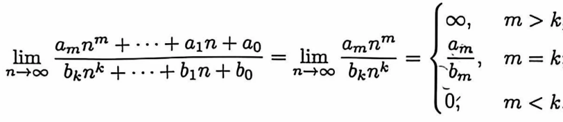
▾2.3无穷大量
1.定义:无穷大量(趋于无穷的数列) 定号无穷大量(从有限项往后的项符号都相同的无穷大量) 单调数列(单调变化的数列) 待定型(无穷大量与无穷小量的加减乘除)
2.无穷大量的加减和乘积仍是无穷大量但会有符号改变
3.定理2.3.1:无穷大量数列的充要条件是他的每一项的倒数组成的新数列是无穷小量
教材补充无穷大量的倒数是无穷小量（定理 2.3.1）《数学分析》陈纪修 第三版（上册） · 书内 p40
教材此条编号为定理 2.3.1，正文给出结论，证明由定义直接得到。
必要性：设 。要证 ，即 。取 ，由无穷大量的定义存在 ，当 时 ，于是 。
充分性：设 。，取 ，存在 ，当 时 ，于是 ，即 。
推论： 是无穷小量且 时， 是无穷大量。
备注（教材编号 / 存疑说明）
4.定理2.3.1:无穷大量和有界数列的四则运算仍是无穷大量
证明无穷大量的乘法运算法则（定理 2.3.2 及其推论）《数学分析》陈纪修 第三版（上册） · 书内 p40
证明（定理 2.3.2）：设 是无穷大量，即 ，，。又由题设 对一切 成立。
对任意给定的 ，取 ，则当 时同时有 与 ，于是
由于 是任意的正数而 是固定正数，令 即知 可任意大，即 是无穷大量。
推论：设 是无穷大量，。由数列保序性的推论（ 时取 得从某项起 ； 时得 ），可知 从某项起保持定号，且 。于是由定理 2.3.2， 是无穷大量；又 从某项起有界（），故 也是无穷大量。
教材还指出如下显然的结论：同号无穷大量之和仍然是该符号的无穷大量，而异号无穷大量之差是无穷大量，其符号与被减无穷大量的符号相同；无穷大量与有界量之和或差仍然是无穷大量；同号无穷大量之积为正无穷大量，而异号无穷大量之积为负无穷大量。教材把定理 2.3.2 及其推论的证明留作习题 3。
⚠ 笔记原文有误（已按教材订正）（订正说明：笔记原文记作“无穷大量和有界数列的四则运算仍是无穷大量”，这一表述不准确。例如 是无穷大量， 是有界数列，但 不是无穷大量， 也不是无穷大量。正确的结论是教材定理 2.3.2：与绝对值有正下界（）的数列相乘仍是无穷大量，以及与极限非零的收敛数列相乘或相除仍是无穷大量。）
备注（教材编号 / 存疑说明）
5.定理2.3.3 :(stolz定理)
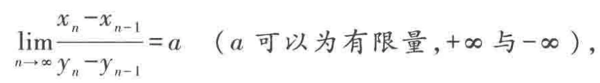
证明Stolz 定理（数列形式）《数学分析》陈纪修 第三版（上册） · 书内 p42
证明：先设 是有限数，并先讨论 的情形。此时 ，存在正整数 ，当 时
把 时的这些不等式相加。对任意 ，利用 与 ，由三角不等式得到
于是
其中用到 且 。又因为 ，当 充分大时 ，于是
即 。
对一般的有限 ，令 ，则
由上面 的结论得 ，即 ，故 。
当 时，，存在 ，当 时 。由 ，有 ；求和得 ，于是 ，令 即得 。 同理。
转录置信度medium
备注（教材编号 / 存疑说明）
6.常用等价无穷小:
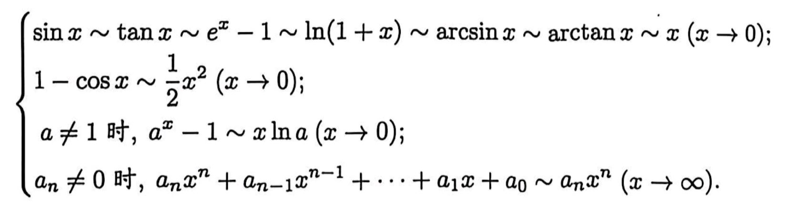
▾2.4收敛准则
1.定义:fibonacci数列(后一项等于前两项的加和) π(
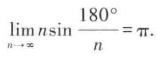
) e(
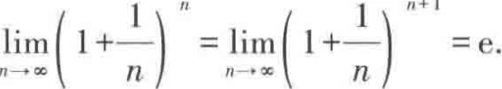
) γ(
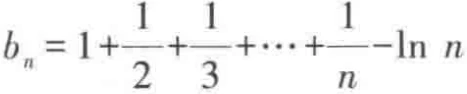
收敛于欧拉常数) 闭区间套(在闭区间内取一个更小的闭区间重复取直到区间长度为零可得一个闭区间套) 子列(按某种规则选取原数列中的部分元素构成的一个数列) 基本数列(存在N，使得N项后的任意两项差值任意小)
教材补充闭区间套、子列与基本数列《数学分析》陈纪修 第三版（上册） · 书内 p52
教材把这三个概念都放在 §2.4 收敛准则中定义（定义 2.4.1、2.4.2、2.4.3），它们是本单元全部收敛定理的语言基础，故单列一条集中说明。
闭区间套的两个条件缺一不可：定理 2.4.2 的证明只用到“区间套”与“长度为 ”。教材特别指出，若把闭区间套的条件中闭区间改为开区间，则 仍收敛于同一极限 ，但这个 可能不属于任何一个开区间 。
子列的下标有两条基本性质：（）与 （）。后一条在证明定理 2.4.4（收敛数列的子列收敛于同一极限）时起关键作用。
基本数列（Cauchy 数列）的意义：教材在例 2.4.12 中证明 是基本数列，在例 2.4.13 中证明 不是基本数列（取 ，有 ）。
教材还指出：实数系 R 的一个基本数列必有实数极限，这一性质称为实数系的完备性；有理数集不具有完备性，例如 是有理数构成的基本数列，其极限 e 却不是有理数。
备注（教材编号 / 存疑说明）
2.定理2.4.1:单调有界数列必收敛
证明单调有界数列收敛定理《数学分析》陈纪修 第三版（上册） · 书内 p45
证明：不妨设数列 单调增加且有上界（单调减少有下界的情形同理，或对 应用本结论）。根据确界存在定理，由 构成的数集必有上确界 ，它满足
取 ，由数列单调增加知 有 ，于是
因而 ，于是得到 。
教材补充：在按极限定义证明一个数列收敛时，都必须先知道它的极限是什么，这在许多实际情况中并不现实。定理 2.4.1 的重要性在于——它使我们能从数列本身出发研究其收敛性，进而利用极限运算的性质去求出相应的极限。
推论：单调数列收敛的充分必要条件是它有界。
备注（教材编号 / 存疑说明）
3.定理2.4.2:(闭区间套定理)在一个闭区间套中总能找到一个唯一的实数属于所有其区间
证明闭区间套定理《数学分析》陈纪修 第三版（上册） · 书内 p52
证明：由条件 可得
显然 单调增加而有上界 ， 单调减少而有下界 ，由定理 2.4.1， 与 都收敛。
设 ，则
这里用到条件 。
由于 是 所构成的数集的上确界，也是 所构成的数集的下确界，于是有
即 属于所有闭区间 。
若另有实数 属于所有的闭区间 ，则也有 。令 ，由极限的夹逼性得到
此即说明满足定理结论的实数 是唯一的。
教材指出：若将定理条件中的闭区间套改为开区间套，则数列 依然收敛于同一个极限 ，但这个 可能不属于任何一个开区间 。
备注（教材编号 / 存疑说明）
4.定理2.4.3:实数集是不可列集
证明实数集是不可列集《数学分析》陈纪修 第三版（上册） · 书内 p52
证明：用反证法。假设实数集 是可列集，即可以找到一种排列的规则，使
先取闭区间 ，使 ，这总是可以做到的。然后将 三等分，则在闭区间
中，至少有一个不含有 ，把它记为 。再将 三等分，同样在三个闭区间中至少有一个不含有 ，把它记为 。
这样的步骤可以一直做下去，于是得到一个闭区间套 ，满足 。
由闭区间套定理，存在唯一的实数 属于所有的闭区间 ，换言之，，这就与集合 表示实数集 产生矛盾。
所以实数集 不是可列集，即它是不可列集。
备注（教材编号 / 存疑说明）
5.定理2.4.4:数列收敛则它的任意子列也必收敛
证明收敛数列的任意子列收敛于同一极限《数学分析》陈纪修 第三版（上册） · 书内 p53
证明：由 知 ，，。
取 。由于子列下标满足 ，故当 时有 ，于是由上面的不等式成立
即 。
推论：若存在数列 的两个子列 与 ，分别收敛于不同的极限，则数列 必定发散。
例：数列 发散。取 ，，则子列 收敛于 ，而子列 收敛于 ，由上述推论知 发散。
推论（即笔记的 sf-c3-19：若两个子列的极限不一致，则数列发散）：由上述定理立即可得——若存在 的两个子列 与 ，分别收敛于不同的极限，则 必定发散。否则若 收敛于 ，由定理 2.4.4，它的任何子列都收敛于 ，与“两个子列极限不同”矛盾。
因此 必定发散。
这是教材定理 2.4.4 的直接推论，常用来判断数列的发散性。
备注（教材编号 / 存疑说明）
推论:若数列的两个任意子列收敛不一致则该数列发散
6.定理2.4.5:(Bolzano-weierstrass定理)有界数列必有收敛子列
证明Bolzano-Weierstrass 定理（有界数列必有收敛子列）《数学分析》陈纪修 第三版（上册） · 书内 p53
证明：设数列 有界，于是存在实数 ，成立
将闭区间 等分为两个小区间 与 ，则其中至少有一个含有数列 中的无穷多项，把它记为 。再将闭区间 等分为两个小区间，其中至少有一个含有 中的无穷多项，把它记为 。
这样的步骤可以一直做下去，于是得到一个闭区间套 ，其中每一个闭区间 中都含有数列 中的无穷多项。
根据闭区间套定理，存在实数 ，满足
现在证明数列 必有一子列收敛于实数 。首先在 中选取 中某一项，记为 ；然后因为在 中含有 中无穷多项，可以选取位于 后的某一项，记为 ，且 ；继续这样做下去，在选取 后，因为在 中仍含有 中的无穷多项，可以选取位于 后的某一项，记为 ，且 。
这样就得到了数列 的一个子列 ，满足
由 ，利用极限的夹逼性，得到
即 有收敛子列。
备注（教材编号 / 存疑说明）
7.定理2.4.6:无界数列的任意子列都是无穷大量
证明无界数列必有趋于无穷的子列《数学分析》陈纪修 第三版（上册） · 书内 p54
证明：由于 无界，因此对任意 ， 中必存在无穷多个 满足 ；否则可以得出 有界的结论。
令 ，则存在 ，使得 ；再令 ，因为在 中有无穷多项满足 ，可以取到排在 之后的 ，，使得 ；继续令 ，同理可以取到 ，，使得 。
这样做下去便得到了 的一个子列 ，满足
由定义即得 。
⚠ 笔记原文有误（已按教材订正）注意：教材此处给出的结论是“存在子列趋于 ”。笔记把这一条记作“无界数列的任意子列都是无穷大量”，这一表述过强——例如 无界，其偶下标子列 是正无穷大量，而 本身并不是定号无穷大量，其子列 是负无穷大量；只须取一个由 型元素构成的子列甚至可以有界。故本条以教材原文的“存在子列”为准。
备注（教材编号 / 存疑说明）
8.定理2.4.7:(Cauchy收敛原理)数列收敛当且仅当它是基本数列
证明Cauchy 收敛原理《数学分析》陈纪修 第三版（上册） · 书内 p55
证明：先证必要性。设 收敛于 ，按照定义，，，：
于是
即收敛数列必是基本数列。
再证充分性。先证明基本数列必定有界。取 ，因为 是基本数列，所以 ，：
令 ，则对一切 成立 。
由 Bolzano-Weierstrass 定理，在 中必有收敛子列：。
因为 是基本数列，所以 ，，：。在上式中取 ，其中 充分大，满足 ，并且令 ，就得到
此即表明数列 收敛于 。
教材补充：由 Cauchy 收敛原理可知，例 2.4.12 中数列 （）收敛，而例 2.4.13 中数列 （）发散。Cauchy 收敛原理表明，由实数构成的基本数列 必存在实数极限，这一性质称为实数系的完备性。值得注意的是有理数集不具有完备性。
备注（教材编号 / 存疑说明）
9.定理2.4.8:实数系的完备性等价于实数系的连续性
证明实数系的完备性等价于实数系的连续性《数学分析》陈纪修 第三版（上册） · 书内 p57
证明：教材先按如下的逻辑链证明“连续性蕴含完备性”：
沿这条链，每个定理都用它上面的定理证明：定理 2.4.1 用确界存在定理（定理 2.1.1），定理 2.4.2 用单调有界数列收敛定理，定理 2.4.5 用闭区间套定理，定理 2.4.7 的充分性用 Bolzano-Weierstrass 定理。
再证明反方向的“完备性蕴含连续性”，即 Cauchy 收敛原理 闭区间套定理 确界存在定理。
先证 Cauchy 收敛原理 闭区间套定理。设 是一列闭区间，满足
设 ，则由 得
所以数列 是一基本数列，从而由 Cauchy 收敛原理有 ，并由此得到
由于数列 单调增加，数列 单调减少，可以知道 是属于所有闭区间 的惟一实数。闭区间套定理得证。
再证闭区间套定理 确界存在定理。设 是非空有上界的实数集合，又设 是由 的所有上界所组成的集合，现证 含有最小数，即 有上确界。
取 ，，显然 。现按如下的规则依次构造一列闭区间：
由此得到一个闭区间套 ，满足 ，（）。
由闭区间套定理，存在惟一的实数 属于所有的闭区间 ，且 。现只需说明 是集合 的最小数，也就是集合 的上确界。
若 ，即 不是集合 的上界，则存在 ，使得 。由 ，可知当 充分大时，成立 ，这就与 发生矛盾，所以 。
若存在 ，使得 ，则由 ，可知当 充分大时，成立 。由于 ，于是存在 ，使得 ，这就与 发生矛盾。从而得出 是集合 的上确界的结论。确界存在定理得证。
因此上述五个定理是等价的，即从其中任何一个定理出发都可以推断出其他四个定理，所以，这五个定理中的每一个都可以称为是实数系的基本定理。
转录置信度medium
备注（教材编号 / 存疑说明）
注；定理 2.1.1/2.1.3/2.4.1/2.4.2/2.4.5/2.4.7/11.1.9互相等价可互推
教材补充实数系五个基本定理的互推关系（交叉引用）《数学分析》陈纪修 第三版（上册） · 书内 p98
这一等价链的完整证明见本条对应的 sf-c3-23（定理 2.4.8，书内页 56~58）。此处只列出推理方向，便于按证题需要选用哪一条基本定理：
教材进一步指出：由于实数系的五个基本定理是等价的，所以在理论上，可以采用从实数系的连续性到实数系的完备性中的任何一个定理，来证明闭区间上连续函数的任何一个性质，只是证明的难度稍有差别罢了。这也解释了为什么 中五个定理各自的证明分别用到了不同的基本定理：有界性定理用闭区间套定理，最值定理用 Bolzano-Weierstrass 定理，零点存在定理用确界存在定理， 定理用 Bolzano-Weierstrass 定理。
备注（教材编号 / 存疑说明）
第三章函数极限与连续函数
▾3.1函数极限
1.定义:函数极限的严格定义(四种函数值和六种自变量各有相应的表述方式) 单侧极限(给定点的左右极限)
教材补充函数极限的 - 定义与各种极限过程的符号表述《数学分析》陈纪修 第三版（上册） · 书内 p60
定义 3.1.1：设函数 在点 的某个去心邻域中有定义，即存在 ，使 。如果存在实数 ，对于任意给定的 ，可以找到 ，使得当 时成立 ，则称 是函数 在点 的极限，记为 或 。
教材强调： 既是任意的又是给定的。一方面只有当 给定时才能确定正数 （ 是由 决定的）；另一方面由于 具有任意性，图 3.1.1 中上下两条横线的距离可以任意收缩。符号表述为
教材指出：在 趋于 的过程中，我们不取 （事实上，当 时函数可能没有意义）。我们关心的是 趋于 的过程中函数的变化趋势，而对函数在 处是否有意义、取值多少之类的问题，暂时不感兴趣。
本节还把定义扩充到其他极限过程，教材给出的对照表（书内页 68~69，PDF 87~88）为：
于是例如 的定义为：； 的定义为：； 的定义为：； 的定义为：。教材说：理解了这一点，读者就不难举一反三，对任何一种函数极限立即写出相应的定义。
教材还特别提醒（书内页 70，PDF 89）：(1) 关于函数极限的性质，例如局部保序定理与夹逼性定理，只当函数极限 为有限数、 与 时才是成立的。也就是说，讨论这些定理，须排除 是未定号无穷大 的情况，因为无法将 与任意有限数作大小的比较；而对于定号无穷大 或 ，可以认为不等式 （ 为任意实数）成立。(2) 关于函数极限的四则运算，只要不是待定型，如 等，定理 3.1.4 总是成立的；如果出现待定型，则需要对具体的函数极限作具体的讨论。(3) 对于这些不同的函数极限，分别有相应的 Heine 定理，它们的叙述、证明方法和作用都类似的。
备注（教材编号 / 存疑说明）
2.函数极限的性质:
①定理3.1.1(唯一性)一个点只有一个极限值
证明函数极限的唯一性《数学分析》陈纪修 第三版（上册） · 书内 p62
证明：根据函数极限的定义可知：
取 。因为 的去心邻域非空，故存在 满足 （例如取 ），对此 成立
由于 可以任意接近于 ，可知 。
备注（教材编号 / 存疑说明）
②定理3.1.2(局部保序性)函数的大小关系与函数在给定点极限的关系一致
证明函数极限的局部保序性《数学分析》陈纪修 第三版（上册） · 书内 p63
证明：取 。由 ，，：
由 ，，：
取 ，当 时成立
即 。
下面给出定理 3.1.2 的三个直接推论（对应笔记里的“推论 1／推论 2／推论 3”）。
证明：由 及不等式 （这是三角不等式的直接推论），可知 。
令 。由 及定理 3.1.2（局部保序性，把其中的 取为 、 取为 ，把 取为常数函数 ），可知存在 ，当 时成立
证毕。
证明：运用反证法。若 ，则由定理 3.1.2（局部保序性，注意取 为 、 为 ，此时前提 满足），存在 ，当 时
取 ，则当 时，既有 ，又有 ，从而产生矛盾。
因此 。
教材注意：即使将推论 2 的条件加强到当 时成立 ，我们也只能得到 的结论，而不能得到 的结论。
证明：取常数 与 ，满足 。令 ， 为两个常数函数，由定理 3.1.2（局部保序性）可知存在 ，当 时成立
即 在 中有界。
教材顺便指出：如果 在 有定义，我们可以取 ，则当 时成立 。
教材还提醒： 不能随意扩大。例如取 ，，则 在 有界，但 在 上是无界的。
备注（教材编号 / 存疑说明）
推论1:函数在给定点的绝对值一定大于该点极限值的绝对值的一半
推论2:局部范围内函数的大小关系也可以反应极限的大小关系
推论3(局部有界性):函数在给定点有极限则它在该点的邻域内有界
③定理3.1.3(夹逼性)
证明函数极限的夹逼性《数学分析》陈纪修 第三版（上册） · 书内 p64
证明：，由 可知 ，，从而
由 可知 ，，从而
取 ，：
此即 。
备注（教材编号 / 存疑说明）
3.定理3.1.4:(函数极限的四则运算)
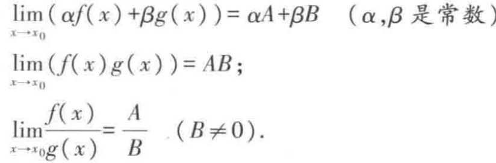
教材补充函数极限的四则运算《数学分析》陈纪修 第三版（上册） · 书内 p65
这就是教材定理 3.1.4。教材给出的证明思路如下。
由 ，由定理 3.1.2 的推论 3（局部有界性）知，，；且 ，，。再由 知，，。
取 ，则 ：
这就给出了 (1)。又
这给出了 (2)。
对于 (3)，利用定理 3.1.2 的推论 1（当 时），可知 ，：
取 ，：
因此 (3) 也成立。由于 可以任意接近于 ，即得结论。
教材还指出：函数极限的四则运算只能推广到有限个函数的情况，而不能随意推广到无限个函数或不定个数上去（参见数列极限的相应说明，例 2.2.11）。
应用举例：对于任意实数 ，有 ；对于任意实数 ，有 （例 3.1.5）。
备注（教材编号 / 存疑说明）
4.定理3.1.5:(heine定理(海涅归结原理))函数在某点的极限存在的充要条件是所有趋于该点的数列的函数值极限相同
证明Heine 定理（海涅归结原理）《数学分析》陈纪修 第三版（上册） · 书内 p66
证明：必要性。由 可知
因为 且 ，对于上述 ，，：
于是当 时成立 ，即 。
充分性：用反证法。按函数极限定义，命题“ 在 点以 为极限”可以表述为
于是它的否定命题“ 在 点不以 为极限”可以对偶地表述为
也就是说，存在某个固定正数 ，不管 取得多么小，总能在 中找到一个 ，使 与 的差的绝对值不小于 ，即 。
现在取一列 ，。对 ，存在 ，使 ；对 ，存在 ，使 ；一般地，对 ，存在 ，使 。
于是得到数列 ，满足 ，，但相应的函数值数列 不可能以 为极限。
由此推翻假定，得到 在 点以 为极限。
教材补充：这一性质被经常用于证明某个函数极限的不存在性。例如证明 在 没有极限：取 ，，则显然有 ，；，。但由于 ，而 ，根据定理 3.1.5，知 在 没有极限。
教材另给出一种表述（定理 3.1.5）：如果我们只关心函数 在点 的极限是否存在，而不管极限值是多少，则 存在的充分必要条件是：对于任意满足条件 且 的数列 ，相应的函数值数列 收敛。对充分性的证明，只需注意：若存在数列 与 ，、，且 ，使得 ，则取新的数列 ，使 ，，显然 ，，但是相应的函数值数列 必定不收敛。
备注（教材编号 / 存疑说明）
5.定理3.1.6:(cauchy收敛原理)存在X使得，X后的任意两个点的函数值的差值任意小
证明函数极限的 Cauchy 收敛原理《数学分析》陈纪修 第三版（上册） · 书内 p72
证明：先证必要性。设 ，按照定义，，，：
于是
再证充分性。设 ，，：。
任意选取数列 ，，则对上述 ，，。于是当 时，成立
这说明函数值数列 是基本数列，因而必定收敛。由 的证明过程（ 的极限与 的选取无关），再根据相应的 Heine 定理，可知 存在而且有限。
教材补充：在 中讲述了数列收敛的 Cauchy 收敛原理。对于本节最后所讨论的各类函数极限情况，同样也分别有相应的 Cauchy 收敛原理，而在证明中需要用到相应的 Heine 定理，这里仅举一例（即上述定理）。教材还要求读者自行写出函数极限 、、 存在而且有限的 Cauchy 收敛原理并加以证明。
（作为补充，这三种情形的条件分别为： 有限存在 ； 有限存在 ； 有限存在 。）
备注（教材编号 / 存疑说明）
6.函数极限的计算:
①有绝对值:考虑极限点左右极限是否一致
②求未知数:
③带有取整函数的极限:可由
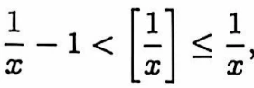
对函数进行放缩
④递推问题:由递推关系找递推式
⑤洛必达法则
⑥泰勒展开(麦克劳林公式):展开复杂项,展开项数取决于函数中的最高次项
⑦指数复合问题:
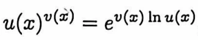
指对互换化简后计算
▾3.2连续函数
1.定义:连续点(函数在该点的极限等于该点的函数值则称函数在该点连续) 开区间连续(在开区间上每一点都连续) 闭区间连续(开区间连续的同时在端点也连续) 三类间断点(①跳跃间断点②无穷间断点③可去间断点)
教材补充连续点、区间连续与不连续点的三种类型《数学分析》陈纪修 第三版（上册） · 书内 p74
教材指出：“函数 在点 连续”可以有以下的符号表述：，，。从定义可以看出，“ 在点 连续”只是函数极限 当 为 时的特殊情况（此时需将极限值 换成 ，并去掉 的要求）。
单侧连续（定义 3.2.3）：若 ，则称函数 在 左连续；若 ，则称 在 右连续。其 - 表述为： 即 ； 即 。
定义 3.2.4：若 在 连续，且在左端点 右连续、在右端点 左连续，则称函数 在闭区间 上连续。
不连续点的分类。按连续性定义，函数 在点 连续必须满足三条：(1) 函数 在点 有定义，即 为有限值；(2) 函数 在点 有左极限，且 ；(3) 函数 在点 有右极限，且 。三者缺一不可。否则，函数 在点 不连续，此时点 是函数 的不连续点，亦称间断点。
通常将不连续点分成三类：
第一类不连续点：函数 在点 的左、右极限都存在但不相等，即 。例如 ， 是它的第一类不连续点：，。在函数的第一类不连续点处，图像会出现一个跳跃，所以第一类不连续点又称为跳跃点，而右极限与左极限之差 称为函数 在点 的跃度。符号函数 在 的跃度为 。
第二类不连续点：函数 在点 的左、右极限中至少有一个不存在。例如 ， 是它的第二类不连续点：，。又如 ， 也是它的第二类不连续点，因为 在 的左、右极限都不存在。
第三类不连续点：函数 在点 的左、右极限都存在而且相等，但不等于 ，或者 在点 无定义。例如 ，它在 没有定义，但在 的左、右极限都等于 ，所以 是它的第三类不连续点。通过重新定义 则 就是 上的连续函数。在函数的第三类不连续点，可以通过重新定义在该点的函数值，使之成为函数的连续点，因此第三类不连续点又称为可去不连续点或可去间断点。
教材例 3.2.7（Riemann 函数）： 其中定义 是因为 可写成 ，同时也保证了 的周期性。结论： 在任意点 的极限存在，且极限值为 。换言之，一切无理点是 的连续点，而一切有理点是 的第三类不连续点。证明思路是把每个正有理数 （以 为函数值）按分母 分层考虑，利用 以 为周期、只需讨论 上的函数性质。
备注（教材编号 / 存疑说明）
2.连续函数的四则运算:
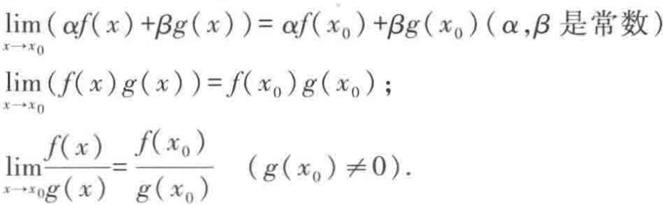
3.riemann函数:
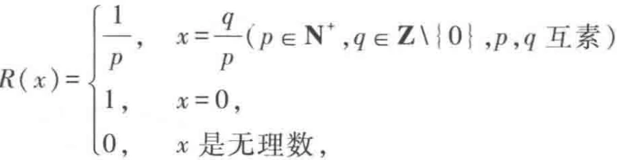
4.定理3.2.1(反函数存在定理):严格单调函数其反函数存在且单调性相同
证明反函数连续性定理（连续严格单调函数的反函数存在、且同向单调并连续）《数学分析》陈纪修 第三版（上册） · 书内 p80
证明：首先利用例 3.2.8 的结论，证明 ，即 的值域（也就是 的定义域）是 。
显然 。设 是任意一点，记
则集合 非空且有上界，由确界存在定理， 必有上确界，记 ，则 。
根据 的严格单调增加性，当 时 ；当 时 。于是由例 3.2.8 的结论，得到
由 在点 的连续性，得到 。这就说明 的值域是闭区间 。
根据定理 3.2.1（严格单调函数其反函数存在且单调性相同），在 上必定存在 的反函数 ，且 也是严格单调增加函数。其单调性证明如下：设 ，，它们的逆像相应为 ，，则 的大小只有三种可能：(1) ，(2) ，(3) 。但 违背 的严格单调增加性， 违背 具有像的惟一性，于是必然有 ，这表明 也是严格单调增加的。
现在只需要证明反函数 在 上的连续性。设 ，相应地有 。对于任意给定的 ，要找出 ，使当 时成立
即 。令 ，，取 ，显然当 时成立
如果 ，则只要证明右连续性；如果 ，则只要证明左连续性。
教材由此推出（例 3.2.9）：由例 3.2.3、例 3.2.6 与定理 3.2.2，可知反三角函数 、、、 在它们的定义域连续；又由例 3.2.4 与定理 3.2.2，可知指数函数 的反函数 在 连续。
备注（教材编号 / 存疑说明）
5.定理3.2.2(反函数连续定理):严格连续单调函数的反函数存在且严格连续单调
6.定理3.2.3(复合函数的连续性):若两函数在同一点都连续则他们的复合函数在该点也连续
证明复合函数的连续性《数学分析》陈纪修 第三版（上册） · 书内 p81
证明：对于任意给定的 ，由于 ，所以存在 ，当 时，成立
对上面这个 ，由于 ，所以存在 ，当 时，成立
由此得出，当 时，取 满足 ，于是
即 ，也就是复合函数 在点 连续。
教材提醒：设 ，，对于复合函数 ，我们不能得出 的结论。容易举出它的反例：，。显然有 ，，但是复合函数 在 没有极限。但是当 与 都是连续函数时，上述的结论是成立的。
备注（教材编号 / 存疑说明）
7.定理3.2.4:一切初等函数在其定义域上都连续
证明一切初等函数在其定义域上连续《数学分析》陈纪修 第三版（上册） · 书内 p82
证明：先证六类基本初等函数在它们的定义域上连续。
常数函数 与恒等函数 的连续性从定义出发直接可得；由例 3.2.3 已证三角函数 与 的连续性；由连续函数的四则运算规则可得 、 在其定义域 上连续，、 在其定义域 上连续。
幂函数 （ 为任意实数）在 连续：事实上，幂函数 是由 ， 定义的，即它是由 ， 与 ， 复合而成，根据定理 3.2.3， 在 连续。
指数函数 的连续性由例 3.2.4 给出；其反函数对数函数 在 连续，由定理 3.2.2（反函数连续性定理）得到。反三角函数 的连续性同样由定理 3.2.2 得到。
由上面的讨论，我们不仅论证了常数函数、幂函数、指数函数、对数函数、三角函数、反三角函数这 6 类基本初等函数在它们的定义域上的连续性，还进一步得到：从这些基本初等函数出发，经过有限次四则运算及复合运算所产生的函数即初等函数，在它们各自的定义区间上也是连续的。这里要注意“定义域”与“定义区间”的差别：由基本初等函数经过有限次运算或复合所得到的函数的定义域可能不构成区间，例如 ，此时只能说它在各个定义区间上连续，在其整体定义域上则未必连续。
综上即得：一切初等函数在其定义区间上连续。
教材另补充幂函数定义域的细节：对于具体给定的实数 ， 的定义域可以扩大。例如当 是正整数 时， 的定义域是 ；当 是负整数 时， 的定义域是 ；当 是正有理数 （既约分数）时，若 是奇数，则定义域是 ，若 是偶数，则定义域是 。总的来说，幂函数 在其定义域连续；并且 在 上与 一致，故当 时 连续。
备注（教材编号 / 存疑说明）
8.证明连续性:
①左右极限存在且相等(左右都连续)
②定义法:对于任意给定的ε，总有δ使得函数极限收敛于函数值
证明连续性的 - 判定与连续函数的四则运算《数学分析》陈纪修 第三版（上册） · 书内 p75
（1）定义法。由 即可写出：对于任意给定的 ，总有 ，使得当 时成立 。这正是笔记所说的“对于任意给定的 ，总有 使得函数极限收敛于函数值”。
例 3.2.1：函数 在区间 连续。证：设 是 中任意一点，对于任意给定的 ，要找出 ，使得当 时，有 。为了将不等式左边放大，加上条件 ，于是 ，从而 。取 ，当 时 ，所以 在 连续。
（2）连续函数的四则运算。设 ，，则由函数极限的四则运算立即可得：
由上述运算法则，设有有限个函数在某区间连续，则它们之间进行有限次加、减、乘、除（分母不为零处）四则运算，所得到的函数在该区间去使分母为零的点后余下的范围连续。
例 3.2.5：对于常数函数 与恒等函数 ，容易从定义出发证明它们的连续性，然后由上述连续函数的四则运算规则，可以得到：(1) 任意多项式 在 上连续；(2) 任意有理函数 在其定义域上连续，即 在 去掉分母 的零点（至多 个点）的范围连续。
备注（教材编号 / 存疑说明）
③极限法:函数在该点的极限值等于函数值则连续
④连续函数/复合函数的性质:若函数连续则它们的加减乘除和复合都连续
⑤可导一定连续
⑥可去间断点连续
▾3.3无穷小量与无穷大量的阶
1.定义:无穷小/大量(在给定点上函数极限趋于0/无穷) 高/低/同阶/等价无穷小量(两个无穷小量做比结果为0/无穷/常数/1) 高/低/同阶/等价无穷大量(两个无穷大量做比结果为无穷/0/常数/1)
教材补充无穷小量与无穷大量的阶（、、 记号）《数学分析》陈纪修 第三版（上册） · 书内 p84
教材定义 3.3.1：若 ，则称当 时 是无穷小量。这里的极限过程可以扩充到 、、、、 等情况。设 是两个变量，当 时它们都是无穷小量，讨论 的极限情况：
(1) 若 ，则称当 时 关于 是高阶无穷小量（或 关于 是低阶无穷小量），记为 。
(2) 若存在 ，当 在 的某个去心邻域中时成立 ，则称 。若又存在 ，成立 ，则称 与 是同阶无穷小量。显然，若 ，则 与 必是同阶无穷小量。
(3) 若 ，则称 与 是等价无穷小量，记为 。上式也可写成 。
教材特别指出：我们往往选取 作为与 进行比较的无穷小量（如果极限过程是 ，则选取 ），这样便于得出 作为无穷小量的确切阶数。例如由 可知当 时 是二阶无穷小量；由 可知当 时 是三阶无穷小量。
常用的两个简记： 表示当 时 是无穷小量； 表示当 时 是有界量。
无穷大量的比较（定义 3.3.2）：若 （或 ），则称当 时 是无穷大量（或正、负无穷大量）。设 当 时都是无穷大量：(1) 若 ，则称 关于 是高阶无穷大量；(2) 若存在 使 ，则记为 ，若又存在 使 ，则称 与 是同阶无穷大量；(3) 若 ，则称 与 是等价无穷大量。教材指出：对任意正整数 ，有 和 ，所以当 时 关于 是高阶无穷大量， 关于 是低阶无穷大量。还须注意：在进行无穷大量阶的比较时，习惯上不使用记号 ，但仍使用记号 和 。
备注（教材编号 / 存疑说明）
2.定理3.3.1(等价量的代换)在给定点两个函数极限之比为一时这两个函数在关于该点极限的乘除运算中可互相替换
教材补充等价量的代换定理《数学分析》陈纪修 第三版（上册） · 书内 p89
证明：只需要把 写成 ，并利用已知的极限 与函数极限的四则运算（定理 3.1.4）即可。
(1)：。
(2)：。
教材说：这个定理的证明可以由极限的四则运算法则直接得到。定理中的极限过程 可以相应地改变为 、、、、 等情况。
应用举例（例 3.3.9）：由于 ，，，由定理 3.3.1 得 。
教材另给出几条常用的等价无穷小（由例 3.1.4 等得到）：；以及 ，。教材强调：记号 、、 都是相对于一定的极限过程的，使用时应用括号附上记号（如“”）以说明相应的极限过程。
转录置信度medium
备注（教材编号 / 存疑说明）
3.常用等价无穷小/大:
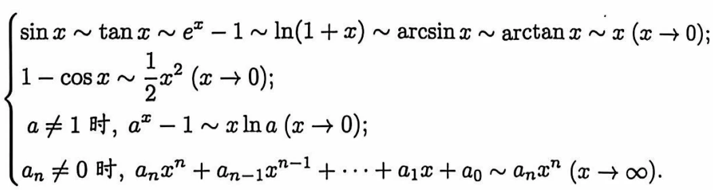
▾3.4闭区间上的连续函数
1.定义:一致连续(强调在整个区间上函数变化的均匀性，即x的增长速度与f(x)的增长速度差距不大
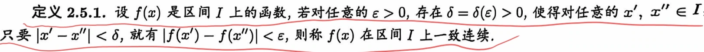
)
教材补充一致连续的 - 定义与点式连续的区别《数学分析》陈纪修 第三版（上册） · 书内 p95
教材先指出函数在点 连续与在区间 上连续的关系：函数 在某个区间 上连续，是指 在区间 上的每一点连续（对区间端点是指左连续与右连续）。而 在一点 的连续性，可以表述为
需要强调的是，这里的 与两个因素有关：它既依赖于 ，同时也依赖于所讨论的点 。也就是说， 应表述为 。
这样就产生一个问题：对任意给定的 ，能否找到一个只与 有关、而对区间 上一切都适用的 ？也就是说，对区间 上任意两点 ，只要满足 ，就能保证不等式 成立？
教材指出这一问题的答案是不一定的，它不仅与所讨论的函数 有关，也与所讨论的区间 有关。如果对给定的点 与给定的 ，将所允许的 的最大值（或上确界）记为 ，则显然上述统一的 的存在性等价于对于区间 上的一切点 ， 有非零下确界。但实际上，对 在区间 上取下确界，得到的结果有可能是 。
定义 3.4.1（一致连续）：设函数 在区间 上定义，若对于任意给定的 ，存在 ，只要 满足 ，就成立 ，则称函数 在区间 上一致连续。这里区间 表示任意一种有限或无限的区间，如 、、、、、半开半闭区间等。
在定义中，若固定 ，就得到 在点 的连续性。由于 可以是 中的任意一点，于是得到： 在区间 上一致连续 在区间 上连续。至于相反的命题就不一定成立（见例 3.4.4： 在 上连续但非一致连续）。
备注（教材编号 / 存疑说明）
2.定理3.4.1(有界性定理)闭区间上连续的函数必有界
证明有界性定理（闭区间上连续函数必有界）《数学分析》陈纪修 第三版（上册） · 书内 p92
证明：用反证法。
若 在 上无界，将 等分为两个小区间 与 ，则 至少在其中之一上无界，把它记为 ；再将闭区间 等分为两个小区间 与 ，同样 至少在其中之一上无界，把它记为 ，。
这样的步骤一直做下去，便得到一个闭区间套 ， 在其中任何一个闭区间 上都是无界的。
根据闭区间套定理，存在惟一的实数 属于所有的闭区间 ，并且
因为 ，而 在点 连续，由定理 3.1.2 的推论 3（局部有界性），存在 ，，对于一切 ，成立
由于 ，我们又可知道对于充分大的 ，，于是得到 在这些闭区间（ 充分大）上有界的结论，从而产生矛盾。
这说明所作的假设不能成立，即函数 在 上必定有界。
教材补充：开区间上的连续函数就不一定是有界的，例如 在开区间 连续，但显然是无界的。
备注（教材编号 / 存疑说明）
3.定理3.4.2(最值定理)闭区间上连续的函数必能取到最大和最小值
证明最值定理（闭区间上连续函数必能取到最大最小值）《数学分析》陈纪修 第三版（上册） · 书内 p92
证明：由上述定理 3.4.1（有界性定理），集合
是一个有界数集，所以必有上确界与下确界，记 ，。
现在证明存在 ，使得 。
按照下确界的定义，一方面对一切 成立 ；另一方面对任意给定的 ，存在 ，使得 。于是取 ，相应地得到一个数列 ，，并且满足
因为 是有界数列，应用 Bolzano-Weierstrass 定理，存在收敛子列 ：，且 。
考虑不等式
令 ，由极限的夹逼性与 在点 的连续性，得到 。
这说明 在 上取到最小值 ，即 。同样可以证明存在 ，使得 。
教材补充：开区间上的连续函数即使有界，也不一定能取到它的最大（小）值。例如 在 连续而且有界，因而有上、下确界 和 ，但是 在区间 上取不到 与 。
备注（教材编号 / 存疑说明）
4.定理3.4.3(零点存在定理)在闭区间上连续的且有异号函数值的函数必有零点
证明零点存在定理《数学分析》陈纪修 第三版（上册） · 书内 p93
证明：不失一般性，设 ，，定义集合
显然，集合 有界，非空（因为 ），所以必有上确界。令
现证 ，且 。
由 的连续性及 ，，；再由 ，，。于是可知
即 。
取 ，，因 ，可以得到
若 ，由 在点 的连续性，，，这就与 产生矛盾。于是必然有 。
教材应用（例 3.4.1）：讨论多项式 零点的位置。通过简单的计算可得 ，，，。由此得知 的三个零点分别落在区间 ， 与 内。事实上 ，它的三个零点为 ，，。
备注（教材编号 / 存疑说明）
5.定理3.4.4(中间值定理)在闭区间上连续的函数必可以取到最大值和最小值中间的任何一个值
证明中间值定理《数学分析》陈纪修 第三版（上册） · 书内 p94
证明：由最值定理，存在 ，使得 ，。不妨设 ，对任何一个中间值 ，，考察辅助函数
因为 在闭区间 上连续，，，由零点存在定理，必有 ，使得
证毕。
推论：若函数 在闭区间 连续， 是最小值， 是最大值，则 的值域是闭区间
教材补充：在定理 3.2.2 中，我们利用确界存在定理证明了在 上严格单调增加的连续函数的值域是闭区间 ，显然这一结论包含在上述定理与推论中。
备注（教材编号 / 存疑说明）
推论:一个连续函数的值域为它最大值和最小值的闭区间
证明连续函数的值域是闭区间《数学分析》陈纪修 第三版（上册） · 书内 p94
证明：一方面，对一切 有 ，故 。
另一方面，由中间值定理（定理 3.4.4）， 一定能取到最大值 与最小值 之间的任何一个值，即 。
因此 。
教材指出：在定理 3.2.2 中利用确界存在定理证明了在 上严格单调增加的连续函数的值域是闭区间 ，这一结论显然包含在上述定理与推论中。
备注（教材编号 / 存疑说明）
6.定理3.4.5:函数在定义域上一致连续的充要条件是对任意两个极限值相同的点列的函数值的极限也相同
证明一致连续与点列刻画的等价性《数学分析》陈纪修 第三版（上册） · 书内 p96
证明：先证必要性。设 在 上一致连续，则 ，，只要 且 ，就成立 。若 ，则对上述 ，，，于是 ，即 。
再证充分性。用反证法。假设 在 上非一致连续，即 ，对任意 ，总存在 满足 ，但 。特别地取 ，就得到两列点 ，满足
这就与条件（ 蕴含 ）产生矛盾。故 在 上一致连续。
例 3.4.5（反例）： 在 上非一致连续。取 ，，则 ，但是 ，由上述判别法知 在 上非一致连续。而当区间限制在 时（ 为任意有限正数），有 ，对于任意给定的 ，可以取 ，对任意 ，只要 就成立 ，即 在 上一致连续。
教材的一例（例 3.4.4）： 在 上连续，但非一致连续；教材通过精确地解出 来说明不存在适用于整个区间 的 ；但若将区间 换成 （），则 就在 上一致连续，这是因为 ，对任意给定的 ，只要取 即可。
备注（教材编号 / 存疑说明）
7.定理3.4.6(Cantor定理)在闭区间内函数连续则它一定一致连续
证明Cantor 定理（闭区间上连续必一致连续）《数学分析》陈纪修 第三版（上册） · 书内 p97
证明：采用反证法。
假设 在 上非一致连续，由定理 3.4.5 的证明过程（或由一致连续的点列刻画），可知存在 及两列点 和 ，，满足
因为 有界，由 Bolzano-Weierstrass 定理，存在收敛子列 ：
在点列 中取子列 ，其下标与 下标相同，则由 （）又得到
由于函数 在点 连续，因而有
于是得到 ，但这与 产生矛盾，从而推翻假设，得到 在 上的一致连续性结论。
教材总结： 中给出的 5 个定理——有界性定理、最值定理、零点存在定理、中间值定理、Cantor 定理（即一致连续定理），是闭区间上连续函数最重要的分析性质。在证明这 5 个定理时，教材分别采用了确界存在定理、闭区间套定理、Bolzano-Weierstrass 定理和 Cauchy 收敛原理。事实上，由于实数系的 5 个基本定理是等价的，所以在理论上，可以采用从实数系的连续性到实数系的完备性中的任何一个定理，来证明上述闭区间上连续函数的任何一个性质，只是证明的难度稍有差别罢了。
备注（教材编号 / 存疑说明）
8.定理3.4.7:若函数在有限开区间内连续，则它在该区间内一致连续的充要条件是两端点极限存在
证明有限开区间上一致连续的充要条件（端极限存在）《数学分析》陈纪修 第三版（上册） · 书内 p98
证明：充分性。设 ，，定义函数
则 是闭区间 上的连续函数。
由 Cantor 定理， 在 上一致连续。显然，对于一致连续的函数，当定义域缩小时，其一致连续性仍然保持。于是函数 在开区间 上也是一致连续的，这就说明函数 在 上一致连续。
必要性。设函数 在开区间 上一致连续，则 ，，：
在区间 上任意选取数列 ， 且 。因数列 是基本数列，对于上述 ，，，从而
这说明了函数值数列 也是基本数列，因而必定收敛。
由定理 3.1.5（Heine 定理的第二种表述），可知 存在。同理可以证明 存在。
教材补充：定理 3.4.7 不适用于无限开区间的情况。例如 在 上是一致连续的，但 与 都不存在。
备注（教材编号 / 存疑说明）
第四章微分
▾4.1微分和导数
1.定义:微分(函数在该点光滑可以用多项式逼近) 导数(在可微的情况下，自变量的微分和因变量的微分之比)
2.定理4.1.1:可微的充要条件是可导
证明函数可微的充分必要条件是它可导《数学分析》陈纪修 第三版（上册） · 书内 p103
证明：先证必要性。由定义 4.1.1，若 在 处可微，则存在与 无关的常数 ，使
于是 ，即 在 处可导，且 ，。
再证充分性。设 在 处可导，由定义 4.1.2 有
即 。由无穷小量的定义，，也就是
由定义 4.1.1， 在 处可微。
教材指出：定理 4.1.1 告诉我们，对一元函数来说，它在任一点的可微性与可导性是等价的。因此，一元函数的微分与导数总是形影相随，是密切难分的“孪生兄弟”。教材还特别提醒：可微（可导）必定连续，但连续不一定可微——该提醒与所举的反例（ 在 处连续但不可微的同类例 ）位于书内页 102（PDF 121），即在定理 4.1.1（书内页 103/PDF 122）之前一页；定理 4.1.1 之后的收尾（“孪生兄弟”）在书内页 103。
备注（教材编号 / 存疑说明）
▾4.2导数的意义和性质
1.导数的几何意义:该点处切线的斜率
2.定义:单侧导数(左导数和右导数)
3.可导的充要条件是两侧左右导数都存在且相等
▾4.3导数的运算法则和反函数求导法则
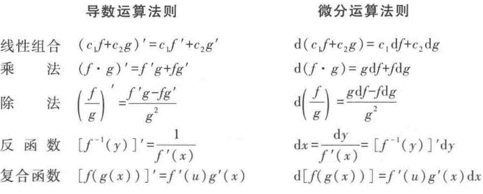
1.定理4.3.1——4.3.3(导数的运算法则)
证明导数的四则运算法则（定理 4.3.1—4.3.3）《数学分析》陈纪修 第三版（上册） · 书内 p113
证明：三条法则（定理 4.3.1 的线性性、定理 4.3.2 的乘积法则、定理 4.3.3 的商法则）都按定义 4.1.2，用差商的极限来证明。
（1）线性性：；同理可证 。
（2）乘积法则：由插项（加一项再减一项）
由于 在 可导从而连续，，令 即得
（3）商法则：先证 ，再用乘积法则。由
故 ，其微分形式为
教材指出，定理 4.3.1 和定理 4.3.2 的结论可以推广到多个函数的情况：
并请读者用数学归纳法自行证明（教材 §4.3 说明：这里第二个公式中的下标集合可改写为 ）。
应用举例（例 4.3.8、4.3.9）：，；由商法则 ，。
转录置信度medium
备注（教材编号 / 存疑说明）
2.定理4.3.4(反函数求导法则)
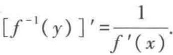
证明反函数求导定理《数学分析》陈纪修 第三版（上册） · 书内 p115
证明：因为函数 在 上连续且严格单调，由反函数连续定理，它的反函数 在 上存在、连续，且严格单调。这时
等价于 ，并且当 时有 （这是由 的连续性得到的）。因此
这里用到 ，因此可以用极限的除法运算。
教材由此求反三角函数的导数（例 4.3.10）：容易验证 满足定理 4.3.4 的所有条件，将 看成它的反函数，于是 ；同理 。
此外，教材提示：域如 在整个 上连续，但其导函数 在 处无定义，所以它的导数存在并连续的范围仅限于 。
备注（教材编号 / 存疑说明）
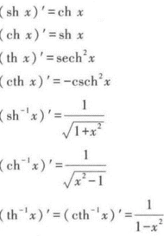
3.基本求导公式:
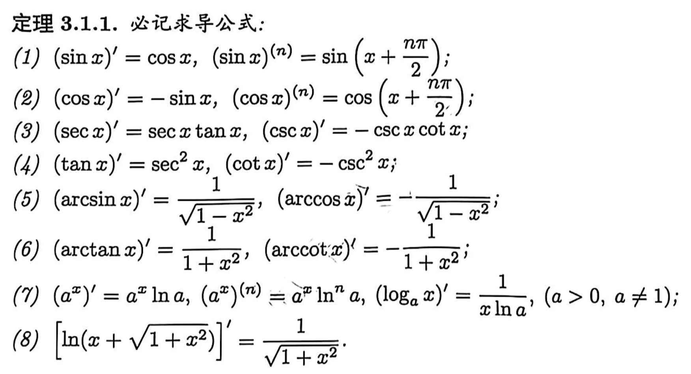
▾4.4复合函数求导法则及其应用
1.定理4.4.1(复合函数求导法则(链式法则))
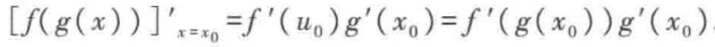
证明复合函数求导法则（链式法则）《数学分析》陈纪修 第三版（上册） · 书内 p119
证明：记 。因为 在 可导，所以
即存在 的一个邻域，使其中的 满足
其中 。又因为 在 可导从而连续，当 时有 ，故 。于是
令 ，由 与 ，得到
即 。
教材进一步指出（§4.4 一阶微分的形式不变性，书内页 122，PDF 141）：设 与 都可微，则 ，而 ，代入即得 ；若直接把 看成 的函数，则 。两式一致，这说明无论 是自变量还是中间变量，微分形式 都成立——这就是一阶微分的形式不变性。
转录置信度medium
备注（教材编号 / 存疑说明）
2.一阶微分的形式不变性:一阶微分的形式在变量代换下不变
3.隐函数求导:对单一变量求导将另一变量视为常数或复合函数利用链式法则进行求导
▾4.5高阶导数和高阶微分
1.定义:高阶导数和高阶微分
2.定理4.5.1(函数和的n阶导数)
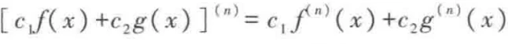
3.定理4.5.2(Leibniz公式(函数积的n阶导数))
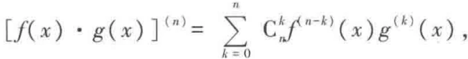
证明Leibniz 公式（乘积的 阶导数）《数学分析》陈纪修 第三版（上册） · 书内 p132
证明：用数学归纳法。
当 时，上式为
这正是 §3 中乘积的求导法则。
设当 时 Leibniz 公式成立，即有
则当 时，利用归纳法假设
将右边的第一项改写成
而将右边的第二项改写成（令 ）
两式合并后利用组合恒等式 ，即得
即 Leibniz 公式对 也成立。由数学归纳法，公式对一切正整数 成立。
教材另给出线性组合的高阶导数法则（定理 4.5.1）：设 和 都是 阶可导的，则对任意常数 和 ，它们的线性组合 也是 阶可导的，且 。这个结论可以推广到多个函数线性组合的情况：。
备注（教材编号 / 存疑说明）
4.常用高阶导数公式:
第五章微分中值定理及其应用
▾5.1微分中值定理
1.定义:极值点(在该点邻域内该点函数值最大/小) 极大/小值(极值点的函数值) 凸函数(左右导数先正后负为上凸，先负后正为下凸)
2.定理5.1.1(fermat引理(费马定理))极值点的导数值为零
证明Fermat 引理（极值点的导数为零）《数学分析》陈纪修 第三版（上册） · 书内 p141
证明：不妨设 是 的极大值点。由极大值点的定义，在 的某个邻域 上 有定义，且满足
于是当 时，有 ；当 时，有 ，因为 在 可导，所以 ，由于
因此
同理可证 为极小值点的情况。
Fermat 引理的几何意义非常明确：若曲线 在其极值点处可导，或者说在该点存在切线，那么这条切线必定平行于 轴。
教材指出：当 可导时，条件 “” 只是 为 的极值点的必要条件而并非充分条件，这只要考虑函数 在 处的情况就可以了。
备注（教材编号 / 存疑说明）
3.定理5.1.2(rolle定理)两个端点函数值相等则区间内至少存在一点导数值为零
证明Rolle 定理《数学分析》陈纪修 第三版（上册） · 书内 p141
证明：由闭区间上连续函数的性质（最值定理），存在 ，满足
其中 和 分别是 在 上的最大值和最小值。现分两种情况：
（1）。此时 在 上恒为常数，结论显然成立（任取 都有 ）。
（2）。这时 和 中至少有一个与 （亦即 ）不相同，不妨设
因此 显然是极大值点，由 Fermat 引理
证毕。
Rolle 定理的几何意义也很清楚：满足定理条件的函数一定在某一点存在一条与 轴平行、亦即与曲线的两个端点的连线平行的切线。
教材强调：定理的条件是充分的，但是三个条件中的任意一个不满足，都可能导致定理结论不成立。如以下三个函数： 不满足在闭区间 上连续的条件； 不满足在开区间 上可导的条件； 不满足 的条件——尽管它们都分别满足其他两个条件，但它们在 中都不存在水平切线。
教材应用（例 5.1.1， 次 Legendre 多项式）：函数 在 上恰有 个不同的根。证明要点：由高阶导数的 Leibniz 公式， 中都含有 因子，即当 时 都有实根 和 ； 因此 和 是它仅有的两个相异的根。由 Rolle 定理， 在 中必有一个根，记作 ；这样 在 上就至少有三个相异的根 和 。反复使用 Rolle 定理并运用数学归纳法可证， 在 上至少有 个相异的根；最后再用一次 Rolle 定理便知 在 中至少有 个相异的根；又 是 次多项式，至多只有 个根，故 在 中恰有 个根。因为 与 只相差一个系数，所以以上结论对于 也是成立的。
备注（教材编号 / 存疑说明）
4.定理5.1.3(Lagrange中值定理)闭区间连续开区间可导的函数至少有一点的导数值等于两端点连线的斜率即
证明Lagrange 中值定理《数学分析》陈纪修 第三版（上册） · 书内 p143
证明：作辅助函数
由于函数 在闭区间 上连续、在开区间 上可导，因此函数 也在闭区间 上连续、在开区间 上可导，并且有
于是由 Rolle 定理，至少存在一点 ，使得 。对 的表达式求导并令 ，整理后便得到
证毕。
教材指出：由于 和 的连线的方程为 ，故辅助函数 的几何意义是曲线 与这条弦的纵坐标之差。
教材还说明：作辅助函数是证明数学命题的重要方法之一。就证明 Lagrange 中值定理来讲，作出满足 Rolle 定理条件的辅助函数的途径有很多，比如设函数 表示以曲线上的三个点 、 和 为顶点的三角形的面积（），则显然有 ；同时容易证明 亦是一个在 连续、在 可导的函数，因此 满足 Rolle 定理所有条件，由此同样可导出 Lagrange 中值定理（具体过程留作习题）。
Lagrange 中值定理的结论 一般称为 Lagrange 公式。由于 ，因而总可以找到某个 ，使 ，所以 Lagrange 公式也可以写成
若记 为 、 为 ，则上式又可以表示为 。这是 Lagrange 公式最常用的两种形式。最后一种形式即为 ，它给出了自变量、因变量的差分和函数的导数值的精确关系，可与公式 加以比较。
备注（教材编号 / 存疑说明）
5.定理5.1.4:若函数在某一区间内可导并导函数恒为0则该函数为常函数
证明导函数恒为零的函数是常函数《数学分析》陈纪修 第三版（上册） · 书内 p144
证明：设 和 （）是区间 中任意两点，在 上应用 Lagrange 中值定理，即知存在 ，使得
由条件 ，便有
由 和 的任意性，就得到
证毕。
教材补充：读者不难将这个结论推广到闭区间的情况。由定理 5.1.4 还可以引申出：若 和 均在 上可导，且 ，则 和 在 上至多相差一个常数，即 。这一推论是第九章不定积分中“原函数相差常数”的依据。
备注（教材编号 / 存疑说明）
6.定理5.1.5:函数在某一区间单调递增的充要条件是导函数在该区间内恒大于0
证明一阶导数与单调性的关系《数学分析》陈纪修 第三版（上册） · 书内 p145
证明：先证充分性。设 和 （）是区间 中任意两点，在 上应用 Lagrange 中值定理，即知存在 ，使得
由于 ，因此 与 同号。所以，当 或 时，相应地分别有 或 ，由 和 在 中的任意性，即知 在 上单调增加或严格单调增加。
再证必要性。设 是区间 中任意一点，由于 在 上单调增加，所以对于任意 （）成立
令 ，即得到 。
类似地可以得到在 上 （或 ）与 在 上单调减少（或严格单调减少）之间的关系。
教材提醒：若将定理 5.1.5 后半部分的条件减弱为“在 中除了有限个点外，都有 ”，则结论 “ 在 上严格单调增加” 依然成立。因此 “” 只是 严格单调增加的充分条件而非必要条件。
备注（教材编号 / 存疑说明）
7.定理5.1.6:(二阶导数与凹性的关系)①二阶导≥0为下凸,>0为严格下凸②相反则为上凸
证明二阶导数与凸性的关系《数学分析》陈纪修 第三版（上册） · 书内 p146
证明：先证必要性。因为 在 上是下凸函数，由定义 5.1.2 可推出，对于任意 和 ，若 和 都属于 ，则有（在定义 5.1.2 中取 ）
所以
对于任意 ，不妨设 ，令 ，反复利用上式，就得到
因此有
由于 在 和 可导，令 即 ，便得到
即 在 上单调增加，因此 在 上的导数非负，即 。
再证充分性。若在 上 ，则 在 上单调增加。对 上任意两点 （不妨设 ）及 ，取 ，那么 ，且
在 和 上分别应用 Lagrange 中值定理，则存在 和 ，使得
因此利用 在 上的单调增加性质得
分别用 和 乘以上两式并相加得
由定义， 在 上是下凸函数。定理的后半部分证明留给读者考虑。
类似地可以得到在 上 （或 ）与 在 上上凸（或严格上凸）之间的关系。教材提醒：若将定理 5.1.6 后半部分的条件减弱为“在 中除了有限个点外，都有 ”，结论 “ 在 上是严格下凸函数” 依然成立；因此 “” 只是 严格下凸的充分条件而非必要条件。
备注（教材编号 / 存疑说明）
8.定理5.1.7:(二阶导数与拐点的关系)二阶导数在拐点处变号且拐点处二阶导等于零
证明二阶导数与拐点的关系《数学分析》陈纪修 第三版（上册） · 书内 p147
证明：结论 (1) 是显然的。现证结论 (2)。
由于点 是曲线 的拐点，不妨设曲线 在 上是下凸的，在 上是上凸的。
由 二阶可导的假设与定理 5.1.6，可知在 上 ，在 上 ；换言之， 在 上单调增加，而在 上单调减少，即 是 的极大值点。
再由 的存在性与 Fermat 引理，得到
证毕。
教材提醒：定理 5.1.7(2) 给出的是二阶可导函数曲线的拐点所满足的必要条件，而非充分条件。例如曲线 上的 点就满足条件 ，但它不是拐点。另外，由曲线 可知，即使 在 点不存在，点 也可能是曲线 的拐点。因此，当我们通过对 求二阶导数来确定拐点的话，既要考虑满足 的点，也要考虑 不存在的点。
备注（教材编号 / 存疑说明）
9.定理5.1.8:(Jensen不等式)
10.定理5.1.9:(Cauchy中值定理) 参数曲线至少存在一点的切线斜率与端点连线的斜率相等
证明Cauchy 中值定理《数学分析》陈纪修 第三版（上册） · 书内 p151
证明：由闭区间上连续函数的性质，以及 在 上连续、在 上可导、且导数恒不为零，读者不难用反证法证明 在 上严格单调（留作习题）。不妨设 严格单调增加。
记 ，，由反函数存在定理和反函数导数存在定理，在 上存在 的反函数 ， 在 上连续、在 上可导，其导数
并且 在 上也是严格单调增加的。
考虑 上的复合函数 ，由定理条件和以上讨论，即知 在 上满足 Lagrange 中值定理条件，于是存在 ，使得
由 和 的关系，在 中一定存在一点 ，满足 ，于是
代入上式就得到了定理结论。
教材指出：由参数形式函数的求导公式，有 ，所以 Cauchy 中值定理也可以看成是 Lagrange 中值定理的参数表达形式。教材还说明：可以采用与证明 Lagrange 中值定理相仿的方法来证明 Cauchy 中值定理，辅助函数的构造及其几何意义都是类似的（留作习题）；上面采用的是完全不同的思路（借助反函数把参数曲线化为显式函数的复合）。
备注（教材编号 / 存疑说明）
11.各类中值问题方法:
①构造辅助函数:
▾5.2L'hospital法则
1.未定型的分类(0与无穷的加减乘除和1，0及无穷的乘方)
2.定理5.2.1:(L'hospital法则)只有两个函数的极限符合未定型时才能使用
证明L'Hospital 法则《数学分析》陈纪修 第三版（上册） · 书内 p156
证明：这里仅对 为有限数来证明，当 为无穷大时的证明过程是类似的（留作习题）。
先证明 的情况。由于函数在 处的值与 时的极限无关，因此可以补充定义
使得 和 在 上连续。这样，经补充定义后的函数 和 在 上满足 Cauchy 中值定理的条件，因而对于任意 ，存在 ，满足
当 时显然有 。由于 存在，两端令 ，即有 。
下面证明 时的情况。记 是 中任意一个固定点，则当 时， 可以改写为
于是，由三角不等式
因为 ，所以对于任意 ，存在 ，当 时，。取 ，由 Cauchy 中值定理，对于任意 ，存在 满足
于是得到 。又因为 ，所以可以找到正数 ，当 时成立
综上所述，即知对于任意 ，存在 ，当 时
由定义即得 。
教材补充两点。第一，从定理后半部分的证明过程可以知道，当 时 ，那么此时对 的变化趋势事实上没有任何要求。也就是说，这时无论 有无极限、有界无界，只要 存在，L'Hospital 法则都将是有效的。所以尽管习惯上大家将它称作 “ 型”，但实际上它的使用范围可以扩展为 “ 型” 极限，“” 代表任意变化类型。以上结论在 、 或是 （包括 和 ）时也是成立的，请读者自证。
第二，L'Hospital 法则只告诉我们，对于 型或 型，当 存在时，它的值等于 。那么这是否意味着，当 不存在时， 也不存在呢？请看下面的例子（例 5.2.11）：求 。这是 型，但我们不能根据当 时 的极限不存在，就错误地得出 也不存在的结论——事实上，显然有 。因此， 不存在并不表示 本身存在或不存在，它仅仅意味着，此时不能使用 L'Hospital 法则，而应改用其他方法来讨论。
备注（教材编号 / 存疑说明）
▾5.3Taylor公式和插值多项式
1.定义:插值多项式(关于n个互异散点的最低次拟合多项式) Kronecker记号(
)
2.定理5.3.1:(Taylor公式Peano余项)
证明带 Peano 余项的 Taylor 公式《数学分析》陈纪修 第三版（上册） · 书内 p163
证明：考虑 ，只要证明 。显然
反复应用 L'Hospital 法则，可得
因此 。
教材说明：上述公式称为 在 处的带 Peano 余项的 Taylor 公式，它的前 项组成的多项式 称为 的 次 Taylor 多项式，余项 称为 Peano 余项。带 Peano 余项的 Taylor 公式对 的要求比带 Lagrange 余项的 Taylor 公式要稍弱一些。
备注（教材编号 / 存疑说明）
3.定理5.3.2:(Taylor公式Lagrange余项)
证明带 Lagrange 余项的 Taylor 公式《数学分析》陈纪修 第三版（上册） · 书内 p163
证明：考虑辅助函数
那么定理的结论（即需要证明的）就是
不妨设 （ 时证明类似）。则 和 在 上连续、在 上可导，且
显然 在 上不等于零。因为 ，由 Cauchy 中值定理可得
因此 ，即
证毕。
教材说明：特别地，当 时，定理 5.3.2 成为 ， 在 和 之间，这恰为 Lagrange 中值定理的结果。所以，带 Lagrange 余项的 Taylor 公式可以看成是 Lagrange 中值定理的推广。显然，当 时，带 Lagrange 余项的 Taylor 公式蕴涵了带 Peano 余项的 Taylor 公式，即前者的结论强于后者，但采用带 Peano 余项的 Taylor 公式时，对 的要求也比采用带 Lagrange 余项的 Taylor 公式时稍弱一些。
在实际使用时，教材经常将 Taylor 公式写成（带 Lagrange 余项）
或是（带 Peano 余项）
备注（教材编号 / 存疑说明）
4.引理5.3.1:(原函数与导函数零点的关系)若g(x)有a个g(x)=0的点同时在其中b个点上的导数为零，则g(x)至少有a+b-1个零点
5.定理5.3.3:(插值多项式的余项定理)
6.定理5.3.4:(插值多项式的存在性)
▾5.4函数的Taylor公式及其应用
1.maclaurin公式:(函数在x=0点处的Taylor公式)
2.定理5.4.1:(Taylor公式的递推性质)若f(x)的n+2阶导存在，则它的n+1次泰勒多项式的导数就是f(x)的一阶导的n次泰勒多项式
教材补充Taylor 公式的递推性质《数学分析》陈纪修 第三版（上册） · 书内 p174
证明：直接对 逐项求导，得
其中用到 以及对 的 阶导数为 这一事实（）。
这一递推性质说明：“先求 Taylor 多项式再求导”与“先求导再求 Taylor 多项式”是一致的。教材在 §5.4 中给出该结论（定理 5.4.1，书内页 171 起）并用于推导常见的麦克劳林公式与 Taylor 公式的应用（例如由 的展开式逐项求导得到 的展开式）。
麦克劳林公式：函数在 点处的 Taylor 公式称为麦克劳林公式，即 （当 充分小时）。教材在 §5.4 中列出了一批常用初等函数的麦克劳林公式（见笔记 sf-c6-20）。
转录置信度medium
备注（教材编号 / 存疑说明）
supplement。（round 3 更正：此前 sources 填的是 §5.4 节起页 171/190 并备注“定理 5.4.1 的具体位置待核”；现已读图定位到确切页 174/193。）3.应用:近似计算 求极限 证明不等式 求曲线的渐近线方程 外推
4.常用的麦克劳林公式
▾5.5应用举例
1.定理5.5.1:(极值点判定定理)
教材补充极值的判定（一阶／二阶导数判别法）《数学分析》陈纪修 第三版（上册） · 书内 p185
证明：(1)(2) 由定理 5.1.5（见 sf-b 的 sf-c6-6）立即可得——在 左侧导数恒正意味着 在左侧单调增加，右侧导数恒负意味着 在右侧单调减少，故 是极大值；反之同理。这里用到 使两侧的单调性在 处“衔接”为极大（小）值点。
(3) 由 Fermat 引理（见 sf-b 的 sf-c6-2），可导的极值点必满足 ，现将条件加强为 。由导数定义与 Taylor 公式（带 Peano 余项，见 sf-b 的 sf-c6-13），当 充分小时，
于是 。若 ，则当 充分小时括号内为负，故 ，即 是极大值；若 ，同法得 ，即 是极小值。
教材说明：这些判别法都只是充分条件。例如 在 处满足 ，但它仍是极小值点（此时需用更高阶的 Taylor 公式判别）；又如 在 处 ，但 不是极值点。
转录置信度medium
备注（教材编号 / 存疑说明）
2.凸函数等价定理:
教材补充凸函数的等价刻画（Jensen 不等式与割线斜率）《数学分析》陈纪修 第三版（上册） · 书内 p155
证明：Jensen 不等式是下凸定义的直接推广（从 推广到任意有限个点）。对 作数学归纳法。
时即为下凸函数的定义。设 时成立，考虑 个点与权 、。若 ，则其余 ，不等式平凡成立。否则记 ，则 ，于是
由 的下凸性与归纳法假设，
反之，若 Jensen 不等式对一切 与一切权成立，取 、、 即得下凸函数的定义。故两者等价。
（注：教材 §5.1 把 Jensen 不等式列在习题第 24 题中：“设 为 上的连续下凸函数，证明对于任意 和 ，，成立 。”因此该结论在教材中是习题而非正文定理，本条按习题原文给出并补全归纳法证明。）
教材 §5.5 还从割线斜率的角度给出凸函数的等价刻画（笔记 sf-c6-22 所指的“凸函数等价定理”）： 在 上下凸当且仅当对任意 成立
即割线的斜率随横坐标的增加而单调不减；当 可导时，这又等价于 在 上单调增加（见 sf-b 的 sf-c6-7 的必要性证明）。
转录置信度medium
备注（教材编号 / 存疑说明）
proofStatus="stated"、confidence="medium"。（round 3 更正：此前 sources 填的是 170/189——那是 §5.1 的正文页而非习题页，偏了 15 页；同时删去了此前未经核实的第二条 sources（§5.5 190/209，属推断）。笔记中的“凸函数等价定理”在教材正文没有与之逐字对应的编号定理。）第六章不定积分
▾6.1不定积分的概念和运算法则
1.定义:原函数(导函数的不定积分) 不定积分(全体原函数)
2.定理6.1.1:(线性性)
证明不定积分的线性性质《数学分析》陈纪修 第三版（上册） · 书内 p207
证明：设 是 在 上的一个原函数， 是 在 上的一个原函数，即 ，。
（1）由导数的线性性，，所以 是 的一个原函数，即 与 都表示 的原函数全体，故二者相等。
（2）由导数的线性性，，所以 是 的一个原函数，故
结合 (1)(2) 即得 （ 为常数）。
教材提醒：不定积分的线性性是“求导的线性性”与“原函数相差常数”（见 sf-b 的 sf-c6-5，即 Lagrange 中值定理的推论： 为常数）的直接推论。这一推论还说明，同一个函数的任意两个原函数之差是常数，因此不定积分的记号中必须带有任意常数 。
转录置信度medium
备注（教材编号 / 存疑说明）
3.基本不定积分公式:
▾6.2换元积分法和分部积分法
1.第一类换元积分法
2.第二类换元积分法
3.分部积分法
4.对数函数和指数函数积分:第一类换元积分法/分部积分法
5.配对积分法:①信号:存在两个可通过分部积分转换的积分时可使用(通常含有指数函数/三角函数等求导无变化或变化较小的函数)②方法:通过分部积分及线性运算消除多余积分部
6.递推法求积分:①信号:有n次方或高次幂可通过分部积分写递推公式②方法:使用分部积分降幂写递推式即可得原函数
7.分式问题:①信号:分母可进行裂项或分子可拆分为简单式②方法:先观察被积函数分子是否可化简，若不能则看分母是否可裂项，化简/裂项后进行积分
8.根式问题:①信号:有根号②方法:根号内较简单考虑凑反函数，较复杂则考虑第二类换元法消根号，一般考虑换元为三角函数
9.绝对值/分段问题:①信号:被积函数有绝对值或被积函数为分段函数②方法:有绝对值/分段函数根据函数区间分别找原函数然后写分段的原函数
▾6.3有理函数的不定积分及其应用
1.定理6.3.1:(有理函数分母有重复实根的分解)
证明有理函数的部分分式分解（分母有重复实根的情形，定理 6.3.1）《数学分析》陈纪修 第三版（上册） · 书内 p224
证明：令 ，则 是多项式 的根，设
就得到
证毕。
教材接着用定理 6.3.1 与定理 6.3.2（见 sf-c7-6）反复应用，把有理函数
分解成简单分式之和。分解的规律是：若 含有因子 ，则在和式中就有项
若 含有因子 ，则在和式中就有项
其中 可以用待定系数法具体算出来。求有理函数 的问题，由此就归结为求多项式与上述两种类型的不定积分。
备注（教材编号 / 存疑说明）
proofStatus=stated、confidence=low、页码 236/255 并称“教材只叙述结论不作证明”——三点都不对：教材有证明，且 236/255 是第七章 §7.1 的 Darboux 和，与 §6.3 无关。已按实测页 224~225 重写。）2.定理6.3.2:(有理函数分母有重复复根的分解)
证明有理函数的部分分式分解（分母有重复复根的情形，定理 6.3.2）《数学分析》陈纪修 第三版（上册） · 书内 p224
证明：令
其中 为实数，则
于是 是多项式 的根，设
就得到
证毕。
分解完成后，所涉及的积分只有两种类型（教材书内页 225，PDF 244）：
对第二类，教材先把原式化为 ，第一项用第一类换元积分法，第二项配方成 后沿用例 6.2.18 的递推公式。
备注（教材编号 / 存疑说明）
proofStatus=stated、confidence=low、页码 236/255 并称“教材只叙述结论不作证明”——完全不对，已按实测页 224~225 重写。）3.三角函数有理式的不定积分:①第二类换元法
②
③将三角函数有理式化为有理函数的不定积分
4.无理根式的不定积分:
第七章定积分
▾7.1定积分的概念和可积条件
1.定义:Riemann和(
) Riemann可积(Riemann和收敛) Darboux和(大/小和)[
] 振幅(
划分区间内的最值差)
2.引理7.1.1:若在原划分中再加分点则大和减少小和增大
证明Darboux 和的可加细性（引理 7.1.1）《数学分析》陈纪修 第三版（上册） · 书内 p237
证明：设 和 是对应于某一划分 的 Darboux 大和与 Darboux 小和，设相应的分点为 。不失一般性，我们证明对这种划分再增加一个新分点后所得到新划分 的 Darboux 大和 与 Darboux 小和 ，成立
设增加的新分点 ，记 在 和 上的上确界分别为 和 ，则显然有
于是
而这时 和 中的其他项都没有变化，因此 。同理可证 。
证毕后，教材记 是一切可能的划分所得到的 Darboux 大和的集合，而 是一切可能的划分所得到的 Darboux 小和的集合（记号中的上、下划线分别表示“大和集”与“小和集”）。
备注（教材编号 / 存疑说明）
3.引理7.1.2:对任意的划分大小和恒有上界M(b-a)和下界m(b-a)
4.引理7.1.3:(Darboux定理) 对任意有界函数f(x)恒有大和收敛于L小和收敛于l
证明Darboux 定理（大和与小和的极限等于其确界）《数学分析》陈纪修 第三版（上册） · 书内 p238
证明：我们只就大和的情况加以证明，小和的情况是类似的，请读者自证。
对于任意给定的 ，因为 是 的下确界，所以存在着一个 ，满足
设对应 的划分为 ，取
对任意一个满足 的划分
记与其相应的大和为 ，我们在 中插入 形成新的划分 ，并将这一新划分的大和记作 ，则由引理 7.1.1，即知 。
将对应于划分 的区间 分成两类：
(1) 中不含有新插入的分点。显然，这时 和 中的相应项同为 ，即两者相等。
(2) 中含有新插入的分点。由于两种划分的端点 重合，因此这样的区间至多只有 个。
因为对任意 ，（；），所以在 中只有一个新插入的分点 。利用前面的记号，这时 和 中的相应项之差为
于是 。
综合上面的结论，即有
这就证明了 。
（其中 与 分别是 在 上的上确界与下确界，它们的有限性由 有界保证； 的构造保证每个 都不超过 的任一子区间长度，从而使每个 内至多含一个新分点。）
备注（教材编号 / 存疑说明）
5.定理7.1.1:有界函数f(x)在[a,b]内可积的充要条件是大和小和都收敛(收敛与Riemann和)且极限相等
证明可积的充分必要条件（大和与小和的极限相等，定理 7.1.1）《数学分析》陈纪修 第三版（上册） · 书内 p239
证明：先证必要性。设 可积且积分值为 ，则由定义，对任意的 ，存在 ，使得对任意划分 和任意点 ，只要 ，便有
特殊地，取 是 中满足 的点（ 是 在 中的上确界，因此这样的 一定是可以取得到的），于是
所以
这就是 。同理可证 。于是 。
再证充分性。按 Darboux 和的定义，对任意一种划分 ，其 Darboux 大和与小和总满足
若 ，那么两边取极限，即有
即 在 上可积。
教材说明：若记 为 在 上的振幅，则定理 7.1.1 也可以等价地表述为定理 7.1.2（见本条目的 sf-c8-6）。
备注（教材编号 / 存疑说明）
6.定理7.1.2:有界函数f(x)在[a,b]内可积的充要条件是对任意划分振幅和收敛于零
证明可积的振幅判别法（定理 7.1.2）《数学分析》陈纪修 第三版（上册） · 书内 p240
证明：由定理 7.1.1， 在 上可积等价于
把 Darboux 大和与小和之差写成
由 Darboux 定理（引理 7.1.3）两个极限 与 都存在，故
因此 等价于 ，即 可积等价于振幅和趋于零。
定理 7.1.2 的几何意义是当分割无限细分时（即 ），图 7.1.5 中的阴影部分的面积之和趋于零。
备注（教材编号 / 存疑说明）
7.推论1:[a,b]上的连续函数必可积
证明闭区间上的连续函数必定可积（推论 1）《数学分析》陈纪修 第三版（上册） · 书内 p240
证明：设 在 上连续，则它在 上一致连续（Cantor 定理，见 sf-a 的 sf-c4-30）。也就是说，对任意 ，存在 ，对任意 ，只要 ，就有
因此，对于任意划分 ，只要 ，便有
于是
由定理 7.1.2， 在 上可积。
（这里 的理由是：振幅 由区间 内某两点的函数值之差取到，而这两点的距离 。）
备注（教材编号 / 存疑说明）
8.推论2:[a,b]上的单调函数必定可积
证明闭区间上的单调函数必定可积（推论 2）《数学分析》陈纪修 第三版（上册） · 书内 p241
证明：设 在 上单调，不妨设其为单调增加，则在任意小区间 上， 的振幅为
于是，对任意给定的 ，取 ，当 时，
由定理 7.1.2， 在 上可积。
（若 ，则 为常函数，显然可积；否则上述 的构造有意义。）
备注（教材编号 / 存疑说明）
9.定理7.1.3:有界函数f(x)在给[a,b]可积的充要条件是存在一种划分使得相应的振幅任意小
证明可积的另一个充分必要条件（定理 7.1.3）《数学分析》陈纪修 第三版（上册） · 书内 p241
证明：必要性。设 在 上可积，由定理 7.1.2 有 。于是对任意给定的 ，存在 ，使得对任何满足 的划分 都有 ——这样的划分显然存在（例如取等分且份数足够多的划分），即存在着一种划分使相应的振幅和小于 。
充分性。设对任意给定的 ，存在一种划分 ，使得 。回顾 Darboux 定理（引理 7.1.3）的证明过程，它实际上证明了：对任意给定的 ，只要有一个划分 满足
那么就一定存在某个 ，对满足 的任意一种划分 ，必有 （或 ）。
由假设，对给定的 存在划分 使 ，即 。又由 Darboux 定理，，于是也有
从而按上面的分析，存在 ，对满足 的任意划分 成立 ，即 ；同理 。
由 Darboux 定理又有 。若对满足 的任意划分都取 ，则由 与 得 ，再由定理 7.1.1， 在 上可积。
教材说明：定理 7.1.3 的几何意义是，只要存在一种划分使图 7.1.5 中阴影部分的面积之和任意小，函数就可积。这一判别法比定理 7.1.2 容易使用，因为它只要求“存在一种划分”，而不要求“对任意划分”。
教材把定理 7.1.3 的证明留给读者，上述过程是按教材给出的两条提示（“回顾 Darboux 定理的证明过程”与“对任意划分都有振幅和趋于零”）补全的。
转录置信度medium
备注（教材编号 / 存疑说明）
10.推论3:闭区间上只有有限个不连续点的有界函数必可积
证明闭区间上只有有限个不连续点的有界函数必定可积（推论 3）《数学分析》陈纪修 第三版（上册） · 书内 p241
证明（按教材原文逐字转录）：设 在 上的不连续点共有 个，记为 ，设相邻两个点之间的最小距离为 。不妨假设 和 在 的内部。
取
以 的 邻域的两端点为分点把 分成 个子区间，其中 个小区间 的长度为 ，其余 个闭区间 上 处处连续。
在 上 的振幅不超过 ，故这些小区间上的振幅和不超过 ；在其余 个闭区间 上，由推论 1（见 sf-c8-7） 可积，故每个 上可取到一种划分使振幅和小于 。
把这些划分合并，就得到 的一种划分，使得
由定理 7.1.3， 在 上可积。
教材指出：由此可知 上的 Dirichlet 函数（在 上处处不连续）不是 Riemann 可积的，因为不管如何作分割，它在每个小区间 上的振幅恒有 ，于是 。
备注（教材编号 / 存疑说明）
11.可积的充要条件:
12.可积函数类:
7.2定积分的基本性质
1.线性性:
2.推论1:在有限个点上改变一个可积函数的函数值不影响其可积性和积分值
3.乘积可积性:可积函数相乘仍然可积
4.保序性:积分后函数本身及函数的大小关系不变
5.绝对可积性:
，f(x)可积→|f(x)|可积⇔f²(x)可积
6.区间可加性:
7.积分第一中值定理:(不变号的不动)g(x)在[a,b]上不变号
证明积分第一中值定理《数学分析》陈纪修 第三版（上册） · 书内 p247
证明：因为 在 上不变号，不妨设
于是有
由定积分的性质（保序性），得到
由于 和 都是常数，因而必有某个 ，使得
若 在 上连续，则由闭区间上连续函数的中间值定理，此时必存在某个 ，使得 ，因此
证毕。
教材指出一个特殊情况：当 在 上连续、而 时，上述积分第一中值定理的结论就变成了
它的几何意义十分明确：当 时，上式的左边表示由曲线 和直线 、 以及 轴围成的曲边梯形的面积，它一定等于以 为底、某个 为高的矩形面积。教材还说明：如果 （一般地，当 不恒为零而积分为零时），上式中的 无法由该式唯一确定，此时结论仍成立（两边同为 ）。
备注（教材编号 / 存疑说明）
8.holder不等式:
p,q为满足$\frac{1}{p}+\frac{1}{q}=1$的正数
9.倒数可积条件:①|f(x)|≥m>0②f(x)在[a,b]上连续且恒不为零
10.复合函数可积性:两个可积函数的复合函数不一定是可积函数，内函数连续，外函数可积的复合函数也不一定可积，只有外函数连续内函数可积的复合函数才可积
11.积分第二中值定理:(单调非负取最大)①g(x)≥0且在[a,b]上单调递增
②g(x)≥0且在[a,b]上单调递减
③g(x)在[a,b]上单调
证明积分第二中值定理《数学分析》陈纪修 第三版（上册） · 书内 p318
证明：教材在 §8.2（书内页 318 陈述、319 证明，PDF 337~338）给出的是** 在 上连续、 单调且 在 上可积这一特殊情形的证明（路线为分部积分 + 积分第一中值定理）；对一般的可积 与单调 ，教材原文写明“由于证明过程比较复杂，在此从略”**，并未给出完整证明。该特殊情形的完整叙述见本条目的 sf-c9-10（教材定理 8.2.4），本条不重复。
教材在 §7.2 的定积分基本性质中提到了积分第一中值定理（见 sf-c8-13），而积分第二中值定理被放在 §8.2“反常积分的收敛判别法”中作为一般函数反常积分收敛判别法的预备结果先予证明（教材原文：“我们先证明一个重要结果”）。
积分第二中值定理的常用特例（教材 §7.7 与 §8.2 反复使用）：
(1) 若 且在 上单调递减，则存在 ，使 ；
(2) 若 且在 上单调递增，则存在 ，使 。
转录置信度medium
备注（教材编号 / 存疑说明）
▾7.3微积分基本定理
1.定理7.3.1:(Newton—Leibniz公式)
证明Newton–Leibniz 公式（微积分基本定理的积分形式）《数学分析》陈纪修 第三版（上册） · 书内 p254
证明：设 是 在 上的任一个原函数，而由定理 7.3.1（见本条目的 sf-c8-16）， 也是 在 上的一个原函数，因而两者至多相差一个常数。记
令 ，即得到 ，所以
再令 ，由于定积分中的自变量用什么记号与积分值无关，便可得到
证毕。
定理的结论被称为 Newton–Leibniz 公式，公式中的 一般记为 ，也就是 。教材另给出一个直观的说明（书内页 251~253，PDF 270~272）：以速度 作变速运动的物体在时间段 中所走过的路程 可以表示为 ，而 ，即 是 的一个原函数，于是 ；同理，曲边直角三角形的“高” 与 也相等，两次得到“积分值 = 原函数在两端点的函数值之差”。
备注（教材编号 / 存疑说明）
2.定理7.3.2:(微积分基本定理) 定义F(x)是可积函数f(x)在[a,b]上的变上限积分则①F(x)为[a,b]上的连续函数②F(x)在f(x)的任一连续点都可导③若f(x)是[a,b]上的连续函数则F(x)是[a,b]上的连续可微函数。可积→连续→可导→连续可微
证明微积分基本定理（变上限积分函数的性质）《数学分析》陈纪修 第三版（上册） · 书内 p253
证明：由定理条件知 在整个 上有定义。由定积分的区间可加性，
记 、 分别为 在 上的下确界与上确界，则由定积分第一中值定理（见 sf-b 的 sf-c8-13），即得到
显然，不管在哪一种情况下，当 时都有 （第一种情形中 有界、），即 在 上连续。这就证明了 (1)。
若 在 上连续，当 时 ，因而 ，于是
证毕。
教材说明这个定理的两点重要意义。首先，它扩展了函数的形式： 与我们熟悉的初等函数形式迥异，但它确实是一种函数的表示形式，它使我们对函数的认识冲出了初等函数的束缚，不再囿于这狭窄的范围。其次，它说明了当 在 上连续时， 正是 在 上的一个原函数——这就是第六章 §3 开头所断言的“任何一个连续函数必存在原函数”。例如 是 的一个原函数， 是 的一个原函数。
此外，定理 7.3.1 的结论 (2) 还给出了对 这种形式的函数求导（通常称为“对积分上限求导”）的一个法则：。
⚠ 笔记原文有误（已按教材订正）（订正说明：笔记 sf-c8-16 的表述为“① 为 上的连续函数；② 在 的任一连续点都可导；③若 是 上的连续函数则 是 上的连续可微函数。可积→连续→可…”。教材定理 7.3.1 的原文只有 (1)(2) 两条结论，其中 (2) 的条件是 在 上连续（而非仅“在任一连续点”），结论是 ；笔记的第 ③ 条是 (2) 的直接结果（连续函数可积、故 连续，又 可微且导函数连续，即 连续可微），并非教材第三条结论。本条以教材原文的两条为准并在正文中给出第 ③ 条的说明。）
备注（教材编号 / 存疑说明）
3.定理7.3.3:(定积分的分部积分公式)
教材补充定积分的分部积分公式《数学分析》陈纪修 第三版（上册） · 书内 p256
证明思路：由乘积的求导法则 ，两边在 上积分，再用 Newton–Leibniz 公式（见 sf-b 的 sf-c8-15）：
移项即得
这就是定积分的分部积分公式。教材在 §7.3 中以定理 7.3.3 的形式给出该结论，并把 的条件写为“在 上有连续的导函数”（从而 连续、可积，Newton–Leibniz 公式可用）。
转录置信度medium
备注（教材编号 / 存疑说明）
supplement。（round 3 更正：本条 note 原先还留有一句指向上一版（比实际位置小一页）的旧页码说明，它与更正后的 sources 自相矛盾，已删除；现以 sources 的 256 / 275 为准。）4.正交函数:
则称{gn(x)}为[a,b]上的正交函数列，当gn(x)为n次多项式时称为正交多项式列
5.定理7.3.4:(定积分的换元积分法)
教材补充定积分的换元积分公式《数学分析》陈纪修 第三版（上册） · 书内 p258
证明思路：因为 在 上连续，所以 有原函数 ，且 （Newton–Leibniz 公式）。又由复合函数求导法则（链式法则），
即 是 在 上的一个原函数，于是再用一次 Newton–Leibniz 公式得
这就是定积分的换元积分公式。教材在 §7.3 中以定理 7.3.4 的形式给出该结论（书内页 256 起）。
教材提醒：定积分的换元与不定积分的换元（第二类换元积分法）的区别在于——定积分的换元必须同时换掉积分限，且换元后不再需要“回代”原变量。
转录置信度medium
备注（教材编号 / 存疑说明）
6.连续逼近:任取函数上n个点并依次用直线段链接这些点得到函数fₙ(x)，当n趋于无穷时fₙ(x)=f(x)
7.阶梯逼近:构造类似Darboux小和的阶梯函数g(x)，使得|f(x)-g(x)|的积分任意小
8.定理7.3.5:(对称性)
9.定理7.3.6:(周期性)
▾7.4定积分在几何计算中的应用
1.定义:弧长(
分段切分求和) 光滑曲线(
) 平均曲率(
) 曲率(
) 曲率圆/密切圆($R=\frac{1}{K}$，且与曲线该点有相同的切线，位于切线的同侧) 曲率半径(曲率圆的半径) 曲率中心(曲率圆的圆心)
2.应用:①求平面图形的面积(注意x，y轴图形过轴要么切分要么换被积变量，图形不规则用极坐标)②求曲线的弧长:
③求特殊几何体的体积:找截面积分若是旋转体则乘π，若是平行截面面积已知的立体则直接对截面函数进行积分④求旋转曲面的面积:求曲线弧长后乘π⑤求曲线的曲率
3.计算公式表:
▾7.5微积分实际应用举例
微元法 由静态分布求总量 求动态效应 简单数学模型和求解
▾7.6定积分的计算
1.三角函数积分公式:
①x∈[0,π/2]
②x∈[0,π]
③x∈[0,2π]
2.奇偶性及对称性:①奇函数两侧积分抵消等于零②偶函数对称区间两侧相等等于单侧积分的二倍③中心对称两边区间抵消等于零④轴对称两侧积分相等等于单侧积分的二倍
3.乘积对称性:①f(x)，g(x)都关于X0轴对称,则f(x)g(x)也关于X0轴对称②f(x)关于X=X0轴对称g(x)关于(X0,0)中心对称则f(x)g(x)关于(X0,0)中心对称③f(x)，g(x)都关于(X0,0)中心对称则f(x)g(x)关于X0轴对称
4.三角函数幂对称(可由乘积对称性得到):①sinx的n次方关于x=π/2轴对称②cosx的n次方，n为偶数时关于x=π/2轴对称，n为奇数时关于(π/2,0)中心对称③cosx的m次方乘以sinx的n次方，m为偶数时关于x=π/2轴对称，m为奇数时关于(π/2,0)中心对称
5.欧拉积分:
6.xf(sinx)型:
7.狄利克雷积分:
8.Fejer积分:
9.沃利斯公式:
10.分段积分法:将积分区间等分为多个小闭区间进行操作
11.黎曼引理:
▾7.7积分不等式
1.三种放缩:①整体放缩②部分放缩③泰勒展开
2.递推法:观察递推公式判断单调性
3.对称变换:将不等式通过第二类换元法化为对称函数通过查找对称轴/对称中心对比积分区间判断积分值大小
4.牛顿－莱布尼茨公式的应用:
5.施瓦茨不等式及其简单应用:①
②
③
④
6.二重积分法:判断两个积分乘积时通过将原式视为累次积分化为二重积分后判断大小
7.待定系数法构造辅助函数:
8.积分中值定理的应用:
9.函数凹凸性:①(詹森不等式)
10.导数与单调性:构造积分上限函数求导判断单调性
11.分段法:
12.积分第二中值定理:
第八章反常积分
▾8.1反常积分的概念和计算
1.定义:反常积分/广义积分(区间积分无限或被积函数无界) 收敛/发散(
) 奇点(瑕点在该点的任意一共邻域内函数都无界) 无界积分发散/收敛(
) Cauchy主值(
通过奇点两侧对称的发散部分互相消除找到反常积分的一个有限主部)
2.反常积分计算:与定积分计算基本一致除了不满足乘积可积性
3.p-积分:
4.无穷积分的柯西准则:对无穷远处/瑕点的邻域内的任意两点间的积分值任意小
5.反常积分的基本收敛判别法:对无穷远处/瑕点的领域内总有存在一点使得积分值任意小
6.反常积分的绝对值:被积函数绝对值的积分≥被积函数积分的绝对值
▾8.2反常积分的收敛判别法
1.定理8.2.1:(cauchy收敛原理)在任意有限区间上积分的绝对值收敛则反常积分收敛
证明反常积分的 Cauchy 收敛原理《数学分析》陈纪修 第三版（上册） · 书内 p316
证明：由反常积分的定义， 收敛即为极限 存在，因此对其收敛性的最本质的刻画就是极限论中的 Cauchy 收敛原理（数列／函数极限的 Cauchy 收敛原理，见 sf-a 的 sf-c4-11）：
记 ，则 存在且有限的充要条件是：，，，有 。
由定积分的区间可加性，，于是上述条件即为
证毕。
教材说明：由于反常积分 收敛即为极限 存在，因此对其收敛性的最本质的刻画就是极限论中的 Cauchy 收敛原理。无界函数反常积分也有相应的 Cauchy 收敛原理（教材定理 8.2.1）：反常积分 （ 是唯一奇点）收敛的充分必要条件是：对任意给定的 ，存在 ，使得对任意 ，有 。
备注（教材编号 / 存疑说明）
2.定义:绝对收敛(反常积分收敛且绝对值也收敛) 条件收敛(反常积分收敛但绝对值不一定收敛)
3.推论:若反常积分绝对收敛则它一定收敛
证明绝对收敛的反常积分必定收敛《数学分析》陈纪修 第三版（上册） · 书内 p316
证明：对任意给定的 ，由于 收敛，由 Cauchy 收敛原理（见 sf-b 的 sf-c9-3），所以存在 ，使得对任意 ，成立
利用定积分的性质（绝对可积性，教材 §7.2 性质 4），得到
由 Cauchy 收敛原理，知 收敛。
教材定义（定义 8.2.1）：设 在任意有限区间 上可积，且 收敛，则称 绝对收敛（或称 在 上绝对可积）。若 收敛而非绝对收敛，则称 条件收敛（或称 在 上条件可积）。
备注（教材编号 / 存疑说明）
4.定理8.2.2:(比较判别法)由保序性可得①大收敛，小收敛②小发散，大发散
证明反常积分的比较判别法《数学分析》陈纪修 第三版（上册） · 书内 p316
证明：先证 (1)。设 收敛。对任意给定的 ，由 Cauchy 收敛原理，存在 ，使得对任意 有 。
因为 ，由定积分的保序性，对任意 （不妨设 ）有
由 Cauchy 收敛原理， 收敛。
再证 (2)。(2) 是 (1) 的逆否命题：若 收敛，则由已证的 (1) 立得 收敛，与 发散矛盾，故 必发散。
教材说明：在以上定理中，条件 “在 上恒有 ” 可以放宽为 “存在 ，在 上恒有 ”（因为反常积分的收敛性与积分区间的前有限段无关）。
教材还指出：用比较判别法时，需要有一个敛散性结论明确、同时又形式简单的函数作为比较对象。上面的例子中都是取 为比较对象的，因为它们正好能满足这两个条件——这正是 -积分之所以重要的原因。
备注（教材编号 / 存疑说明）
5.推论:(比较判别法的极限形式)
证明比较判别法的极限形式《数学分析》陈纪修 第三版（上册） · 书内 p317
证明：(1) 若 ，由极限的性质，存在常数 ，使得当 时成立
即 。于是，由比较判别法，当 收敛时 也收敛。
(2) 若 ，由极限的性质，存在常数 ，使得当 时成立
其中 （当 时， 可取任意正数），即 。于是，由比较判别法，当 发散时 也发散。
当 时，由 (1) 与 (2) 双向即知两个积分同时收敛或同时发散。
应用举例（例 8.2.1）：讨论 的敛散性（ 是常数）。因为当 时有
而 收敛（这是 的 -积分），由比较判别法， 绝对收敛，所以该积分收敛。
备注（教材编号 / 存疑说明）
6.定理8.2.3:(cauchy判别法)
证明Cauchy 判别法《数学分析》陈纪修 第三版（上册） · 书内 p318
证明：这条判别法是把比较判别法（定理 8.2.2，见 sf-b 的 sf-c9-6）中的 具体取为 所得的结果。
先给出比较对象的敛散性：-积分 当 时收敛、当 时发散。（这一点由直接计算与原函数 或 的极限得到，教材在例 8.1.2 中已证。）
(1) 设 且 。取 ，则 且 收敛，由比较判别法 (1)， 收敛。
(2) 设 且 。这时 ，即 是“大的”，而 发散，由比较判别法 (2)， 发散。
Cauchy 判别法的极限形式（教材把它列为定理 8.2.3 的推论）：设 上恒有 ，且 ，则 (1) 若 且 ，则 收敛；(2) 若 且 ，则 发散。
应用举例（例 8.2.3）：讨论 的敛散性（）。因为对任意常数 ，有 ，由 Cauchy 判别法的极限形式 (1)（取 ），知 收敛。
备注（教材编号 / 存疑说明）
7.推论(cauchy判别法的极限形式)
教材补充Cauchy 判别法的极限形式《数学分析》陈纪修 第三版（上册） · 书内 p318
证明：这就是比较判别法的极限形式（见 sf-b 的 sf-c9-7）在 时的具体化。
(1) 若 ，则 ，取 时 收敛，由比较判别法极限形式 (1) 即得 收敛。
(2) 若 ，则 ，取 时 发散，由比较判别法极限形式 (2) 即得 发散。
无界函数反常积分也有对应的 Cauchy 判别法及其极限形式（教材定理 8.2.3 与其推论）：设 上恒有 ，当 属于 的某个左邻域 时存在正常数 ，(1) 若 且 ，则 收敛；(2) 若 且 ，则 发散。其极限形式为：若 ，则 且 时收敛， 且 时发散。
备注（教材编号 / 存疑说明）
8.定理8.2.4:(积分第二中值定理)
f(x)可积g(x)单调
证明积分第二中值定理（定理 8.2.4，教材只证特殊情形）《数学分析》陈纪修 第三版（上册） · 书内 p318
证明（教材原文路线）：我们这里**只对 在 上连续、 在 上单调且 在 上可积的情况**加以证明。
记 ，则 在 上连续，且 。利用分部积分法，
其中 。
而在第二项中，由于 单调，因此 保持定号，由积分第一中值定理（见 sf-c8-13），存在 ，使得
（这里用到 与 。）于是
最后一步用到 。定理证毕（在 连续、 单调且 可积的情形下）。
教材随后注明：「**对于一般的可积函数 和单调函数 的情况，由于证明过程比较复杂，在此从略。**」也就是说，上面给出的并不是对一般情形的完整证明。
两个常用特例（教材 §7.2 的性质表与 §8.2 的 A-D 判别法反复使用）：
(1) 若 且在 上单调递减，则存在 ，使 ；
(2) 若 且在 上单调递增，则存在 ，使 。
备注（教材编号 / 存疑说明）
9.定理8.2.5:(A-D判别法)
满足一个则
收敛
证明A-D 判别法（Abel 判别法与 Dirichlet 判别法）《数学分析》陈纪修 第三版（上册） · 书内 p319
证明：先证 (1)（Abel 判别法）。由积分第二中值定理（见 sf-b 的 sf-c9-10），
因为 单调有界，所以存在 使 ；又因为 收敛，由 Cauchy 收敛原理，对任意 存在 ，当 时有 与 。于是
再证 (2)（Dirichlet 判别法）。(2) 若 Dirichlet 判别法条件满足，记 是 在 的一个上界。此时对任意 显然有 。因为 ，所以存在 ，当 时，有 。于是，对任意 ，
所以无论哪个判别法条件满足，由 Cauchy 收敛原理，都有 收敛的结论。
教材说明：这两个判别法有时也统称为 A-D 判别法。
应用举例（例 8.2.4）：讨论 的敛散性。解： 显然有界， 在 上单调且 ，由 Dirichlet 判别法， 收敛。但在 上，；因 收敛（仿照对 的讨论）而 发散，所以 发散。再由比较判别法，可知 发散。因此， 条件收敛。
例 8.2.5：讨论 的敛散性。由例 8.2.4， 收敛，而 在 上单调有界，由 Abel 判别法， 收敛。又当 时有 ；由比较判别法和 发散，可知 非绝对收敛。因此该积分条件收敛。
备注（教材编号 / 存疑说明）
10.无界函数反常积分的收敛判别法:(同反常积分判别法五种，cauchy判别法取值区间在瑕点附近，且比较积分为
)
教材补充无界函数反常积分的收敛判别法《数学分析》陈纪修 第三版（上册） · 书内 p321
教材说明：“以上关于无穷区间反常积分的结论都可以平行地用于无界函数的反常积分。对于 在 上只有一个奇点 的情况，我们列出相应结果，证明请读者自己完成。”
(1) Cauchy 收敛原理（定理 8.2.1）： 收敛的充分必要条件是：对任意给定的 ，存在 ，使得对任意 ，有 。其证明与无穷区间情形（sf-b 的 sf-c9-3）完全平行：只需把 换成 ，并把 换成 。
(2) Cauchy 判别法（定理 8.2.3）：设 上恒有 ，当 属于 的某个左邻域 时，存在正常数 ，使得 (i) 且 ，则 收敛；(ii) 且 ，则 发散。它的极限形式（推论）：设 上恒有 ，且 ，则 且 时收敛， 且 时发散。
(3) Abel–Dirichlet 判别法（定理 8.2.5）：若下列两个条件之一满足，则 收敛：(i)（Abel 判别法） 收敛， 在 上单调有界；(ii)（Dirichlet 判别法） 在 上有界， 在 上单调且 。
教材在例 8.2.6 中给出了应用：讨论 的敛散性（）， 是它唯一的奇点。当 时，取 ，则 ，由 Cauchy 判别法的极限形式， 收敛；当 时，取 ，则 ，由 Cauchy 判别法的极限形式， 发散；当 时，可以直接用 Newton–Leibniz 公式得到 。因此，当 时该反常积分收敛，当 时发散。教材特别提醒：当 时，由于 ， 是正常积分。
教材还指出，对两种类型反常积分并存（或多个奇点）的情况，应先依奇点把积分区间适当拆分（例 8.2.8）后再逐段判别。
备注（教材编号 / 存疑说明）
11.反常积分线性运算的敛散性:①收敛+收敛=收敛②收敛+发散=发散③发散+发散=不一定④绝对收敛+绝对收敛=绝对收敛⑤绝对收敛+条件收敛=条件收敛⑥条件收敛+条件收敛=不一定
12.比较收敛法常用极限:
▾8.3反常积分题型汇总
1.带有sinx的反常积分:①A-D判别法②泰勒定理③分段积分结合数项级数
2.被积函数无穷远处性质:①若极限存在则必为零②单纯满足非负/连续得不到函数有界③满足一致连续/单调可得函数在无穷远处极限为零
3.平方可积:
4.换元法证明积分等式:
5.简单计算:同定积分基本一致
6.分段积分:
7.取整函数:
8.定义法求值:
9.富如兰尼积分:
10.狄利克雷积分:
11.欧拉－泊松积分:
第九章数项级数
▾9.1数项级数的收敛性
1.定义:无穷数项级数/级数(无穷个可列实数的和) 通项/一般项(级数实数的递推式) 部分和(一部分实数的和) 级数的收敛和发散(部分和的收敛和发散) 几何级数(
) p级数(
) 调和级数(p=1的p级数) 余和级数(
)
2.定理9.1.1:(级数收敛的必要条件)级数的通项构成的数列为无穷小量
证明定理 9.1.1（级数收敛的必要条件）数学分析 陈纪修 第三版 下 · 书内 p3
证明：设级数 收敛，即其部分和数列 收敛，记 。
由 （），令 ，利用收敛数列的减法运算法则即得
注：逆命题不真。最简单的反例是调和级数 ，它的一般项 ，但级数发散（见 sf-c10-18 积分判别法的推论）。因此 只是收敛的必要条件，通常用来快速判定发散。
3.定理9.1.2:线性性:
证明定理 9.1.2（级数的线性性）数学分析 陈纪修 第三版 下 · 书内 p4
证明：记 的部分和为 ， 的部分和为 。则对 的部分和数列 有
于是由数列极限的线性运算法则成立
注：两个发散级数作线性组合后可能收敛（例如 与 相加得 ），因此线性性只对收敛的级数成立。
4.定理9.1.3:收敛的级数的部分和符合加法交换律(发散的级数不满足加法交换律)
证明定理 9.1.3（收敛级数可任意加括号，和不变）数学分析 陈纪修 第三版 下 · 书内 p4
证明：设 添加括号后表示为
令
则按上述方式添加括号后所得的级数为 。记 的部分和为 ， 的部分和为 ，则
即 是收敛数列 的子列。由收敛数列的子列必收敛于同一极限，得 收敛且 ，即加括号后的级数收敛且和不变。
注：逆命题不成立。 加括号得 收敛，但原级数的部分和为 不收敛。可见加括号只能用于「由原级数推新级数」，不能反过来判定原级数收敛。
5.等比级数(几何级数):①|q|<1时级数收敛②|q|>1时级数发散
6.等比差级数:等差∑an与等比∑bn级数的乘积∑anbn，|q|<1时收敛
7.柯西准则:级数收敛的充要条件是对任意第m项后p项的和结果任意小，发散的充要条件相反
▾9.2上极限与下极限
1.定义:极限点(有界数列的收敛子列的极限值) 上极限(极限点的上界) 下极限(极限点的下界)
2.定理9.2.1:极限点的集合存在上确界H和下确界h
3.定理9.2.2:有界数列收敛的充要条件是上下极限相等
4.定理9.2.3:
证明定理 9.2.3（上极限的 刻划）数学分析 陈纪修 第三版 下 · 书内 p10
证明：由上（下）极限的定义，，其中 ，且 单调减少。
对任意给定的 ，由 ，存在正整数 ，使得对一切 成立
由于 ，特别地取 ，得
对一切 成立，这正是所需结论（把下标平移一位）。
其次说明最小性：若常数 也满足「对任意 ，当 时 」，则由上确界的定义得 ；令 得 ，由 的任意性得 。
这条刻划在证明定理 9.2.4、9.2.5 以及正项级数判别法（定理 9.3.3）时被反复引用。
转录置信度medium
备注（教材编号 / 存疑说明）
confidence=medium（措辞与证明步骤由我整理），但两条数学结论均与教材一致，且 sources (10,30)+(11,31) 覆盖教材 9.2.3 的陈述与证明所在页。5.定理9.2.4/定理9.2.5: (上极限和下极限的运算)
6.上极限与下极限的性质:
▾9.3正项级数
1.定义:正项级数(级数的各项都是非负实数)
2.定理9.3.1:(正项级数的收敛原理)正项级数收敛的充要条件是它的部分和构成的数列的子列有上界
证明定理 9.3.1（正项级数的收敛原理）数学分析 陈纪修 第三版 下 · 书内 p15
证明：设 是正项级数，即 ，则其部分和数列 单调增加：
根据单调数列的性质：单调增加数列收敛的充分必要条件是它有上界；若无上界，则它发散到 。这正是所要证明的。
这条原理是后面所有正项级数判别法的基础：比较判别法、Cauchy 判别法、d'Alembert 判别法、Raabe 判别法、积分判别法都是通过估计 的上界（或估计通项）来判定收敛性的。
3.定理9.3.2:(比较判别法)若两个正项级数为常数倍关系则同发散/收敛，同时大收敛小收敛，小发散大发散
证明定理 9.3.2 及其极限形式 9.3.2′（比较判别法）数学分析 陈纪修 第三版 下 · 书内 p15
证明（定理 9.3.2）：设级数 的部分和为 ，级数 的部分和为 。由 显然有
于是当 有上界时， 也有上界；当 无上界时， 必定无上界。由定理 9.3.1（正项级数的收敛原理）即得结论。
证明（极限形式 9.3.2′）：下面只证（1），（2）的证明类似。
由 ，由极限的性质知，存在正整数 ，当 时成立
因此 。由定理 9.3.2（把常数取为 ，并注意改变有限项不影响级数的敛散性）即得所需结论。
注：教材指出，由于改变级数有限个项的值不改变其收敛性或发散性，定理 9.3.2 的条件可放宽为「存在正整数 与常数 ，使得 对一切 成立」。
4.定理9.3.3:(Cauchy判别法)
①r<1，级数收敛②r>1，级数发散③r=1无法判断
证明定理 9.3.3（Cauchy 判别法）数学分析 陈纪修 第三版 下 · 书内 p17
证明：（1）当 时，取 满足 。由定理 9.2.3（上极限的 刻划），存在正整数 ，使得对一切 成立
从而 （）。由定理 9.3.2（比较判别法）与几何级数 的收敛性可知 收敛。
（2）当 时，由于 是数列 的极限点，可知存在无穷多个 满足 ，这说明数列 不是无穷小量（这些项 ），从而 发散。
（3）当 时，可以通过级数 （收敛）与 （发散）知道判别法失效：二者的 都等于 ，敛散性却不同。
注：教材强调，Cauchy 判别法与 d'Alembert 判别法的本质都是比较判别法，与之相比较的是几何级数 ；因此当通项衰减比几何级数慢时（如 、），两者都无能为力，需要 Raabe 判别法或积分判别法。
5.定理9.3.4:(d’Alembert判别法)①
,收敛②
，发散③等于1无法判断
证明定理 9.3.4（d'Alembert 判别法）数学分析 陈纪修 第三版 下 · 书内 p18
证明：教材指出定理 9.3.4 的证明包含在引理 9.3.1 中，即只需建立不等式
下面证其中最后一个不等式（其余同理）。记 。由定理 9.2.3，对任意给定的 ，存在正整数 ，使得对一切 成立 ，于是把 的这些不等式相乘得
从而开 次方并取上极限
由 的任意性即得到 。
有了引理 9.3.1，定理 9.3.4 立即成为 Cauchy 判别法（定理 9.3.3）的推论：若 ，则 ，由定理 9.3.3 级数收敛；若 ，则 ，由定理 9.3.3 级数发散。
注：由引理 9.3.1 可知，凡能用 d'Alembert 判别法判定的级数，一定也能用 Cauchy 判别法判定；反之不然（教材例 9.3.7 给出 但 、 的例子）。
6.引理9.3.1:(定理3，4两种判别法的比较)
证明引理 9.3.1（Cauchy 判别法与 d'Alembert 判别法的比较）数学分析 陈纪修 第三版 下 · 书内 p18
证明：记 。由定理 9.2.3，对任意给定的 ，存在正整数 ，使得对一切 成立
于是把 的这些不等式相乘，得
从而开 次方并取上极限
由 的任意性即得到 。
读者可以按类似的思路自己证明其余几个不等式（把上极限换成下极限，不等号反向）。
注：这说明 Cauchy 判别法的适用范围比 d'Alembert 判别法广；但 d'Alembert 判别法在处理含阶乘的具体级数时更方便（因为比值易于计算）。
7.定理9.3.5:(Raabe判别法)
证明定理 9.3.5（Raabe 判别法）数学分析 陈纪修 第三版 下 · 书内 p20
证明：设 ，。由 与 ，可知存在 ，当 时成立
当 时，取 满足 。由 与不等式 ，可知对于充分大的 成立
这说明正项数列 从某一项开始单调减少，因而必有上界，设
于是
由于 ，因而 收敛，根据比较判别法即得到 的收敛性。
当 时，则对于充分大的 成立
这说明正项数列 从某一项开始单调增加，因而存在正整数 与实数 ，使得 对一切 成立，于是
由于 发散，根据比较判别法即得到 发散。
注：Raabe 判别法针对的是 （即 Cauchy、d'Alembert 判别法都失效）的情形，本质是与 级数作比较。
8.定理9.3.6:(积分判别法)f(x)为[1,+∞)上的非负单调函数，则它在该区间上的积分与级数的敛散性相同
证明定理 9.3.6（积分判别法）数学分析 陈纪修 第三版 下 · 书内 p21
证明：设正项级数 的部分和为 ，则对任意 ，存在正整数 使 ，于是
当 有界，即 收敛时，则 收敛，且根据极限的夹逼性，它们收敛于相同的极限；当 无界，即 发散于 时，则同样有 。由此得到
特别地，当 单调减少时，取 ，则当 时
由比较判别法可知 与 同时收敛或同时发散，从而与 同时收敛或同时发散。
推论（ 级数）：取 ，则 在右半直线 上单调减少，且 。由于反常积分 在 时收敛、在 时发散，故 在 时收敛、在 时发散（ 即调和级数发散）。
注：应用定理 9.3.6 时必须注意条件 ；没有这一条件时，由 的收敛性仍可得 的收敛性（这时对 的选择有要求），但反过来结论不一定成立。例如 时 发散，而取 得 ， 却收敛。
9.等价无穷小/泰勒公式:对通项使用比较判别法凑等价无穷小/用泰勒公式展开消元或合并同类项化简成简单级数(p级数)
教材补充教材补充：绝对收敛蕴含收敛（逆命题不真）与条件收敛的性质数学分析 陈纪修 第三版 下 · 书内 p30
教材在进入「级数的绝对收敛与条件收敛」一节时给出的论证：由 Cauchy 收敛原理与三角不等式
很容易知道：若对一个数项级数 逐项取绝对值得到新的级数 ，则当 收敛时必有 收敛。
教材随即指出，这个结论的逆命题是不成立的：不能由 收敛断言 也收敛。例如 Leibniz 级数 收敛，但对每项取绝对值后得到调和级数 ，它是发散的。
教材还强调：虽然一般说来由 发散不能得出 发散，但若用 Cauchy 判别法或 d'Alembert 判别法判断出 发散，则级数 本身一定发散——因为这两个判别法判定发散的依据是级数的通项不趋于 ，即不满足收敛的必要条件。
10.重要变形:
对于满足上述递推式的两个级数∑Un,∑Vn有Un+1/Un≤Vn+1/Vn，则大收敛小收敛，小发散大发散
11.放缩法:
12.Sapagof判别法:
▾9.4任意项级数
1.定义:交错级数(相邻两项符号相反的级数) Leibniz级数(通项收敛于0的交错级数) 绝对收敛(
) 条件收敛(级数收敛但绝对值发散) 更序数列(将收敛级数的项任意重新排列得到的新级数) Cauchy乘积(
)
2.定理9.4.1:(级数的Cauchy收敛原理)级数收敛的充要条件是余和的绝对值收敛于零
证明定理 9.4.1（级数的 Cauchy 收敛原理）数学分析 陈纪修 第三版 下 · 书内 p26
证明：由级数收敛的定义， 收敛等价于其部分和数列 收敛。
把数列的 Cauchy 收敛原理（ 收敛的充要条件是对任意 存在 ，使 时 ）用于 ，并注意
即得所要结论。
教材还用这一原理推出级数收敛的必要条件：在上式中取 ，即 ，于是 （见 sf-c10-2）。
注：定理 9.4.4 的证明中使用了「、 与 的大小关系」以及比较判别法；定理 9.4.5 的证明分两步——第 (1) 步先对正项级数证明更序后和不变（利用更序级数的部分和不超过原级数的和，两个方向互相夹逼），第 (2) 步把任意项级数写成 、，再引用定理 9.4.4 与第 (1) 步的结论。定理 9.4.2（Leibniz 判别法）的证明直接使用本定理（ 版本的 Cauchy 判据）；定理 10.2.1（一致收敛的 Cauchy 原理）则是本定理在函数项级数上「对 一致地」成立的版本。
备注（教材编号 / 存疑说明）
3.定理9.4.2:(Leibniz判别法)Leibniz级数必定收敛
证明定理 9.4.2（Leibniz 判别法）数学分析 陈纪修 第三版 下 · 书内 p26
证明：首先有
其中 。
当 是奇数时，
当 是偶数时，
综合两种情形，恒有 。
由于 ，所以对于任意给定的 ，存在正整数 ，使得对一切 成立 。于是，对一切正整数 成立
根据定理 9.4.1（级数的 Cauchy 收敛原理），Leibniz 级数 收敛。
教材指出，由上述证明还可进一步得到两条余项估计：对 Leibniz 级数有 ；对其余和 有 。
4.引理9.4.1:(Abel变换/分部求和公式)
，
证明引理 9.4.1（Abel 变换 / 分部求和公式）数学分析 陈纪修 第三版 下 · 书内 p27
证明：由 （）与 ，有
证毕。
注：上式也称为分部求和公式。教材还指出，Abel 变换就是离散形式的分部积分公式：记 ，则分部积分公式可写成 。将数列的通项类比于函数、求和类比于求积分、求差类比于求微分（ 对应于 ），两者是一致的。
P=5的Abel变换(求红圈部分)
5.引理9.4.2:(Abel引理)
证明引理 9.4.2（Abel 引理）数学分析 陈纪修 第三版 下 · 书内 p28
证明：由 Abel 变换（引理 9.4.1）得
由于 单调，相邻两项之差同号，所以求和可以「合起来」：
于是得到
注： 的单调性正是为了把 化为 ；这也是 Abel 判别法与 Dirichlet 判别法都要求数列关于 单调的原因。
6.定理9.4.3:(级数的A－D判别法) 满足一个则$\sum_{n=1}^{∞}{a}_{n}{b}_{n}$收敛
证明定理 9.4.3（级数的 A-D 判别法：Abel 判别法与 Dirichlet 判别法）数学分析 陈纪修 第三版 下 · 书内 p29
证明（1）：若 Abel 判别法的条件满足，设 。由于 收敛，则对于任意给定的 ，存在正整数 ，使得对于一切 和 成立
对 应用 Abel 引理（其中把 取为 ，则 ），即得
由 Cauchy 收敛原理（定理 9.4.1）即知 收敛。
证明（2）：若 Dirichlet 判别法的条件满足，由于 ，因此对于任意给定的 ，存在 ，使得对于一切 成立 。
设 ，令 （），则
应用 Abel 引理，同样可得
对一切 与一切正整数 成立。根据 Cauchy 收敛原理（定理 9.4.1），即知 收敛。
注：由教材给出的两条注记可知，Leibniz 判别法是 Dirichlet 判别法的特例（取 ，则部分和有界； 单调趋于 ），而 Abel 判别法也可看成 Dirichlet 判别法的特例（把 写成 ，其中 ）。
7.定理9.4.4:若交错级数绝对收敛，则正项子列和负项子列都收敛，若交错级数条件收敛，则都发散且比值为一
证明定理 9.4.4（绝对收敛与条件收敛中正项、负项级数的行为）数学分析 陈纪修 第三版 下 · 书内 p32
证明：先设 绝对收敛。由于
则由 的收敛性与比较判别法（定理 9.3.2），立刻得到 与 的收敛性。
现设 条件收敛。若 （或 ）也收敛，则由
可知 （或 ）也收敛，于是由 得到 收敛，这与条件收敛的定义矛盾。由于 与 都是正项级数，故它们只能发散到 。
注：这条定理是 Riemann 更序定理（教材定理 9.4.6，书内页 34~35）的关键前提——正是「条件收敛时正部与负部都发散到 」，才能通过交替地取正部与负部把和「推到」任意给定的数。
8.定理9.4.5:若级数绝对收敛则它的更序级数也绝对收敛且和不变
证明定理 9.4.5（绝对收敛级数的更序级数也绝对收敛且和不变）数学分析 陈纪修 第三版 下 · 书内 p33
证明：分两步。
（1）先设 是正项级数，则对一切 ，
（更序级数的任何部分和都由原级数的全部项中的一部分组成）。于是可知 收敛，且
反过来，也可以将 看成是 的更序级数，又有 。结合上述两式即得 。
（2）现设 是任意项级数。由定理 9.4.4，正项级数 与 都收敛，且
对于更序级数 ，同样作正项级数 与 。由于 即为 的更序级数， 即为 的更序级数，根据（1）的结论，
于是得到 收敛，即 绝对收敛，且
注：教材用反例说明，仅有收敛性（而非绝对收敛）不足以保证加法交换律：把 按「每个正项后接两个负项」重排，新级数的和变成 。
9.定理9.4.6:(Riemann)若级数条件收敛则对任意给定的常数a总能找到一种更序数列使得和为a(条件收敛级数的更序数列可以收敛到任意值)
证明定理 9.4.6（Riemann 更序定理）数学分析 陈纪修 第三版 下 · 书内 p34
证明（教材原文；只证 为有限数的情形， 的情况留给读者考虑）：由于 条件收敛，由定理 9.4.4，
依次计算 的部分和，必定存在最小的正整数 ，满足
再依次计算 的部分和，也必定存在最小的正整数 ，满足
类似地可找到最小的正整数 ，，满足
和
这样的步骤可一直继续下去，由此得到 的一个更序级数 ，它的部分和摆动于 与 之间。
由于 收敛，可知
于是得到 。
注：更序级数的部分和被「上下夹住」在 的两侧，而夹逼的两端都趋于 （因为 、），所以更序级数收敛于 。这条定理与定理 9.4.5（绝对收敛级数的更序级数和不变）形成鲜明对比：条件收敛级数通过更序可以收敛到任意指定的值、也可以发散到 。其前提由 sf-c10-27（定理 9.4.4：条件收敛时正部、负部级数都发散到 ）提供。
备注（教材编号 / 存疑说明）
10.定理9.4.7:两绝对收敛的级数的相乘得到的新级数的任意更序数列也绝对收敛且其和为两级数极限值的乘积
证明定理 9.4.7（绝对收敛级数的乘积，Cauchy 乘积）数学分析 陈纪修 第三版 下 · 书内 p37
证明：设 （）是所有 （；）的任意一种排列。对任意的 ，取
则
因此 绝对收敛。由定理 9.4.5， 的任意更序级数也绝对收敛、且和不变，所以只需对一种特殊的排列求出和。
取「正方形排列」所得的新级数 ，其中
设 是级数 与 按正方形排列所得的乘积，则 是 更序后再添加括号所成的级数，于是得到
注（教材的提醒）：仅有 与 收敛不足以保证 Cauchy 乘积 收敛。教材例 9.4.7 取 （两者都条件收敛），则 ，故 不是无穷小量， 发散。
备注（教材编号 / 存疑说明）
▾9.5无穷乘积
1.定义:无穷乘积(无穷个可列实数的积) 无穷乘积的通项/一般项(可列实数的递推式) 部分积数列(部分可列实数的积) 无穷乘积的收敛和发散(
，若收敛于0也称发散) 无穷级数的绝对收敛(对数级数绝对收敛)
教材补充教材补充：无穷乘积的收敛判别（定理 9.5.2、推论 9.5.1、推论 9.5.2、定义 9.5.2、定理 9.5.3）与四个著名应用数学分析 陈纪修 第三版 下 · 书内 p41
【定位】 定理 9.5.2 与推论 9.5.1、9.5.2 在书内页 43（PDF 63）；例 9.5.4、定义 9.5.2 与定理 9.5.3 在书内页 44（PDF 64），定理 9.5.3 的证明尾在书内页 45（PDF 65）首。以下按教材原文逐段转录。
教材在 §9.5 由定理 9.5.1 转入正题：「定理 9.5.1 告诉我们，无穷乘积 收敛的必要条件是 ，因此必定存在正整数 ，当 时成立 。由于无穷乘积的敛散性与它的前 项非零因子无关，所以在讨论无穷乘积 的敛散性问题时，我们都假定 。」于是有
定理 9.5.2 无穷乘积 收敛的充分必要条件是级数 收敛。
证 设 的部分积数列为 ， 的部分和数列为 ，则
由此得到 收敛于非零实数的充分必要条件是 收敛。特别， 收敛于 ，即 发散于 的充分必要条件是 发散于 。
证毕
推论 9.5.1 设 （或 ），则无穷乘积 收敛的充分必要条件是级数 收敛。
证 级数 与 都是正项级数（或都是负项级数），它们都以 为收敛的必要条件。而当 时，我们有
于是由正项级数的比较判别法，级数 收敛的充分必要条件是 收敛。
证毕
教材随即指出：「由推论 1，立刻可以得到例 9.5.1、例 9.5.2 和例 9.5.3 中关于无穷乘积收敛与发散的结论。」并提醒：「如果 不保持定号，则 的收敛性并不能保证无穷乘积 的收敛性。事实上，我们有下述进一步的结果：」
推论 9.5.2 设级数 收敛，则无穷乘积 收敛的充分必要条件是级数 收敛。
证 由 收敛，可知 ，由 及
根据正项级数的比较判别法知，当 与 收敛时，必有 收敛。
反过来，当 收敛时，由于 的收敛性，必可得到 的收敛性。
（教材在本页末与下一页首给出该证明的收尾句：「由正项级数的比较判别法，即得到定理的结论。」）
例 9.5.4 讨论 的敛散性。
解 由无穷乘积收敛的必要条件，可知当 时， 是发散的。
当 ， 收敛，而 在 时发散、在 时收敛，于是由推论 2，得到：
当 时， 收敛；当 时， 发散。
教材接着指出两点：其一，「从定理 9.5.2 推论 2 的证明中可以看出，若 收敛，而 ，则无穷乘积 必定发散于 ，这一点留给读者证明。」其二，「特别需要注意的是，推论 2 的叙述不能改为『 收敛的充分必要条件是 与 收敛』。事实上，我们有这样的例子， 是收敛的，但 与 却都是发散的（见习题 7）。」
定义 9.5.2 当级数 绝对收敛时，称无穷乘积 绝对收敛。
显然，绝对收敛的无穷乘积必定收敛。
由于绝对收敛级数具有可交换性，可知绝对收敛的无穷乘积具有可交换性，而收敛但非绝对收敛的无穷乘积不一定具有可交换性。
定理 9.5.3 设 ，，则下述三命题等价：
证 首先命题 (1)，(2)，(3) 的必要条件都是 。而在 的条件下，我们有
由正项级数的比较判别法，即得到定理的结论。
证毕
教材随即用定理 9.5.3 判定例 9.5.4 中的无穷乘积：「由定理 9.5.3，例 9.5.4 中的无穷乘积 在 时绝对收敛，在 时非绝对收敛。」
【应用一：Wallis 公式】 教材例 9.5.2（书内页 41~42/PDF 61~62）设 ，，则部分积
为了判断部分积数列 的敛散性，教材考虑积分
并指出（由例 7.3.8）
因此
由于 ，可得
再看右端的比。由例 7.3.8 的递推公式 得 ，于是（此比值由例 7.3.8 的递推式补出。）
教材写道：「因为 ，由数列极限的夹逼性，
于是得到无穷乘积 收敛，并且
将上式换一个形式表示，就得到著名的 Wallis 公式
【应用二：Viète 公式】 教材例 9.5.3（书内页 42/PDF 62）设 ，，应用三角函数的倍角公式，有
可知当 时，部分积
所以
即
令 ，就得到 Viète 公式
教材补充：「在历史上 Viète 公式与 Wallis 公式都曾经用来计算 的近似值。」
【应用三：Stirling 公式】 教材例 9.5.5（书内页 45/PDF 65）证明
证 设 ，，则
令 ，于是 是收敛的定号级数，由定理 9.5.2 的推论 1，无穷乘积 收敛于非零的实数。
记
利用例 9.5.2 中的 Wallis 公式，得到
此式即为
教材补充：「Stirling 公式给出了无穷大量 增长阶的估计，在近似计算与极限计算中有重要的应用。」例 9.5.6 随即用它求得 。
**【应用四： 的无穷乘积展开】** 教材例 9.5.7（书内页 46/PDF 66）证明
证（教材原文） 由三角函数的知识，我们知道
利用三角恒等式
以及应用数学归纳法，可以得到
其中 是 次多项式，它的常数项为
由于 （）使 式的左端取值为 ，可知 （）恰好是多项式 的 个不同的根，于是
从而得到
令 ，代入后得到
固定 ，当 时，成立
当 时上式左端的极限为
由于
教材用这两个不等式对 右端逐项估计，证明当 时右端趋于 ；再令 ，即得所要的无穷乘积展开（书内页 46~48 给出这段估计的细节）。
【本条取材说明】 前 6 段（定理 9.5.2、推论 9.5.1、推论 9.5.2、例 9.5.4、定义 9.5.2、定理 9.5.3）是逐字转录教材书内页 43~45 的原文；其后四个应用（Wallis、Viète、Stirling、 的无穷乘积）按教材书内页 41~46 分段转录。
备注（教材编号 / 存疑说明）
2.定理9.5.1:若无穷乘积收敛则通项收敛于一，部分积也收敛于一
证明定理 9.5.1（无穷乘积收敛的必要条件）数学分析 陈纪修 第三版 下 · 书内 p40
证明：设 的部分积数列为 ，其中 。则由 与 ，得
这就是（1）。
又由 ，并注意 ，得
这就是（2）。
注：把 记为 ，则（1）又可表述为：若 收敛，则 。这与级数收敛的必要条件（通项趋于 ）可类比，可用于判定某些无穷乘积发散，例如 时 ，故 发散。教材还特别约定：当 时称无穷乘积「发散于 」，而不是「收敛于 」。
3.定理9.5.2:无穷乘积收敛的充要条件是其对数级数
也收敛
4.定理9.5.3:an>-1时下列命题等价
5.Wallis公式:
即
Viète公式:
$（x=\frac{π}{2}）$ Stirling公式:
or
第十章函数项级数
▾10.1函数项级数收敛的一致性
1.定义:函数项级数(有公共定义域的一串函数列的和) 收敛点(带入函数项级数后收敛的点) 收敛域(收敛点全体所构成的集合) 和函数(所有收敛点构成的函数) 点态收敛(函数项级数在每个收敛点上都收敛于和函数) 部分和函数(部分函数的和) 一致收敛(可以找到一个固定值使得总有关于这个固定值项数后的所有项都收敛，即和函数变化平稳没有突变或爆炸，x,y变化速速度差距不大) 内闭一致收敛(收敛域内的任意闭区间上部分和函数都一致收敛于和函数)
2.推论10.1.1:若函数项级数在区间D上一致收敛，则函数序列在D上一致收敛于u(x)恒等于0
教材补充教材补充：一致收敛的必要条件（推论 10.1.1）与不一致收敛的判别数学分析 陈纪修 第三版 下 · 书内 p53
这是教材由定义 10.1.2 立即得到的一条推论，也是「级数一致收敛的必要条件」：级数一致收敛意味着其部分和函数列 在 上一致收敛于 ，于是由
与一致收敛的定义（对 取 使 时 对一切 成立），得
对一切 与一切 成立，即 。
教材用它来判断不一致收敛：要证明 在 上不一致收敛，只要证函数序列 在 上不一致收敛于 即可——取 ，则 ，由定理 10.1.2（点列判别法，书内页 58~59）得证。
3.定理10.1.1:设部分和函数序列在D上点态收敛与和函数，且定义部分和函数与和函数的“距离”部分是和函数与和函数差值的绝对值的上界，则部分和函数一致收敛于和函数的充要条件是“距离”收敛于零
证明定理 10.1.1（用「距离」刻划一致收敛）数学分析 陈纪修 第三版 下 · 书内 p55
证明：设 在 上一致收敛于 ，则对任意给定的 ，存在 ，当 时
对一切 成立，于是对 有
这就说明 。
反过来，若 ，则对任意给定的 ，存在 ，当 时
此式表明 对一切 成立（因为 是上确界），所以 在 上一致收敛于 。
教材随后用这条定理给出了两个判据实例：对 ，有 （等号当且仅当 ），故 ，在 上一致收敛；对 （）， 不趋于 ，故不一致收敛。
4.定理10.1.2:函数序列在整个区间上一致收敛的充要条件是对任意选取的点列的函数值序列都收敛于极限值
5.函数列的四则运算及复合:{fn(x)},{gn(x)}分别一致收敛于f(x),g(x)①数乘:{kfn(x)}收敛于kf(x)②加法:{fn(x)+gn(x)}收敛于f(x)+g(x)③乘积:{fn(x)gn(x)}一致收敛于f(x)g(x)④除法:{1/fn(x)}一致收敛于1/fn(x)⑤复合:每个fn(x)均有界，g(x)为连续函数，则{g(fn(x))}一致收敛于g(f(x))
6.函数列的有界性:①{fn(x)}一致收敛于f(x)且每个fn(x)都有界，则f(x)有界，{fn(x)}一致有界②{fn(x)}一致收敛于f(x)且f(x)有界，则{fn(x)}除有限项外一致有界③{fn(x)}一致有界，则f(x)有界
7.柯西准则:对一个任意小的数总能找到函数列中的两个项的差小于这个数
8.端点法:{fn(x)}在(a,b)上一致收敛，且每个fn(x)在[a,b)上连续。则{fn(x)}在[a,b)上一致收敛，特别的在端点a处也满足点列收敛，若函数列在a处发散则函数列在(a,b)上不一致收敛
9.极限顺序可交换:
10.连续性:若{fn(x)}在x0的邻域内一致收敛，且每个fn(x)在x0都连续，则f(x)在x0也连续
11.一致连续性:若{fn(x)}在给定区间内一致收敛，且每一项都一致连续，则f(x)在该区间上也一致连续
13.极限函数的可积性和可微性:①可积性
②可微性
▾10.2一致收敛级数的判别与性质
1.定理10.2.1:(函数项级数一致收敛的Cauchy收敛原理)收敛的函数项级数总能找到N=N(ε)，使得N后的任意项的加和任意小
证明定理 10.2.1（函数项级数一致收敛的 Cauchy 收敛原理）数学分析 陈纪修 第三版 下 · 书内 p61
证明：必要性。设 在 上一致收敛，记和函数为 ，则对任意给定的 ，存在正整数 ，使得对一切 与一切 成立
于是对一切 与一切 ，成立
充分性。设对任意给定的 ，存在正整数 ，使得对一切 与一切 成立
固定 ，则数项级数 满足 Cauchy 收敛原理，因而收敛。设
在上一式中固定 ，令 ，则得到
对一切 成立，因而 在 上一致收敛于 。
注：教材由此可以相应写出函数序列一致收敛的 Cauchy 收敛原理： 在 上一致收敛的充要条件是：。
2.定理10.2.2:(Weierstrass判别法)函数项级数的每一项|fn(x)|≤an，并且数项级数{an}收敛，则∑fn(x)一致收敛
证明定理 10.2.2（Weierstrass 判别法 / M-判别法）数学分析 陈纪修 第三版 下 · 书内 p62
证明：由于对一切 和正整数 ，有
而 收敛，故对任意 存在 ，使 时上式最右端小于 ，从而
对一切 成立。由定理 10.2.1（函数项级数一致收敛的 Cauchy 收敛原理）和数项级数的 Cauchy 收敛原理，即得到 在 上一致收敛。
注：由上面的证明可进一步知道，此时不仅 在 上一致收敛，并且对级数各项取绝对值所得的函数项级数 也在 上一致收敛。Weierstrass 判别法是最常用的（但它要求级数「绝对且一致」收敛），例如 （）在 上一致收敛。
3.定理10.2.3:(Abel－Dirichlet判别法)①Abel判别法:∑Un(x)在I上一致收敛，{Vn(x)}对任意x都关于n单调，且都一致有界，则∑Un(x)Vn(x)一致收敛②∑Un(x)在I上一致有界，{Vn(x)}对任意x都关于n单调，且都一致收敛于零，则∑Un(x)Vn(x)一致收敛
证明定理 10.2.3（函数项级数的 Abel－Dirichlet 判别法）数学分析 陈纪修 第三版 下 · 书内 p63
证明（1）：由 在 上的一致收敛性，对任意给定的 ，存在正整数 ，使
对一切 与一切 成立。对每个固定的 应用 Abel 引理（数项级数 §9.4 引理 9.4.2；其中把 取为 ，则 ），得到
对一切 与一切 成立，根据 Cauchy 收敛原理（定理 10.2.1）， 在 上一致收敛。这就证明了 Abel 判别法。
证明（2）：由 在 上一致收敛于 ，对任意给定的 ，存在正整数 ，当 时，对一切 成立
由于对一切 ，
应用 Abel 引理（此时 ），得到
对一切 成立。根据 Cauchy 收敛原理（定理 10.2.1）， 在 上一致收敛。这就证明了 Dirichlet 判别法。
注：教材提醒，两个判别法的条件中都要求 关于 单调（这正是 Abel 引理中把 化为 所必需的）。典型应用：若 单调收敛于 ，则 与 在 上内闭一致收敛（教材例 10.2.5）。
4.定理10.2.4:(连续性定理)若函数列的每一项都连续且一致收敛与和函数，则和函数也连续
证明定理 10.2.4（连续性定理）与 10.2.4′（极限与无限求和换序）数学分析 陈纪修 第三版 下 · 书内 p65
证明：设 是 中任意一点。由 在 上一致收敛于 ，可知对任意给定的 ，存在正整数 ，使得
对一切 成立。特别地，对 与任意的 成立
由于 在 上连续，所以存在 ，当 时
于是当 时，
即 在 连续。由 在 中的任意性，就得到 在 上连续。
在定理 10.2.4 条件下，成立 ，即两个极限运算可以交换次序。若将定理中的 看成函数项级数 的部分和函数序列，连续性定理可以表述为定理 10.2.4′：设对每个 ， 在 上连续，且 在 上一致收敛于 ，则 在 上连续，这时对任意 成立
即极限运算与无限求和运算可以交换次序。
注：由于连续性是函数的一种局部性质（连续是逐点定义的），因此在每个 （或 ）在开区间 上连续的前提下，只要 （或 ）在 上内闭一致收敛于 ，就足以保证 在开区间 上连续。教材强调：仅要求点态收敛是不够的（例 10.1.2 中 在 上点态收敛（在 也收敛），极限函数在 处不连续）。
5.定理10.2.4':(极限与求和可交换次序)
6.定理10.2.5:(积分与极限可交换次序)
7.定理10.2.5':(逐项积分定理)
证明定理 10.2.5′（逐项积分定理）与积分、极限换序数学分析 陈纪修 第三版 下 · 书内 p66
证明：先把结论对函数序列写出（定理 10.2.5）：设 在 上连续且一致收敛于 ，则 在 上可积，且 ，即积分运算可以和极限运算交换次序。
这是因为由定理 10.2.4， 在 上连续，因而可积；又由一致收敛性，对任意给定的 ，存在正整数 ，当 时 对一切 成立，于是
现在把部分和函数序列 代入上面的结论：由每个 连续知 连续，且 在 上一致收敛于 ，于是 在 上可积，且
注：在定理 10.2.5（或 10.2.5′）的条件下，还可以得到「对任意固定的 ，函数序列 （或函数项级数 ）在 上一致收敛于 」的结论（教材请读者自己证明）。教材例 10.2.7、10.2.8 即用本定理逐项积分得到 与 的幂级数展开。
8.定理10.2.6:(求导可与极限交换次序)
9.定理10.2.6':(逐项求导定理)
证明定理 10.2.6′（逐项求导定理）与求导、极限换序数学分析 陈纪修 第三版 下 · 书内 p68
证明：先把结论对函数序列写出（定理 10.2.6）：设（1）（）在 上有连续的导函数；（2） 在 上点态收敛于 ；（3） 在 上一致收敛于 ，则 在 上可导，且 。
这是因为由定理 10.2.4（连续性定理，用于导函数序列）与定理 10.2.5（积分与极限换序），可知 在 上连续，且对任意 成立
由于上式左端作为 的函数可导（ 连续，由微积分基本定理），可知 也可导，且 。
现在把部分和函数序列 代入上面的结论：由每个 有连续导函数知 有连续导函数，且 ，故 在 上一致收敛于 ；又 在 上点态收敛于 。于是 在 上可导，且
注：关键在于条件（3）——是导函数序列（而不是原序列）需要一致收敛；若缺少这一条，即使原序列一致收敛也未必能逐项求导（教材举 为例）。教材还指出，由定理 10.2.5 及其注可知，当 在 上一致收敛时， 在 上不仅点态收敛而且一致收敛；并且与连续性类似，只要 在开区间 上收敛于 、每个 在 上有连续导函数，且 在 上内闭一致收敛，就足以保证 在 上可导。
10.定理10.2.7:(Dini定理)有连续的函数列{fn(x)}收敛于f(x)，若对任意的x，{fn(x)}都关于n单调，则{fn(x)}一致收敛于f(x)
证明定理 10.2.7（Dini 定理）与 10.2.7′（函数项级数的 Dini 定理）数学分析 陈纪修 第三版 下 · 书内 p70
证明：用反证法。设 在 上不一致收敛于 ，则
依次取：
于是得到数列 ，。
由 Weierstrass 定理（致密性定理：有界数列必有收敛子列），数列 必有收敛子列；为了叙述方便，不妨设 （）。由于 ，所以对 ，存在 ，成立
由条件（1）与（2）， 在 连续；由于 ，存在正整数 ，使
对一切 成立。
现利用条件（3），即 关于 的单调性。当 且 时，若 关于 单调减少，则 ，从而
（若 关于 单调增加，则 ，同样得到上式）。
由于 （），当 充分大时，总能满足 与 ，于是成立
这就与 （）产生矛盾。
相应函数项级数，我们得到定理 10.2.7′：设函数项级数 在闭区间 上点态收敛于 ，如果（1）（）在 上连续；（2） 在 上连续；（3）对任意固定的 ， 是正项级数或负项级数（即 关于 不变号），则 在 上一致收敛于 。这是因为条件（3）使部分和数列 关于 单调，恰好满足定理 10.2.7 的条件（3）。
注：关于定理 10.2.7 中 的取值范围须为闭区间 ，教材的原文是「定理 10.2.7 中 的取值范围闭区间 不能换成开区间 ，请读者自己分析一下原因」——即教材只要求读者自行分析，并未给出具体例子。补充举例（本文所加，非教材原文）：取 ，则 在 上单调收敛于 、每项连续，但不一致收敛——取 ，则 ，由定理 10.1.2 即知不一致收敛。这说明定理 10.2.7 中闭区间的条件不可减弱。教材随即用 Dini 定理构造了处处连续而处处不可导的函数（van der Waerden，1930）：，其中 为 与其最邻近整数之间的距离；由 Weierstrass 判别法知该级数在 上一致收敛，再由连续性定理得 连续；而用 构造差商可证 在任意点不可导。
11.定理10.2.7':(函数项级数的Dini定理)∑Un(x)收敛于连续函数S(x)，且每个Un(x)都是非负的连续函数，则∑Un(x)一致收敛于S(x)
12.端点法:函数项级数∑Un(x)在区间内一致收敛，在端点处连续，则它在端点处也一致收敛，特别的在a点处的数项级数∑Un(a)也收敛，若∑Un(x)不是一致收敛则不成立
▾10.3幂级数
1.定义:幂级数(无限次多项式) 收敛半径(
) 收敛域(开区间(-R,R)端点敛散性需讨论)
证明幂级数的收敛半径（Cauchy－Hadamard 公式中的 ）数学分析 陈纪修 第三版 下 · 书内 p74
证明（收敛半径的来源）：对幂级数 ，首先有
根据数项级数的 Cauchy 判别法（定理 9.3.3）：当上面的极限值小于 时， 绝对收敛；当上面的极限值大于 时， 发散。因此只要令
并按下式定义 ：
则 时级数绝对收敛、 时级数发散。这就是收敛半径的定义。
注：教材强调，在区间的端点 ，幂级数收敛与否必须另行判断。若级数形如 ，则有平行的结论：幂级数在以 为中心、以 为半径的对称区间内绝对收敛，而在该区间外发散；当 时幂级数对一切 都绝对收敛，当 时幂级数仅当 时收敛。
2.定理10.3.1:(Cauchy－Hadamard定理)幂级数在收敛域内绝对收敛，在收敛域外发散
证明定理 10.3.1（Cauchy－Hadamard 定理）数学分析 陈纪修 第三版 下 · 书内 p74
证明：对幂级数的第 项取 次方根的绝对值
于是
当 时：若 ，则 ，此时 ；若 ，则 ，此时 。由 Cauchy 判别法（定理 9.3.3）， 绝对收敛。
当 时：若 ，则 ，此时 ；若 ，则 。由 Cauchy 判别法，级数发散（因为通项不趋于 ）。
注：在区间的端点 ，幂级数收敛与否必须另行判断（教材例 10.3.1 中 、、 的收敛半径都是 ，但收敛域分别是 、闭区间 与 ）。
3.定理10.3.2:(d'alembert判别法)若幂级数成立
则它的收敛半径为$R=\frac{1}{A}$
证明定理 10.3.2（幂级数的 d'Alembert 判别法）数学分析 陈纪修 第三版 下 · 书内 p75
证明：定理的证明包含在引理 9.3.1 给出的不等式中（教材原文：「定理的证明包含在引理 9.3.1 给出的不等式中，此处从略」）：
当 存在时，上式两端的上、下极限都等于 ，于是夹逼得
按收敛半径的定义即得 。
注：这条判别法把求收敛半径的问题化为求比值的极限，实用上最方便。教材例 10.3.3 用它求得 的收敛半径为 ，并进一步分别在端点 判断（ 时由 Stirling 公式知通项不趋于 ，发散； 时为 Leibniz 级数，收敛），得到收敛域为 。
4.定理10.3.3:(Abel第二定理)①幂级数在收敛域上内闭一致收敛②若幂级数在端点收敛则它在(-R,R]上的内闭一致收敛
证明定理 10.3.3（Abel 第二定理）数学分析 陈纪修 第三版 下 · 书内 p76
证明（i）：设 是 内的闭区间，记 ，则对一切这样的 成立
由于 ，所以 收敛，由 Weierstrass 判别法（定理 10.2.2）知 在该闭区间上一致收敛。
证明（ii）：先证明 在 上一致收敛。当 收敛时，由于 在 上一致有界（）且关于 单调，根据 Abel 判别法（定理 10.2.3），
在 上一致收敛。于是当 时， 在 上一致收敛；当 时，由（i）， 在 上一致收敛，结合它在 上的一致收敛性就得到 在 上一致收敛。
类似地可进一步得到：若 在 收敛，则它在任意闭区间 （其中 ）上一致收敛；若 在 都收敛，则它在 上一致收敛。概括地说：幂级数在包含于收敛域中的任意闭区间上一致收敛。
5.定理10.3.4:幂级数在它的收敛域上连续且和函数在收敛域内也连续，若它在端点处收敛，则和函数在端点处左/右连续
证明定理 10.3.4（幂级数和函数的连续性）数学分析 陈纪修 第三版 下 · 书内 p77
证明：幂级数的一般项是幂函数，显然是连续函数。由 Abel 第二定理（定理 10.3.3）， 在其收敛域上内闭一致收敛；根据一致收敛函数项级数的和函数的连续性（定理 10.2.4′）， 在包含于收敛域中的任意闭区间上连续，因而在它的整个收敛域上连续。
注：这条定理有重要应用。教材例 10.3.4 由 的收敛域为 ，令 取极限，得到 ；例 10.3.5 类似地由 在 收敛得到 。
6.定理10.3.5:幂级数在包含于收敛域中的任意闭区间上可以逐项求积分
证明定理 10.3.5（幂级数的逐项可积性）数学分析 陈纪修 第三版 下 · 书内 p77
证明：由 Abel 第二定理（定理 10.3.3）， 在其收敛域上内闭一致收敛。应用一致收敛函数项级数的逐项积分定理（定理 10.2.5′），即得到幂级数的逐项可积性。
再证收敛半径相同：由于
可知 与 具有相同的收敛半径。
注：虽然两者收敛半径相同，但收敛域有可能扩大。例如 的收敛域是 ，但逐项积分后得到的 的收敛域是 。这正是上面例 10.3.4、10.3.5 能算出 与 的原因。
7.定理10.3.6:幂级数在它的收敛域内可以逐项求导
证明定理 10.3.6（幂级数的逐项可导性）数学分析 陈纪修 第三版 下 · 书内 p79
证明：首先有
（因为 ），即 的收敛半径也是 ；因此 在 上内闭一致收敛。再由 在 上收敛，应用函数项级数的逐项求导定理（定理 10.2.6′），即得到幂级数的逐项可导性。
注：虽然逐项求导所得的幂级数与原幂级数收敛半径相同，但收敛域有可能缩小。教材给出的例子： 与 的收敛域分别是 与 添上 ，但经过逐项求导后，收敛域都缩小为 。
8.基本和函数汇总:
(注意求和下标与区间端点)
▾10.4(1)函数的幂级数展开
1.定义:Taylor系数(
) Taylor级数(
) 幂级数展开/Taylor展开(余项收敛于0的泰勒公式) Lagrange余项(
) Cauchy余项(
对
应用积分第一中值定理可得)
教材补充教材补充：Taylor 系数的唯一性、幂级数展开的充要条件与反例，以及逐项求导生成新展开数学分析 陈纪修 第三版 下 · 书内 p83
【定位】 本条按核验报告 §1.4 返修，以下三段分别逐字转录教材书内页 83/PDF 103、84/PDF 104、79/PDF 99 的原文。
（1）Taylor 系数与 Taylor 级数（书内页 83/PDF 103）
教材在 §10.4「函数的幂级数展开」开头写道：「上一节中已展示了幂级数的良好性质。显而易见，如果一个函数在某一区间上能够表示成一个幂级数，将给理论上讨论其性质带来极大的方便，同时也具有重要的应用价值。下面我们就来讨论函数可以表示成幂级数的条件，以及在这些条件满足时如何将函数表示成幂级数。」
假设函数 在 的某个邻域 上可表示成幂级数
也就是说， 在 上的和函数为 。根据幂级数的逐项可导性， 必定在 上任意阶可导，且对一切 ，
令 ，得到
也就是说，系数 由和函数 惟一确定，我们称它们为 在 的 Taylor 系数。
反过来，设函数 在 的某个邻域 上任意阶可导，则我们能求出它在 的 Taylor 系数 （），并作出幂级数
这一幂级数称为 在 的 Taylor 级数。
（2）反例：任意阶可导但 Taylor 级数不收敛于自身（例 10.4.1，书内页 84/PDF 104）
教材随即提出关键问题：「现在我们要问：是否存在常数 （），使得 在 上收敛于 ？下面的例子告诉我们，答案并不是肯定的。」
例 10.4.1 设
当 时，
其中 是关于 的 次多项式。由此可以依次得到
因此 在 的 Taylor 级数为
它在 上收敛于和函数 。显然，当 时，
这说明，一个任意阶可导的函数的 Taylor 级数并非一定能收敛于函数本身。
（3）展开的充要条件（书内页 84/PDF 104） 教材接着写道：「为了寻求一个函数的 Taylor 级数收敛于它本身的条件，我们回忆在 §5.3 中所得到的 Taylor 公式：设 在 有 阶导数，则
其中 是 阶 Taylor 公式的余项。现在我们假定讨论的函数 在 上任意阶可导，也就是说，上面的 Taylor 公式对一切正整数 成立，于是我们可以断言：
在 （）成立的充分必要条件是：
（教材在书内页 85/PDF 105 进一步给出余项 的积分形式，即定理 10.4.1，见本单元的 sf-c11-24；它是判定 的常用工具，但不属于「展开的充要条件」本身，故本条不把它列为 source。）
（4）由逐项求导生成新展开（例 10.3.6，书内页 79/PDF 99） 教材例 10.3.6：求 的和函数。
解 由于
可知 的收敛半径为 ，即它的收敛域为 。令 ，，应用幂级数的逐项可导性，可得
于是有
这说明 是一个常数，且该常数为 。从而得到
教材在 §10.4 进一步给出用逐项求导、逐项积分生成新展开的其他实例：由 逐项求导得 （例 10.2.9）；由 逐项积分得 的展开（例 10.2.7）；由 逐项积分得 的展开（例 10.2.8）。
备注（教材编号 / 存疑说明）
2.定理10.4.1:(余项rn(x)的积分形式)
证明定理 10.4.1（Taylor 余项的积分形式）数学分析 陈纪修 第三版 下 · 书内 p84
证明：由表达式
出发，逐次对等式两端进行求导运算，可依次得到
……以及
令 ，便有
逐次应用分部积分法，可得
证毕。
注：由这一积分形式出发，对积分用积分第一中值定理即得 Lagrange 余项 （），对积分用推广的积分中值定理还可得到 Cauchy 余项。教材强调：函数 的 Taylor 级数 在 （）上收敛于 的充要条件是 ；而任意阶可导并不足以保证这一点（教材举出 （）、 的例子，其 Taylor 级数在 上收敛于和函数 ，当 时 ）。
▾10.4(2)求幂级数展开式
1.(1+x)ᵃ的幂级数展开式:
①α≤－1时收敛域为(－1，1)②－1<α<0时,收敛域为(－1，1]③α>0时收敛域为[－1，1]
2.泰勒级数展开:函数在任意点可展开为泰勒级数的充分条件是对任意的x∈(x0-R，x0+R)都有拉格朗日余项的极限趋于0，泰勒级数无正收敛半径
3.积分法与求导法:
4.乘积法:(求幂函数的和函数和求函数的幂级数展开是互逆运算)
▾10.5用多项式逼近连续函数
1.定义:多项式一致逼近(多项式一致收敛于连续函数)
教材补充教材补充：内闭一致收敛的定义与「点态收敛不蕴含一致收敛」的反例数学分析 陈纪修 第三版 下 · 书内 p51
教材在 §10.1 开头提出「在什么条件下求导、求积分、求极限可以与无限求和交换次序」这一基本问题，随后给出反例说明仅有点态收敛不够：
（1）连续性方面：取 ，则极限函数为 （当 ）、。虽然对一切 ， 在 上连续（并且 ），但极限函数 在 不连续（当然更谈不上在 可导）。
（2）求积分方面：教材例 10.1.5 中 ，，；虽然对任意 ， 与 都在 上可积，但
（3）求导方面： 与 的极限一般不能交换，教材用 等例子说明（见定理 10.2.6 的注）。
这些例子说明：为了解决这类交换运算次序的问题，需要引进比「点态收敛」要求更强的新收敛概念——一致收敛（定义 10.1.2）。内闭一致收敛是指：函数项级数在收敛域内的任意闭区间上一致收敛于和函数；由连续性、可导性的局部性质，常可用内闭一致收敛代替在整个（开）区间上的一致收敛（教材在定理 10.2.4、10.2.6′ 的注中都作了说明）。
2.定理10.4.1:(Weierstrass第一逼近定理)对闭区间上的连续函数总能找到一个多项式与该函数差值任意小
证明定理 10.5.1（Weierstrass 第一逼近定理）数学分析 陈纪修 第三版 下 · 书内 p95
证明（教材采用 Korovkin 1953 年给出的 Bernstein 多项式证明）：不失一般性，设区间为 。
设 是 上连续函数全体构成的集合， 是多项式全体构成的集合，定义映射
是以 为变量的 次多项式，称为 Bernstein 多项式。直接计算可得三条基本关系式：
由这三式，并注意 是线性映射且具有单调性（ 时 ），考虑 在映射 下的像（ 视为常数），得到
现在证明定理。由于 在 上连续，所以必定有界，即存在 ，对一切 成立 ；根据 Cantor 定理， 在 上一致连续，于是对任意给定的 ，存在 ，对一切 ，当 时成立
当 时，成立
也就是说，对一切 成立
考虑上式左端、中间、右端三式（关于 的连续函数）在映射 作用下的像（关于 的多项式），注意 在这里视为常数，即 ，并根据上面性质（1）（线性）、（2）（单调）、（3）（基本关系式），得到对一切 成立
令 ，并注意 ，即得
取 ，当 时，
对一切 成立。
注：定理 10.5.1 还可以表述为：设 在 上连续，则它的 Bernstein 多项式序列 在 上一致收敛于 。教材在本节开头指出：用幂级数的部分和来逼近函数需要函数任意次可导（条件过强，因为幂级数的部分和只能在 次多项式的基础上增加一项，活动余地极小），而用一般的多项式序列来逼近，条件就弱得多——这正是 Weierstrass 逼近定理的意义。
第十一章Eucild空间上的极限和连续
▾11.1Ecuild空间上的基本性质
1.定义:向量空间(向量满足定义加法和数乘的空间) 内积 Ecuild空间(满足内积运算的向量空间) Ecuild范数(x的模长
) 邻域(到中心点距离一致的范围) 收敛(
) 有界集(模长有上界的点集) 内点(该点存在一个邻域使得所有点都在集合内) 外点(该点存在一个邻域使得所有点都不在集合内) 边界点(该点存在一个邻域使得有些点在集合内有些不在) 边界(边界点的集合) 孤立点(该点存在一个邻域其中只有该点属于集合) 聚点(该点的任意领域内都有集合中的无限个点) 开集(集合中的每个点都是聚点) 闭集(集合中包含了所有聚点) 闭包(S与S的全体聚点的并集) n维开矩形(
) n维开球(
) n维闭矩形(
) n维闭球(
) 直径(
) 基本点列/Cauchy点列(
) 紧集(若S的任一组开覆盖中总有一个有限子覆盖，即有限个开集满足S为这组开集的并集的子集，则称S为紧集) 开覆盖(S为一组开集的并集的子集，则这组开集为S的开覆盖)
2.内积的性质:①正定性:除零向量外的向量都有模长②对称性:<y,x>=<x,y>③线性性:
④Schwarz不等式:
两向量模长的乘积大于内积的乘积
3.定理11.1.1:(距离的性质)①正定性:任意两个向量间都有距离②对称性:两个向量间距离一致③(三角不等式)
4.定理11.1.2:点列收敛的充要条件是点列任意点的任意分量也收敛
5.定理11.1.3:点X是点集S的聚点的充要条件是存在所有点都属于S的点列，收敛于X
6.定理11.1.4:n维空间上的点集为闭集的充要条件是它的补集为开集
证明定理 11.1.4（ 为闭集的充要条件是 为开集）数学分析 陈纪修 第三版 下 · 书内 p102
证明：必要性。若 为闭集，由于 的一切聚点都属于 ，因此对于任意 ， 不是 的聚点。也就是说，存在 的邻域 ，使得 ，即 。因此 是开集。
充分性。对任意 ，由于 是开集，因此存在 的邻域 ，使得 ，即 不是 的聚点。所以如果 有聚点，它就一定属于 。因此 为闭集。
从这个定理立即得到： 上的点集 为开集的充分必要条件是 为闭集。教材随后用这个定理证明定理 11.1.5 中的（2）与（4）。
7.引理11.1.1:(De Morgan公式)
证明引理 11.1.1（De Morgan 公式）与定理 11.1.5（开集、闭集关于并交的运算）数学分析 陈纪修 第三版 下 · 书内 p102
证明（1）：设 ，那么存在某个 ，使得 。而 是开集，因此 就是 的内点，所以也是 的内点，这说明 是开集。
证明（2）：由 De Morgan 公式可得 。 是闭集，从而由定理 11.1.4 知 是开集；由（1）知 是开集。这说明了 的补集是开集，因此由定理 11.1.4，它是闭集。
证明（3）：设 ，则对每个 都有 。由于 是开集，因此存在 的邻域 ，使得 。取 ，那么 ，即 是 的内点，因此 是开集。
证明（4）：利用 De Morgan 公式和（3）的结论就可以得出。
教材请读者举例说明：任意个开集的交集不一定仍是开集；任意个闭集的并集不一定仍是闭集（这两条正是（3）（4）中「有限个」不可改为「任意个」的原因）。
注：De Morgan 公式本身是第一篇 §1 中对两个集合证明的公式推广到任意多个集合的情形，教材指出其证明方法完全类似于第一篇。
8.定理11.1.5:①开集的并集还是开集②闭集的交集还是闭集③有限个开集的交集是开集④有限个闭集的并集是闭集
9.定理11.1.6:(闭矩形区间套定理)
10.定理11.1.6':(Cantor闭区域套定理)存在唯一一点属于闭区间套的所有区间
证明定理 11.1.6′（Cantor 闭区域套定理）数学分析 陈纪修 第三版 下 · 书内 p103
证明：对每个 取 （ 非空）。由于 ，所以当 时 都属于 ，于是由直径的定义
即 是基本点列。由 Cauchy 收敛原理（定理 11.1.8）， 收敛，设 。
对任意固定的 ，由于 是闭集且当 时 ，由闭集含一切聚点得 。由 的任意性，，存在性得证。
再证唯一性：若 都属于 ，则对一切 有 ，令 得 ，即 。
教材指出：定理 11.1.6（闭矩形套定理）只要分别对 与 运用直线上的闭区间套定理就可以证明；而定理 11.1.6′ 则是它的一般形式。教材中「定理中的『闭』（闭集）和『套』（依次包含）是本质的，而集合 是否是闭矩形则无关紧要」。
11.定理11.1.7:(Bolzano－Weierstrass定理)有界点列必有收敛子列
证明定理 11.1.7（Bolzano－Weierstrass 定理）数学分析 陈纪修 第三版 下 · 书内 p104
证明：以二维的情况为例，说明一般情形。设 （）是有界点列，则其两个分量数列 、 都是有界的实数列。
先对第一个分量 用一维的 Bolzano－Weierstrass 定理，找到其收敛子列 ，即 。
再对数列 （作为 的子列，它仍有界）用一维的 Bolzano－Weierstrass 定理，找到其收敛子列 ，即 。
则 作为收敛数列 的子列也收敛于 ，于是点列的子列
(因为 中的收敛按分量收敛)。这就是 的收敛子列。对 维情形，只需逐个分量地取子列。
由这个定理立即得到推论 11.1.1： 上的有界无限点集至少有一个聚点。
12.推论11.1.1:n维空间上的有界无限点集至少有一个聚点
13.定理11.1.8:(Cauchy收敛原理)任意点列收敛的充要条件是它是基本点列
证明定理 11.1.8（ 中的 Cauchy 收敛原理）数学分析 陈纪修 第三版 下 · 书内 p104
证明：必要性。设 收敛于 ，那么对于任意给定的 ，存在正整数 ，使得当 时成立
因此当 时，由三角不等式得
即 为基本点列。
充分性。若 为基本点列，记 （），则由不等式
可知对每一个固定的 ，数列 是基本数列，因而由实数系的完备性（第一册第二章的 Cauchy 收敛原理）它收敛，设 。
再由 中点列的收敛等价于各分量数列收敛（定理 11.1.2），即知点列 收敛于 。
教材由此指出：第一册第二章中给出的从实数连续性到实数完备性的 5 个等价定理中，除了「确界存在定理」和「单调有界数列收敛定理」由于涉及点之间的大小关系而在高维空间中不再有意义之外，其余的结论在高维空间依然成立。
14.定理11.1.9:(Heine－Borel定理)S是紧集的充要条件是它是有界闭集
证明定理 11.1.9（Heine－Borel 定理：紧集的充要条件）数学分析 陈纪修 第三版 下 · 书内 p105
证明（教材只证 的情形）：必要性。设 为紧集，先证它是有界的。显然 是 的一个开覆盖；因为 是紧集，因此存在 的有限子覆盖，即存在 ，使得 。这就说明了 是有界集。
再用反证法证明 是闭集。设存在 的聚点 ，构造开集
则 ，即 是 的一个开覆盖。
由聚点定义，存在由无穷多个点组成的点列 （，）满足 。由于对任意一个固定的 ， 中至多含有 中有限个点，因此在 中不存在 的有限子覆盖，这就与 是紧集产生了矛盾。所以 是闭集。
充分性。用反证法。假设 是有界闭集，但不是紧的，那么存在 的一个开覆盖 ，它不包含 的有限子覆盖。
由于 为有界点集，那么它必包含在某个 2 维闭正方形 中。将 分成 4 个全等的闭正方形 ，那么至少有一个 （），使得 不能被 中的有限个元素所覆盖，取其为 。
同样将 分成 4 个全等的闭正方形，也至少有一个 不能被 中的有限个元素所覆盖，取其为 。如此下去就得到一列正方形
满足（1）闭集 （）不能被 中的有限个元素所覆盖；（2）。
由定理 11.1.6′，存在惟一的一点 。任取包含点 的开集 ，只要适当选择 ，就有 。又由于 ，则当 充分大时就成立 ，这就导出了矛盾。
15.定理11.1.10:S是有界闭集=S是紧集=S的任一无限子集在S中必有聚点
▾11.2多元连续函数
1.定义:n元函数 n重极限(一元函数的所有极限性质依然成立) 收敛(
点x沿任何路径都趋于x0时可称收敛) 累次极限(将重极限分解成多个独立的极限) 二次极限(先x后y的极限) 连续(
) 连续函数(在定义域每一点都连续) n元m维向量值函数/多元函数组(
)
2.定理11.2.1:(二重极限存在时累次极限可以交换次序)
3.定理11.2.2:多元函数组在给定点连续的充要条件是所有坐标函数在给定点也连续
4.定理11.2.3:若两个映射都连续且定义域和值域有包含关系则它们的复合映射也是连续的、
5.重极限存在证明:
①放缩法结合迫敛性
②极坐标变换
③两个累次极限存在但不相等
④找到两个特殊的趋近方式使得两种方式下函数的极限值不同
▾11.3连续函数的性质
1.定义:向量值函数的点态收敛() 连续映射() 一致连续(对于任意函数值差不过ε的任意两点他们的点距也不过δ) 道路(全部位于S中的连续曲线) 起点(道路起点) 终点(道路终点) 道路连通/连通集(S上的任意两点都可以用全部位于S中的曲线相连) 开区域(连通的开集) 闭区域(连通的闭集)
2.定理11.3.1:连续映射将紧集映射为紧集
3.定理11.3.2:(有界性定理)紧集上的连续函数必有界
证明定理 11.3.2（有界性定理）与定理 11.3.3（最值定理）数学分析 陈纪修 第三版 下 · 书内 p116
证明：关键是先证「连续映射将紧集映射成紧集」。设 是 中紧集， 为连续映射，记像集 。
由定理 11.1.10（ 是有界闭集 是紧集 的任一无限子集在 中有聚点）可知，只需证明 中的任意一个点列必有聚点属于 。
设 为 的任意一个点列。对于每个 ，任取一个满足 的 （），则 为紧集 中的点列，它必有聚点属于 ，即存在 的子列 满足
由 在 点的连续性得
即 是 的一个聚点，它显然属于 。因此 是紧集。
设 是 中紧集 上的连续函数（），那么 是 中的紧集，因此是有界闭集，并且数集 有最大数和最小数。这就同时得到了定理 11.3.2（有界性）与定理 11.3.3（最值性）。
教材特别说明：闭区间实质上是一维空间中的有界闭集，因此在讨论高维空间上连续函数的性质时要求 的定义域是高维空间中的有界闭集即紧集，这样一元函数在闭区间上的性质就可以推广到多元函数——这也正是引进紧集概念的一个原因。
4.定理11.3.3:(最值定理)紧集上的连续函数必有最大值和最小值
5.定理11.3.4:(一致连续性定理)紧集上的连续映射一定在紧集上一致连续
证明定理 11.3.4（一致连续性定理）数学分析 陈纪修 第三版 下 · 书内 p117
证明：对于任意给定的 ，由于 在 上连续，因此对于任意的 ，存在 ，使得当 时
显然开集族 是 的一个开覆盖（因为 ）。由于 是紧集，因此存在其中有限个开集
覆盖了 。记 。
那么对于 中满足 的任意 和 ，不妨设 （），则有
于是成立 ，且同样由 得 ，因此
由定义， 在 上一致连续。
注：一致连续的映射一定是连续的，但反之不然（参见本节习题 3）；本定理说明在紧集上连续映射的一致连续性成立，这正是紧性的又一重要用处。
6.推论11.3.1:连续函数将连通的紧集映射成闭区间
7.定理11.3.5:连续映射将连通集映射为连通集
8.定理11.3.6:(中间值定理)紧集上的连续函数可以取到它的最小值和最大值之间的所有值
证明定理 11.3.5（连续映射将连通集映射为连通集）与定理 11.3.6（中间值定理）数学分析 陈纪修 第三版 下 · 书内 p118
证明（定理 11.3.5）：对任意 ，其中 。由 的连通性，知道存在连续映射
使得 ，。于是对于连续映射 来说，有 ，且 及 。这就是说， 是 中以 为起点、以 为终点的道路。
由 的任意性即知 是连通的。
证明（定理 11.3.6）：由 连通、 连续，据定理 11.3.5， 是 中的连通集，即一个区间；又由 是紧集、 连续，据定理 11.3.2 与 11.3.3， 是有界闭集，即 在 上取到最小值 与最大值 。
于是 是 中的连通的有界闭集，即闭区间 （其中 ，）。因此 可取到 与 之间的一切值。
教材的推论 11.3.1 表述为：连续函数将连通的紧集映射成闭区间。
第十二章多元函数的微分学
▾12.1偏导数与全微分
1.定义:可偏导(存在极限
则称可对x偏导) 偏导数(函数在定点沿x或y的变化率) 偏导函数(可偏导的所有点构成的函数) 方向导数(函数沿任意方向的变化率
) 可微(光滑连续) 全微分(
) 梯度(
函数值变化最快的方向) 高阶偏导数(跟据求导顺序不同高阶导数不同) 高阶微分 jacobi矩阵(
记作
)
2.定理12.1.1:若多元函数在给定点可微则对任一方向的方向导数都存在且可写为偏导乘积的和
证明可微必连续、可微必可偏导（全微分公式）数学分析 陈纪修 第三版 下 · 书内 p124
证明（可微必连续）：由 ，当 时 ，即 ，所以 在 处连续。
证明（可微必可偏导）：在 中令 ，便得到
于是
所以 。同理可证 。
因此可微必可偏导，同时得到全微分公式
注：逆命题不成立。教材例 12.1.7、12.1.8 给出两个函数：前者在 点可偏导但不连续（从而不可微），后者在 点连续、各方向导数都存在、，却仍然不可微。教材由此强调「一个函数即使在某一点处连续，且所有方向导数都存在，也不一定在该点可微」。
3.定理12.1.2:(可微一定可偏导 可偏导一定连续)多元函数在给定点的邻域上存在偏导数且连续，则该点可微
证明定理 12.1.2（偏导数连续是可微的充分条件）数学分析 陈纪修 第三版 下 · 书内 p126
证明：首先把全增量写成两部分之和：
对第一项固定 、关于 用一元函数的微分中值定理，对第二项关于 用一元函数的微分中值定理，得到
因为 和 在 点连续，所以
其中 表示当 时的无穷小量。于是
（最后一步用了 、），即 在 点可微。
注：这是判断可微性最常用的充分条件；把 、 连续的条件减弱为「 连续且 存在」结论仍然成立，但教材未作此推广。
4.梯度基本性质:①常函数梯度为零②线性性:
③乘法:
④除法:
5.定理12.1.3:若二元函数的两个混合偏导在给定点连续则
6.定理12.1.4:向量值函数在给定点连续、可导、可微的充要条件是它的坐标分量函数在给定点都连续、可导、可微。
▾12.2多元复合函数的求导法则
1.定理12.2.1:(链式法则)
2.定理12.2.2:(向量值函数求导的链式法则)
或是
证明定理 12.2.1（链式法则：一元中间变量的情形）数学分析 陈纪修 第三版 下 · 书内 p138
证明：只证明关于 的第一式。由于 在 点可微，因此
其中 满足 ，即 是 趋于零时的高阶无穷小量。定义 ，那么上式当 时也成立。
设
由于 、 在 点可偏导，所以成立
并且有 。于是当 趋于 时，
也趋于 （因为 ，而 有界、 有界），所以
证毕。
注意：教材特别强调，定理条件中「 可微」不能减弱为「 可偏导」。例 12.2.1 中 （）、 在 点可偏导且 但不可微；若取 、，则复合函数实际是 ，，而贸然套用链式法则会得到 的错误结果。
3.定理12.2.3:(复合向量值函数求导的链式法则)
证明定理 12.2.2（链式法则：多变量一般情形）数学分析 陈纪修 第三版 下 · 书内 p139
证明思路与定理 12.2.1 完全相同（教材不加证明地把链式法则推至一般情况）：把 在 点的可微性写成
其中 。把它代入上式，再除以 并令 （其余 ），即得
写成矩阵形式即
即 。
注：公式中右端的矩阵称为 在 点的 Jacobi 矩阵；特别地，当 时它退化为一元复合函数的链式法则。
转录置信度medium
备注（教材编号 / 存疑说明）
▾12.3中值定理和Taylor公式
1.定义:凸区域(区域内任意两点的连线仍全在区域内)
2.定理12.3.1:(中值定理)
证明定理 12.3.1（多元函数的中值定理）数学分析 陈纪修 第三版 下 · 书内 p147
证明：因为 是凸区域，所以
作辅助函数
这是定义在 上的一元函数。由已知条件及定理 12.2.1， 在 上连续，在 内可导，且
由 Lagrange 中值定理，可知至少存在一个 （），使得
注意 ，，并将 的表达式代入上式，即得到定理的结论。
这个结果的直接推论就是：如果函数 在区域 上的偏导数恒为零，那么它在 上必是常值函数（推论 12.3.1）。教材对推论的证明用到了「 是连通的」这一性质：先在一点的小邻域内用中值定理得 为常值，再沿 中以该点为起点的任意道路用连通性推出整个 上为常值。
可微的凸区域内任意两点连线的方向导数总能找到中间一点的方向导数与之相等
3.推论12.3.1:若二元函数在给定区域内的偏导数恒为零，则它在给定区间内必是常函数
4.定理12.3.2:(一般n元函数的中值定理)
5.定理12.3.3:(带Lagrange余项的Taylor公式)
证明定理 12.3.3（带 Lagrange 余项的 Taylor 公式，二元情形）与推论 12.3.2（带 Peano 余项）数学分析 陈纪修 第三版 下 · 书内 p149
证明：作一元辅助函数
由复合函数的链式法则，反复求导得
……以及一般地
（这一步用到 的 阶偏导数连续，从而混合偏导数与求导次序无关）。
对 在 上使用一元函数带 Lagrange 余项的 Taylor 公式
代入上面 的表达式即得定理结论。
由定理 12.3.3 立刻得到带 Peano 余项的 Taylor 公式（推论 12.3.2）：设 在点 的某个邻域内具有 阶连续偏导数，则在点 附近成立
当 时，定理 12.3.3 就化为中值定理 ，即定理 12.3.1 在 上的形式。
一般 元函数的 Taylor 公式（定理 12.3.4）表述为：设 元函数 在点 附近具有 阶的连续偏导数，则在该点附近成立
其中 （）为 Lagrange 余项。
备注（教材编号 / 存疑说明）
6.推论12.3.2:(带Peano余项的Taylor公式)
7.定理12.3.4:(一般n元函数的Taylor公式)
▾12.4隐函数
1.定义:显函数(自变量与因变量分离的函数) 隐函数(自变量与因变量混合在一起的方程(组))
2.定理12.4.1:(一元隐函数存在定理)函数方程满足①有齐次解点②在该点的邻域内连续且有连续偏导数③有一个变量的偏导不为零。则可得①在该点附近可由函数方程唯一确定隐函数②隐函数在该点邻域内连续③隐函数在该点的邻域内具有连续的导数且导数为
证明定理 12.4.1（一元隐函数存在定理）数学分析 陈纪修 第三版 下 · 书内 p153
证明（教材原文，书内页 153~154）：不失一般性，设 。
第一步：隐函数的存在性。 由 与 的连续性，可知存在 ，，使得在闭矩形
上成立
于是，对固定的 ， 的函数 在 是严格单调增加的。又由于 ，从而
由于 在 上连续，于是存在 ，使得在线段
上 ，而在线段
上 。
因此，对于 内的任一点 ，将 看成 的函数，它在 上是连续的，而由刚才的讨论知道
根据零点存在定理，必有 使得 。又因为在 上 ，因此这样的 是惟一的。
将 与 的对应关系记为 ，就得到定义在 上的函数 ，它满足 ，而且显然成立 。
第二步：隐函数的连续性。 设 为 上的任一点。对于任意给定的 （ 充分小），由于 （），由前面的讨论知道
而由于 在 上的连续性，一定存在 ，使得当 时，
通过与前面类似的讨论可以得到，当 时，相应的隐函数值必满足 ，即
这就是说， 在 上连续。
第三步：隐函数的可导性。 设 为 上的任一点。取 充分小使得 ，记 以及 ，则显然成立
应用多元函数的微分中值定理，得到
注意到在 上 ，因此
令 ，注意到 和 的连续性（以及第二步已证的 ），就得到
即 。证毕。
注：定理 12.4.1 只是保证了在一定的条件下，函数方程 在局部（不一定是整体）确定了 关于 的函数关系 ，而并不意味着这种关系能用显式具体表示出来。例如本节开始给出的 Kepler 方程 （）：如果取 ，那么 ，所以 对 的依赖关系即隐函数 是肯定存在的，但遗憾的是，它不能用显式表示。
备注（教材编号 / 存疑说明）
3.定理12.4.2:(多元隐函数存在定理) 函数方程满足①有齐次解点②在该点的邻域内连续且有连续偏导数③有一个变量的偏导不为零。则可得①在该点附近可由函数方程唯一确定隐函数②隐函数在该点邻域内连续③隐函数在该点的邻域内具有连续的导数且导数为
证明定理 12.4.2（多元隐函数存在定理）数学分析 陈纪修 第三版 下 · 书内 p154
证明思路：教材指出「定理 12.4.1 可以直接推广到多元函数的情形，其证明方法也非常相似，所以我们不加证明地写出这个结果」。
存在性与连续性完全照搬定理 12.4.1 的论证（把「」换成 元点 、把邻域换成 维球邻域）：由 不妨设 ，在 上由 连续与保号性可取得更小的长方体使 ，于是 关于 严格单调，结合 得到 、；再由 的连续性把这两个不等式保持到 的一个邻域内，从而对每个这样的 存在惟一的 使 ，且它满足 。
偏导数公式的证明与定理 12.4.1 的可导性证明相同：在方程 两边对 求偏导，利用复合函数求导的链式法则即得
于是
教材强调，在具体计算中（当定理的条件满足时）通常就直接用上述「在方程两边对 求偏导」的办法求隐函数的偏导数。例 12.4.1 用此法求得椭球面 （）上的 、，并可用显式 验证。
转录置信度medium
备注（教材编号 / 存疑说明）
4.定理12.4.3:(多元向量值隐函数存在定理) 函数方程满足①有齐次解点②在该点的邻域内连续且有连续偏导数③有一个变量的偏导不为零。则可得①在该点附近可由函数方程唯一确定隐函数②隐函数在该点邻域内连续③隐函数在该点的邻域内具有连续的导数且导数为
5.定理12.4.4:(m个n+m元向量值隐函数存在定理) 函数方程满足①有齐次解点②在该点的邻域内连续且有连续偏导数③有一个变量的偏导不为零。则可得①在该点附近可由函数方程唯一确定隐函数②隐函数在该点邻域内连续③隐函数在该点的邻域内具有连续的导数且导数为
6.定理12.4.5/6:(逆映射定理)
▾12.5偏导数在几何中的应用
1.定义:空间曲线() 光滑曲线() 切向量() 切平面() 光滑曲面()
2.应用:①空间曲线的切线和法平面
②曲线的切平面和法线
③曲面的法线和切平面:
3.定理12.5.1:空间曲线在定点的法平面就是曲线方程组在该点处所有方程的梯度向量张成的过该点的空间
▾12.6无条件极值
1.定义:极值点(一定区间内的最大/小值) 极值(极值点的函数值) 驻点(所有变量偏导都为零的点) hessian(黑塞)矩阵(
)
2.定理12.6.1:(多元函数的Fermat引理)极值点处的任意变量的偏导都为零
3.定理12.6.2:(极值点的判定定理)
4.定理12.6.3:(n元函数的极值点判定定理)有二次型
正定时x0为极小值点，负定时为极大值点，不定时不是极值
5.推论12.6.1:(由hessian矩阵判定极值)
6. 变量代换后的最值:
▾12.7条件极值问题与Lagrange乘数法
1.定义:条件极值问题(在约束条件下的极值) 目标函数(要求的函数) 约束条件(约束函数)
2.定理12.7.1:(条件极值的必要条件)在条件极值点处目标函数的梯度为各个约束函数在该点的梯度的线性组合
证明定理 12.7.1（条件极值的必要条件与 Lagrange 乘数法）数学分析 陈纪修 第三版 下 · 书内 p191
证明（以 、 为例）：约束条件 、 实际上是空间曲线的方程。设曲线上一点 为条件极值点，由于在该点 ，不妨假设在 点
则由隐函数存在定理，在 附近由该方程可以惟一确定 、。代入目标函数得一元函数 ，它是 在约束条件下的复合函数，因此 是 的极值点。
由一元函数取极值的必要条件得 ，即
另一方面，在 与 两边对 求导，得
由上面三个线性方程消去 、，即知存在常数 使
此即 。一般情形同理：在 处由满秩条件选出 个变量作为隐函数解出，代入目标函数化为 元无约束极值问题，再消去隐函数的偏导数即得结论。
注：于是可以将 Lagrange 乘数法推广到一般情形。构造 Lagrange 函数
那么条件极值点就在方程组 （）、（）的解之中；教材指出，当 与 的二阶偏导数连续时还可进一步用二阶条件判断极大、极小。
3.定理12.7.2:(满足约束条件的极值点的充分条件) 若点x0及各个拉格朗日乘数满足驻点方程组则下面的方阵为正/负定矩阵时x0为满足约束条件的条件极小/大值点
4.Lagrange乘数法:①确定目标函数和约束条件②构造拉格朗日函数③求驻点方程组④筛选极值⑤求点写点，求值写值
第十三章重积分
▾13.1有界闭区域上的重积分
1.定义:划分(用小闭矩形对所求面积进行分割) 可求面积(区域面积可通过划分逼近) 零边界区域(边界区域面积为零的有界区域) 二重积分(求体积) n重积分()
2.定理13.1.1:有界点集是可求面积的充要条件是它的边界的面积为零(进一步若一个有界区域的边界是分段光滑曲线则它是可求面积的)
3.划分的性质:①划分加细不改变Darboux大/小和②任何一个Darboux小和都不大于任何一个Darboux大和③二元函数区间可积的充要条件是大小和差收敛于零，即振幅收敛于零
4.定理13.1.2:若二元函数在零边界区域上连续则它在该区域上可积
▾13.2重积分的性质与计算
1.重积分的性质:①线性性
②区域可加性
③常函数的积分
④保序性
⑤有界性
⑥绝对可积性
⑦乘积可积性
⑧积分中值定理
（离散）or
（连续）
2.重积分的计算方法:
①累次积分
②投影法
③截面法
3.定理13.2.1:(累次积分可交换次序)
证明矩形区域上的重积分计算（化重积分为累次积分）数学分析 陈纪修 第三版 下 · 书内 p211
证明（几何方法）：把这块柱体用过 （）且与 平面平行的平面去截，所得的截面是曲边梯形，其面积为
（这里用到了定积分的几何意义：截面对应的曲边梯形的曲边为 ）。
利用定积分中「已知平行截面面积求体积」的结论，即知此曲顶柱体的体积为
而由二重积分的几何意义， 又等于曲顶柱体的体积即 ，因此
注：上式右端 称为 先对 、再对 的累次积分，习惯上写成 。教材随即指出「这个几何方法提示我们：重积分可以通过累次积分来计算，这正是求重积分的关键所在」，并在其后把这一结论严格化（定理 13.2.1、13.2.2，见 sf-c14-7）。例 13.2.3 说明适当选取累次积分次序非常重要：（ 由 、、 围成）先对 后对 积不出来，而先对 后对 即得 。
备注（教材编号 / 存疑说明）
sf-c14-7）。本条按教材的几何论证转录，故与 sf-c14-7 是同一结论的两种呈现。4.定理13.2.2:(n重积分可化累次积分)
证明§13.2 的结论：矩形区域与一般区域上的重积分化累次积分（含 n 重积分的累次积分）数学分析 陈纪修 第三版 下 · 书内 p211
证明（定理 13.2.1，教材书内页 212 的 Darboux 和比较证明，逐字转录）：在 中插入分点
并记 （）。显然，要得到定理的结论，只要证明
这里 为 中任意一点， 为所有 的最大者。
再在 中插入分点
并记 （）。过 和 上的这些分点分别作平行于坐标轴的直线将 分成许多小矩形（这是 的一个划分），并记
记
由于 ，所以
将这些不等式分别乘以 ，再把它们逐个加起来就得
注意到这个不等式的左右两端正是 在所作划分上的 Darboux 小和与大和，由于 在 上可积，当所有 、 都趋于零时，这个不等式两端都趋于 。由极限的夹逼性，即得到 。证毕。
教材接着指出：可以同样推出，若 在 上可积，且对所有 ，积分 都存在，则 先对 、再对 的累次积分 也存在，且成立 。
（一般区域的零延拓论证，教材书内页 214，逐字转录） 设 在区域 上连续，其中 、 为 上的一元连续函数。令 ，，作闭矩形 。令
易证明 在 上也可积。注意到 在 外为零，就得到
由于 在 上连续，以上积分对每个 总存在。因此，由定理 13.2.1 得
类似地，如果 在 上连续，其中 、 在 上连续，则有 。
三维情形同理：若 在 上连续，且 、、 和 都连续，则
并且可以把 表示为另外两种标准形式，从而得到「先对 后对 」与「先对 后对 」的累次积分，即 ，其中 为过 （）且与 平面平行的平面截 所得图形在 平面的投影。教材指出「对于不同类型的区域，也可视方便按不同顺序对变量 进行逐次积分，这里不一一叙述了」。
（n 维情形） 教材书内页 213 的定理 13.2.2 是定理 13.2.1 在 上的直接推广（ 维闭矩形 、），教材注明「证明留给读者」； 时取 、 即得 。
备注（教材编号 / 存疑说明）
5.推论13.2.1:(n重积分的累次积分)
6.二重积分的对称性:
7.三重积分的对称性:
13.3重积分的变量代换
1.定义:曲线坐标网(直线坐标系由映射T变为曲线表示) 曲线坐标(原坐标映射为曲线坐标网中的坐标) 坐标变换(曲线变换T) 本原映射(
or
)
2.定理13.3.1:(二重积分变量代换公式)
证明定理 13.3.1（二重积分的变量替换公式）数学分析 陈纪修 第三版 下 · 书内 p220
证明思路（教材在给出公式后先讨论 Jacobi 行列式的几何意义，再在下一段给出证明）：设 、 满足题设的各个假设， 是区域 中的一点， 是包含此点的具有分段光滑边界的小区域，记 为 的直径。由定理 13.3.1 与重积分的中值定理得
其中 为 中一点；再由 Jacobi 行列式的连续性写成
其中 为当 （即 收缩到 ）时的无穷小量。因此
或等价地 （）。这说明 Jacobi 行列式 的几何意义为面积的比例系数：把 分成很多直径充分小的小区域 ，每个 的像 的面积近似等于 在相应点之值乘 ，求和取极限即得上述替换公式。
注：教材把「变量替换公式的证明」单列为 §13.3 的一小节（书内页 224～228，PDF 244～248），其严格证明的关键正是上面这个「局部面积近似」的论证加上对小区域分划取极限；本条的表述与来源页码均取自教材 §13.3。
（教材书内页 224~228「变量替换公式的证明」小节的结构，本轮补读 PDF 247 = 书内页 227、PDF 248 = 书内页 228） 教材的完整证明分两步：先证公式对本原映射成立（引理 13.3.2，书内页 226：设 为本原映射，二元函数 在 上连续，则 ；证明用 、把 分成小区域 并用 逐块估计）；再证公式对一般坐标变换成立（把一般变换分解为本原映射的复合，逐段用引理 13.3.2，书内页 227~228）。
转录置信度medium
备注（教材编号 / 存疑说明）
\lvert…\rvert，而渲染器只在 \left\lvert…\right\rvert 定界符位置支持它；已改为普通竖线 \{\,|f(x,y)|\,\}，与教材写法及条目其余处一致。3.引理13.3.1:(本原映射对边界上的任意小区域成立)
4.引理13.3.2:(本原映射对二重积分的变量代换公式成立)
5.定理13.3.2:(n重积分的变量代换公式)
6.曲面坐标变换类型:
①柱面坐标变换
②球面坐标变换
③广义极坐标变换
④广义球坐标变换
▾13.4反常重积分
1.定义:反常二重积分(
被积区域无限的二重积分) 收敛(极限存在) 发散(极限不存在) 奇点(瑕点) 奇线(在任何包含奇线的区域上二重积分无界) 无界函数(被积区域内有奇点或奇线的二重积分)
2.引理13.4.1:反常二重积分收敛的充要条件是对划分出的任意小区域(以z轴为中心的钟形曲线的等高线)
上的二重积分构成收敛数列
3.定理13.4.1:(反常二重积分的比较收敛法)
4.定理13.4.2:(反常二重积分的可积与绝对可积等价)
5.推论13.4.1:(反常二重积分的Cauchy判别法)
6.定理13.4.3:(反常二重积分的累次积分)
7.定理13.4.4:(反常二重积分的变量代换公式)
▾13.5微分形式
1.定义:有向面积(带符号即有方向的面积) 外积(两个向量相乘得到的矩阵) 一次微分形式() 二次微分形式() k次微分形式 ()
2.外积的性质:①反称性
②双线性(分配律)
第十四章曲线积分、曲面积分与场论
▾14.1第一类曲线积分与第一类曲面积分
1.定义:第一类曲线积分(密度分布不均的曲线的质量
) 第一类曲面积分(密度分布不均的曲面的质量
) 简单曲面(具有光滑边界的有界闭区域)
2.第一类曲线积分性质:①线性性
②路线可加性
3.定理14.1.1:(第一类曲线积分的参数形式)
4.定理14.1.2:(曲面的Gauss系数)
▾14.2第二类曲线积分与第二类曲面积分
1.定义:第二类曲线积分(有方向的曲线积分) 双侧曲面(在一侧的点不过边界的任意移动都不可能移动到另一侧) 定向曲面(选好内侧和外侧的曲面) 单侧曲面(只有一侧的曲面(莫比乌斯带)) 第二类曲面积分(
有方向(内外侧法向量方向)的曲面积分)
2.第二类曲线积分性质:①方向性
②线性性
③路径可加性
3.第二类曲面积分性质:①方向性
②线性性
③曲面可加性
▾14.3green公式、Gauss公式和Stoke公式
1.定义:简单闭曲线/Jordan曲线(除两个端点重合外，曲线自身不相交) 单连通区域(无洞平面) 复连通区域(有洞平面) 标准区域(平行于x轴/y轴的直线与该区域最多相交两个点) 路径无关(曲线积分积分值只与两端点有关于两端点之间的路径形状无关) 二维单连通区域(无空泡空间) 二维复连通区域(有空泡空间) 诱导定向(将区域V的边界曲面上的外法向量定义为曲面的正向即外侧) 右手定则()
2.定理14.3.1:(green公式)
P为外圈曲线Q为内圈曲线，两者反向，即可将两者的曲线积分变为二重积分。
证明定理 14.3.1（Green 公式）数学分析 陈纪修 第三版 下 · 书内 p277
证明：先证明 可同时表为以下两种形式的情形（这时平行于 轴或 轴的直线与区域 的边界至多交两点），这样的区域称为标准区域：
在这种情况下，利用化累次积分与第二类曲线积分的计算公式，
式中最后一步利用了第二类曲线积分的计算公式（沿下边界 从 到 ，沿上边界 从 到 ，正好与诱导正向一致）。同理又有
两式合并就得所需结果。
再证区域 可分成有限块标准区域的情形。我们只考虑如下区域：在这种区域上，平行于 轴的直线与 的边界的交点可能会多于两个。用光滑曲线 将 分割成两个标准区域 与 （ 的边界为曲线 ， 的边界为曲线 ）。因此可以应用 Green 公式得
注意 与 的公共边界 ，其方向相对于 而言是从 到 ，相对于 而言是从 到 ，两者方向正好相反，所以将上面的两式相加便得
教材指出：对于 Green 公式一般情形的证明比较复杂，这里从略。
教材还给出两条进一步讨论：（1）记诱导定向的 上的单位切向量为 、单位外法向量为 ，则 ，，于是 Green 公式有另一种常用表示形式
这个形式便于记忆和推广；（2）Green 公式是 Newton－Leibniz 公式的推广：取 在 上具有连续导数，，在 Green 公式中取 、，就得 。此外，Green 公式还可以推广到具有有限个「洞」的复连通区域上去。
3.定理14.3.2:(green定理)对于平面上的单连通区域以下命题等价
证明定理 14.3.2（Green 定理：曲线积分与路径无关的等价条件）数学分析 陈纪修 第三版 下 · 书内 p280
证明：（1）（2）：设 、 是 内连接 、 两点的任意两条光滑（或分段光滑）曲线。不妨设 、 除端点外不相交，则 与 的反向曲线 合起来构成 内的一条闭曲线 。由（1）得
即 ，所以曲线积分与路径无关。
（2）（3）：固定 ，对任意 定义
（由（2）它与路径无关）。取一条从 到 的路径再沿平行于 轴的一小段到达 ，由积分中值定理可得 ；同理 。于是 。
（3）（4）：由 与 得 、，而 具有连续的二阶偏导数且混合偏导数相等（ 具有连续偏导数），故
（4）（1）：设 是 内的任意一条光滑（或分段光滑）闭曲线。由于 是单连通区域， 所围的区域 整个包含在 内，对 应用 Green 公式（定理 14.3.1）即得
教材特别用例 14.3.5 说明「 是单连通区域」与「 具有连续偏导数」这两个条件都是必要的： 中 、 在去掉原点的区域上满足 ，且 不经过原点时为 ；但当 包围原点时，由参数方程 、 算得该积分等于 ——原因是此时 不是单连通区域，且 在原点不满足 Green 公式的条件。
4.定理14.3.3:曲线积分路径无关的充要条件是曲线积分等于原函数的两端点相减
教材补充教材补充：曲线积分与路径无关的判定与求原函数（Green 定理的应用）数学分析 陈纪修 第三版 下 · 书内 p283
教材例 14.3.4 给出了这一算法的完整演示：证明在整个 平面上 是某个函数的全微分，并求这样一个函数。
令 ，，则恒成立
因此由定理 14.3.2（sf-c15-10）知 是某个函数的全微分。取折线路径（先沿 从 到 ，再沿 为常数从 到 ），由路径无关性得
于是由定理 14.3.3 得 ，其中 为从 到 的任意一条道路。
注：本条给出的是「已知微分是全微分时如何求原函数」的操作办法，在网页上作为 Green 定理（sf-c15-10）的应用补充；完整的一般性公式 与教材例 14.3.4 所用折线积分是一致的。
5.定理14.3.4:(Gauss公式) 立体区域的三重积分等于沿其边界的曲面积分
证明定理 14.3.4（Gauss 公式）数学分析 陈纪修 第三版 下 · 书内 p284
证明：考虑 可同时表为以下三种形式的情形，这样的区域称为标准区域：
其中 、、 分别为 在 、、 平面的投影。
设 为曲面 （）， 为曲面 （），按照所规定的定向， 的定向为下侧， 的定向为上侧。那么利用 的第一种表示与化累次积分，就有
（第二个积分的符号由 取定下侧而调整，正好与诱导定向一致）。
同理，利用 的第二种、第三种表示可以分别得到
三式相加即得 Gauss 公式。对于分割成有限个标准区域的一般区域，同 Green 公式的证明一样逐块相加（公共边界上的积分因方向相反而抵消）。
注：教材随即用 Gauss 公式计算出椭球的体积 （取 、、 得 ，再用广义球面坐标计算），例 14.3.7 用 Gauss 公式算得 （ 为球面 取外侧），例 14.3.8 用它求通量。
6.定理14.3.5:(Stokes公式) 沿曲面的曲面积分与沿其边界的曲线积分间的内在关系
证明定理 14.3.5（Stokes 公式）数学分析 陈纪修 第三版 下 · 书内 p286
证明（教材原文，书内页 287~288）：只证明 可同时表为以下三种形式
的情形，其中 、、 分别为 在 、、 平面的投影（见图 14.3.18），这样的曲面称为标准曲面。其他复杂情况从略。
不妨设 的定向为上侧。利用曲线积分的计算公式，由 的第一种表示易得
其中 为 的正向边界。再对后一式应用 Green 公式得
注意到曲面取上侧，则 的法向量的方向余弦为
因此 。所以
结合这几式就得
同理可证
三式相加即得 Stokes 公式。证毕。
教材随后指出：「Stokes 定理说明了沿曲面 的曲面积分与沿其边界 的曲线积分间的内在关系。它也是 Green 公式的一个自然推广（这时在 Green 公式中，平面区域的定向为指向读者）。」利用行列式记号，Stokes 公式还可写成
备注（教材编号 / 存疑说明）
▾14.4微分形式的外微分
1.定义:外微分()
▾14.5场论初步
1.定义:数量场/向量场(在每一点都有一个确定的数值/向量值与之对应) 稳定场(场不随时间变化) 不稳定场(场随时间变化) 梯度场(由数量场每一点的梯度产生的向量场) 通量(
向量场a沿指定侧通过曲面Σ的量) 散度(
M为a中任意一点则上式为a中M点的散度，即该点穿出单位体积边界的通量，用流体来看即在该点处流体流入散度为负，流体流出散度为正) 散度场(由向量场a产生的数量场div a为散度场) 向量线(一条在每一点处的切线方向都与场向量在该点的方向一致例如磁力线(磁场)，电力线(静电场)) 环量(
向量场a沿定向曲线Γ的曲线积分) 旋度(
向量场(流体)a在M点旋转流动的程度，顺时针旋转为负，逆时针旋转为正
) 旋度场(向量场a在每一点的选读产生的向量场rot a) 无旋场(每一点旋度都是零的旋度场) 环量面密度(环量关于面积的变化率) Laplace算子(
) Laplace方程(
) 调和函数(满足Laplace方程的函数) 有势场(梯度场) 势函数() 保守场(向量场中曲线积分路径无关)
2.定理14.5.1:散度就是穿出单位体积边界的通量
3.定理14.5.2:
4.定理14.5.3:(向量场的三个等价命题)
教材补充教材补充：场论中的散度、旋度与梯度（Gauss 公式与 Stokes 公式的场论形式）数学分析 陈纪修 第三版 下 · 书内 p298
定理 14.5.1（教材书内页 299/PDF 319 原文，本轮实测） 的散度是通量关于体积的变化率，即
换句话说，散度就是穿出单位体积边界的通量。
推导（教材书内页 298/PDF 318） 教材由 Gauss 公式（定理 14.3.4） 出发，对右端用积分中值定理得 （），再令 收缩到点 ，即得定理 14.5.1 的极限式。
教材在定理后指出：「从这个定理可以看出，散度的定义本质上与坐标系的选取无关。我们称由向量场 产生的数量场 为散度场。」
其余内容（本条的其余文字） 是对教材 §14.5 各小节定义与结论的汇编：梯度、散度、旋度的定义式与向量线方程，Hamilton 算子的记法，以及保守场与势函数的等价刻画（含教材的均匀带电直线电场与热传导两个模型）。
教材在 §14.5 对散度、旋度、梯度只给出定义与运算性质（以及用 Gauss 公式、Stokes 公式把它们写成通量与环量的形式），并没有对这些定义式给出「证明」，因此本条按手册规定标 proofStatus: "stated"，不声称在证明教材未证明的内容。
备注（教材编号 / 存疑说明）
stated（§14.5 大多为定义与性质罗列）。5.定理14.3.4:
第十五章含参变量积分
▾15.1含参变量的常义积分
1.定义:含参变量常义积分(
自变量的积分外还有一个参变量影响积分值，虽然名字有积分但实际上是一个函数) 第二类完全椭圆积分(
)
2.定理15.1.1:(连续性定理)f(x,y)在闭矩形内连续则含参变量常义积分在闭区域内也连续，即可得及极限运算与积分运算可交换
3.定理15.1.2:(积分次序交换定理)
4.定理15.1.3:(积分号下求导定理)
5.定理15.1.4:(含参变量积分变限积分求导)
▾15.2含参变量的反常积分
1.定义:无穷区间上的含参变量反常积分(被积区域无穷) 无界函数的含参变量反常积分(积分区域有瑕点) 收敛点(含参变量反常积分收敛的点) 收敛域(所有收敛点的集合) 一致收敛(
存在于y无关的A0使得A大于A0时上式成立)
2.定理15.2.1:(Cauchy收敛原理)
3.推论15.2.1:(含参变量反常积分非一致收敛的条件)
4.定理15.2.2:(Weierstrass判别法) 满足下列条件含参变量反常积分一致收敛5.定理15.2.3:(A-D判别法)
6.定理15.2.4:(Dini定理)若含参变量反常积分在闭区间上连续则它在该区间上一致连续
7.引理15.2.1:
8.定理15.2.5:(连续性定理) 含参变量反常积分连续且一致收敛则极限与积分可互换
证明定理 15.2.5（含参变量反常积分的连续性定理）数学分析 陈纪修 第三版 下 · 书内 p325
证明：因为 在 上一致收敛，那么由引理 15.2.1 知级数 在 上一致收敛，其中
而 是满足 的递增数列（），并且
由于 在 上连续，那么由常义含参变量积分的连续性定理知
连续（）。根据一致收敛级数的和函数连续性（第一册第十章的定理 10.2.4），就知道和函数
在 上连续。
注：教材特别提醒，Dini 定理并不是这个定理的逆定理。Dini 定理只说明了在 保持定号的情况下，由 的连续性可以推出 的一致收敛性；去掉「保持定号」的条件可能导致结论不成立。
9.定理15.2.6:(积分次序交换定理)
证明定理 15.2.6（积分次序交换定理）与定理 15.2.6′数学分析 陈纪修 第三版 下 · 书内 p325
证明：由引理 15.2.1 知级数 在 上一致收敛，其中 （）且 。
根据一致收敛级数的和与积分号可以交换的结论（第一册第十章定理 10.2.5′）得
再对每一项用常义含参变量积分的积分次序交换定理（定理 15.1.2），得
而 递增趋于 ，所以最后等于
当 也改为无穷区间 时，定理 15.2.6 的条件就不足以保证积分次序可交换，但有下面的定理 15.2.6′：设 在 上连续，且 关于 在 上一致收敛（）， 关于 在 上一致收敛（）；进一步假设 和 中有一个存在，那么
教材指出「这个定理的证明较为复杂，这里从略」。
10.定理15.2.7:(积分号下求导定理)
证明定理 15.2.7（积分号下求导定理）数学分析 陈纪修 第三版 下 · 书内 p326
证明：记 。由 在 上一致收敛的假设，根据定理 15.2.5（连续性定理）知 在 上连续。
于是对于 ，由定理 15.2.6（积分次序交换定理）得
由于 在 上连续，所以函数 可导（微积分基本定理），从而 可导。两边求导就得
教材紧接着用本定理计算了 Dirichlet 积分：考虑含参变量反常积分 （，这里引进收敛因子 ，这是改善被积函数收敛性质的一种常用方法），由例 15.2.3 知 关于 在 上一致收敛，因此 在 上连续，从而 。
▾15.3Euler积分
1.定义:beta函数(第一类Euler函数
) gamma函数(第二类Euler函数
)
2.beta函数性质:①连续性
②对称性
③递推公式
④其他表示
证明Beta 函数与 Gamma 函数的性质数学分析 陈纪修 第三版 下 · 书内 p335
证明（Beta 函数的对称性与递推公式）：在 中作变量替换 ，，得
这就是对称性。
对 用分部积分：由 ，得
（边界项在 、 时为零）。再把 写成 ，代回即得
证明（Gamma 函数的递推公式）：在 中用分部积分，
（边界项在 时为零）。又 ，于是 。
注：教材 §15.3 还用含参变量积分的分析性质证明了两个函数各自的连续性（以及 Gamma 函数的可导性）、给出了 Beta 函数的三角形式与其他表示、Gamma 函数的定义域延拓，并证明了定理 15.3.1（，教材称为 Beta 函数与 Gamma 函数的关系）与定理 15.3.2（Legendre 公式 ，）。此外，教材用这些性质把 表为 ，并据此给出 维球体体积的常用表示 。
转录置信度medium
备注（教材编号 / 存疑说明）
3.gamma函数性质:①连续性和可导性
②递推公式
③其他表示
④定义域的延拓
4.定理15.3.1:(beta函数与gamma函数的关系)
5.定理15.3.2:(Legendre公式)
6.定理15.3.3:(余元公式)
7.定理15.3.4:(Stirling公式)
8.欧拉积分性质汇总:
第十六章Fourier级数
▾16.1函数的Fourier级数展开
1.定义:三角级数/Fourier级数(
) Fourier展开(将函数展开为Fourier级数) Euler-Fourier公式(
) 正弦级数(
奇函数的Fourier级数) 余弦级数(
偶函数的Fourier级数) [上述公式周期为2π以下公式为任意周期]
▾16.2Fourier级数的收敛判别法
1.定义:Dirichlet积分(
) Dini条件(
) 分段单调(若在定义域上存在有限个点使得函数在每个小区间内都单调则称为分段单调) Hölder条件/Lipschite条件(
)
2.定理16.2.1:(Riemann引理)
则成立
证明定理 16.2.1（Riemann 引理）与推论 16.2.1（局部性原理）数学分析 陈纪修 第三版 下 · 书内 p351
证明（Riemann 引理的第一部分： 有界，这时 Riemann 可积）：对于任意给定的 ，由 Riemann 可积的充要条件（第一册第七章定理 7.1.3），存在着一种划分
满足
这里 ， 是 在 中的振幅。对于这种固定的划分，记 是 在 中的下确界，并取实数
则当 时，有 。于是，对于任意给定的 ，存在实数 ，当 时有
（倒数第二步用了 以及 ）。
再考虑 无界的情况，这时 绝对可积。不妨设 是 的惟一奇点。由无界函数反常积分绝对收敛的定义，对于任意给定的 ，存在 ，当 时，
固定 ，则 在 上 Riemann 可积，应用上面的结论，存在实数 ，当 时
因此
所以无论对哪一种情况，都有 。同理可证 。
证明（推论 16.2.1，局部性原理）：由于对任意给定的 ， 关于 在 上可积或绝对可积，由 Riemann 引理，
因此，若将 （Fourier 级数的部分和）的表达式中积分区间分成 和 两部分，则当 时， 的敛散性显然只与
有关，而这个积分只涉及 在 的性质。
注：教材还给出推论 16.2.2：设函数 在 上可积或绝对可积，则 。其证明用到了「把 补成一个在 上连续的函数 ，再用 Riemann 引理」这一技巧。
备注（教材编号 / 存疑说明）
3.推论16.2.1:(局部性原理)可积或绝对可积函数的Fourier级数在x点是否收敛只与这个函数在x点的邻域的性质有关
4.推论16.2.2:
5.定理16.2.2:
条件 6.定理16.2.3:(Dirichlet引理)
则成立
证明定理 16.2.2（Fourier 级数的收敛判别法：Dirichlet－Jordan 与 Dini－Lipschitz）与定理 16.2.3（Dirichlet 引理）数学分析 陈纪修 第三版 下 · 书内 p353
证明（Dirichlet 引理）：不妨设 单调增加。于是对任意给定的 ，存在 ，当 时，
将积分分为两部分
对等式右边的第一项，由积分第二中值定理，存在 ，
利用含参变量积分中已经得到的结论（Dirichlet 积分）
可知存在与 无关的常数 ，使得
即 。
对等式右边的第二项，被积函数 在 上可积或绝对可积，由 Riemann 引理（定理 16.2.1）知当 时该项趋于零。合并两部分，令 即得 。
证明（定理 16.2.2 的判别法思想）：由上面推论 16.2.2 的进一步讨论可知，如果对点 能找到适当的 ，使得对于充分小的常数 有
则 的 Fourier 级数在 点必定收敛于这个 。教材分析指出：关于 在 上可积或绝对可积（这被称为 Dini 条件），就可以由 Riemann 引理导出上面的结果；而要使 Dini 条件成立首先必须有 ，即必须有 （显然当 在点 连续时 ）。于是问题最终转化为研究使得
成立的条件——这是探索 Fourier 级数收敛性的一把钥匙，而它正是 Dirichlet 引理所处理的形式（对 分段单调的情形逐段使用 Dirichlet 引理），从而得到 Dirichlet－Jordan 判别法；对满足 Hölder 条件的情形， 有界可积，Dini 条件成立，从而得到 Dini－Lipschitz 判别法。
注：教材在本节开头回顾了这一段历史：德国数学家 Dirichlet 在 1829 年——Fourier 级数问世约四分之一个世纪之后——首先得到了一个函数的 Fourier 级数的收敛条件；又过了约半个世纪，另一位德国数学家 Lipschitz 得到了与之不同的收敛条件，他们的结果经后人完善即为本定理。教材 §16.2 习题第 10 题还给出两个函数分别验证 Dirichlet－Jordan 与 Dini－Lipschitz 条件互不包含。
转录置信度medium
备注（教材编号 / 存疑说明）
u\in(0,\eta| 改为 u\in(0,\eta]（教材书内页 354/PDF 374 本轮实测即印 ）。定理 16.2.3（Dirichlet 引理）的陈述与证明与书内页 354 逐字一致；定理 16.2.2（Fourier 收敛定理）与 p353 逐字一致。7.推论16.2.3:
▾16.3Fourier级数的性质
1.定义:最佳平方逼近元素() n阶三角多项式(
) 平方收敛(
)
2.定理16.3.1:若函数在[-π,π]上可积或绝对可积则它的Fourier系数趋于零
证明定理 16.3.1（Fourier 系数趋于零）数学分析 陈纪修 第三版 下 · 书内 p359
证明：由 Fourier 系数的定义（Euler－Fourier 公式）
直接利用 Riemann 引理（定理 16.2.1）：因为 在 上可积或绝对可积，所以 满足引理条件，于是
即 ，。
注：这条定理说明 Fourier 系数构成的数列必是无穷小量，因此若某个三角级数的系数不趋于 ，它就不可能是某个可积或绝对可积函数的 Fourier 级数。教材在 §16.3 用类似的思想指出：三角级数 由 Dirichlet 判别法可知它是点点收敛的，但由于 发散，它不可能是某个可积或绝对可积函数的 Fourier 级数——「并不是随便拿来一个收敛的三角级数就能说它一定是某个函数的 Fourier 级数」。
3.定理16.3.2:(Fourier级数的逐项积分定理) f(x)在[-π,π]满足可积或绝对可积
4.推论16.3.1:
5.定理16.3.3:(Fourier级数的逐项微分定理)
证明定理 16.3.3（Fourier 级数的逐项微分定理）数学分析 陈纪修 第三版 下 · 书内 p359
证明：由所给条件，此时 可展开为 Fourier 级数，记 的 Fourier 系数为 和 ，则有
（这里用到 以及 Newton－Leibniz 公式），
（分部积分中边界项由 与 相消），类似地
于是
这正是把 的 Fourier 级数逐项求导所得的结果。
注：教材特别提醒，与逐项积分相比，「Fourier 级数逐项微分的结果就远没有这么好」——一般说来，Fourier 级数不能逐项微分，除非加上本节定理所给的条件；本节开头还先给出了定理 16.3.2（Fourier 级数的逐项积分定理）：设 在 上可积或绝对可积，，则 的 Fourier 级数可以逐项积分，即对于任意 成立
教材指出：由于尚未具备足够的数学工具，定理 16.3.2 这里仅对 在 上只有有限个第一类不连续点的情形加以证明， 为一般的可积或绝对可积函数的情况留待今后学习其他课程时解决。
6.引理16.3.1:
7.定理16.3.4:(Fourier级数的平方逼近性质)
8.推论16.3.2:(Bessel不等式)
9.定理16.3.5:(parseval等式(能量恒等式))
教材补充教材补充：最佳平方逼近（引理 16.3.1）、Fourier 级数的平方逼近性质（定理 16.3.4）、Bessel 不等式（推论 16.3.2）、Parseval 等式（定理 16.3.5）与 Weierstrass 第二逼近定理（定理 16.3.6）数学分析 陈纪修 第三版 下 · 书内 p362
引理 16.3.1 的证明（书内页 362/PDF 382，逐字转录）：先证（1）和（3）。令 ，则对于任意的 ，利用 （）得到
于是，当且仅当 （）时， 达到最小值。因此取 ，则 ，且
再证（2）。对于每个 ， 在 中的最佳平方逼近元素 满足
反之，若 满足 （），那么
因此 ，即 。证毕。
定理 16.3.4 与推论 16.3.2 的证明（书内页 363/PDF 383，逐字转录）：现在具体地取 为 上 Riemann 可积或在反常积分意义下平方可积（为方便起见，以下都简称为「可积或平方可积」）的函数 全体； 中的内积 和范数 定义为
记 为 阶三角多项式 的全体，利用前面已得到的正交性，可将 表示为
这时，有 和 （）。由 Fourier 系数的 Euler–Fourier 公式，得到
于是，由引理 16.3.1 即得到定理 16.3.4： 在 中的最佳平方逼近元素恰为 的 Fourier 级数的部分和函数
逼近的余项为
因为 ，在余项中令 ，即得到推论 16.3.2（Bessel 不等式）：设 在 上可积或平方可积，则 的 Fourier 系数满足不等式
教材指出：「这表示 Fourier 系数的平方组成了一个收敛的级数。」
定理 16.3.5（Parseval 等式）与其后的推论（书内页 363~364/PDF 383~384，逐字转录）：教材写道「进一步的研究表明，上面的不等式实际上是一个等式，称为 Parseval 等式（又称能量恒等式），它在理论和实际问题中都具有重要作用。」定理 16.3.5 的陈述为：设 在 上可积或平方可积，则成立等式
教材对定理 16.3.5 注明「证明从略」，随即由它推出推论 16.3.3（Fourier 级数的平方收敛性质）：由 Parseval 等式
即 的 Fourier 级数的部分和函数序列平方收敛于 。
定理 16.3.6（Weierstrass 第二逼近定理）：教材注明「而对一致收敛，我们不加证明地引进一个同样精彩、同样重要的结论」：对周期为 的任意一个连续函数 ，都存在三角多项式序列
使得 一致收敛于 。
同节后续（不属于本条，供交叉引用）：教材书内页 364~366（PDF 384~386）继续讨论等周问题——定理 16.3.7（平面上具有定长的所有简单闭曲线中，圆周所围的面积最大，即 ，等号成立时 必为圆周）与引理 16.3.2（Wirtinger 不等式 ），其证明是 Hurwitz 1902 年给出的。本单元仍把它们按笔记条目的 roster 处理（见 sf-c17-19、sf-c17-20）。
备注（教材编号 / 存疑说明）
9.推论16.3.3:(Fourier级数的平方收敛性质)在[-π,π]上可积或平方可积的函数的Fourier级数的部分和函数序列平方收敛于该函数
10.定理16.3.6:(Weierstrass第二逼近定理)对于周期为2π的任意一个连续函数都有如下三角多项式序列使得该序列一致收敛于连续函数
11.定理16.3.7:(等周长图形的面积关系)等周长的所有平面简单闭曲线中圆周所围成的面积最大
12.引理16.3.2:(Wirtinger)
▾16.4Fourier变换和Fourier积分
1.定义:Fourier级数的复数形式(
) Fourier变换(
) Fourier逆变换(
) Fourier积分(
) 分段可导(类似分段单调) Fourier积分的三角形式(实形式)(
) Fourier余弦变换(
其逆变换
) Fourier正弦变换(
其逆变换
) 卷积(
)
2.定理16.4.1: 函数f(x)在负无穷到正无穷上绝对可积且在任何闭区间上分段可导则它的Fourier积分满足以下公式
3.Fourier变换的性质:
①线性性质
②位移性质
③时间尺度性
④频率尺度性
⑤微分性质
⑥积分性质
4.定理16.4.2:(卷积的Fourier变换)
5.定理16.4.3:(parseval等式)
▾16.5快速Fourier变换
高等代数 知识点汇总
源文件：高代.docx · 行列式 · 矩阵 · 线性空间 · 线性映射 · 多项式 · 特征值 · 相似标准型 · 二次型 · 内积空间 · 双线性型
第一章行列式
▾第一章行列式
定义:行列式基本定义(递归定义和组合定义) 余子式(某元素的余子式即为除去该元素所在的行和列后剩下的行列式) 代数余子式(
) 转置(行变列，列变行) 逆序数(一个排列中逆序对的个数) 奇排列(逆序数为奇数) 偶排列(逆序数为偶数) k阶子式(选中的行列交点上的元素组成的子式，除去选中的行列剩下的元素组成的行列式称为子式的余子式)
证明n 阶行列式的递归定义（定义 1.3.2）《高等代数学》第四版 · 书内 p12
教材用归纳法（递归）给出 阶行列式的值。设 是 阶行列式， 是元素 的余子式，即划去第 行与第 列后剩下的 阶行列式。
定义 1.3.2：当 时，(1.3.1) 式的值定义为 。现假设对 阶行列式已经定义了它们的值，则对任意的 ， 的值已经定义，定义 阶行列式 的值为
对于任一自然数 ，(1.3.2) 式给出了一个计算 阶行列式的方法：将 阶行列式化为 阶行列式，再化 阶行列式为 阶，，最后便可求出 的值。(1.3.2) 式又称为行列式 按第一列展开的展开式。
为使 (1.3.2) 的形状更好，教材引进代数余子式：定义 1.3.3 在行列式 中， 的代数余子式定义为
其中 是 的余子式。用代数余子式，(1.3.2) 式可写为如下形状：
注：这一递推定义与二阶、三阶行列式的定义是一致的。以二阶行列式为例， 的余子式 ， 的余子式 ，故 ，，于是 ，恰好和二阶行列式的定义一致。
备注（教材编号 / 存疑说明）
行列式八大性质：
证明行列式性质 1—8 的证明（三角行列式、零行/列、数乘、对换、成比例、拆项、倍加、转置）《高等代数学》第四版 · 书内 p14
教材指出： 阶行列式同样适合二阶、三阶行列式适合的 8 条性质，因为是用归纳法定义的行列式，这些性质的证明也要用归纳法。
性质 1：设 为上三角行列式（即 对一切 成立）或下三角行列式（即 对一切 成立），则 。
证明：当 时结论显然成立。对上三角行列式，由定义有 ；但 仍是一个上三角行列式，故由归纳假设 ，即知 。
对下三角行列式，由定义有
对 ，它仍是一个下三角行列式且 主对角线上的元素至少有一个为 0，故由归纳假设 ；对 ，由归纳假设等于 。于是 。
性质 2：仍用数学归纳法。 时显然正确。假设结论对 阶行列式成立。先设 中第 行元素全为 0，则
其中每个 都有一行元素全为 0，故由归纳假设 ；另外 ，故 ，从而 。再设 中第 列全为 0：若 ，显然 ；若 ，在展开式中每个 都有一列元素全为 0，由归纳假设 ，故 。
性质 3：对行列式的阶用数学归纳法。 时显然正确。假设 中第 行的每个元素等于 中第 行的对应元素乘以 ，而其他行元素与 完全相同。由定义可知
其中 为 的第 行第一列元素的余子式。由题意及归纳假设知道 ，，其中 均为 相应的余子式。由上式即知 。
对列的情形也不难证明：若 的第一列元素都是 的第一列元素的 倍，则将 按定义展开即知；若 的第 列元素是 的第 列元素的 倍，利用展开式及归纳假设即可得到结论。
性质 4：对 用归纳法， 时已知成立，假设结论对 阶行列式也成立。对 阶行列式 ，先证明特殊情形，即对换行列式的相邻两行，其值改变符号。设 由 对换第 行与第 行而得，记 为 的第 行第 列元素的余子式，将 按行列式定义展开并注意到 由 对换第 行及第 行而得：
若 ，则由归纳假设 ，而 ，，由此即知 。
现考虑一般情形。要交换 的两行，不妨设所换两行为第 行及第 行，且 。可先将第 行与第 行对换，再与第 行对换，一直到与第 行对换；然后再将第 行经过不断与相邻行的对换换到原来第 行的位置。这样一共换了 次，因此仍有 。
性质 5：先证明特例。设行列式 有两行相同，将这两行对换，则由性质 4 可得 ，因此 。再证明一般情形：设 有两行成比例，则由性质 3，将比例因子提出后得到的行列式有两行相同，其值等于零，故 。
性质 6：若 中第 行元素均为两项之和，即 ，而其他元素相同，则 。
证明：对 用数学归纳法， 时结论显然成立。设结论对 阶行列式成立。将 按定义展开：
其中 为 的余子式。若 ，则 仍适合 (1.3.6) 式，由归纳假设得 ，这里 分别是 的余子式；若 ，则 。代入即得上式成为 。
性质 6 用行列式具体表示如下：
性质 7：将行列式的一行乘以某个常数 加到另一行上，行列式的值不变。证明：由性质 6 可将左边拆成两个行列式之和，一个等于右边的行列式，另一个由性质 5 知其值等于零。
教材指出：上面我们对行证明了性质 4 至性质 7，实际上这些性质对列也成立（性质 5 即两列成比例或相同的情形）。性质 7 正是初等变换不改变行列式值的依据。
性质 8：行列式转置后的值不变，即 。证明：对行列式的阶用数学归纳法。当 时显然成立。设 及 分别是 及 的余子式，则 等于 的转置。由归纳假设，。将 按第一行展开：
教材注：从性质 1 到性质 7，我们发现行列式性质具有行和列的对称性，即对行成立的性质，对列也成立。这是因为性质 8 在起作用。转置将行变成了相应的列，既然行列式转置后值不改变，那么同样的性质对列也成立。
备注（教材编号 / 存疑说明）
教材补充性质 6：行列式按某一行（列）的线性性（拆项定理）《高等代数学》第四版 · 书内 p16
证明：对 用数学归纳法， 时结论显然成立。设结论对 阶行列式成立。将 按定义展开：
其中 为 的余子式。若 ，则 仍适合 (1.3.6) 式，由归纳假设得 ，这里 分别是 的余子式；若 ，则 。
因此上式成为
用行列式的具体形式写出来就是
备注（教材编号 / 存疑说明）
①上/下三角行列式的值为主对角线元素的积
②行列式某行/列元素全为零则行列式值为零
③常数c乘以任意行/列等于c乘以原行列式
④对换行列式任意行/列则行列式要变号
⑤行列式任意两行成比例则行列式值为零
⑥行列式可拆分为两个行列式之和
⑦行列式的某一行/列乘以常数c加到另一行/列上行列式值不变
⑧行列式与其转置值相同
定理1.4.1:行列式可按任意列展开
证明定理 1.4.1：行列式可按任意一列展开（异行代数余子式为 0）《高等代数学》第四版 · 书内 p21
教材先指出行列式的定义（按第一列展开）并非特殊，我们可这样考虑：仍用上一节中的行列式 ，先交换第 列与第 列，再交换第 列与第 列，等等，经过 次这样的交换便可将 的第 列换到第一列，再按定义展开行列式。记 是经过这样变换以后的行列式，则由性质 4 知 ，按定义展开得
其中 分别表示 及 的余子式。因此
利用代数余子式 可将上式改写为
定理 1.4.1：设 是 阶行列式，第 行第 列元素 的代数余子式记为 ，则对任意的 有展开式 ；又对任意的 ，有 。
证明：只需证明后一结论，前一展开式即上面的推导。注意下面这个行列式，由于它的第 列与第 列相同，其值应为零：
将这个行列式按第 列展开便有 。
备注（教材编号 / 存疑说明）
定理1.4.2:行列式可按任意行展开
证明引理 1.4.1 与定理 1.4.2：行列式可按任意一行展开《高等代数学》第四版 · 书内 p23
引理 1.4.1：若 ，则 。
证明：由行列式的性质 6 及上面的结论（按列展开）得
定理 1.4.2（按行展开）：设 是 阶行列式，则对任意的 有展开式 ；又对任意的 ，有 。
证明：由引理 1.4.1 以及性质 4（对换两行改变符号），采用与定理 1.4.1 的证明类似的方法即得。
其中引理 1.4.1 所用的“把第 1 行拆成 个只有一个非零元的分量”这一步，正是性质 6 的反复使用；而按行展开的一般情形则由 （性质 8，见书内页 24 的归纳证明）或直接对换行化归得到。
定理1.4.3:(Cramer法则)
证明定理 1.4.3（Cramer 法则）《高等代数学》第四版 · 书内 p25
教材先给出解必为这一形式的推导（ 的情形已示范）：将 代入下面的行列式，
由性质 7，在右边的行列式中用 乘以第二列加到第一列上，行列式值不变，即上式等于 ；再由性质 3 它等于 。因此 ，即 。一般 的情形同理：用 乘第 2 列加到第 1 列上，用 乘第 3 列加到第 1 列上，，最后用 乘第 列加到第 1 列上，得到
于是 ；同理可得 。这说明如果方程组有解，那么解一定是这一形式，因此只要验证这一形式确实是原方程组的解即可。
证明：将 按第 列展开，得 ，从而
因此对任意的 ，由定理 1.4.2 可得
即 是线性方程组的解；又上面的推导已说明解的形式是唯一的（若 ，解 被上面 的等式唯一确定）。
注：当系数行列式 时，方程组的解比较复杂，教材在第三章讨论这个问题。
备注（教材编号 / 存疑说明）
引理1.6.1:奇排列可通过对换变为偶排列
证明引理 1.6.1：对换两个数改变排列的奇偶性《高等代数学》第四版 · 书内 p42
证明：首先我们考虑相邻两个数的对换。若 ，则对换后逆序数减少了 1；若 ，则对换后逆序数增加了 1，无论哪种情形，奇偶性都改变了。
再考虑一般情形。 与 的对换可通过相邻两个数的对换来实观：不妨设 ，将 与 对换，再与 对换，，最后与 对换（共换了 次）；再将 与 对换，再与 对换，，最后与 对换（共换了 次）；此时 到了 原来的位置， 到了原来 的位置。这样一共换了 次，因此改变了奇偶性。
（教材此处“实观”系扫描件字迹，应为“实现”。）
引理1.6.2:若n大于等于2则全排列Sn中奇排列偶排列各占一半
证明引理 1.6.2： 中奇排列与偶排列各占一半《高等代数学》第四版 · 书内 p42
证明：设 中的奇排列有 个，偶排列有 个。由于 ，故可将每个奇排列的头两个数对换一下，则所有的奇排列变成了互不相同的偶排列（由引理 1.6.1，对换改变奇偶性），因此 。同理可证 ，故 。
引理1.6.3:任意一个排列可通过它的逆序数次对换变为常序排列
证明引理 1.6.3：任一排列经过其逆序数次相邻对换可变为常序排列《高等代数学》第四版 · 书内 p42
证明：对 进行归纳。 时结论显然成立，设对 的任一排列结论成立。设 在排列 的第 位置，即 ，其逆序数为 （这时 ）。将 与 对换，再与 对换，，最后与 对换（共换了 次），此时 就到了最末一位。注意到
且 ，由归纳假设知 经过 次相邻对换可变为常序排列 ，因此由上面的讨论知 经过 次相邻对换可变为常序排列 。
例 1.6.2（教材）：把 中的 4 相邻对换 3 次得到 ，再把 3 相邻对换 1 次即得 。
备注（教材编号 / 存疑说明）
逆序数的实际意义:给出了任意排列与常序排列之间相互转换的关系
定理1.6.1:(行列式的组合定义)
证明定理 1.6.1：行列式的组合定义（完全展开式）《高等代数学》第四版 · 书内 p41
证明（教材在 §1.6 的推导）：记 为第 个 维标准单位列向量，把行列式 写成列向量形式 ，其中 。由行列式对每一列的线性性（性质 6）逐列展开，对 有
于是 。不断做下去即可得
注意行列式 ，当 时其值为零。因此不为零的行列式 必须适合条件 ，即 是 的一个全排列（置换）。这时行列式 是一个每一行和每一列都有且只有一个元素等于 1、其余元素都为零的行列式；显然经过若干次行或列的对换，这样的行列式可以化为单位阵，其值等于 1。因此行列式 的值等于 1 或 。故 的展开式一共有 项，每一项的值为 ，其中 只与排列 有关。
为决定每一项的符号，引进逆序数的概念（定义 1.6.1：常序排列、逆序对、逆序数）：称 个数 的排列 为常序排列；若排列中 排在 之前但 ，则称这是一个逆序对，排列的所有逆序对的总个数称为这个排列的逆序数 。由引理 1.6.3 知 经过 次相邻对换可变为常序排列，因此 经过 次相邻列对换可变为 ，故其值等于 ，这样就求得了行列式的值。于是
注（教材原注）：我们也可以将上式作为行列式值的定义，从而推出行列式的诸性质。事实上，有不少教科书就是采用这种方法来定义行列式的。
备注（教材编号 / 存疑说明）
定理1.7.1:(Laplace定理)行列式递归定义的推广[k=1时为行列式标准递归定义]
证明定理 1.7.1（Laplace 定理）：行列式按 行（列）展开《高等代数学》第四版 · 书内 p45
（教材先给出思路） 阶行列式按照组合定义共有 项，其中每一项如不考虑符号都由 个元素的积组成， 中的每一行及每一列有且仅有一个元素在这一项中。若固定 的 行（或列），则一共有 个不同的子式，每一个子式完全展开后均含有 项，相应的余子式完全展开后均含有 项。因此在 Laplace 定理右端一共有
项。所以如果我们能够证明每个 阶子式与其代数余子式之积中的每一项都互不相同且都属于 的展开式，那么就证明了 Laplace 定理。
引理 1.7.1： 阶行列式 的任一 阶子式与其代数余子式之积的展开式中的每一项都属于 的展开式。
证明（引理）：先证明一个特殊情形 ；。这时 可写为 ，其中 ，。(1.7.7) 式中的任一项具有形式 ，其中 是排列 的逆序数；(1.7.8) 式中的任一项具有形式 。
所以 中的任一项具有下列形式
其中 。注意 是 的一个排列， 是 的一个排列，因此 是 的一个排列且
这就是说 (1.7.9) 式是 中的某一项。
再对一般情况进行证明：设 ，。显然，经过 次相邻两行的对换，可把第 行调至第一行；同理，经过 次对换，可把第 行调至第二行，，经过 次对换即可把第 行调至前 行。同理，经过 次对换，可把第 列调至前 列。因此， 经过 次行列的对换，得到了一个新的行列式 ，其中 。
显然 ，，。 是子式 在 中的余子式（也是代数余子式）。由刚才讨论过的情形知道 中的任一项都是 中的项。但是显然
因此 中的任一项都是 中的项。引理证毕。
现在完成 Laplace 定理的证明。证明：只需证明按 行展开的 (1.7.4) 式，按 列展开的 (1.7.5) 式同理可得。由引理 1.7.1 可知，(1.7.10) 式中的任一项均属于 的展开式。容易验证当 固定时，对不同的 ，由 (1.7.10) 式展开得到的项是没有重复的，且一共有 项。又 的展开式中也有 项，因此 (1.7.4) 式成立。
当 时 Laplace 定理即为行列式按一行（列）展开的定理 1.4.1、1.4.2。教材用它计算特殊行列式的例子：由 Laplace 定理（按前 行展开）立即得到分块三角行列式 （见 §2.6 引理 2.6.1）。
备注（教材编号 / 存疑说明）
引理1.7.1:行列式的任意k阶子式与其代数余子式之积的展开式中的每一项都包含在原行列式都展开式中
范德蒙行列式:
行列式计算方法:
降阶法:将某一行/列尽可能化为零然后按该行展开
②求和法:当各行/列求和相等时可全部相加后提取公因式，然后再用降阶法
③递推法:按行/列展开行列式(降阶)，比较降阶后的异同找出递推关系
④数学归纳法:(递推法的变种)
⑤拆分法:将行列式拆分成多个行列式之和计算
⑥范德蒙行列式:将行列式化简为范德蒙行列式套公式(范德蒙行列式由递推法计算得来[P32 例1.5.6])
证明例 1.5.6：Vandermonde（范德蒙）行列式的值及其递推证明《高等代数学》第四版 · 书内 p32
解（教材）：采用行消去法。将第 列乘以 后加到第 列上，再将第 列乘以 加到第 列上，这样一直做下去，直至将第一列乘以 加到第二列上为止。每次这样变形后行列式的值不改变（性质 7），于是
将上式中各行的公因子提出后得到的 阶行列式恰好是一个 的 阶 Vandermonde 行列式，我们记之为 。于是
我们得到了递推公式 ，于是
这里 表示连乘积， 在保持 的条件下遍历 到 。例如 ，。
⑦升阶法:对缺行/列的行列式可加上适当的行列凑特殊行列式简化计算
⑧求根法:先找主未定元的最高次数确定根的数量，再确定首项系数，后试特殊值令行列式为零找到根推算因子，最后由因子和首项系数直接写结果
⑨组合定义:直接用组合定义展开计算
⑩Laplace定理:推广了行列式可以按任一行/列展开的性质，即行列式可以按任意k行/列展开
教材补充补充：Laplace 定理与分块初等变换的推广说明（对应笔记 ⑩）《高等代数学》第四版 · 书内 p45
教材对应内容：定理 1.7.1（Laplace 定理，书内页 45）设 是 阶行列式，在 中任取 行（列），那么含于这 行（列）的全部 阶子式与它们所对应的代数余子式的乘积之和等于 。当 时即退化为定理 1.4.1、定理 1.4.2 的按一行（列）展开；当 时可用来处理含较多零元素的行列式（如教材例 1.7.1 按第一、三列作 Laplace 展开计算五阶行列式）。
完整证明见本单元条目 gd-c1-10（type=proof，来源书内页 45—49：定理 1.7.1 + 引理 1.7.1 + 项数比较）。
教材另指出（书内页 101，注）：进行第三类分块初等变换不改变矩阵的行列式的值，更一般地，进行分块初等变换不改变矩阵的秩（秩的概念将在第三章介绍）。这为用分块矩阵方法（§2.6）与 Cauchy-Binet 公式（§2.7）提供了工具。
备注（教材编号 / 存疑说明）
⑪模板法:例1.4(爪型行列式
①)例1.5(除主对角线元素外其余相等型
①)例1.7(添加一行一列型
②)例1.12(循环行列式
②)例1.13(三对角行列式
③)例1.18(Cauchy行列式
③)例1.21(行列式求导
④)例1.22(元素增量相等型
⑤)及其推论例1.27(类Vandermonde行列式
⑥)例1.46(|A+B|型
⑩)
教材补充补充：性质 5 与模板法清单（教材计算行列式的常用模板）《高等代数学》第四版 · 书内 p18
性质 5 的证明（教材）：先证明若 有两列相同，则值等于零。假设 中相同的两列都不是第一列，则将 展开并用归纳法即可得 。因此我们不妨设 的第一列与第 列相同。这时如果第一列元素全为 0，则 ；故假设 的第一列元素至少有一个不等于零，比如 。将 的第一行与第 行对换，仅改变 的符号，由于 即意味着 ，因此我们不妨设 。
这时 的形状为第一列与第 列的元素对应相同。将 的第一行乘以 加到第 行上去（），则得到一个新的行列式 ，它的第一列第 行以下元素全为 0，而第 列相应位置也全为 0，于是按第一列展开（除 外其余项为零），且 的第一列（在 中为第 列）全为 0，故 ；又由性质 7 有 ，所以 。再证明一般情形：设 有两列成比例，则由性质 3 将比例因子提出后得到的行列式有两列相同，其值等于零。
教材 §1.5 的模板清单（书内页 28—38）：例 1.5.1—1.5.5（降阶法、化为上三角）、例 1.5.6（ 阶 Vandermonde 行列式，递推公式 ，见条目 gd-c1-12）、例 1.5.10（爪型行列式）、例 1.5.11 系列（除主对角线元素外其余相等型、添加一行一列型、循环行列式、三对角行列式、Cauchy 行列式、行列式求导、元素增量相等型）等；笔记第 ⑪ 条的模板法即对应这些例题。
备注（教材编号 / 存疑说明）
第二章矩阵
▾2.1矩阵的概念
1.定义:矩阵(矩形数组) 零矩阵(元素全为零) 实矩阵(元素全为实数) 复矩阵(元素全为复数) 单位阵(元素全为一的对角阵) 对角阵(只有主对角元) 矩阵的迹(主对角元素的和)
教材补充补充：教材第二章没有“矩阵的迹”的定义《高等代数学》第四版 · 书内 p57
本单元逐页核对了绿皮目录（书内页 1—2）与 §2.1（书内页 57—60）、§2.2（书内页 60—69）正文。教材在 §2.2 中给出矩阵的加减法、数乘、乘法（包括乘方）、转置与共轭及其运算规则，其中的迹（trace）概念并未出现。因此本单元无法给出“矩阵的迹性质”的教材证明。
备忘（非教材来源，仅供后续核验参考）：迹的常见性质为 、、、；这些性质在其他教材（如《高等代数》丘维声、《高等代数白皮书》）中有，可在后续单元按备用教材补入，本单元不做无出处的断言。
转录置信度medium
备注（教材编号 / 存疑说明）
2.n阶矩阵的每一行/列可称为该矩阵的一个n维行/列向量
3.矩阵相等:若两个矩阵行指标与列指标相等，且任意相同行列指标上的元素都相等，则称这两个矩阵相等
4.特殊矩阵:
①标准单位向量
基础矩阵
基础循环矩阵:循环矩阵之积仍是循环矩阵
幂零Jordan块
多项式的友阵与Frobenius块:①多项式友阵的特征多项式是它自己
⑥对称阵与反对称阵:对称阵A^T=A反对称阵A^T=−A矩阵的对称化及反对称化:①1/2(A+A')②1/2(A-A')；任一方阵均可表示为一个对称阵与一个反对称之和
⑦对角阵、上/下三角阵、分块对角阵、分块上/下三角阵:①上/下三角阵的加减、数乘、乘积、多项式、伴随和求逆仍是上/下三角阵且主对角元是原对应主对角元的加减、数乘、乘积、多项式、伴随、求逆
⑧初等阵、分块初等阵
5.矩阵的迹性质:
①线性
②对称性:矩阵的转置不影响迹
③交换性:交换矩阵乘积顺序不影响迹
④正定性:矩阵及其转置的乘积的迹等于零时矩阵为零矩阵
6.迹可证明:
①矩阵相似:相似矩阵有相同的迹
②特征值之和等于迹
③矩阵幂的迹等于特征值的幂的和
④正交投影矩阵的迹等于秩
⑤幂零矩阵的迹等于零
⑥正定/半正定实对称矩阵的迹大于零
7.矩阵关系一览:①等价A=B②相似B = P⁻¹AP③合同B = PᵀAP④正交相似B = QᵀAQ，Q 正交矩阵⑤酉相似B = U*AU，U 酉矩阵⑥特征多项式相同|λI – A| = |λI – B|⑦可交换AB = BA
8.特殊矩阵拓展:①hermite矩阵
②正交矩阵
③酉矩阵
④对合矩阵A^2=I⑤幂等阵存在 k 使 A^k=0
▾2.2矩阵的运算
1.定义:矩阵的加减(相对应位置元素的加减) 数乘(对所有元素乘同一个数) 乘法(方阵幂)(第i,j项元素等于第i行元素按顺序乘以第j列元素并相加) 转置(行变列，列变行) 共轭(元素的共轭)
证明矩阵乘法的运算规则：结合律与分配律的证明，以及转置的反序律《高等代数学》第四版 · 书内 p65
证明（1）结合律。首先注意到，由于 与 可相乘， 与 也可相乘，因此可设 是 阵， 是 阵， 是 阵。于是 是一个 阵， 是一个 阵；另一方面 是一个 阵， 是一个 阵。因此只需验证两个 阵的任意第 元素对应相等就可以了。
现设 ，，。矩阵 的第 元素可以看成是 的第 行元素与 的第 列元素对应相乘之和，而 的第 行的元素为 ， 的第 列为 。因此 的第 元素为
另一方面，用同样办法可以求得 的第 元素为 。由于 ，因此有 。
（2）分配律。设 ，，，则 。因此 的第 元素为
显然这就是 的第 元素。
（3）与（4）都很容易，教材请读者自己验证（ 的第 元素为 ，其余项为 0，故 ；同理 ）。
矩阵转置运算规则（书内页 68）：(1) ；(2) ；(3) ；(4) 。
证明（4）：设 ，，又设 ，且 ，则 的第 元素为 ，因此 的第 元素为 。再看 ，它的第 元素等于 的第 行元素与 的第 列元素对应相乘之和；但 的第 行元素等于 的第 列元素， 的第 列元素等于 的第 行元素，它们对应元素相乘之和恰为 。另外显然 与 的行、列数分别相等，因此 。
2.加减运算规则:
3.数乘运算规则:
4.乘法(方阵幂)运算规则:①结合律
②分配律
③
④
(单位阵在矩阵乘法中与1在乘法运算中作用相同) （若无特殊条件则乘法不满足交换律） ⑤AʳAˢ=Aʳ⁺ˢ ⑥(Aʳ)ˢ=Aʳˢ
5.转置运算规则:
6.共轭运算规则:
7.和所有矩阵乘法可交换的矩阵是纯量阵
▾2.3方阵的逆阵
1.定义:逆阵(AA⁻¹=I) 伴随阵(每个元素的余子式组成的新的矩阵)
2.求逆运算特点:①只有方阵才有逆阵定义 ②非满秩阵不可逆 ③矩阵求逆不满足交换律
证明逆阵的唯一性与求逆运算规则 等的证明《高等代数学》第四版 · 书内 p72
唯一性：设 是 阶方阵，且都是 的逆阵，即 ，，则
因此只要矩阵可逆，其逆阵必唯一。
(1) 因为 ，故 是 的逆阵。
(2) 我们有 ，同理 。
(3) 显然：，且 保证 存在。
(4) 由 ，两边转置并注意到 ，得 ；由转置的性质知 。因此 ；同理可得 。
教材提醒：需要读者注意的是规则 (2)：。一般来说 ，只有当 时，才有 。用数学归纳法容易证明 ，其中每个 都是可逆阵。另注：并非任一非零方阵都有逆阵，例如 就没有逆阵（因为对任一 ， 不可能是单位阵）；由此还可发现：若某个矩阵有一行元素全等于零，则这个矩阵一定不是可逆阵，同理若某一列元素全等于零，则该矩阵也必不是可逆阵。
3.求逆运算规则:
4.矩阵可逆的等价命题:①行列式值不为零②相抵于n阶单位矩阵③可表示为有限个初等矩阵的积④所有的行/列向量线性无关
证明定理 2.3.1： 时 非异且 《高等代数学》第四版 · 书内 p74
证明：注意到 ，由引理 2.3.1 可得
因此 是一个非异阵，且 。
注（教材）：我们在以后将证明若 是非异阵，则 （即定理 2.5.1）。因此上述定理提供了计算逆阵的一般方法。但是用这个定理计算逆阵必须计算所有的 ，计算量一般是相当大的。我们将在 §2.5 中介绍一种比较简单的计算方法（ 初等行变换法）。
5.判断方阵可逆:
①行列式的计算:|A|=0则是不可逆阵
②凑因子法:找到同阶方阵使得两阵乘积为纯量阵
③线性方程组求解理论的应用:对线性方程组Ax=0只有零解/对任意b，Ax=b总有唯一解
④互素多项式的计算:两个互素多项式满足f(A)=0则g(A)必是可逆矩阵
⑤特征值的计算:A的特征值不全为零当且仅当A为非异阵
6.伴随运算性质:①
②
③
④
⑤
⑥
证明引理 2.3.1：伴随阵的基本关系 《高等代数学》第四版 · 书内 p74
证明：由伴随阵的定义
上式中两个矩阵乘积的第 元素为 。由定理 1.4.2 可知，当 时上式为 ；当 时上式等于零。因此
由定理 1.4.1（按列展开、异列代数余子式之和为零）同理可证 。
备注（教材编号 / 存疑说明）
▾2.4矩阵的初等变换与初等矩阵
1.定义:三类初等行/列变换(①对换行/列②给某一行/列乘以一个数③给某一行列乘以一个数加到另一行/列) 矩阵相抵(等价)(A=PBQ两个矩阵可以通过初等变换互相转换) 阶梯形矩阵(由初等行变换得到) 三类初等矩阵(进行三类初等变换的三类单位阵)
2.Gauss消元法:①整理线性方程组为标准形式并写出增广矩阵 ②用三类初等变换将系数矩阵变为单位阵 ③得出方程组的解
3.定理2.4.1:任一mxn矩阵均与一个主对角线上元素等于1或0而其余元素均为0的mxn矩阵相抵(任一矩阵都可通过有限次初等变换变为相抵标准型)
证明定理 2.4.1：任一 矩阵相抵于相抵标准型《高等代数学》第四版 · 书内 p80
证明：若 ，则结论显然成立。现设 ，即 至少有一个元素 。如果 不在第 位置，那么可将它所在的行与第一行对换，再将它所在的列与第一列对换就可将 调至第 位置。因此我们不妨设 。
接下去将第一行依次乘以 加到第 行上去（），于是第一列元素除 外都变成了零。再将第一列元素乘以 后加到第 列上去（），则第一行元素除了 外都变成零。再用 乘以第一行，就得到第 元素等于 1 而第一行及第一列其他元素都是零的矩阵，其形状如下：
再对第二行第二列采用与上面相同的步骤使第 位置的元素不等于 0，并用同样办法消去除第 元素外第二行及第二列的所有元素（显然在进行上述过程中第一列及第一行的元素保持不变）。这样不断做下去，直到变成 (2.4.1) 式的形状为止。
注：在这个定理中，对给定的矩阵 ，无论进行怎样的初等变换，最后得到的对角形矩阵中的 总是不变的，这一重要事实将在第三章予以证明。矩阵 (2.4.1) 称为矩阵 的相抵标准型。
4.定理2.4.2:任一mxn矩阵可通过有限次初等变换化为阶梯形矩阵
证明定理 2.4.2：任一矩阵可经有限次初等行变换化为阶梯形矩阵《高等代数学》第四版 · 书内 p83
证明：若 的第一列元素全为零，则初等变换从第二列开始。现设 的第一列元素不全为零，则用行对换将非零元素换到第 位置，再用第三类初等行变换即可将第一列其余元素消为零。
再看第二列，如果这时从第 位置（包括第 元素）以下全为零，则移至下一列。若否，用行对换将非零元素换到第 位置，再用第三类初等行变换消去这一列第 位置以下的元素。这样不断做下去，最后可以得到一个矩阵，其阶梯点的列指标随着行数严格递增，从而是阶梯形矩阵。
5.定理2.4.3:对于mxn阶矩阵初等行变换相当于左乘一个相应的m阶初等矩阵，初等列变换相当于右乘一个相应的n阶初等矩阵[行变左乘，列变右乘]
证明定理 2.4.3：初等行（列）变换等于左（右）乘相应的初等矩阵《高等代数学》第四版 · 书内 p85
证明：教材只对初等行变换进行证明，对列的证明类似可得。设 ，由实际计算得
这等于将 的第 行与第 行对换。又
这等于将 的第 行乘以 。而
这等于将 的第 行乘以 后加到第 行上去。
注：我们通常用“行左列右”来表示定理中初等矩阵与初等变换的关系。
备注（教材编号 / 存疑说明）
6.推论2.4.1:初等矩阵都是非异阵且其逆阵仍是同类初等矩阵
证明推论 2.4.1：初等矩阵都非异，且其逆阵仍是同类初等矩阵；推论 2.4.3：三类初等矩阵的行列式《高等代数学》第四版 · 书内 p86
推论 2.4.1 的证明：由定理 2.4.3 立即可得（例如把 取为 ：，，，由定理 2.4.3 这三式的左边分别是相应的初等变换施加于 ，都等于 ）。
推论 2.4.3 的证明：因为单位阵的行列式等于 1，故交换单位阵两行而得到的矩阵 的行列式等于 ； 是单位阵的第 行乘以 ，由性质 3 得 ； 是第一行乘 加到另一行所得，由性质 7 得 。其余结论显然。
7.推论2.4.2:初等变换不改变矩阵是否奇异
证明推论 2.4.2：初等变换不改变矩阵是否奇异《高等代数学》第四版 · 书内 p86
证明：因为初等矩阵都是可逆阵，可逆阵和可逆阵之积仍可逆，所以第一个结论成立。又设 是奇异阵， 是初等矩阵，假设 是非异阵，注意到 也是初等矩阵，故 将是非异阵，矛盾，因此 必是奇异阵。同理 也是奇异阵。
8.矩阵相抵性质:
证明定理 2.4.4：相抵关系是等价关系《高等代数学》第四版 · 书内 p86
证明：(1) 显然单位阵 也是初等矩阵（任何初等变换不施加于 时仍有 ），而 表明 。
(2) 由 知存在初等矩阵 以及初等矩阵 ，使 。于是 。但是初等矩阵的逆阵仍是初等矩阵，因此 。
(3) 由 ，，可设 ，，其中 都是初等矩阵。于是 ，因此 。
9.应用:①相抵标准型:对于矩阵问题若对相抵标准型成立则对一般矩阵也成立②求逆阵
10.摄动法:①原理:证明矩阵问题对非异阵成立，再通过趋于零的有理数列验证tₖIₙ+A也成立，则数列趋于零时该问题对一般的矩阵也成立
▾2.5矩阵乘积的行列式与初等变换法求逆阵
1.引理2.5.1:仅用初等行列/变换就可将一个n阶可逆阵化为单位阵
2.推论2.5.1:任一n阶非异阵可表示为有限个初等矩阵的乘积
证明引理 2.5.1 与推论 2.5.1：非异阵仅用行（列）初等变换可化为单位阵，且可表为初等矩阵之积《高等代数学》第四版 · 书内 p88
引理 2.5.1 的证明：因为 可逆，所以它没有整行或整列元素全为零，于是 的第一列至少有一个非零元素，通过初等行变换可以将它换到第 位置。用这个非零元素经过第三类初等行变换就可以将第一列元素（除第 元素外）全化为零。于是不妨假设
现在要说明 不全为零。若否，则可以通过第三类初等列变换用 消去 ，于是非异阵 经过初等变换可化为一个第二列全为零的矩阵，即化为一个奇异阵，这与推论 2.4.2 矛盾。既然 不全为零，我们又可以通过初等行变换将非零元素换到第 位置，再用这个非零元素经过第三类初等行变换就可以将第二列元素（除第 元素外）全化为零。不断这样做下去，即可将 化为一个主对角线元素全不为零的对角阵。最后用第二类初等行变换即可将之化为单位阵 。同理可证仅用初等列变换也可以将非异阵 化为单位阵 。
推论 2.5.1 的证明：由引理 2.5.1 知道，存在有限个初等矩阵 ，使得 ，因此 。而初等矩阵的逆阵仍是初等矩阵，故结论成立。
3.引理2.5.2:
(Q为初等阵A为n阶方阵)
证明引理 2.5.2： 为初等阵时 《高等代数学》第四版 · 书内 p89
证明：若 ，则 为 的第 行及第 行对换后所得之矩阵，其行列式值等于 ；又 ，因此 。
若 ，不难验证 （第 行乘以 ，由性质 3）。
若 ，同样不难验证 （由性质 7）。
当 作用在 的右侧时也可类似证明（用列版本的三个性质）。
4.定理2.5.1:一个n阶方阵可逆的充要条件为它的行列式值不为零
证明定理 2.5.1： 阶方阵可逆的充要条件是行列式不为零《高等代数学》第四版 · 书内 p89
证明：由定理 2.3.1 知道若 ，则 是非异阵，故只需证明若 非异，则 。
由推论 2.5.1，非异阵 等于有限个初等矩阵之积，设 ，则从上面的引理知道，。由于初等矩阵的行列式不等于零（具体值见 §2.4 推论 2.4.3，书内页 86 / PDF 102），故 。
备注（教材编号 / 存疑说明）
5.定理2.5.2:
证明定理 2.5.2：行列式的乘法定理 《高等代数学》第四版 · 书内 p89
证明：分两种情形进行讨论。
第一种情形，设 是非异阵，则存在若干个初等矩阵 ，使得 （推论 2.5.1），故由引理 2.5.2 反复使用得
第二种情形，设 为奇异阵，这时 ，故只需证明 。因为 是奇异阵，故存在初等矩阵 ；，使得 ，其中 是 的相抵标准型，它是一个对角阵，主对角元素为 1 或 0。因为 奇异，所以 也是奇异阵，于是至少最后一行元素全为零。注意到 ，由矩阵乘法可知，因为 的第 行元素全为零，所以 的第 行元素全为零，从而 的第 行元素也全为零。于是
又 ，故 。
备注（教材编号 / 存疑说明）
6.推论2.5.2:奇异阵与任一同阶方阵之积均为奇异阵，两个同阶非异阵之积仍为非异阵
证明推论 2.5.2：奇异阵与任一同阶方阵之积仍奇异，两个非异阵之积仍非异《高等代数学》第四版 · 书内 p90
证明：由定理 2.5.2 及定理 2.5.1 即得。事实上，设 奇异，则 ，于是 ，故 奇异（同理 奇异）；设 都非异，则 ，，于是 ，故 非异。
7.推论2.5.3:
证明推论 2.5.3 与推论 2.5.4：； 蕴含 《高等代数学》第四版 · 书内 p90
推论 2.5.3 的证明：由 即得 。
推论 2.5.4 的证明：因为 ，所以 ，即 是非异阵。设 是 的逆阵，则 ，而 ，因此 。同理若 ，也可推出 。
教材由此得到：判断 是否为 的逆阵时，只需验证 或 之一即可。
8.推论2.5.4:若A,B均为n阶方阵且AB=Iₙ 则BA=Iₙ 即B=A⁻¹
9.初等变换法求逆阵:增广矩阵法
▾2.6分块矩阵
1.定义:分块矩阵(以矩阵为元素的矩阵)
证明分块对角阵：各块非异则整体非异，且逆阵为各块逆阵的分块对角阵《高等代数学》第四版 · 书内 p99
证明（教材例 2.6.3）：设 之逆为 ，则显然
教材同节还给出分块对角阵相乘的结论：若 ，，其中 与 都是同阶方阵，则 ，即分块对角阵相乘时只需将主对角线上的块相乘即可。
2.分块矩阵相等 加减 数乘 乘法 转置 共轭 初等变换 初等矩阵 与矩阵基本相同
3.引理2.6.1:分块上/下三角行列式的值为主对角线上的方阵行列式的的乘积
证明引理 2.6.1：分块三角行列式的值等于主对角线上方阵行列式之积《高等代数学》第四版 · 书内 p101
证明：本命题可以用 Laplace 定理立即得到，但教材采用另外一种方法来证明。只对第一式进行证明，第二式同理可得。对 的阶 用归纳法，当 时，设 ，则 为下三角行列式，其值等于 ，结论显然成立。
假设对左上角是 阶矩阵的分块上三角行列式结论为真。设
将 按第一列展开（注意到第一列从第 行起的元素全为零）：
其中 是 在 中的代数余子式。与每个 相应的余子式是一个左上角为 阶矩阵的分块上三角行列式，由归纳假设可得 ，其中 是元素 在 中的代数余子式。因此
4.特殊分块类型:①分块对角阵 ②行分块阵 ③列分块阵
5.行列式的降阶公式:①A可逆
②D可逆:
③都可逆:
证明定理 2.6.1：行列式的降阶公式《高等代数学》第四版 · 书内 p102
证明：用第三类分块初等变换，以 左乘第一分块行加到第二分块行上得到
第三类分块初等变换不改变行列式的值，由引理 2.6.1（分块上三角行列式）即得结论。另一结论（用 右乘第一分块列加到第二分块列上）类似可证。
注（教材）：当 和 都是可逆阵时，我们得到等式 。这个等式称为行列式的降阶公式。因为当 和 的阶不等时，可以利用它把高阶行列式的计算化为低阶行列式的计算。
▾2.7Cauchy－Binet公式(矩阵乘法的行列式定理的推广)(主要判断矩阵行列式的值)
1.定理2.7.1:(Cauchy－Binet公式)
证明定理 2.7.1（Cauchy-Binet 公式）《高等代数学》第四版 · 书内 p105
证明（教材对 (2) 的证明， 的情形）：令 。我们将用不同的方法来计算行列式 。
首先，对 进行第三类分块初等变换得到矩阵 。事实上， 可写为 （用 右乘第二分块列加到第一分块列上），因此 。用 Laplace 定理来计算 ，按前 行展开得
再来计算 ，用 Laplace 定理按前 行展开。这时若 ，则前 行中任意一个 阶子式都至少有一列全为零，因此行列式值等于零，即 （这就是 (1)）。
若 ，则由 Laplace 定理得
其中 是 在矩阵 中的代数余子式。显然
其中 是 中前 列去掉 列后余下的列序数， 是相应的 维标准单位列向量。记 。
现来计算 。 用 Laplace 定理按前 列展开。注意只有一个子式非零，其值等于 ，而这个子式的余子式为 。因此
注意到 。综合上面的结论，通过简单计算不难得到
备注（教材编号 / 存疑说明）
2.定理2.7.2:(Cauchy－Binet公式的推广)
证明定理 2.7.2：Cauchy-Binet 公式的推广（矩阵乘积的 阶子式）与推论 2.7.1《高等代数学》第四版 · 书内 p107
定理 2.7.2 的证明：设 ，则 是 阶矩阵且 。因此
由定理 2.7.1 可知：当 时，；当 时，
推论 2.7.1 的证明：若 ，则由定理 2.7.2 得到
若 ，则 的任一 阶主子式都等于零，结论也成立。
教材还指出：若矩阵 的子式满足 ，则称为主子式。
教材补充补充：由 Cauchy-Binet 推出 Lagrange 恒等式与 Cauchy-Schwarz 不等式《高等代数学》第四版 · 书内 p108
Lagrange 恒等式的证明：左边的式子等于 ，这个行列式对应的矩阵可化为 ，用 Cauchy-Binet 公式得
Cauchy-Schwarz 不等式的证明：由 Lagrange 恒等式右边总非负，即得结论。
备注（教材编号 / 存疑说明）
3.应用:
①Lagrange恒等式:
②Cauchy-Schwarz不等式:
第三章线性空间
▾3.1数域
1.定义:数域(加减乘除都封闭) 数环(加减封闭) Q(√2)(所有元素都为a+b√2)
证明定理 3.1.1 与线性空间定义： 是最小数域；线性空间 8 条规则与零元、负元的唯一性《高等代数学》第四版 · 书内 p111
证明（教材 §3.1）：设 是一个数域。由数域的定义，它至少含有两个不同的数，于是含有非零数。设 ，，则 ，从而 都在 中，即全体正整数都在 中；又 ，，，故全体负整数也在 中； 对除法封闭，于是任意整数 有 ，即全体有理数都在 中。因此 。 □
教材同时说明：数环只要求对加、减、乘封闭（不要求除法封闭），例如全体整数 是数环但不是数域；又如 是数域（记 ），它在 与 之间。
线性空间的定义与零元、负元的唯一性（教材定义 3.3.1 及定义后的注记）：设 是一个非空集合， 是一个数域。在 中定义加法（）与数乘（），若对任意 与 满足 8 条规则：(1) ；(2) ；(3) 中存在零元 ，使 ；(4) 对每个 存在负元 ，使 ；(5) ；(6) ；(7) ；(8) ，则称 为数域 上的线性空间（向量空间）。
零向量的唯一性：设 都是 的零元，则由规则 (3) 有 。
负向量的唯一性：设 都是 的负元，即 ，，则
因此零向量与每个向量的负向量都是唯一的。教材还给出由 8 条规则推出的常用性质：，，，若 则 或 。 □"),
备注（教材编号 / 存疑说明）
2.定理3.1.1:任一数域必包含有理数域Q(有理数域是最小的数域)
▾3.2行向量和列向量
1.定义:行/列向量(n个元素按顺序排成一行/列的有序数组) 零向量(元素全为零的向量) 负向量(与向量相加为零向量的向量) n维行/列向量空间(由所有行/列向量组成的集合)
2.向量运算法则:
▾3.3线性空间
1.线性空间概念:对在数域K上的一个集合V有定义加法和定义数乘满足以下运算规则则称集合V为数域K上的线性/向量空间
2.运算规则:
(注:满足③中0的向量称为零向量，满足④中β的向量称为负向量记为－α，零负向量都唯一)
3.定义:实线性空间(实数域上的线性空间) 复线性空间(复数域上的线性空间)
▾3.4向量的线性关系
1.定义:线性组合/表示(可由加减和数乘关系表示) 线性无关/相关(不可由加减和数乘关系表示)
2.定理3.4.1:若任意一组向量内包含一组线性相关的向量则该组向量也线性相关，若任意一组向量线性无关则取出其中任意一组向量也线性无关
证明定理 3.4.1 与 3.4.4：扩大组/部分组的线性相关性；线性表示的传递性《高等代数学》第四版 · 书内 p129
证明：设 是包含 的一组向量。若 线性相关，则存在不全为零的一组数 ，使
令 ，则仍有
因此 线性相关。另一个论断显然和已证明的结论是等价的（若部分组线性相关，则整组相关，故整组无关时部分组必无关）。 □
定理 3.4.4（线性表示的传递性）：设向量组 ， 和 满足： 中任一向量都是 中向量的线性组合， 中任一向量都是 中向量的线性组合，则 中任一向量都是 中向量的线性组合。
证明：设 ，，则可得 ，即任一 都是 的线性组合。 □"),
3.定理3.4.2:一组向量线性相关的充要条件是其中至少有一个向量可以由其他向量的线性组合表示
证明定理 3.4.2 与 3.5.2：线性相关的充要条件；等价的向量组有相同的秩《高等代数学》第四版 · 书内 p129
证明：设 线性相关，则存在不全为零的一组数 ，使 ，其中有某个 。于是
即 是其余 个向量的线性组合。
反过来，若 ，则
即 线性相关。 □
定理 3.5.2（等价的向量组有相同的秩）：若向量组 和 可以互相线性表示（即等价），则 与 有相同的秩。
证明：设 和 分别是 和 的极大无关组， 有 个向量， 有 个向量，则 ，。因为 中向量均可用 中向量线性表示，而 中向量均可用 中向量线性表示，故由线性表示的传递性（定理 3.4.4）， 中向量均可用 中向量线性表示，再由引理 3.5.1 可得 。同理可证 ，于是 。 □"),
4.定理3.4.3:一组向量内其中一个向量由其余向量线性组合表示形式唯一的充要条件是其余向量线性无关
证明定理 3.4.3：表示式唯一的充要条件是其余向量线性无关《高等代数学》第四版 · 书内 p129
证明：假设向量 线性无关且另外有一个表示 ，则将已知的两个表示式相减得到
因为 线性无关，故 ，即 ，也就是说 只能用唯一一种方式表示为 的线性组合。
反之，若向量 线性相关，即存在不全为零的数 ，使得 ，则除了已知的表示外， 还有另外一个不同的表示
注（教材）：由上述定理可知，如果方程组 (3.4.1) 或方程式 (3.4.2) 有解，则有唯一解的充分必要条件是向量组 线性无关。
5.定理3.4.4:(线性组合的传递性)若A中向量可由B中向量线性表示，B中向量可由C中向量线性表示，则A中向量可由C中向量线性表示
▾3.5向量组的秩
1.定义:极大线性无关组(线性无关的一组向量) 秩(极大无关组向量的个数) 向量组等价(两个可以互相线性表示的向量组称为等价) 基(空间内任一向量都可以表示为基的线性组合)
2.满足极大无关组的条件:①该组内所有向量线性无关②向量族中任意一个向量可用该组向量线性表示[一个向量族内极大无关组不唯一]
3.引理3.5.1:若A中向量线性无关且均可用B中向量线性表示，则B中向量个数大于等于A中向量个数
证明引理 3.5.1（Steinitz 替换定理）与推论 3.5.1：； 维空间中超过 个向量必相关《高等代数学》第四版 · 书内 p133
证明（反证法 + 逐步替换）：设 ，。假设 ，我们来推出矛盾。
由已知， 中向量 可由 中向量的线性组合来表示，即存在数 ，使
因为 中向量线性无关，故 ，从而 中至少有一个不为零，不妨假设 。由上式解出 ：
但对任意的 ，已知 可由 的线性组合表示，将上式代入 的表示式，则 可由 的线性组合表示。这样，我们可将 中的向量 换成 ，这时 中任一向量仍可用 中向量的线性组合来表示。
现在我们用归纳法，设 中向量已经换成 ，且 中任一向量都可以用 的线性组合表示。假设 ，则 可表示为
其中至少有一个 不为零。这是因为若 ，则 可用 线性表示，这与 中向量线性无关矛盾。不失一般性，可设 。用与上述相同的论证，又可将 换成 ，得到向量组 ，且 中任一向量都可以用这组向量的线性组合表示。
这一事实表明，我们可将 中向量依次换入 。但 ，因此可将 中 个向量换入 中。不妨设 经调换以后的向量组为 ，则 中向量 也可用 的线性组合来表示，从而向量组 线性相关，引出矛盾。 □
教材把这一引理的逆否命题概括为：“多”若可以用“少”来线性表示，则“多”线性相关。
推论 3.5.1：设 是 维线性空间， 是 的一组基， 为 中 个向量，则 均可由 线性表示，由引理 3.5.1 的逆否命题知 线性相关。即： 维线性空间中任一超过 个向量的向量组必线性相关。 □"),
备注（教材编号 / 存疑说明）
4.引理3.5.2:若A,B都是线性无关的向量组，且A,B中的向量均可以由另一组中的向量线性表示，则A,B中向量个数相等
5.定理3.5.1:同一向量族内的极大无关组中的向量个数相等
证明定理 3.5.1：向量族 的任意两个极大线性无关组所含向量个数相等（秩的良定义）《高等代数学》第四版 · 书内 p135
证明：由定义 3.5.1（极大无关组的定义）知， 都是线性无关的向量组，且 中每个向量可以用 中向量线性表示（因为 是极大无关组， 中任一向量都可由 线性表示）， 中每个向量也可以用 中向量线性表示。
引理 3.5.2：设 都是线性无关的向量组，又 中任一向量可用 中向量的线性组合来表示， 中任一向量也可用 中向量的线性组合来表示，则这两组向量所含的向量个数相等。
引理 3.5.2 的证明：设 有 个向量， 有 个向量。由引理 3.5.1 得 。同理又有 ，故 。 □
于是由定义 3.5.1 及引理 3.5.2 即知 与 所含向量个数相等，从而 的秩 有确切的意义。 □
6.定理3.5.2:等价的向量组有相同的秩
7.推论3.5.1:n维线性空间中任一超过n个向量的向量组必线性相关
8.定理3.5.3:(基判定定理)V中的任意一个有n个向量的向量组满足下列任一条件则称为V一组基 ①包含的所有向量线性无关②V中的任一向量均可用该组向量线性表示
证明定理 3.5.3：基的判定定理（ 个向量线性无关或张成全空间即为一组基）《高等代数学》第四版 · 书内 p136
(1) 因为 中任意 个向量一定线性相关（推论 3.5.1），故对 中任一向量 ，向量组 线性相关。于是存在不全为零的数 ，使
其中 。事实上若 ，因为 线性无关，将导致 ，与假设矛盾。由 可得
因此 可用向量组 线性表示，即 是 的一组基。
(2) 由命题 3.5.1（极大无关组的存在性），不妨设 是 的极大无关组，其中 。由定理 3.4.4 知 中任一向量均可由 线性表示，因此 是 的一组基。特别地，，即 是 的一组基。 □
9.定理3.5.4:(基扩张定理)若V中有m个线性无关的向量则必可以从基中选出n－m个向量和前述向量一起构成一组新的基
证明定理 3.5.4（基扩张定理）：线性无关向量组可扩充为基《高等代数学》第四版 · 书内 p136
证明：将 依次放入 ，则必有一个 ，使 线性无关。这是因为若任一 加入 后线性相关，则每个 可用 线性表示，将和引理 3.5.1 的结论矛盾（，而 线性无关且都可由前 个向量表示）。
现不妨设 。若 ，又可从 中找到一个向量，加入 后仍线性无关。不断这样做下去，便可将 扩张成为 的一组基。 □
注（教材）：定理 3.5.4 通常称为基扩张定理，常用的形式是： 维线性空间 中任意 个线性无关的向量均可扩张为 的一组基，或 的任意一个子空间的基均可扩张为 的一组基。
10.向量组线性无关的判定:
①定义法:判断向量组的线性组合是否只有零解
②矩阵法:用向量组构成矩阵并化为梯形矩阵，若非零行等于向量个数则线性无关
③行列式法:向量组构成的方阵行列式不为零则线性无关
④几何张成法:向量组张成的空间维度等于向量个数时线性无关
⑤正交向量法:正交向量组必线性无关
⑥特殊结构的向量组必线性无关，如上三角矩阵的列向量等
⑦由一组线性无关的向量线性表示的一组向量，该组所有向量的系数矩阵行列式等于零时该组向量线性无关
▾3.6矩阵的秩
1.定义:行/列秩(矩阵的行/列向量的秩)
2.定理3.6.1:矩阵的行秩和列秩在初等变换下不变
证明定理 3.6.1：矩阵的行秩与列秩在初等变换下不变《高等代数学》第四版 · 书内 p138
证明（教材分两步走）：第一步证明矩阵的行秩在初等行变换下不变，列秩在初等列变换下不变；第二步证明列秩在初等行变换下不变，行秩在初等列变换下不变。
第一步：设 ，为简单起见将它写成行分块的形式 ，其中 是 的第 个行向量。对换 的任意两行并不改变 的行向量组，因此也不改变 的行秩。这既表明 的行秩在第一类初等行变换下不变。又若以一个非零常数 乘以 的第 行，则 变成 。显然 的 个行向量可用 的 个行向量的线性组合来表示；反之 的 个行向量也可用 的行向量的线性组合来表示，因此 的行秩与 的行秩相等。
再看第三类初等行变换：将矩阵 的第 行乘以 后加到第 行上去， 变成了 。显然 的行向量是 的行向量的线性组合；反之 ，因此 的行向量也是 的行向量的线性组合，从而 与 的行秩相等。这就证明了 的行秩在初等行变换下不变。同理， 的列秩在初等列变换下也不变。
第二步：我们证明 的列秩在初等行变换下也不变。由于 的初等行变换等价于用一个初等矩阵左乘以 ，我们只需证明对任一初等矩阵 ， 与 的列秩相等就可以了。现把 写成列分块的形状 ，其中 是 的第 个列向量。由分块矩阵的乘法得 。
设 的列向量的极大无关组为 ，现在我们证明 是 的列向量的极大无关组。先证明 线性无关：设有 ，使 ，则 。但 是非异阵，在上式两边左乘 即得 。再由 线性无关即得 。这就证明了 是一组线性无关的向量。
再证明任一 均可表示为 的线性组合。由于 是 的列向量的极大无关组，故 。上式两边左乘 即得 。由上面的论证知道 与 的列向量的极大无关组都有相同个数的向量，因此 与 的列秩相等。同理可证 的行秩在初等列变换下不变。 □
备注（教材编号 / 存疑说明）
3.推论3.6.1:任一矩阵的行秩等于列秩
证明推论 3.6.1：任一矩阵的行秩等于列秩（矩阵的秩 的良定义）《高等代数学》第四版 · 书内 p140
证明：任一矩阵 经初等变换后均可变成下列分块对角阵
其中 是分块矩阵， 为 阶单位阵。显然 的行秩与列秩都等于 ，又由定理 3.6.1 知初等变换不改变行秩与列秩，因此 的行秩与列秩都等于 。 □
4.推论3.6.2:初等变换不改变矩阵列向量的极大无关组
5.命题3.6.1:阶梯形矩阵的秩等于其非零行的个数且阶梯点所在的列向量为该矩阵列向量的极大无关组
证明命题 3.6.1：阶梯形矩阵的秩等于非零行数，阶梯点所在列向量构成列向量的极大无关组《高等代数学》第四版 · 书内 p140
证明：设阶梯形矩阵 有 个非零行，其阶梯点依次是 ：
先用第三类初等列变换以及阶梯点上的元素依次消去同行的其他非零元素；再用第二类初等列变换将阶梯点上的元素全部变成 1；最后用列对换依次将 个阶梯点换到第 位置，从而得到相抵标准型 。由定理 3.6.1 可得 。
对于第二个结论，将 个阶梯点所在的列向量取出，拼成一个新的矩阵
利用同样的方法可将此矩阵化为相抵标准型 。因此 个阶梯点所在的列向量组的秩等于 ，即为 的列秩，从而阶梯点所在的列向量是 的列向量的极大无关组。 □
备注（教材编号 / 存疑说明）
6.推论3.6.3:任一秩为r的矩阵都可通过初等变换变为r阶相抵标准型
7.推论3.6.4:矩阵的转置不改变矩阵的秩
8.推论3.6.5:任一矩阵与非异阵相乘不改变矩阵的秩
9.推论3.6.6:n阶方阵A为非异阵的充要条件是A为满秩阵
10.推论3.6.7:两个同阶矩阵等价的充要条件是它们有相同的秩
11.定理3.6.2:若A有一个r阶子式不为零且所有r+1阶子式都等于零，则A的秩为r
证明定理 3.6.2：秩的子式判别法（有一个 阶子式非零且所有 阶子式为零）《高等代数学》第四版 · 书内 p143
证明：设 ，则 中任意 行都线性相关，由 §1.4 习题 12（或组合定义）的结论知 的任意 阶子式的行向量也线性相关，再由推论 3.6.6 可知这些 阶子式的值均为零。
再证明 至少有一个 阶子式不等于零。因为 的秩为 ， 中有 行线性无关。不失一般性，设为前 行。把这 行取出得到一个矩阵
显然 ，因此 有 列线性无关，同样不妨设为前 列，则由 的前 列组成的行列式不等于零，即 有一个 阶子式不等于零。
反之，设 有一个 阶子式不为零而 的所有 阶子式全等于零。这时由 Laplace 定理可知， 的所有高于 阶的子式均等于零。设 ，则由前面的论述可知 ，否则 的 阶子式无一不为零。但 也不能大于 ，否则 就要有一个大于 阶的子式不等于零而与假设矛盾，因此 。 □
推论 3.6.7（教材）：两个 矩阵等价的充分必要条件是它们具有相同的秩。证明：设矩阵 秩都等于 ，则它们都等价于相抵标准型（推论 3.6.3），因此 和 等价；反之，由于秩在初等变换下不变，从 等价可知它们的秩相同。 □"),
12.求秩法:
①初等变换法:将矩阵变为阶梯形矩阵非零行个数为矩阵的秩
②行列式法:矩阵的行列式等于零即为非满秩阵
③奇异值分解法:矩阵的非零奇异值个数等于其秩
④极大无关组法:矩阵的极大无关组个数等于其秩
⑤线性方程组法:矩阵的秩等于线性方程主元的个数，即解空间维数与系数矩阵的秩之和等于未知数个数
13.矩阵秩的基本公式:
①数乘不改变矩阵秩
②矩阵相乘后秩小于等于原矩阵秩
③分块对角阵秩等于每个对角矩阵秩的和
④上/下分块对角阵秩大于对角矩阵秩的和
⑤两个矩阵的增广矩阵秩小于等于两矩阵秩的和
⑥矩阵相加/减后的秩小于等于两矩阵秩的
⑦矩阵相减的秩小于等于矩阵秩相减的绝对值
⑧(Sylvester不等式)
⑨(Frobenius不等式)
⑩秩的降阶公式:
▾3.7坐标向量
1.定义:同构(存在不改变线性结构的映射的两个线性空间称为同构,即两个代数结构相同的空间)
2.引理3.7.1:(向量基表示的唯一性)
证明定理 3.7.1 与 3.8.1：（坐标向量唯一）；两组基的过渡矩阵互为逆阵《高等代数学》第四版 · 书内 p149
证明：设 是 的一组基。 中任一向量 可唯一地表示为
其中 （唯一性由定理 3.4.3 保证：基线性无关，故表示唯一）。作映射
由于表示唯一， 是 到 上的一一对应。又若 ，，，则
因此 是 到 上的线性同构（同构的定义见定义 3.7.1：存在 到 上的一一对应的映射 ，使得对任意 与 有 ，，则称 与 同构，记为 ）。 □
定理 3.8.1（过渡矩阵互为逆阵）：设 与 是 的两组基，从 到 的过渡矩阵为 ，从 到 的过渡矩阵为 ，则 。
证明：设 ，则由坐标变换公式得 ，，因此 。但 可取 中任意数，因此 。教材由此还得到过渡矩阵的传递性：从基 到 的过渡矩阵为 、从 到 的过渡矩阵为 ，则从 到 的过渡矩阵为 。 □"),
3.定理3.7.1:数域K上的任一n维线性空间V均与K上的n维行向量空间Kⁿ同构
4.定理3.7.2:同构的线性空间的性质:
证明定理 3.7.2：同构的四条基本性质《高等代数学》第四版 · 书内 p149
(1) 显然有 。消去一个 就有 。
(2) 若 是 中线性相关的向量，则存在不全为零的数 ，使 。于是由 (1) 有 ，而上式左端为 ，因此 是一组线性相关的向量。
另一方面，若 线性无关且 在 中线性相关，则存在一组不全为零的数 ，使 。但上式左端等于 。由于 是一一对应的映射且已证明 中的零向量与 中的零向量对应，因此 。但 线性无关，这就引出了矛盾，故 必线性无关。
(3)(i) 显然 与自身同构，这时取 为恒同映射，即 。
(ii) 设 是 上的一一对应， 是其逆对应 ，则 也是一一对应。设 是 中的向量，由于 是一一对应，故存在 ，使 ，，也就是 ，。由 是同构可知 ，，因此 ，。这表明 是 上的同构，故 。
(iii) 若 是 上的同构， 是 上的同构，令 ，即对任意的 有 ，则 是 上的一一对应，且
这就是说 是 上的同构。
(4) 设 与 是 上的两个线性空间，。设 ， 是 的一组基，则 是 的一组线性无关的向量。又若 ，则由于 是一一对应，因此存在 ，使 。设 ，则 ，即 中任一向量可表示为 的线性组合，故 是 的一组基。因此 。
反之，若 ，则 与 皆同构于 维行向量空间 ，由 (3) 可知 和 同构。 □
5.推论3.7.1:基的选择不改变向量组的秩
▾3.8基变换与过渡矩阵
1.定义:过渡矩阵(两组基(极大无关组)间线性表示的系数矩阵的转置)
2.定理3.8.1:两组基之间的过渡矩阵互为逆阵，即B⁻¹=A
3.基变换后向量的坐标:A⁻¹α=α′(基变换相当于整个空间进行放缩但所求向量的位置不变，所以变换后坐标为原坐标乘以过渡矩阵的逆阵)
4.过渡矩阵求法:①标准基法:从标准基到两组基的过渡矩阵分别为A、B则两组基间的过渡矩阵为A⁻¹B(可用增广矩阵法直接求逆矩阵乘积)
▾3.9子空间
1.定义:子空间(是全空间保持加法和数乘的子集) 子空间的和(两个空间基向量相加的向量的集合
) L(S)(由向量集合S内的向量的所有可能的线性组合构成的子集，称为由S张成的空间) 直和(无交集子空间的和) 商空间(与补空间同构)
2.定理3.9.1:①S⊆L(S)且若S⊆V则L(S)⊆V 也即L(S)是包含S的V的最小子空间②L(S)的维数等于S中极大无关组所含向量的个数
证明定理 3.9.1： 是包含 的最小子空间，且 等于 中极大无关组所含向量个数《高等代数学》第四版 · 书内 p162
(1) 设 与 均为 中向量的线性组合。因为 ， 仍是 中向量的线性组合，所以 是 的子空间。此外，显然 ；对 中任一向量 ，若 （ 是子空间），则 中向量的任意线性组合仍在 中，所以 。所以 是包含 的 的最小子空间。
(2) 设 中向量的极大无关组为 。因为 中任一向量均可由 线性表示，所以 中任一向量（由 中向量线性组合而成）也可由 线性表示，即 张成了 ；又 线性无关，故它是 的一组基，所以 ，即 的维数等于 中极大无关组所含向量的个数。 □
备注（教材编号 / 存疑说明）
3.定理3.9.2:
4.定理3.9.3:(子空间的五条等价定理)
5.求子空间的和与交:①求和:将张成两个子空间的基向量拼成一个矩阵算秩求基，即找那些基向量是重合的②求交:看子空间的那个基可用另一子空间的基线性表示则该基为交空间的基
证明定理 3.9.2（子空间直和的五条等价刻画）《高等代数学》第四版 · 书内 p162
证明（教材按 (1) (2) ⋯ 的循环（等价链）论证，这里给出教材的推理顺序）。
(1) (2)：显然（零向量的表示 是唯一的，故任何表示都等于它）。
(2) (1)：由向量 的两个表示 可得
注意 ，由 (2) 即可推出 ，于是 (1) 成立。
(2) (3)：任取 ，则 ，其中 。于是 。注意到 ，由 (2) 可得 ，从而对任意的 有 。
(3) (4)：设 ，取 的一组基（如上面 (3.9.3) 式所列），则 。事实上，由这 个向量拼成的向量组线性无关：若 ，把左边按 归项得 ，则由 (3) 推出每个 ，再由 中基的线性无关性得所有 ；又它们张成 ，故构成 的基，于是 。
(4) (5)：依次取 的一组基如 (3.9.3) 式所设，则 且 中任一向量均可由 (3.9.3) 式中向量的线性组合来表示。由定理 3.5.3 知 (3.9.3) 式中的向量构成了 的一组基，即 的一组基可以拼成 的一组基。
(5) (2)：依次取 的一组基如 (3.9.3) 式所设，于是它们拼成了 的一组基，特别地，(3.9.3) 式中诸向量线性无关。对任意的 ，设 ，则 。由 (3.9.3) 式中向量的线性无关性，即得 。因此 。 □
教材特别指出：当 时， 为直和的充要条件是 ；并且对一般的 ，仅要求两两之交为零是不足以保证直和的（见 §3.9 习题 9）。维数公式 可由 (4) 与“ 的基 = 的基并上 的基再去掉重复（交的基）”得到。
备注（教材编号 / 存疑说明）
6.证明全空间是子空间的直和:①证明全空间向量可由子空间向量线性表示②证明交空间为零
▾3.10线性方程组的解
1.定义:齐次线性方程组(所有方程都等于零的方程组) 非齐次线性方程组(有方程不等于零的方程组)
2.定理3.10.1:(一般线性方程解的判定定理)Ã 为增广矩阵，A为系数矩阵
证明定理 3.10.1：线性方程组解的判定定理（）《高等代数学》第四版 · 书内 p166
证明：设 的列向量为 ，方程组的常数项列向量为 ，则方程组可写成向量形式 ，即 可由 线性表示。
增广矩阵 的列向量组就是在 的列向量组中添上 ，因此 当且仅当 可由 的列向量组线性表示（否则秩增加 1）。故方程组有解 。
当 时， 的列向量组的极大无关组含 个向量；若方程有解，则解空间的维数为 （定理 3.10.2），特别地 时解空间维数为 0，即只有唯一解； 时有无穷多解。 □
备注（教材编号 / 存疑说明）
3.定理3.10.2:(齐次线性方程组解的结构性定义)设现有Ax=0,其中A为mxn阶矩阵,若r(A)=r<n,则上述方程有非零解构成n维列向量的一个n－r维的子空间,即存在由n－r个向量构成的基础解系,使方程组的任一组解均可表示为基础解系的线性组合。将A视为线性映射求基础解系即为求线性映射的核空间，即映射后为零向量的空间
证明定理 3.10.2：齐次线性方程组解空间维数为 ，基础解系的存在性《高等代数学》第四版 · 书内 p168
证明：不妨设 经初等行变换已化为相抵标准型，且 的前 列线性无关（否则可对未知数重新编号）。于是方程组等价于
任取 的值（共 个自由未知量），便唯一确定了 ，从而得到方程组的解。特别地，分别取自由未知量组为 ，便得到 个解：
不难看出 线性无关（它们的后 个分量构成的向量组是标准单位向量组）。
我们希望这 个解向量就是解空间的基。为此，我们只需证明方程组的任意一个解可以表示为这 个解的线性组合即可。设 是齐次线性方程组的任一解向量，且设 ，则 必须适合上面的表示式，即 ，，。于是
这表明方程组的任一解均可表示为 的线性组合，因此 是解空间的一组基，由此即知解空间的维数为 。齐次线性方程组解空间的基又称为该方程组的基础解系。 □
4.定理3.10.1:(非齐次线性方程组解的结构定理)由定理3.10.2可推得非齐次线性方程组的所有解均可表示为∑kᵢηᵢ+γ（k可取任意数）
证明定理 3.10.3：非齐次线性方程组解的结构定理《高等代数学》第四版 · 书内 p170
证明：称齐次线性方程组 为方程组 的相伴齐次线性方程组（或导出组）。若 是方程组的一个解，且 是其相伴齐次线性方程组的解，则
因此相伴齐次线性方程组的任一解与方程组的解之和仍是方程组的解。现固定方程组的一个解 ，称之为方程组的一个特解，我们要找出方程组的一切解。设 是方程组的任一解，则 ，于是
即 是相伴齐次线性方程组的解。因此只要知道方程组的一个特解和相伴齐次线性方程组的一切解，那么它的任一解都可以知道了。由定理 3.10.2，相伴齐次线性方程组 有一组基础解系 ，因此方程组的解可表示为 ，其中 可取任何数。 □
5.求解一般线性方程组解的方法总结:
①通过初等变换将增广矩阵变为阶梯形判断r(Ã)=r(A)确定解是否存在
②令自由变量为零求特解
③分别令自由变量为一右侧全为零回代解出基础解系则线性方程组的解为特解与基础解系的线性运算(即特解与基础解系共同张成解空间)
6.求解理论的应用:
①矩阵方程:构造增广矩阵
由方程解的判定定理判断是否有解及计算基础解系和特解
②线性方程组的公共解:求两个齐次线性方程租的公共解，直接联立求解即可，若已知基础解系而不知方程组本身，则求它们基础解系生成的解空间的交即可
③解析几何交点及共面问题
第四章线性映射
▾4.1线性映射的概念
1.定义:单射(A→B一个对应一个) 满射(A→B所有元素都是像并且都有原像) 双射(A→B既是单射也是满射) 变换(A→A'一个集合到自身的映射) 恒等映射(A→A映射前后不变) 复合映射(两/多个映射的复合) 逆映射(B→A的映射) 自同构(双射的线性映射)
2.线性映射:
满足条件的映射称为线性映射，若该映射为单/满射则称为单/满线性映射，若为双射则称为线性同构，若映射后与原空间相等则称为自同构(恒等映射/变换)
▾4.2线性映射的运算
1.定义:共轭空间(一个空间内所有的线性函数构成的线性空间) 对偶空间(有限维空间的共轭空间) 线性映射全体(两个空间的所有线性映射)
2.线性映射的加法和数乘:
3.线性映射的乘法(复合):
4.给定数域上的代数性质:
5.定理4.2.1:若V是给定数域上的线性空间，则L(V)[V上线性变换的全体构成的线性空间]是给定数域上的代数
证明命题 4.1.2 与引理 4.3.1：线性映射的基本性质；线性映射由基的像唯一决定《高等代数学》第四版 · 书内 p192
(1) 对任意的 ，设 ，则
因此 。
(2) 定义 的映射 如下：对 中任意的 ，令 。容易验证这是 到 的线性映射（由基表示的唯一性， 是良定义的），且 。唯一性由 (1) 即得。 □
命题 4.1.2（线性映射的基本性质）：设 是线性映射，则 (1) ；(2) ，，；(3) 若 是同构，则其逆映射 也是线性映射，从而 是 的同构。
证明：(1) 。(2) 。(3) 见第三章定理 3.7.2 的证明（同构的逆映射保持加法与数乘）。注：若映射 适合 (2)，则 必是线性映射；另外线性映射的定义中要求 与 都是同一个数域 上的线性空间。 □"),
6.定义向量空间之间的线性映射:①定义向量空间的基向量符合加法数乘封闭②若可分解为子空间的直和则对每个子空间定义就可以
7.证明线性同构:①由线性映射的维数公式验证线性映射为单射/满射即可
▾4.3线性映射与矩阵
1.引理4.3.1:①φ(eᵢ)=ψ(eᵢ)，则φ=ψ②在给定基eᵢ和给定像向量βᵢ的情况下有且只有一种线性映射满足φ(eᵢ)=βᵢ
证明线性映射在给定基下的表示矩阵（定义与坐标变换公式）《高等代数学》第四版 · 书内 p192
证明：因为 ，故
这表明 在 下的坐标向量 为
上式中的矩阵 是 的坐标系数矩阵的转置。我们称这个矩阵为 在给定基 与 下的表示矩阵，或简称为 在给定基下的矩阵。 □
教材还指出二者等价：反过来，如果坐标变换公式成立，则由 的坐标向量是 （第 个分量为 1）可得 的坐标向量是 ，即 ，于是又回到原来的定义式。
2.表示矩阵:线性映射φ在给定基eᵢ→fᵢ下的矩阵
注:和过渡矩阵的区别在于过渡矩阵表示同一空间下基的变换，表示矩阵表示空间变化后同一向量的变化情况
3.定理4.3.1:设T为两个线性空间的线性映射全体到数域K上mxn矩阵全体组成的集合的映射，即T(φ)=A，A是φ在给定基下的表示矩阵，则T是一个双射并且是一个线性同构
证明定理 4.3.1：线性映射空间到矩阵空间的对应 是线性同构（交换图）《高等代数学》第四版 · 书内 p193
证明：我们先验证 是一个线性映射。设 是 的线性映射且 ，。对任意的 ，有
因此 。同理，可证明对任意的 及 ，有 。这表明 是线性映射。因为 是一一对应（由引理 4.3.1：给定基的像唯一决定线性映射，且任给像向量有唯一线性映射； 的满射性由任意 矩阵 都能由它定义一个线性映射 保证），故 是线性同构。
要证明交换图的交换性，只要对 的任一基向量 ，验证 即可。设 ，则 （第 个分量为 1），；另一方面 ，故 。二者相等，于是 。 □
有如下交换图：
相似
4.定理4.3.2:(线性映射的复合)
5.定理4.3.3:映射T是线性同构(即保持加法和数乘的线性映射)并对V上的任意两个线性变换都保持乘法
证明定理 4.3.3： 是线性同构且保持乘法《高等代数学》第四版 · 书内 p196
证明：由类似于定理 4.3.1 和定理 4.3.2 的证明可得结论（定理 4.3.2 证明了线性映射的复合对应表示矩阵的乘积）。 □
具体地，设 （即 ），（即 ），则
故 的表示矩阵的第 元素为 ，正是 的第 元素，即 。
推论 4.3.1（教材）：上述同构 具有性质 (1) ；(2) 是 上自同构的充分必要条件是 为可逆阵，且这时 。证明：(1) 当 时，系数矩阵为 ，其转置也为 ，因此结论成立；(2) 由 得 ，此即 ；充分性也不难验证。 □
备注（教材编号 / 存疑说明）
6.推论4.3.1:(同构T的性质)①T(Iᵥ)=Iₙ②φ是自同构当且仅当T(φ)是可逆阵
7.定理4.3.4:一个给定的自同构在给定的两组基下分别的表示矩阵记为A,B，两组基的过渡矩阵记为P，则有如下关系B=P⁻¹AP
证明定理 4.3.4：同一线性变换在两组基下的矩阵相似（）《高等代数学》第四版 · 书内 p197
证明：设 是 中任一向量且 ，则由第三章中的坐标变换公式得
设 ，则由表示矩阵的坐标变换公式得
另一方面由 的两个表示式及坐标变换公式有
由上三式得 。因为 是任意的，故 ，即 。 □
备注（教材编号 / 存疑说明）
8.相似:若矩阵A,B满足B=P⁻¹AP则称它们相似，记为A≈B，相似是一种等价关系满足①自反性②对称性③传递性
9.证明自同构(可逆线性变换):
①直接构造逆变换
②有限维只需证明线性变换为单映射/满映射，无限维需证明线性变换即单又满
③证明线性变换的表示矩阵为可逆矩阵
▾4.4线性映射的像与核
1.定义:像空间(线性映射的全体像元素组成的空间) 核空间(在线性映射后被映射为零向量的全体向量构成的空间) 秩(像空间的维数) 零度(核空间的维数)
2.推论4.4.1:线性映射是满射的充要条件是像空间与映射空间维数相等，是单射的充要条件是核空间的维数等于零
3.定理4.4.1:线性映射像空间的维数等于表示矩阵的秩，核空间的维数等于原空间的维数减表示矩阵的秩
证明定理 4.4.1 与推论 4.4.2—4.4.5：像与核的维数；维数公式；单射/满射的矩阵判据《高等代数学》第四版 · 书内 p201
证明：我们沿用定理 4.3.1 中的记号与术语，考虑定理 4.3.1 中的交换图。我们先证明 ，。任取 ，则由图 4.1 的交换性可得 ，即 ，从而 。任取 ，则存在 使得 ，由图 4.1 的交换性可得 ，从而 。
注意到 都是线性同构，由引理 4.4.1（线性映射的限制）通过定义域的限制可以得到两个单线性映射 和 。接下去我们证明这两个线性映射也是满射。任取 ，因为 是一一对应，故存在 ，使得 ，于是由图 4.1 的交换性可得 。因为 也是一一对应，故 ，即 ，于是 ，即 是满射，从而是线性同构。任取 ，则存在 ，使得 。因为 是一一对应，故存在 ，使得 ，于是由图 4.1 的交换性可得 。令 ，则 ，即 是满射，从而是线性同构。
将 表示成列分块的形式 ，其中 是 的第 个列向量。任取 ，则 中的向量 ，其中 可取 中的任意数，因此 。由定理 3.9.1 知 。
因为 是线性同构，故 。又 ，即 是齐次线性方程组 的解空间，由定理 3.10.2 知 。因为 是线性同构，故 。 □
推论 4.4.2（线性映射维数公式，教材 p202）：设 是 上 维线性空间 到 上 维线性空间 的线性映射，则 。证明：由定理 4.4.1 即得——，，两式相加即得 。
推论 4.4.3：记号同上， 是满映射的充分必要条件是 （ 行满秩）； 是单映射的充分必要条件是 （ 列满秩）。证明：由推论 4.4.1（满射 ；单射 ）结合定理 4.4.1 即得。
推论 4.4.4： 维线性空间 上的线性变换 是可逆变换的充分必要条件为它是单射或它是满射。证明：若 是单射，则 ，由线性映射维数公式可得 ，即 是满射，从而 是可逆变换（即自同构）；若 是满射，则 ，由线性映射维数公式可得 ，即 是单射，从而也是自同构。
推论 4.4.5： 维线性空间 上的线性变换 是单射（或满射）的充分必要条件是它在 的任意一组基下的表示矩阵是可逆阵。证明：由推论 4.3.1 和推论 4.4.4 即得。也可用代数方法来证明：注意到一个 阶方阵 可逆的充分必要条件是 为行满秩阵或列满秩阵，故由推论 4.4.3 即得结论。 □
备注（教材编号 / 存疑说明）
4.推论4.4.2:(线性映射维数公式)
证明推论 4.4.2（线性映射维数公式）：《高等代数学》第四版 · 书内 p202
证明：由定理 4.4.1 即得。设 在给定基下的表示矩阵为 ，则 ，，两式相加即得
5.推论4.4.3:φ是一个单/满射当且仅当表示矩阵是一个行/列满秩阵
6.推论4.4.4:线性变换可逆的充要条件是它是单射或满射
7.推论4.4.5:线性变换是单射或满射的充要条件是它在任意一组基下的表示矩阵均可逆
8.引理4.4.1:(线性映射的限制)
9.线性映射的等价定理：
▾4.5不变子空间
1.定义:不变子空间(U是V的子空间并且对于给定的φ，φ(U)⊆U，则称U是φ的不变子空间，将φ的定义域由V改为U，可定义出一个新的线性变换称为由φ诱导的线性变换或φ在U上的限制) 零子空间 全子空间
2.定理4.5.1:不变子空间的基扩张到全子空间的基后线性变换的表示矩阵如图所示
分块上三角矩阵前r列是不变子空间的基，后n-r列是原空间的基
证明定理 4.5.1：-不变子空间的基扩充为全空间基后，表示矩阵为分块上三角阵《高等代数学》第四版 · 书内 p205
证明：由于 ，因此
即在 的表示式中， 前的系数均为零，因此 的表示矩阵具有所要求的形状（左下角的 行 列全为 0）。 □
教材还指出逆命题也成立：若 有一组基 ，使得线性变换 在这组基下的表示矩阵是分块上三角阵（左上角为 阶方阵，左下角为零块），则由基向量 生成的子空间 是 的不变子空间。事实上，由矩阵的形状即知 ，因此 。
推论 4.5.1（教材）：设 且 都是线性变换 的不变子空间。又 是 的基， 是 的基，则 在基 下的表示矩阵为分块对角阵 ，其中 为 阶方阵， 为 阶方阵。证明：类似定理 4.5.1 即可证明。
进一步推广：设 ，其中每个 都是 的不变子空间，那么在 中存在一组基（可由 的基合并而成），使 在这组基下的表示矩阵为分块对角阵 ，其中 是 的表示矩阵，它是 阶方阵。 □
3.推论4.5.1:设V=V₁⊕V₂⊕V₃⊕......⊕Vₘ其中任意V都是φ的不变子空间则Vᵢ的基可合并成V中的一组基使得φ在这组基下的表示矩阵为分块对角矩阵diam{A₁A₂......Aₘ}
4.证明不变子空间:子空间是某个线性映射的不变子空间即这个子空间的基向量在线性映射的作用下仍在子空间中
5.幂等变换(投影变换):
满足
第五章多项式
▾5.1一元多项式代数
1.定义:一元多项式 常数多项式(多项式为常数) 零次多项式(常数多项式不为零) 多项式次数(多项式的最高次项的次数) 一元多项式环K[x](系数在数域K上的所有一元多项式构成的环)
2.K上的一元多项式全体K[x]满足定义加法定义数乘封闭且其他性质也满足，构成数域K上的线性空间
3.多项式的运算:
4.K[x]对加法及乘法封闭但对除法不封闭，构成K上的一元多项式环
5.引理5.1.1:多项式乘积的次数等于多项式次数的和
6.命题5.1.1:两个不为零的多项式相乘结果一定不为零
7.推论5.1.1:多项式乘积的相等具有传递性
8.命题5.1.2: 多项式次数性质:
▾5.2整除
1.定义:整除(g(x)|f(x)称为g(x)可以整除f(x)
) 因式(g(x)|f(x),g(x)是f(x)的因式) 相伴多项式(两个相差常数倍的多项式)
2.命题5.2.1:
⑤中的两个多项式称为相伴多项式
3.定理5.2.1:
q(x),r(x)存在且唯一，余式r(x)次数一定小于g(x)次数
证明定理 5.2.1（带余除法）： 存在且唯一，《高等代数学》第四版 · 书内 p217
证明（存在性）：若 ，只需令 ， 即可。
现设 ，对 的次数用数学归纳法。若 ，则 。因此可设 ，。这时令 ， 即可。作为归纳假设，我们设结论对小于 次的多项式均成立。设
由于 ，可令
则 。由归纳假设，有 ，且 。于是 ，因此 ，即得所要的 。
再证明唯一性：设另有 ，使 ，且 ，则
注意上式左边若 ，便有 （因为 ），引出矛盾。因此只可能 ，。 □
备注（教材编号 / 存疑说明）
4.推论5.2.1:g(x)|f(x)的充要条件是余式r(x)为零
5.整除问题:①带余除法②待定系数法③凑项法
▾5.3最大公因式
1.定义:公因式(可以同时整除两个多项式的多项式) 公倍式(可以被两个多项式同时整除的多项式) 最大公因式(公因式里次数最大的) 最大公倍式(公倍数里次数最小的) 首一多项式(首项系数唯一的多项式) 互素多项式(两个多项式的公因式为一)
2.Euclid辗转相除法:用fx除以gx可得余式rx，再用gx除以rx可得新余式，再用rx除以新余式循环操作直到余式为零
3.定理5.3.1:
d(x)为最大公因式
证明定理 5.3.1：最大公因式存在且可表为 （裴蜀等式）《高等代数学》第四版 · 书内 p220
证明：若 ，则显然 ；若 ，则 。故不妨设 ，。由带余除法，我们有下列等式：
余式的次数是严格递减的，因此经过有限步后，必有一个等式其余式为零。不妨设 ，于是 。
现在要证明 即为 与 的最大公因式。由上式为 ，但 ，因此 。这样可一直推下去，得到 ，。这表明 是 与 的公因式。又设 是 与 的公因式，则 ，于是 ，不断往下推，容易看出有 。因此 是最大公因式。
再证明裴蜀等式。由 得
但我们有 ，从中解出 代入上式，得
用类似的方法逐步将 用 代入，最后得到 ，显然 。 □
注（教材）： 与 的两个最大公因式最多相差一个非零常数。若规定最大公因式首项系数为 1（首一多项式），则最大公因式就唯一确定了；今后凡最大公因式均指首一多项式。
备注（教材编号 / 存疑说明）
4.引理5.3.1:求m个多项式的最大公因式可先求任意两个的最大公因式将问题简化为m－1项，循环操作
5.定理5.3.2:两个多项式互素的充要条件是两个多项式的最大公因式为1，即
(可推广为任意个多项式互素)
证明定理 5.3.2： 互素的充要条件是存在 使 《高等代数学》第四版 · 书内 p222
证明：若 ，则由定理 5.3.1 可知，存在 ，使 成立。
反之，若 成立，假设 ，由上式可知 ，于是 。 □
教材指出该结论可推广到任意个多项式的情形，即 互素的充要条件是存在 ，使 （§5.3 习题 7）。
6.互素多项式性质:
证明互素多项式的推论 5.3.1—5.3.5《高等代数学》第四版 · 书内 p223
推论 5.3.1 的证明：设 ，使 。设 （由 与 ），则
即 。 □
推论 5.3.2 的证明：设 ，使 ，则 。因上式左边可被 整除（第一项显然被 整除，第二项由 也被 整除），故 。 □
推论 5.3.3 的证明：设 ，使 ，即 ，两边消去 即得 ，因此 互素。 □
推论 5.3.4 的证明：设 ，使 ，则 。因此，若 ，，则必有 ；又 是 ， 的公因式，因此 是 与 的最大公因式。 □
推论 5.3.5 的证明：设 ，，将上两式两边分别相乘得
这就是说 和 互素。 □
备注（教材编号 / 存疑说明）
7.推论5.3.6:两个非零多项式的乘积与它们最大公因式和最小公倍式的乘积相伴
教材补充补充：最大公因式与最小公倍式的关系（推论 5.3.6）《高等代数学》第四版 · 书内 p224
证明：设 且 ，，则 互素（推论 5.3.3）。假设 是 的公倍式且 ，则 ，消去 得 。因为 互素，所以 ，。设 ，则 ，即 。显然 是 的公倍式，因此它与 的最小公倍式相差一个非零常数，即
备注（教材编号 / 存疑说明）
12.定理5.3.3:(中国剩余定理)
教材补充补充：定理 5.3.3（多项式形式的中国剩余定理）《高等代数学》第四版 · 书内 p225
证明：先证明存在多项式 ，使对任意的 ，有
一旦得证，只需令 即可（此时 ，即 ）。现构造 如下。因为 和 互素，故存在 ，使 。令
显然 符合要求（ 整除每个因子 ，故 ；又 型因子，故 时 ）。同理可构造 。 □
备注（教材编号 / 存疑说明）
13.互素多项式的应用:①判断矩阵可逆②广义逆存在③同时对角化
▾5.4因式分解
1.定义:可约多项式(可以分解为两个次数更小的多项式) 不可约多项式(不可分解的多项式) 标准分解(f(x)=cp₁(x)ᵉ¹p₂(x)ᵉ².......pₘ(x)ᵉᵐ c为常数pᵢ(x)是互异的首一不可约多项式)
2.引理5.4.1:K上的不可约多项式f(x)，对K上的任一多项式要么可整除要么互素
3.定理5.4.1:(不可约多项式的素性)K上的不可约多项式p(x)，f(x)、g(x)为可约多项式且p(x)|f(x)g(x)，则p(x)|f(x)或p(x)|g(x)
证明定理 5.4.1：不可约多项式的素性（ 或 ）《高等代数学》第四版 · 书内 p227
证明：由引理 5.4.1（ 上的不可约多项式 ，对 上任一多项式要么可整除要么互素），对 而言， 要么整除 ，要么 。若 ，则结论已成立；若 ，则由 及推论 5.3.2（ 且 则 ）即得 。 □
推论 5.4.1（教材）： 若是有限个多项式乘积的因式，则 必可整除其中某个多项式。证明：对多项式的个数用归纳法，由定理 5.4.1 即得。 □
备注（教材编号 / 存疑说明）
4.推论5.4.1:p(x)是有限个多项式乘积的因式则p(x)必可整除其中某个多项式
5.定理5.4.2:对任一次数大于1的多项式满足①可分解为有限个不可约多项式之积②同一多项式的多个不可约分解之间相差常数倍(不可约分解中的多项式之间相伴)
证明定理 5.4.2：唯一因式分解定理（可分解为不可约多项式之积，且相伴意义下唯一）《高等代数学》第四版 · 书内 p228
(1) 对多项式 的次数用数学归纳法。若 ，结论显然成立。设次数小于 的多项式都可以分解为 上的不可约多项式之积而 。若 不可约，结论自然成立。若 可约，则 ，其中 的次数小于 ，由归纳假设它们可以分解为有限个 上的不可约多项式之积。所有这些多项式之积就是 。
(2) 对分解式中因式的个数 用数学归纳法。若 ，则 ，因此 是不可约多项式，于是 ，。现假设对不可约因式个数小于 的多项式结论正确。由分解式，有
由推论 5.4.1 可知，必存在某个 ，不妨设 ，使 。但是 都是不可约多项式，因此存在 ，使 ，此即 。将上式代入分解式并消去 ，得到 。这时左边为 个不可约多项式之积，由归纳假设，，即 。另一方面，存在 ，使 。 □
教材由此得到标准分解式：，其中 ， 是互异的首一不可约多项式，；若 ，称 为 的 重因式。
6.多项式导数性质:(同复合函数导数性质一致)
7.定理5.4.3:多项式f(x)没有重因式的充要条件是f(x)与它的形式导数互素
证明定理 5.4.3： 没有重因式的充要条件是 与形式导数 互素《高等代数学》第四版 · 书内 p229
证明：设多项式 是 的 重因式，则 ，故 。于是 ，这表明 与 有公因式 。
反之，若不可约多项式 是 的单因式，可设 ， 不能整除 。于是 。若 是 的因式，则 。但 不能整除 且 不可约，故由定理 5.4.1 知 。而 且 ，这是不可能的。若 无重因式，则在 的标准分解式中 对一切 成立，于是 都不能整除 。由于 为不可约多项式，故 ，由推论 5.3.5 可知 ，即 。 □
教材指出：定理 5.4.3 提供了判断多项式 是否有重因式的方法：用 Euclid 辗转相除法求出 及其导数 的最大公因式。若 ，则 无重因式，否则必有重因式。这个方的好处在于它不必求出 的标准分解式，也不必求根即可作出判断。
命题 5.4.1（教材）：设 ，则 是一个没有重因式的多项式，且这个多项式的不可约因式与 的不可约因式相同（不计重数）。证明：设 有标准分解式 ，则 。因此 是 与 的公因式。注意到 的因式一定具有 的形状；不妨设 是 的公因式，注意到 可以整除上式右端除第一项外的所有项，但不能整除第一项，因此 不能整除 （同理 不能整除 ）。由此不难看出 ，即 ，从而 没有重因式且与 含有相同的不可约因式。 □
8.判断多项式是否有重因式(重根):对f(x)与它的形式导数使用Euclid辗转相除法若d(x)=1则无重因式
▾5.5多项式函数
1.定义:多项式函数 根/零点(代入多项式后等于零的值) 重根(有k个重复的根) 单根(只有一个的根)
2.定理5.5.1:(余数定理)
， b是f(x)的根当且仅当(x-b)|f(x),即f(b)=0
证明定理 5.5.1（余数定理）与定理 5.5.2： 是根 ； 次多项式在 中至多 个根《高等代数学》第四版 · 书内 p232
证明：由带余除法（定理 5.2.1）知
其中 ，因此 为常数多项式。在上述式中用 代替 ，即得 。 □
引理 5.5.1：设 是数域 上的不可约多项式且 ，则 在 中没有根。证明：用反证法，设 是 的根，由余数定理知 ，即 可分解为两个低次多项式之积，与 不可约矛盾。
定理 5.5.2：若 是数域 上的 次多项式，则 在 中最多只有 个根。证明：将 作标准因式分解，则由引理 5.5.1 知 在 中根的个数等于该分解式中一次因式的个数，它不会超过 。 □"),
3.引理5.5.1:若f(x)是K中次数大于二的不可约多项式则f(x)在K中无根
4.定理5.5.2:若f(x)是K中的n次多项式则f(x)在K中最多只有n个根
5.推论5.5.1:两个多项式相等当且仅当两个多项式在K上的值相同
▾5.6复系数多项式
1.定理5.6.1:(代数基本定理)次数大于零的复数域上的一元多项式至少有一个复数根
证明定理 5.6.1（代数基本定理）：次数大于零的复系数多项式至少有一个复根《高等代数学》第四版 · 书内 p234
证明（教材 p234—235）：设复数域上的 次多项式为
首先证明，必存在一个复数 ，使对一切复数 ，有 。令 ，其中 是实变量。展开 并分开实部和虚部，则 ，其中 及 为实系数二元多项式函数。又 是一个二元连续函数，但
因此当 时，。于是必存在一个实常数 ，当 时， 充分大，因此 的最小值必含于圆 中。但这是平面上的一个闭区域，因此必存在 ，使 为最小。
接下去要证明 。用反证法，即若 ，则必可找到 ，使 ，这样就与 是最小值相矛盾。
将 代入 (5.6.1) 式便可得到一个关于 的 次多项式：
当 时，，由假设 ，故
中有些可能为零，但绝不全为零。设 是第一个不为零的复数，则
其中 。令 ， 代入上式得
取充分小的正实数 ，使
于是
将这样的 代入 ，得
这就推出了矛盾（ 使 ，与 的最小性矛盾），因此 ，即 至少有一个复数根。 □
教材在 §5.6 章首的提示：这个定理的证明要用到二元连续函数的性质，对这方面不熟悉的读者可以跳过这一证明、承认其结论即可；这个定理在复变函数课程里还将有一个非常简洁的证明。
备注（教材编号 / 存疑说明）
2.推论5.6.1:复数域上的一元n次多项式恰有n个复根
教材补充补充：复系数多项式的三条推论（推论 5.6.1—5.6.3）《高等代数学》第四版 · 书内 p235
推论 5.6.1—5.6.3 的证明（教材）：由代数基本定理（定理 5.6.1）与唯一因式分解定理（定理 5.4.2）推出。设 是复数域上次数 的多项式，由代数基本定理， 有一个复根 ，由余数定理（定理 5.5.1）有 ，其中 。对 重复这一过程，经过 步得 ，即 恰有 个复根（按重数计）且可分解为一次因式之积。既然一次以上的复系数多项式都可分解，则复数域上的不可约多项式只能是一次多项式。 □
3.推论5.6.2:复数域上的不可约多项式都是一次多项式
4.推论5.6.3:复数域上的一元n次多项式必可分解为一次因式的乘积
5.定理5.6.2:(Vieta定理)
证明定理 5.6.2（Vieta 定理）： 次多项式的根与系数的关系《高等代数学》第四版 · 书内 p236
证明：由 个根的条件知 可分解为 ，将这个式子的右边展开与 比较系数即得结论。 □
教材同时给出由推论 5.6.1—5.6.3 组成的复系数多项式的结论链：复数域上的一元 次多项式恰有 个复根；复数域上的不可约多项式都是一次多项式；复数域上的一元 次多项式必可分解为一次因式的乘积。
6.cardano公式:(三次方程解)①代换x得缺项标准型②求判别式判断大小③代入公式得三个根
7.Ferrari解法:(四次方程解)
▾5.7实系数多项式和有理系数多项式
1.定义:本原多项式(所有项的系数都互素的多项式) 代数数(有理系数多项式方程的根)
2.定理5.7.1:实系数多项式的虚部不为零的复根必成对出现(奇数次实系数多项式必有实数根)
证明定理 5.7.1 与推论 5.7.1、5.7.2：实系数多项式的复根成对出现，实不可约因式的形状《高等代数学》第四版 · 书内 p239
定理 5.7.1 的证明：令 ，其共轭复数为 ，则
中间一步用到 都是实数（故 ）以及共轭运算与加乘的交换性。由此即得结论。特别地，奇数次实系数多项式必有奇数次复根，而虚根成对出现，故至少有一个实根。 □
推论 5.7.1 的证明：一次多项式显然为不可约。当 时， 没有实根，故不可约。反过来，任一高于二次的实系数多项式 如有实根，则 可约；如有一复根 ，则 也是它的根，从而
是 的因式，故 可约。因此不可约的只能是 的二次多项式。 □
推论 5.7.2 由推论 5.7.1 与唯一因式分解定理（定理 5.4.2）即得。 □
3.推论5.7.1:实数域上的不可约多项式为一次多项式或无实根的二次多项式
4.推论5.7.2:实数域上的多项式必可分解为有限个一次因式和不可约二次因式的乘积
5.定理5.7.2:有理数q/p是n次整系数多项式的根的必要条件是p|an , q|a0 (p,q为互素的整数，an是首项系数a0是常数项)
证明定理 5.7.2： 为整系数多项式之根的必要条件 ，《高等代数学》第四版 · 书内 p240
证明：将 代入 得
将上式两边乘以 得
把 移到右边：。由于 互素， 与 互素，故 。同理（把 移到右边）可得 。 □
教材注：定理 5.7.2 给出了整系数多项式有有理根的必要条件。由于任一有理系数方程均可化为同解的整系数方程（只需用系数的公分母乘以方程的两边即可），因此定理 5.7.2 也可用来判别一个有理系数多项式是否有有理根。
6.引理5.7.1:(Gauss引理)两个本原多项式之积仍是本原多项式
证明引理 5.7.1（Gauss 引理）与定理 5.7.3：本原多项式之积仍本原；整系数可约 可分解为整系数之积《高等代数学》第四版 · 书内 p241
证明：设 ， 是两个本原多项式。若
不是本原多项式，则 必有一个公共素因子 。因为 是本原多项式，故 不能整除 的所有系数，可设 ，，，，但 不能整除 。同理，可设 ，，，，但 不能整除 。注意到
可整除 ， 也能整除上式右端除 以外的所有项。但 不能整除 和 ，故 不能整除 ，引出矛盾。 □
定理 5.7.3：若整系数多项式 在有理数域上可约，则它必可分解为两个次数较低的整系数多项式之积。
证明：假设整系数多项式 可以分解为两个次数较低的有理系数多项式之积：。 的各项系数为有理数，必有一个公分母记为 ，于是 ，其中 为整系数多项式。若把 中所有系数的最大公因数 提出来，则 ， 是一个本原多项式， 为有理数，记 为本原多项式。同理 ，其中 为有理数， 为本原多项式。于是 。由 Gauss 引理知 是本原多项式。若 不是一个整数，则 将不是整系数多项式，这与 是整系数多项式相矛盾。因此 必须是整数，于是 可以分解为两个次数较小的整系数多项式之积。 □"),
7.定理5.7.3:若整系数多项式在有理数域上可约，则必可分解为两个次数较低的整系数多项式之积
8.定理5.7.4:(Eisenstein判别法)
证明定理 5.7.4（Eisenstein 判别法）《高等代数学》第四版 · 书内 p242
证明：只需证明 在整数环上不可约即可（由定理 5.7.3，整系数多项式在有理数域上可约必在整数环上可约）。设 可分解为两个次数较低的整系数多项式之积：
其中 。显然 ，。由假设 ，故 或 。又 不能整除 ，故 不能同时整除 及 。不妨设 但 不能整除 。
又由假设， 不能整除 ，故 既不能整除 又不能整除 。因此不妨设 ，，，，但 不能整除 ，其中 。而
根据假设，，又 可整除上式右端除 外的其余项，而不能整除 这一项，引出矛盾。 □
教材给出的两个应用例：(1) 对任意的 ， 在有理数域上不可约（取 ： 整除除首项外的一切系数， 不整除 ）——这说明存在任意次的有理数域上的不可约多项式；(2) 若 为素数，则 在有理数域上不可约。作变量替换 得 。注意 ， 不能整除首项系数 1， 不能整除 ，因此上述关于 的多项式在有理数域上不可约，从而 在有理数域上也不可约。
▾5.8多元多项式
1.定义:同类项(相差常数倍且每个未定元的次数都相同的项) 单项式(多元多项式的一个项) 多元多项式(有多个未定元的多项式) k阶齐次多项式/k次型(每个项次数和相等的多元多项式)
2.运算性质:①当且仅当所有同类项相等时两个多元多项式相等②多项式相加即为将同类项系数相加③乘法满足分配律
3.字典排列法:①未定元顺序按照自然角标排列②单项式首项角标一致看次数次数大在前
4.引理5.8.1:多元多项式按字典排列法排序后乘积的首项等于首项的乘积
5.推论5.8.1:两个多元多项式分别与同一个多元多项式相乘的乘积相等，则这两个多元多项式相等
6.齐次排列法:按照单项式内所有未定元的次数相加作为排序依据
7.引理5.8.2:任一K上的非零多元多项式必有在K上的未定元取值使得该多项式值不为零
证明推论 5.5.1 与命题 5.8.2：多项式相等 作为函数取值相同（一元与多元）《高等代数学》第四版 · 书内 p247
证明：只需证明充分性。作 。若 ，则由引理 5.8.2（ 上的非零 元多项式必存在 使 ）必有 ，使 ，这与假设矛盾。因此 ，即 。 □
其中引理 5.8.2 的证明（对未定元个数 用数学归纳法）：当 时，多项式 只有有限个零点，故总有 使 。现设对 个未定元的多项式结论成立。将 写成未定元 的多项式
其中 是 元多项式。因为 ，故可设 。由归纳假设，存在 ，使 。因而 是一个非零的以 为未定元的一元多项式，故存在 ，使 。 □
推论 5.5.1（一元情形）：设 与 是 上的次数不超过 的两个多项式，若存在 上 个不同的数 ，使 ，则 。证明：作 ，显然 次数不超过 ，但它有 个不同的根，因此只可能 。
教材指出：推论 5.5.1 肯定地回答了“若两个多项式在数域 上取值相同，则它们是否相等”的问题；但读者必须注意，这是因为任一数域都有无限个元素之故，对一般的域来说上述结论是不一定成立的。 □"),
8.性质:①整性，两个多元多项式乘积仍是多元多项式②多元多项式的非零性等价与多元函数的非零性③因式分解定理成立
▾5.9对称多项式
1.定义:对称多项式(对换任意两个未定元的所有位置仍相等的多项式) 初等对称多项式(最简单的n个对称多项式①所有单个未定元相加②所有的任意两个未定元相乘后相加③所有的任意三个未定元相乘后相加④以此类推)
2.定理5.9.1:(对称多项式基本定理)对称多项式必可用初等对称多项式表示
证明定理 5.9.1（对称多项式基本定理）：对称多项式必可唯一表示为初等对称多项式的多项式《高等代数学》第四版 · 书内 p249
证明（存在性，构造性证明）：设 按字典排列法的首项为 ，，则必有 。事实上 是对称多项式，若 ，则将 与 对换得到 ，这一项也是 中的项，但它在 之前，此与首项的假设相矛盾。
作多项式
显然 是 的对称多项式，且 的首项为
即 与 有相同的首项。于是 仍是对称多项式，且其首项按字典排列法排在 的首项之后（或 ）。对 重复上述过程，由于字典排列法下的首项严格“减小”而不可能无限进行，故经过有限步后必得 ，其中每个 都是 的多项式，于是 。
唯一性：假设 与 满足 ，若 ，则 是非零多项式。设 （把它展开为 的多项式）的首项。考察 按字典排列法的首项 经代换 后得到的 ，其首项为 ，指数组 随 的字典序严格递增。因此 与 等化成 的多项式后其首项都不是同类项，从而 的首项一定是这些首项中排在最前的那一个。特别地，，引出矛盾。 □
教材指出：上述定理通常被称为对称多项式基本定理。这个定理的存在性证明是构造性的，可用来求对称多项式的初等对称多项式表示。
3.求对称多项式的初等对称多项式:①对称多项式基本定理构造②Vieta定理
4.引理5.9.1:
5.Newton公式:
▾5.10结式与判别式
1.定义:结式/Sylvester行列式((n+m)x(n+m)大小的行列式前m行由f(x)的系数循环右移得到后n行由g(x)的系数循环右移得到
) 判别式(
)
2.定理5.10.1:两个多项式有公根的充要条件是它们的结式为零，互素的充要条件是结式不为零
3.定理5.10.2:(结式的根式表达式)
4.定理5.10.3:(判别式的根式表达式)
5.多项式有重根的充要条件是它的判别式等于零
第六章特征值
▾6.1特征值和特征向量
1.定义:特征值(
线性变换下特征向量变化的常数倍的倍数λ0) 特征向量(线性变换下只变化常数倍的向量α) 特征子空间(属于某个特征值的特征向量张成的空间) 特征多项式(
)
2.定理6.1.1:相似的矩阵必有相同的特征多项式和特征值(记重数)
证明相似矩阵有相同的特征多项式（定理 6.1.1）《高等代数学》第四版 · 书内 p269
证明：设 ，其中 是可逆阵，则
因此相似矩阵必有相同的特征多项式，从而必有相同的特征值（计重数）。□
备注（教材编号 / 存疑说明）
3.定理6.1.2:任一复方阵必相似于一上三角阵
证明任一复方阵必相似于上三角阵（定理 6.1.2）《高等代数学》第四版 · 书内 p271
证明：对 用数学归纳法。当 时结论显然成立。假设对 阶矩阵结论成立，现对 阶矩阵 来证明。设 是 的一个特征值，则存在非零列向量 ，使 。
将 作为 的一个基向量，并扩展为 的一组基 。将这些基向量按列分块方式拼成矩阵 ，则 为 阶非异阵，且
其中 是一个 阶方阵（这里的分块上三角阵：左上角为 ，左下角为 ，右上角记作 ，右下角为 阶方阵 ）。注意到 非异，上式即为
因为 是一个 阶方阵，所以由归纳假设可知，存在 阶非异阵 ，使 是一个上三角阵。令
则 是 阶非异阵，且
这是一个上三角阵，它与 相似。□
教材在本定理后注明：一般数域 上的矩阵未必相似于上三角阵，但从上述证明可以看出，若数域 上的 阶方阵 的特征值全在 中，则存在 上的非异阵 ，使 是一个上三角阵。
备注（教材编号 / 存疑说明）
4.n阶矩阵的n个特征值之和等于矩阵的迹，之积等于矩阵的行列式值
5.特征值的计算及证明方法:
①直接用定义计算和证明:
②正向利用矩阵的多项式:
即若一个复杂矩阵可写为一个简单矩阵的多项式则可又简单矩阵的特征值得到复杂矩阵的特征值
③反向利用矩阵的多项式:若矩阵适合一个多项式则这个矩阵的特征值也适合这个多项式
④矩阵特征值的降阶公式:
⑤特征值与特征值多项式系数的关系(Vieta定理):
教材补充特征值之和等于迹、之积等于行列式（Vieta 定理的应用）《高等代数学》第四版 · 书内 p269
教材在定义特征多项式后直接推出：由 Vieta 定理知 ，；而由特征多项式的行列式展开式不难看出 ，。因此 的 个特征值的和与积分别为
特别地， 可逆的充分必要条件是它的特征值全不为零（见教材 §6.1 命题 6.1.3 及其证明）。
备注（教材编号 / 存疑说明）
由上述可知r=1或n时
⑥特征值的估计:
6.乘法交换性(AB=BA)诱导的同时性质:
教材补充AB=BA 时的同时性质（习题 6.1 第 16 题）《高等代数学》第四版 · 书内 p276
教材在习题 6.1 第 16 题中给出这个结论，未附证明，留给读者完成。它与笔记条目 gd-c6-7「6.乘法交换性(AB=BA)诱导的同时性质」相对应。
备注（教材编号 / 存疑说明）
①特征子空间互为不变子空间:两个乘法可交换的线性变换
②有公共的特征向量:两个线性变换至少有一个公共的特征向量
③可同时上三角化:两个矩阵A,B的特征值都在同一数域F上且满足AB=BA，则在F上A,B可同时对角化，使得
④可同时对角化:在同一空间上满足乘法交换性的两个线性变换，存在一组基使得在这组基下它们的表示矩阵都是对角阵
⑤上述结论可推广到多个矩阵/线性变换:
7.伴随矩阵和矩阵的特征值关系:
则伴随矩阵的全体特征值为
▾6.2对角化
1.定义:对角化线性变换(线性变换在某组基下的表示矩阵为对角阵
P为可逆阵) 特征值的度数/几何重数和重数/代数重数(特征子空间的维数/特征多项式根的重数) 特征向量系(由特征向量构成的一组基)
2.定理6.2.1:n维线性变换可对角化的充要条件是有n个线性无关的特征向量
证明线性变换可对角化的充要条件：有 n 个线性无关的特征向量（定理 6.2.1）《高等代数学》第四版 · 书内 p276
证明：若 维线性空间 上的线性变换 在某组基 下的表示矩阵为对角阵 ，则称 为可对角化线性变换。此时 ，即 都是 的特征向量，于是 有 个线性无关的特征向量。
反过来，若 维线性空间 上的线性变换 有 个线性无关的特征向量 ，则这组向量构成了 的一组基，且 在这组基下的表示矩阵显然是一个对角阵。□
备注（教材编号 / 存疑说明）
3.定理6.2.2:n阶矩阵可对角化的充要条件是有n个线性无关的特征向量
教材补充矩阵可对角化的充要条件（定理 6.2.2）《高等代数学》第四版 · 书内 p276
教材定理 6.2.2，它是定理 6.2.1 的代数（矩阵）版本： 可对角化即存在可逆阵 使 为对角阵，把 按列分块 ，则 ，即 的 个列向量就是 的 个线性无关的特征向量。证明与 gd-c6-9 完全相同。
4.定理6.2.3:不同特征值的特征子空间之和是直和
证明不同特征值的特征子空间之和是直和（定理 6.2.3）《高等代数学》第四版 · 书内 p276
证明：对 用数学归纳法。若 ，结论显然成立。现设对 个不同的特征值 ，它们相应的特征子空间 之和是直和。我们要证明 之和为直和，这只需证明
即可。设 ，则
其中 （）。在上述等式两边作用 ，得
但 都是 的特征向量或零向量，因此
再把 两边乘以 并减去上式，得
由归纳假设， 是直和，因此 ，而 ，从而 （）。这就证明了 。□
5.推论6.2.1:同一线性变换的不同特征值的特征向量必线性无关
教材补充属于不同特征值的特征向量必线性无关（推论 6.2.1）《高等代数学》第四版 · 书内 p278
教材推论 6.2.1，由定理 6.2.3（不同特征值的特征子空间之和是直和）直接得到：若 且 （ 互不相同），则 中每一项 ，由直和性得 ，故 。详见 gd-c6-11。
6.推论6.2.2:若n维线性变换有n个不同的特征值则必可对角化
7.推论6.2.3:n维线性空间可对角化的条件是所有特征子空间的直和为原空间
证明可对角化的充要条件：特征子空间的直和等于全空间（推论 6.2.3）《高等代数学》第四版 · 书内 p278
证明：先证充分性。设 ，分别取 的一组基 （），则由直和分解的基的定理（教材定理 3.9.3）知这些向量拼成了 的一组基，并且它们都是 的特征向量。因此 有 个线性无关的特征向量，从而 可对角化。
再证必要性。设 可对角化，则 有 个线性无关的特征向量 ，它们构成了 的一组基。不失一般性，可设这组基中前 个是关于特征值 的特征向量；接下来的 个是关于特征值 的特征向量；；最后 个是关于特征值 的特征向量。对任一 ，设 ，则 可写成 中向量之和，因此由定理 6.2.3 可得
8.推论6.2.1:特征值的度数总是小于等于它的重数
证明特征值的度数（几何重数）不超过它的重数（代数重数）（引理 6.2.1）《高等代数学》第四版 · 书内 p279
证明：设特征值 的重数为 ，度数为 ，又 是属于 的特征子空间，则 。设 是 的一组基。由于 中的非零向量都是 关于 的特征向量，故
将 扩充为 的一组基，记为 ，则 在这组基下的表示矩阵为
其中 是一个 阶方阵。因此，线性变换 的特征多项式具有如下形状：
这表明 的重数至少为 ，即 。□
备注（教材编号 / 存疑说明）
9.定理6.2.4:n维线性变换可对角化的充要条件是有完全的特征向量系
证明可对角化的充要条件：有完全的特征向量系（定理 6.2.4）《高等代数学》第四版 · 书内 p279
证明：设 是 的全部不同的特征值，它们对应的特征子空间、重数和度数分别记为 （）。由重数的定义以及引理 6.2.1 可知
由推论 6.2.3，我们只要证明 有完全的特征向量系当且仅当 。
若 ，则
因此 （），即 有完全的特征向量系。
反过来，若 有完全的特征向量系，则
从而 成立。□
10.可对角化充要条件:
①有n个线性无关的特征向量(特征向量可以组成一组基)
②所有特征值的几何重数=代数重数(有完全的特征向量系)
③极小多项式无重根
④特征子空间的直和=全空间
⑤不同特征值个数=n
⑥相似于实对称矩阵
⑦相似于复数域上的正规矩阵(实/复正规矩阵)
⑧Jordan标准型全是一阶(初等因子全是一次多项式)
11.相似(分块)初等变换:
12.任一相似变换都是若干次相似初等变换的复合
13.可对角化矩阵的应用:①简化矩阵运算:先求可逆矩阵P，使得
则可直接简便计算矩阵幂
▾6.3极小多项式和Cayley－Hamilton定理
1.定义:极小多项式/最小多项式(对任意矩阵都有代入该矩阵等于零矩阵的多项式称为该矩阵适合这个多项式，对一个矩阵所适合的所有多项式中次数最小的多项式称为极小/最小多项式)
2.引理6.3.1:矩阵的极小多项式可以整除任一它适合的一个多项式
证明极小多项式整除任一零化多项式（引理 6.3.1）《高等代数学》第四版 · 书内 p283
证明：由多项式的带余除法知道
且 的次数小于 的次数。将 代入上式得 ，若 ，则 适合一个比 次数更小的非零多项式，矛盾。故 ，即 。□
3.命题6.3.1:任一n阶矩阵的极小多项式都唯一
证明极小多项式的唯一性（命题 6.3.1）《高等代数学》第四版 · 书内 p284
证明：若 都是矩阵 的极小多项式，则由引理 6.3.1 知 能够整除 ， 也能够整除 。因此 与 只差一个常数因子，又极小多项式必须首项系数为 1，故 。□
4.命题6.3.2:相似的矩阵具有相同的极小多项式
证明相似的矩阵具有相同的极小多项式（命题 6.3.2）《高等代数学》第四版 · 书内 p284
证明：设矩阵 和 相似，即存在可逆阵 ，使 。设 的极小多项式分别为 ，注意到
因此 。同理，，故 。□
5.命题6.3.3:所有元素均为方阵的分块矩阵其极小多项式为所有元素极小多项式的最小公倍式
证明分块对角阵的极小多项式等于各块极小多项式的最小公倍式（命题 6.3.3）《高等代数学》第四版 · 书内 p284
证明：设 的极小多项式为 ， 的极小多项式为 ，诸 的最小公倍式为 ，则 ，于是
从而 。又因为
所以对每个 有 ，从而 。又 是诸 的最小公倍式，故 。综上所述，。□
6.引理6.3.2:矩阵的特征值都是极小多项式的根
证明特征值都是极小多项式的根（引理 6.3.2）《高等代数学》第四版 · 书内 p285
证明：由 及命题 6.1.2 可得 ，故结论成立。□
其中命题 6.1.2 的内容与证明为：设 阶矩阵 适合一个多项式 ，即 ，则 的任一特征值 也必适合 ，即 ——设 是 关于特征值 的特征向量，经简单计算得 ，而 ，因此 。
7.定理6.3.1:(Cayley－Hamilton定理)将n阶矩阵代入它的特征多项式结果为零矩阵
证明Cayley-Hamilton 定理（定理 6.3.1）《高等代数学》第四版 · 书内 p286
证明：先设 是一个上三角阵，其主对角线上的元素 正好是 的全部特征值。将 依次作用于标准单位列向量 ，共得 个等式
作 ，注意到 ，不难算出
对一切 成立，因此 。注意到 是 的特征多项式，因此上三角阵 适合它的特征多项式。
一般情形：由定理 6.1.2 知 复相似于一个上三角阵，也就是说存在可逆阵 ，使 是一个上三角阵，其中 与 都是复矩阵，但 与 有相同的特征多项式 。记
则由上面已证的上三角情形有 。而
备注（教材编号 / 存疑说明）
8.推论6.3.1:n阶矩阵的极小多项式是其特征多项式的因式
9.推论6.3.2:n阶矩阵的极小多项式和特征多项式有相同的根(则极小多项式等于特征多项式)
教材补充极小多项式与特征多项式有相同的根（推论 6.3.1、推论 6.3.2）《高等代数学》第四版 · 书内 p287
证明：由引理 6.3.2（特征值都是极小多项式的根）知特征多项式的根都是极小多项式的根；又由推论 6.3.1（极小多项式是特征多项式的因式，后者由 Cayley-Hamilton 定理及引理 6.3.1 即得）知极小多项式的根都是特征多项式的根。故两者有相同的根（不计重数）。
10.推论6.3.3:(Cayley－Hamilton定理)将n维线性变换代入它的特征多项式结果为零向量
11.Cayley－Hamilton定理的应用:
①逆矩阵和伴随矩阵的多项式表示:逆矩阵:
A为n阶可逆阵g为n-1次多项式即
伴随矩阵:
A为n阶矩阵h为n-1次多项式即
②AX=XB型矩阵方程的求解及其应用:若两个矩阵A,B没有公共的特征值则矩阵方程只有零解X=0
③特征多项式诱导的直和分解:
且特征多项式为
，并且
令V1是
V2是
则满足如下三条性质:
④
12.极小多项式的性质:
①每个矩阵或线性变换的极小多项式唯一
②极小多项式都是首一多项式
③极小多项式可以整除任何一个矩阵适合的多项式
④极小多项式可以整除特征多项式
⑤相似的矩阵有相同的极小多项式
⑥矩阵及其转置有相同的极小多项式
⑦分块对角阵的极小多项式等于所有分块阵极小多项式的最小公倍式
⑧极小多项式的根为矩阵的特征值(结合⑦可知分块对角阵的特征值即为所有分块阵的特征值)
⑨极小多项式和特征多项式有相同的根(重数可能不同，重数相同时极小多项式等于特征多项式)
⑩所有不变因子的乘积为特征多项式，整除关系下最大的那个不变因子等于极小多项式
▾6.4特征值的估计
1.定理6.4.1:(戈尔斯哥利第一圆盘定理)
2.定理6.4.2:(n次首一复系数多项式的根集合对系数具有连续依赖性)
3.定理6.4.3:()
4.定理6.4.4:(戈尔斯哥利第二圆盘定理)
第七章相似标准型
▾7.1多项式矩阵
1.定义:λ-矩阵/多项式矩阵(元素是以λ为未定元的多项式的矩阵) λ-矩阵的初等变换(与其他初等变换一致) λ-矩阵的相抵(A(λ)=P(λ)B(λ)Q(λ)) 初等λ-矩阵(与其他初等阵基本一致) 逆λ-矩阵(
)
2.定理7.1.1:对λ-矩阵实施初等行/列变换，相当于左/右乘相应的初等λ-矩阵
3.引理7.1.1:(λ-矩阵的带余除法)
证明λ-矩阵的带余除法（引理 7.1.1）《高等代数学》第四版 · 书内 p300
证明：将 写为
其中 。对 用归纳法，若 ，则已适合要求（取 ）。现设对小于 次的矩阵多项式，第一个式子成立。令
则
上式是一个次数小于 的矩阵多项式，由归纳假设得
于是
令 即得 。同理可证 。□
4.定理7.1.2:两个矩阵相似的充要条件是它们的特征矩阵相抵
证明两个矩阵相似的充要条件是特征矩阵相抵（定理 7.1.2）《高等代数学》第四版 · 书内 p301
证明：若 与 相似，则存在 上的非异阵 ，使 ，于是
把 看成是常数 -矩阵，上式表明 与 相抵。
反过来，若 与 相抵，即存在 及 ，使
其中 与 都是有限个初等 -矩阵之积，因而都是可逆 -矩阵。因此可将上式写为
由引理 7.1.1 可设
代入上式并整理得
上式左边是次数小于等于 1 的矩阵多项式，因此上式右边中括号内的矩阵多项式的次数必须小于等于零，也即必是一个常数矩阵，设为 。于是
上式又可整理为
再次比较次数得 ，。现只需证明 是一个非异阵即可。由假设
将上式两边右乘 并移项得
再由引理 7.1.1 可设 ，代入上式并整理得
上式右边是次数小于等于零的矩阵多项式，因此上式左边中括号内的矩阵多项式必须为零，从而 ，即 是非异阵。又由 与 得 ，即 ，故 与 相似。□
备注（教材编号 / 存疑说明）
5.相似不变量:①秩②行列式③迹④特征多项式⑤极小多项式⑥特征值集合⑦Jordan标准型⑧不变因子⑨初等因子⑩行列式因子组
6.全系不变量:(判定两个矩阵是否相似)①Jordan标准型②初等因子③不变因子
7.矩阵相似的判定方法:
①特征矩阵相抵:
作为特征矩阵相抵
②有相同的行列式因子组:对于不改变行列式因子组的变换都是相似变换，若比较特殊矩阵如上/下三角阵，或是类上/下三角阵，上/下次对角线上元素全非零，可以尝试计算行列式因子组，对于一般矩阵，使用λ-矩阵的初等变换计算法式得到不变因子组
③有相同的不变因子组:
④有相同的初等因子组:
▾7.2矩阵的法式
1.定义:法式/相抵标准型(后一项首一多项式可整除前一项首一多项式的对角λ矩阵
若为数字矩阵则它的特征矩阵相抵于
)
2.引理7.2.1:任一非零λ-矩阵都与一个同阶的第一个元素可以整除其他人艺元素的λ-矩阵相抵
3.定理7.2.1:任一n阶λ-矩阵都与对角线元素都为非零首一多项式且可被下一项整除的对角λ-矩阵(法式/相抵标准型)相抵
证明λ-矩阵的法式（相抵标准型）的存在性（定理 7.2.1）《高等代数学》第四版 · 书内 p303
证明：对 用数学归纳法，当 时结论显然，现设 是 阶 -矩阵。由引理 7.2.1 可知 相抵于 阶 -矩阵 ，其中 且 可整除 中的任一元素 。
因此，将 的第一行乘以 的某个多项式加到第二行上去便可消去 。同理可依次消去第一列除 以外的所有元素。再用类似方法消去第一行其余元素。这样便得到了一个矩阵
不难看出，这时 仍可整除所有的 。设 为 的首项系数，记 ，设 为上面的矩阵中右下方的 阶 -矩阵，则由归纳假设可知存在 及 ，使
且 （），其中 与 可写成有限个 阶初等 -矩阵之积。因此
且上式左端的两个分块矩阵都可写成有限个 阶初等 -矩阵之积。于是只需证明 即可。但这点很容易看出：事实上由于 中的任一元素均可被 整除，因此 中的任一元素也可被 整除，这就证明了定理。□
备注（教材编号 / 存疑说明）
4.推论7.2.1:任一n阶可逆λ-矩阵都可表示为有限个初等λ-矩阵之积
5.推论7.2.2:任一n阶矩阵的的特征矩阵必相抵于相抵标准型
6.相抵标准型的应用:
①满秩分解
②相抵判定
③化简矩阵
④初等矩阵积定理:秩为r的矩阵可表示为r个秩一矩阵之和
⑤特征值降阶
⑥研究AX=XB型矩阵方程的解:满足
且AC=CB，r(C)=r，则A和B至少有r个相同的特征值
⑦处理矩阵相似问题:
7.相抵标准型的计算:
▾7.3不变因子
1.定义:行列式因子(k阶行列式因子为λ-矩阵A的所有k阶子式的最大公因式(首一多项式)
,即相抵标准型的前k项乘积) 不变因子(k+1阶行列式因子除以k阶行列式因子为第k项不变因子,即相抵标准型的第k项)
2.引理7.3.1:n阶λ-矩阵的非零行列式因子前一项可被后一项整除
证明非零行列式因子后一项可被前一项整除（引理 7.3.1）《高等代数学》第四版 · 书内 p307
证明：设 是 的任一 阶子式，即在 中任意取出 行及 列组成的行列式。将这个行列式按某一行展开，则它的每一个展开项都是一个多项式与一个 阶子式的乘积。由于 是所有 阶子式的公因子，因此 。而 是所有 阶子式的最大公因子，因此 对一切 成立。□
作为例子：若 的法式为 （ 为非零首一多项式且 ），则 的非零行列式因子为 ，，，，相应的不变因子为 ，，，，即 。
3.定理7.3.1:相抵的λ-矩阵有相同的行列式因子，从而有相同的不变因子
证明相抵的 λ-矩阵有相同的行列式因子（定理 7.3.1）《高等代数学》第四版 · 书内 p308
证明：我们只需证明行列式因子在三类初等变换下不改变就可以了。对第一类初等变换，交换 -矩阵 的任意两行（列），显然 的 阶子式最多改变一个符号，因此行列式因子不改变。
对第二类初等变换， 的 阶子式与变换后矩阵的 阶子式最多差一个非零常数，因此行列式因子也不改变。
对第三类初等变换，记变换后的矩阵为 ，设 为 的 阶子式，相应的 的 阶子式记为 ，则由行列式的性质得
其中 由 中的 行与 列组成，因此它与 的某个 阶子式最多差一个符号。 是乘以某一行（列）的那个多项式，于是 ，，故 。这说明 可整除 的所有 阶子式，因此 可整除 的 阶行列式因子 。但 也可用第三类初等变换变回 ，于是 。由于 及 都是首一多项式，因此必有 。□
备注（教材编号 / 存疑说明）
4.推论7.3.1:λ-矩阵的不变因子为法式的主对角线元素，且法式和不变因子之间互相唯一确定
5.推论7.3.2:两个λ-矩阵相抵当且仅当它们有相同的法式
教材补充λ-矩阵相抵当且仅当它们有相同的法式（推论 7.3.2）《高等代数学》第四版 · 书内 p309
证明：若 与 有相同的法式，显然它们相抵。若 与 相抵，由定理 7.3.1 知 与 有相同的行列式因子，从而有相同的不变因子；再由推论 7.3.1（法式的主对角线元素就是不变因子，且法式与不变因子相互唯一确定）即知它们有相同的法式。
由此还可得推论 7.3.3： 阶 -矩阵 的法式与初等变换的选取无关——设 是 通过不同的初等变换得到的两个法式，则 与 相抵，由推论 7.3.2 可得 。
6.推论7.3.3:n阶λ-矩阵的法式与初等变换的选取无关
7.定理7.3.2:两个矩阵相似的充要条件是它们的特征矩阵具有相同的行列式因子或不变因子
证明两矩阵相似当且仅当特征矩阵有相同的行列式因子或不变因子（定理 7.3.2）《高等代数学》第四版 · 书内 p309
证明：显然不变因子与行列式因子之间相互唯一确定（由定义 ，反之 ）。再由定理 7.1.2（ 与 相似当且仅当 与 相抵）、推论 7.3.1 及推论 7.3.2 即得结论。□
以后特征矩阵 的行列式因子和不变因子均简称为 的行列式因子和不变因子。
8.推论7.3.4:两个矩阵在给定数域上相似的充要条件是它们在包含原数域的数域上也相似
9.求行列式因子:
10.求不变因子:
▾7.4有理标准型
1.定义:有理标准型/Frobenius标准型(由非一的不变因子的友阵的转置组成的分块对角阵
) Frobenius块(不变因子的友阵的转置
)
2.引理7.4.1:(Frobenius块的行列式因子与极小多项式)
证明Frobenius 块的行列式因子与极小多项式（引理 7.4.1）《高等代数学》第四版 · 书内 p311
证明：(1) 的 阶行列式因子就是它的特征多项式 （首一化后），由例 1.5.7 得
对任一 ， 总有一个 阶子式其值等于 ，故 。因此 的行列式因子为 ，这也正是 的不变因子组。
(2) 因为 的特征多项式为 ，所以 适合多项式 （Cayley-Hamilton 定理）。设 （）是 维标准单位行向量，则不难算出
显然 是一组线性无关的向量，因此 不可能适合一个次数不超过 的非零多项式，从而 的极小多项式就是 。□
3.引理7.4.2:若两个λ-矩阵的法式相抵则它们也相抵
4.定理7.4.1:(n阶矩阵的有理标准型)
证明有理标准型（Frobenius 标准型）的存在性（定理 7.4.1）《高等代数学》第四版 · 书内 p312
证明：注意到 的第 个行列式因子就是 的特征多项式 ，再由行列式因子的相抵不变性（定理 7.3.1）可知
而 是一个 次多项式，因此 。一方面， 的法式为 ，其中有 个 1。
另一方面，对 的每个分块都施以 -矩阵的初等变换，由引理 7.4.1 可知， 相抵于如下对角阵
其中每个 前各有 个 1，从而共有 个 1。因此上式所示的矩阵与 的法式只相差主对角线上元素的置换，由引理 7.4.2（若两个对角 -矩阵的主对角线元素只相差一个置换，则它们相抵）可得 与 相抵，从而 与 相似。□
备注（教材编号 / 存疑说明）
5.定理7.4.2:每个不变因子都可以整除后一个不变因子，次数最大的不变因子即是矩阵的极小多项式
证明最大不变因子等于极小多项式（定理 7.4.2）《高等代数学》第四版 · 书内 p313
证明：设 的有理标准型为 。因为相似矩阵有相同的极小多项式（命题 6.3.2），故只需证明 的极小多项式是 即可。但 是分块对角阵，由命题 6.3.3 知 的极小多项式是诸 极小多项式的最小公倍式。又由引理 7.4.1 知 的极小多项式为 。因为 ，故诸 的最小公倍式等于 。□
6.有理标准型的几何意义:线性变换φ的有理标准型诱导的V的循环子空间的直和分解
应用:
7.求有理标准型:
8.循环空间上的等价结论:
▾7.5初等因子
1.定义:初等因子(不变因子的标准分解
中次数大于零的因子
) 初等因子组(全体初等因子)
2.定理7.5.1:同数域的两个矩阵相似的充要条件是有相同的初等因子组
证明两矩阵相似当且仅当它们有相同的初等因子组（定理 7.5.1）《高等代数学》第四版 · 书内 p315
证明：先说明初等因子组与不变因子组互相唯一确定。由因式分解的唯一性可知 的初等因子被 的不变因子唯一确定。反过来，若给定一组初等因子 ，适当增加一些 1（表示为 中 ），则可将这组初等因子按不可约因式的降幂排列，令
则 （），并且 的初等因子组就由给定的那组初等因子给出。因此，给定 的初等因子组，可唯一地确定 的不变因子组。这一事实表明， 的不变因子组与初等因子组在讨论矩阵相似关系中的作用是相同的。
再由定理 7.3.2（ 与 相似当且仅当它们的特征矩阵有相同的行列式因子或不变因子）即得： 与 相似当且仅当它们有相同的初等因子组。□
3.求初等因子组和不变因子组:
▾7.6Jordan标准型
1.定义:Jordan标准型(把矩阵拆成Jordan块的最大程度简化) Jordan标准块(单特征值下最简的几乎对角块)
2.引理7.6.1:(Jordan块)
证明Jordan 块的初等因子组为 (λ−λ0)^r（引理 7.6.1）《高等代数学》第四版 · 书内 p318
证明：显然 的特征多项式为 。对任一小于 的正整数 ， 总有一个 阶子式，其值等于 ，因此 的行列式因子为
该式也是 的不变因子组，故 的初等因子组只有一个多项式 。□
3.引理7.6.2:准素因子(属于同一个不可约因子的初等因子) 准素因子组(全体准素因子)
4.引理7.6.3:(Jordan标准型的初等因子组)
证明Jordan 标准型的初等因子组（引理 7.6.3）《高等代数学》第四版 · 书内 p321
证明： 是一个分块对角 -矩阵。由于对分块对角阵中某一分块施行初等变换时其余各块保持不变，故由引理 7.6.1 知， 相抵于下列分块对角阵
其中 。再由引理 7.6.2 即得结论。□
其中引理 7.6.2 的内容为：设特征矩阵 经过初等变换化为对角阵 ，其中 （）为非零首一多项式；把 作不可约分解，若 能整除 但 不能整除 ，就称 是 的一个准素因子。则矩阵 的初等因子组等于所有 的准素因子组。
备注（教材编号 / 存疑说明）
5.定理7.6.1:复数域上的矩阵的Jordan标准型
证明复矩阵的 Jordan 标准型（定理 7.6.1）《高等代数学》第四版 · 书内 p321
证明：由引理 7.6.3 知， 与 有相同的初等因子组，因此 与 相似（定理 7.5.1：两矩阵相似当且仅当它们有相同的初等因子组）。□
唯一性：由引理 7.6.3 还可以看出，若交换任意两个 Jordan 块的位置，得到的矩阵与原来的矩阵仍有相同的初等因子组，它们仍相似。因此矩阵 的 Jordan 标准型中 Jordan 块的排列可以是任意的。但是，由于每个初等因子唯一确定了一个 Jordan 块，故若不计 Jordan 块的排列次序，则矩阵的 Jordan 标准型是唯一确定的。
6.定理7.6.2:在复数域上的线性空间内任意线性变换必存在一组基，使得这组基下线性变换的表示矩阵为Jordan标准型
7.推论7.6.1:对给定的n阶复矩阵以下等价:
证明可对角化、极小多项式无重根、初等因子都是一次多项式三者等价（推论 7.6.1）《高等代数学》第四版 · 书内 p322
证明：(1) (2)：设 可对角化， 是 的全部不同的特征值，则存在可逆阵 使 ，其中 为纯量阵。由例 6.3.1、命题 6.3.2 和命题 6.3.3 可得 的极小多项式为 ，它无重根。
(2) (3)：设 的极小多项式 无重根。由于 是 的最后一个不变因子 （定理 7.4.2），而 ，故 的所有不变因子都无重根，从而 的初等因子都是一次多项式。
(3) (1)：设 的初等因子组为 ，则由定理 7.6.1 知， 相似于对角阵 ，即 可对角化。□
备注（教材编号 / 存疑说明）
8.推论7.6.2:复线性空间上的线性变换可对角化当且仅当极小多项式无重根，当且仅当初等因子都是一次多项式
9.推论7.6.3:复线性空间上的线性变换的不变子空间的限制可对角化当且仅当线性变换可对角化
10.推论7.6.4:复线性空间上的线性变换可对角化的充要条件是它在每个不变子空间上的限制都可对角化
11.推论7.6.5:若数域上的给定矩阵的特征值全在数域中则它在数域上相似与Jordan标准型
12.Jordan标准型的求法:①计算行列式因子②计算极小多项式③计算特征值的几何重数
条件:①特征多项式必须完全分解为一次因子，即矩阵的所有特征值都在数域内②矩阵必须是方阵。
步骤:①求特征值(确定Jordan块的主对角元)②求特征值的代数重数和几何重数(确定每个特征值确定的Jordan块的阶数)③写每个特征值对应的Jordan块④构造Jordan标准型
①求法式②分解不变因子为初等因子③用初等因子写Jordan块并拼成Jordan标准型
13.过渡矩阵求法(求过渡矩阵P使
):①计算特征矩阵之间的相抵变换②计算特征向量和广义特征向量③计算循环子空间的循环向量
▾7.7Jordan标准型的进一步讨论和应用
1.定义: 循环空间(
) 根子空间(循环子空间的直和)
2.定理7.7.1:线性变换的任一特征值度数等于它的Jordan标准型中属于给定特征值的Jordan块的个数，重数等于所有属于给定特征值的Jordan块的阶数之和
证明特征值的度数等于 Jordan 块的个数、重数等于这些 Jordan 块的阶数之和（定理 7.7.1）《高等代数学》第四版 · 书内 p326
证明：设 是 维复线性空间， 的初等因子组为 ，相应的 Jordan 块为 ，其中 的阶为 。
注意到 的特征值全为 ，并且 的秩等于 ，故 只有一个线性无关的特征向量。不失一般性，不妨设在 的初等因子组中 ，（），则 都以 为特征值，且相应于每一块有且只有一个线性无关的特征向量，相应的特征向量可取为 ，显然这是 个线性无关的特征向量。如果 ，则容易看出 ，于是
因此 关于特征值 的特征子空间 的维数等于 ，从而特征子空间 以上述 个向量为一组基。又 是 的 重特征值，因此 的度数（即属于 的 Jordan 块的个数 ）总是小于等于它的重数，且其重数恰好等于所有属于特征值 的 Jordan 块的阶数之和，这正是定理的结论。□
3.定理7.7.2:①n维复线性空间上的线性变换的初等因子组为k个，则该空间可分解为k个不变子空间(循环子空间)的直和②对于线性变换的全体s个特征值，该空间可分解为s个不变子空间(根子空间)的直和
证明空间关于初等因子的循环子空间直和分解与关于特征值的根子空间直和分解（定理 7.7.2）《高等代数学》第四版 · 书内 p326
证明：由定理 7.6.2，存在 的一组基 ，使 在这组基下的表示矩阵为 Jordan 标准型 ，其中 是相应于初等因子 的 Jordan 块。令 是由基向量 生成的子空间，则
这表明 ，即 （）都是 的不变子空间，显然我们有 （这就是 (1)）。
进一步，记 ，，则 ，，，，。也就是说 构成了 的一组基，故 是 的循环子空间。这说明每个 Jordan 块 对应的子空间 都是一个循环子空间。
把属于同一个特征值的所有循环子空间加起来构成 的一个子空间。例如设 且它们与其余特征值都不相同，令 ，若 ，则不难算出 ，其中 。事实上可以证明
为证明上式成立，设 ，则由上面的分析知道 。另一方面，任取 ，设 ，其中 ，。因为 与 互素，故存在多项式 ，使
将 代入上式并作用在 上可得
这里第一个等号后第一项为 0 是因为 ，即 ；最后一步是因为在 上 （）可逆，故 在该乘积作用下仍落在 中，而 各项被 （）化为零。这就证明了 ，从而 。于是对 的全体 个特征值， 可分解为 个这样的根子空间（不变子空间）的直和，这就是 (2)。□
备注（教材编号 / 存疑说明）
3.引理7.7.1:对于两个n阶可对角化复矩阵且AB=BA，则它们可同时对角化，即存在可逆阵P
4.定理7.7.3:(Jordan－chevalley分解)对于n阶复矩阵A可分解为A=B+C:
5.Jordan标准型的应用:
①研究矩阵性质
②相似问题的化简
③应用Jordan标准型的三段论，即先证明结论对Jordan块成立，再证明对Jordan标准型成立，最后证明对一般的矩阵也成立
④构造特殊性质矩阵用Jordan块进行测试和讨论
▾7.8矩阵函数
1.定义:复幂级数() 方阵幂级数(把复幂级数的复变量换成方阵) 谱半径(判断矩阵级数能否收敛的矩阵大小)
2.定理7.8.1:①方阵幂级数f(x)收敛的充要条件是对任一非异阵P，f(P⁻¹XP)=P⁻¹f(X)P②对于分块对角阵，方阵幂级数收敛的充要条件是每一分块都收敛③n阶Jordan块的特征值的绝对值小于方阵幂级数的收敛半径时方阵幂级数收敛
3.定理7.8.2:(任一n阶复方阵的复幂级数收敛条件)
第八章二次型
▾8.1二次型的化简与矩阵的合同
1.定义:二次型(n元二次齐次多项式
矩阵形式
) 矩阵的合同/相合(
，是等价关系满足自反，对称，传递) 系数矩阵/相伴矩阵(
) 标准型/对角型(
可由任一n元二次型)
2.引理8.1.1:对称阵的对称(分块)初等变换都是合同变换
证明对称阵的对称初等变换都是合同变换（引理 8.1.1）《高等代数学》第四版 · 书内 p349
证明：上述每一类变换都相当于将一个初等矩阵左乘以 ，再将这个初等矩阵的转置右乘之，即所得矩阵为 （ 为相应的初等矩阵，非异），因此都是合同变换。□
备注（教材编号 / 存疑说明）
对称(分块)初等变换相当于是左乘一个初等矩阵之后再右乘这个矩阵的转置
3.引理8.1.2:必存在非异阵C，使得与数域K上的非零对称阵A的合同阵的第一个元素不为零
证明非零对称阵必合同于一个 (1,1) 元素不为零的矩阵（引理 8.1.2）《高等代数学》第四版 · 书内 p350
证明：若 ，而某个 ，则将 的第一行与第 行对换，再将第一列与第 列对换，得到的矩阵的第 元素不为零。根据引理 8.1.1，这样得到的矩阵和原矩阵合同。
若所有的 （），设 （），将 的第 行加到第 行上，再将第 列加到第 列上。因为 是对称阵，，于是第 元素是 ，再用前面的办法使第 元素不等于零。根据引理 8.1.1，这样得到的矩阵和原矩阵仍合同，这就证明了结论。□
备注（教材编号 / 存疑说明）
4.定理8.1.1:必存在n阶非异阵C，使得数域K上的n阶对称阵A的合同阵
为对角阵
证明数域 K 上任意 n 阶对称阵必合同于对角阵（定理 8.1.1）《高等代数学》第四版 · 书内 p350
证明：由上述引理，不妨设 中 。若 ，则可将第一行乘以 加到第 行上，再将第一列乘以 加到第 列上。由于 ，故得到的矩阵的第 元素及第 元素均等于零。由引理 8.1.1 可知，新得到的矩阵与 是合同的。依次这样做下去，可把 的第一行与第一列除 外的元素都消去，于是 合同于下列矩阵
上式右下角是一个 阶对称阵，记为 。因此由归纳假设，存在 阶非异阵 ，使 为对角阵，于是
是一个对角阵。显然上式左端的两个矩阵互为转置，因此 合同于对角阵。□
备注（教材编号 / 存疑说明）
5.求二次型的矩阵表示/求相伴的对称阵/求对称阵对应的二次型: 二次项系数放主对角元，其余项按首项各系数除以二放两边
▾8.2二次型的化简
1.配方法:①选择有交叉项的变量并集中②配方并把配凑的项与原来的项进行合并③对化简后的多项式进行变量代换得到规范标准型和系数矩阵④对系数矩阵求逆得到变换矩阵C并确保逆阵非异
2.初等变换法:①写与二次型相伴的对称阵②由相似初等变换化为对角阵③写出对角阵对应的规范标准型④对右边的矩阵进行转置得到变换矩阵C
3.正交变换法:
若实二次型中含有未知参数，则先利用特征值的性质求参数再求正交矩阵
▾8.3惯性定理
1.定义:实二次型(实数域上的二次型) 复二次型(复数域上的二次型) 二次型的秩(规范标准型的项数r) 正惯性指数(规范标准型的正项个数p) 负惯性指数(规范标准型的负项个数q=r-p) 符号差(正负项个数的差s=q-p) 规范标准型(化简后的二次型即将二次型化为标准型后按每个平方项前的符号对系数取1，-1或0)
2.定理8.3.1:(惯性定理)一个n元实二次型可化为两个项数相等且系数全不为零的规范标准型
证明惯性定理：规范标准型中正项个数与负项个数是合同不变量（定理 8.3.1）《高等代数学》第四版 · 书内 p358
证明：用反证法，设 。由前面的说明不妨设 及 均为 1，因此
又设 ，，其中 分别是 、、 的列向量。于是 。令 ，则
因为 ，故齐次线性方程组
必有非零解（ 个未知数， 个方程式）。令其中一个非零解为 ，，把这组解代入前述等式的左边得到
但这时 ，故前述等式的右边将小于等于零，引出了矛盾。同理可证 也不可能。□
定理 8.3.1 通常称为惯性定理，其中的标准型 称为实二次型 的规范标准型。相应地称 为 的秩， 为它的正惯性指数， 为它的负惯性指数， 称为 的符号差。
3.定理8.3.2:秩与符号差/正负惯性指数是实对称矩阵在合同关系下的全系不变量
证明秩与符号差是实对称阵在合同关系下的全系不变量（定理 8.3.2）《高等代数学》第四版 · 书内 p360
证明：由惯性定理（定理 8.3.1）知，秩 与符号差 是实对称阵合同关系的不变量。反之，若 阶实对称阵 的秩都为 ，符号差都是 ，则它们都合同于
其中有 个 1、 个 及 个零，因此 与 合同。对正、负惯性指数的结论也同样成立。□
显然，若已知秩 与符号差 ，则 ，；事实上在 中只需知道其中两个数，其余两个数也就知道了。由于实对称阵与实二次型之间的等价关系，我们也把实二次型的秩、惯性指数及符号差称为相应的实对称阵的秩、惯性指数及符号差。
备注（教材编号 / 存疑说明）
4.正负惯性指数的降阶公式:
5.正反对称阵的合同标准型:
①对称阵:
p(A)为正惯性指数q(A)为负惯性指数
②反对称阵:
反对称矩阵的致必为偶数2r，r为S的个数
6.合同标准型的应用:
①矩阵分解:对秩为r的矩阵可分解为r个秩一对称矩阵之和;
A为n阶复对称阵秩为r，T为秩r的n阶复矩阵
②判断二次型惯性指数及类型:
▾8.4正定型与正定矩阵(实数域)
1.定义:正定二次型(
即
) 正定矩阵(正定二次型的矩阵A) 负定二次型(
即
) 负定矩阵(负定二次型的矩阵A) 半正定二次型(
即
) 半正定矩阵(半正定二次型的矩阵A) 半负定二次型(
) 半负定矩阵(半负定二次型的矩阵A) 不定型(
) 顺序主子式(按顺序从n阶矩阵A中选取前k行和前k列所得到的行列式，共n个
)
2.定理8.4.1:n元实二次型是正定型当且仅当正惯性系数等于n，是负定型当且仅当负惯性系数等于n，是半正定型当且仅当正惯性系数等于秩，是半负定型当且仅当负惯性系数等于秩
证明正定、负定、半正定、半负定的惯性指数判别法（定理 8.4.1）《高等代数学》第四版 · 书内 p362
证明：若 的正惯性指数等于 ，则 可化为标准型 ，显然 是正定型。
反之，若 是正定型，如果 的正惯性指数 ，则 可化为如下标准型
其中 （）。这时令 ，，则 不全为零。假设这时 （ 非异），则由 （）可得 （）是一组不全为零的实数。于是
这与 是正定型矛盾。其余结论的证明类似。□
3.定理8.4.2:正定阵当且仅当它合同于单位阵，负定阵当且仅当它合同于负单位阵，半正定阵当且仅当它合同于奇异的单位阵，半负定阵当且仅当它合同于奇异的负单位阵
教材补充正定阵合同于单位阵、半正定阵合同于奇异的单位阵（定理 8.4.2）《高等代数学》第四版 · 书内 p362
教材把它作为定理 8.4.1 的直接推论给出（原文为「显然我们有下面的定理」）：由定理 8.4.1， 正定等价于正惯性指数等于 ，即 合同于对角阵 ；负定等价于负惯性指数等于 ，即合同于 ；半正定等价于正惯性指数等于秩 ，即合同于由 与 个零组成的对角阵。反之亦由定理 8.4.1 得到。
备注（教材编号 / 存疑说明）
4.定理8.4.3:正定阵的充要条件是它的n个顺序主子式全大于零
证明正定阵的充要条件：n 个顺序主子式全大于零（定理 8.4.3）《高等代数学》第四版 · 书内 p363
证明：先证必要性。设 阶实对称阵 为正定阵，则对应的实二次型
为正定型。令
则对任意一组不全为零的实数 ，有
因此 是一个正定二次型，从而它的相伴矩阵 （由 的前 行及前 列组成）是一个正定阵。由于 合同于 ，故存在 阶非异阵 ，使 ，于是
即有 （）。
再证充分性。对 的阶数进行归纳。当 时，，，于是 是正定型，从而 是正定阵。设结论对 成立，现证明对 阶实对称阵 ，若它的 个顺序主子式全大于零，则 必是正定阵。记 是 的 阶顺序主子式所在的矩阵，则 可写为
因为 的顺序主子式全大于零，故 的顺序主子式也全大于零，由归纳假设， 是正定阵。于是 合同于 阶单位阵，即存在 阶非异阵 ，使 。令 是下列分块矩阵
则
这是一个实对称阵，其形式为
用第三类初等行及列变换可将上述矩阵化为对角阵（把第 行的 倍加到第 行上，再把第 列的 倍加到第 列上，）。这相当于对 右乘一个非异阵 后，再左乘 得到一个对角阵，亦即 等于
由于 ，且 ，故 ，这就证明了 是一个正定阵。□
5.正定阵的判定条件:
①适合x'Ax>0
②所有特征值都大于零
③所有顺序主子式都大于零
④存在可逆阵C，使得
(合同于单位阵)[cholesky分解]
⑤正惯性指数等于矩阵的阶数
⑥矩阵的逆也是正定阵
⑦存在正定阵B，使得A=B²且
⑧
⑨
⑩
6.半正定阵的判定条件:
①合同于非满秩的单位阵
②存在可逆阵C，使得
且
③所有主子式全大于等于零
④所有特征值全大于等于零
⑤
⑥
⑦
7.正定阵的分解:
③通常称为A的cholesky分解(可理解为为正定阵一定合同于单位阵)
8.半正定阵的性质:
①半正定阵是正定阵的极限，即半正定阵A对任意正实数t都有
②若主对角线元素为零则同行同列所有元素都为零
③
④主对角块占优:主对角块可消去同行同列的其他块
▾8.5hermite型(复数域)
1.定义:hermite矩阵(
且满足
) hermite型(
复数域上的二次齐次函数(实二次型的复数推广)) 复相合(
(复数域的合同)) 正定hermite型(
ci为一组不全为零的复数) 正定hermite矩阵(正定hermite型对应的矩阵为正定hermite矩阵)
2.定理8.5.1:hermite矩阵的复相合阵必是一个对角阵且对角线上的元素都是实数
证明Hermite 矩阵必复相合于实对角阵（定理 8.5.1）《高等代数学》第四版 · 书内 p368
证明：寻找 的过程类似于对称阵的情形（把引理 8.1.1、引理 8.1.2 与定理 8.1.1 中的转置换成共轭转置、把合同换成复相合即可，见习题 8.5 第 1、2 题），故教材从略。现只需说明后面的结论：事实上， 仍是 Hermite 矩阵，因此其主对角线上的元素 ，必是实数。□
转录置信度medium
备注（教材编号 / 存疑说明）
3.定理8.5.2:(hermite型的惯性定理) hermite型f总能化为如下规范标准型
教材补充Hermite 型的惯性定理（定理 8.5.2）《高等代数学》第四版 · 书内 p368
教材把该定理的证明略去（原文：「上述这些结论的证明与实二次型是平行的，我们略去其证明，把它们留给读者作为练习」；习题 8.5 第 3 题要求仿照定理 8.3.1 的证明方法证明之）。
相应的记号： 为 的秩， 为正惯性指数， 为负惯性指数， 为符号差。与实二次型一样，秩与符号差（或正、负惯性指数）是 Hermite 矩阵复相合的全系不变量。
则，r为f的秩，p为f的正惯性指数，q=r-p为f的负惯性指数，s=p-q为f的符号差
4.定理8.5.3:n阶hermite矩阵为正定矩阵的充要条件是它的n个顺序主子式全大于零
教材补充正定 Hermite 矩阵的充要条件：n 个顺序主子式全大于零（定理 8.5.3）《高等代数学》第四版 · 书内 p369
教材原文：「这个定理的证明类似于实对称阵的情形，故从略。」（习题 8.5 第 5 题要求仿照定理 8.4.3 的证明方法证明定理 8.5.3。）
与定理 8.4.3 平行的事实还包括（习题 8.5 第 4 题）：对 阶 Hermite 矩阵 ，下列命题等价： 是正定 Hermite 矩阵； 复相合于单位阵 ；存在 阶非异复矩阵 ，使 。
第九章内积空间
▾9.1内积空间的概念
1.定义:实内积空间(存在满足
④正定性(任意不为零的向量必有长度，即它自己的内积必大于零)四条性质的内积的实数域上的线性空间) Euclid空间(欧氏空间)(有限维实内积空间) 复内积空间(满足
的复数域上的线性空间) 酉空间(有限维复内积空间) 长度(范数)(
) 正交/垂直(两个向量正交当且仅当它们两个内积为零且夹角为90度) 内积(一个向量在另一个向量方向上的投影长度乘以被投影向量的长度) 距离(
) 夹角的余弦(
)
2.定理9.1.1:(内积范数的性质)
②为Cauchy－Schwartz不等式③为三角不等式
证明内积范数的基本性质：Cauchy-Schwarz 不等式与三角不等式（定理 9.1.1）《高等代数学》第四版 · 书内 p376
证明：(1) ，故 。
(2) 若 ，则 ，故 ，因此 (2) 成立。若 ，令
则 ，且
由此即可得 (2)。
(3) 我们有
由 (2) 得 ，，故
定理 9.1.1 中的 (2) 通常称为 Cauchy-Schwarz 不等式，(3) 通常称为三角不等式。教材还指出：在夹角余弦的公式中要使夹角有意义，必须保证 ，而这正是 (2)；在 (3) 的证明中可看出，若 与 正交，即 ，则 。
3.gram矩阵:取内积空间上的一组基
,令
,
则
G称为基向量的格列姆矩阵或内积空间在给定基下的度量空间，则内积在给定基下的表示为
，G为半正定实对称矩阵，当且仅当向量组线性无关时G为正定阵和可逆阵
4.内积的类型:
①实标准内积(欧式点积)
②复标准内积
③矩阵frobenius内积
④函数内积
⑤序列内积
⑥自定义内积
▾9.2内积的表示和正交基
1.定义:正交基(内积空间中任意两两互相垂直的一组基) 标准正交基(每个基长度都为1的一组正交基) 正交补空间(与子空间内积为零的所有向量张成的空间) 正交和(正交子空间的和(直和)
) 正交投影(将全空间映射到正交子空间的线性变换
)
2.引理9.2.1:内积空间中任意一组两两正交的非零向量必线性无关
证明两两正交的非零向量组必线性无关（引理 9.2.1）《高等代数学》第四版 · 书内 p381
证明：设 是 中两两正交的非零向量，若
则对任一 ，有
由于 （），故由上式可得 ，又 ，从而 。□
3.引理9.2.2:若一个向量与一组向量内所有向量都正交，则它与这组向量张成的空间内的所有向量都正交
4.推论9.2.1:n维内积空间中任意一个正交非零向量组的个数不超过n个(证明存在标准正交基即证明有正交基后进行单位化
)
5.定理9.2.1:内积空间中m个两两正交的非零向量张成子空间，则这些向量是该子空间的一组基
证明正交基的存在性（Gram-Schmidt 方法，定理 9.2.1）《高等代数学》第四版 · 书内 p381
证明：设 ，其余 可用数学归纳法定义如下：假设 （）已定义好，这时 两两正交非零且 。令
注意 ，否则 将是 的线性组合，从而也是 的线性组合，此与 线性无关矛盾。又对任意的 ，有
因此 两两正交。由上式还可知 及 ，于是 ，这就证明了结论。□
上述正交化过程通常称为 Gram-Schmidt（格列姆-施密特）方法。
6.推论9.2.2:任一有限维内积空间均有标准正交基
教材补充任一有限维内积空间均有标准正交基（推论 9.2.2）《高等代数学》第四版 · 书内 p382
教材在定理 9.2.1 之后直接给出该推论：取 维内积空间 的一组基（ 个线性无关的向量），由定理 9.2.1 正交化得一组正交基，再把每个向量单位化（若 是非零向量，则 是长度等于 1 的向量），即得标准正交基。
7.定理9.2.2:①子空间及它的正交补空间的直和等于原空间②子空间的任一组标准正交基可扩张为原空间的一组标准正交基
证明正交补分解与标准正交基的扩张（定理 9.2.2）《高等代数学》第四版 · 书内 p383
证明：(1) 若 ，则 ，因此 ，即 。另一方面，由推论 9.2.2 可知，存在 的一组标准正交基 。对任意的 ，令
则 。又令 ，则对任一 （），有
因此 ，又 ，这就证明了 。
(2) 设 是 的任一组标准正交基， 是 的任一组标准正交基，则显然 是 的一组标准正交基。□
8.引理9.2.3:正交和必为直和且任一子空间与其余子空间的和正交
9.Bessel(贝塞尔)不等式:
斜边大于直角边在内积空间的推广
10.gram－Schmidt(格列姆－施密特)方法(求正交化):①选定一个向量作为基本向量②将余下向量按顺序减去基本向量和前一个向量在它方向上的投影③计算所有向量剩余长度并全部化为单位长度(除以模长)
11.正交补的运算性质:
▾9.3伴随
1.定义:线性算子(内积空间上的线性变换) 伴随算子(线性算子的镜像操作(左对右，上对下)
成立
)
2.定理9.3.1:有限维上的任一算子它的伴随必存在且唯一
证明伴随算子存在且唯一（定理 9.3.1）《高等代数学》第四版 · 书内 p388
证明（存在性）：取 的一组标准正交基 ，设 在这组基下的表示矩阵为 。设 ，，记 ， 为坐标向量，则
记矩阵 在 上定义的线性变换为 ，即对任意的 ，定义 ，其中 （），即 的坐标向量为 。于是上式表明 对一切 成立，即存在满足要求的线性变换 。
（唯一性）只需证明唯一性。若 是 上的线性变换且 对一切 成立，则 对一切 成立，即 对一切 成立；特别对 也成立。由内积定义即知 ，即 。而 是任意的，故有 。□
3.定理9.3.2:(伴随的表示矩阵)
证明伴随算子在标准正交基下的表示矩阵（定理 9.3.2）《高等代数学》第四版 · 书内 p389
证明：由伴随的唯一性知道本节一开始由 定义的线性变换 就是 的伴随，而 的表示矩阵就是 （当 是欧氏空间时 是实矩阵，）。□
4.定理9.3.3:(伴随算子的运算法则)
5.伴随的不变子空间和特征值:①线性算子的不变子空间的正交补空间是伴随的不变子空间②伴随的全体特征值是线性算子全体特征值的共轭
▾9.4内积空间的同构、正交变换和酉变换
1.定义:保积同构(保持内积关系
的线性同构) 正交变换/正交算子(欧氏空间上的保积同构) 酉变换/酉算子(酉空间上的保积同构) 正交矩阵(
) 酉矩阵(
) 镜像变换(将空间内的某个向量变成其反向向量并保持与之正交的向量不变，即n维空间关于某个n-1维超平面的镜像对称
)
2.命题9.4.1:若线性映射是两个内积空间间保持范数的线性映射，则线性映射保持内积
证明保范的线性映射必保内积（命题 9.4.1）《高等代数学》第四版 · 书内 p391
证明：向量的范数可以用内积表示，反过来内积也可以用范数来表示。设 是 中的任意两个向量，则
故
另一方面，
故
由上面两式解得
由此即可得到结论：上式右端只与范数有关，而 保持范数，故 。□
教材注明：上述讨论是对复空间进行的；对实空间同样可得 ，因此对实空间结论也成立。由于保持内积与保持范数的等价性，保持内积的同构也称为保范同构或保距同构。
3.定理9.4.1:V,U是同实同复的n维内积空间
以下命题等价:
证明内积映射的四个等价命题（定理 9.4.1）《高等代数学》第四版 · 书内 p392
证明：(1) (2)： 保持内积，因此 为单射——这是因为 ，从 得到 ，故 。由线性映射的维数公式可得 ，因此 ，即 是映上的，故为同构。
(2) (3)：设 是 的任一组标准正交基。由于 保持内积，故对 有 ；又 。这表明 是 的标准正交基。
(3) (4)：显然。
(4) (1)：设 是 的标准正交基且 是 的标准正交基。假设 ，，则
即 保持内积。□
推论 9.4.1：两个有限维内积空间 与 （同为实空间或同为复空间）同构的充分必要条件是它们有相同的维数。其证明只需证充分性：设 是 的标准正交基， 是 的标准正交基，令 （），则由定理 9.4.1 可知 是保积同构。
4.推论9.4.1:两个有限维内积空间同构的充要条件是它们维数相同
5.定理9.4.2:线性变换是正交变换/酉变换的充要条件是它非异且它的伴随等于它的逆
证明正交（酉）变换的充要条件：非异且伴随等于逆（定理 9.4.2）《高等代数学》第四版 · 书内 p393
证明：设 是欧氏空间 上的正交变换，则对 中的任意向量 ，有
此即 （这里用到 保持内积，故 可逆，且 存在）。
反过来，若 ，则
即 保持内积，故 是正交变换。对酉变换可类似证明。□
6.定理9.4.3:正交变换/酉变换在任一组标准正交基下它的表示矩阵是正交矩阵/酉矩阵
7.定理9.4.4:A为正交矩阵的充要条件是它的n个行/列向量是n维实行/列向量空间的标准正交基
教材补充正交矩阵的充要条件：行（列）向量组是标准正交基（定理 9.4.4）《高等代数学》第四版 · 书内 p394
教材的证明只有一句：「由 得到第一个结论，由 得到第二个结论。」即 等价于 的行向量两两正交且长度为 1（ 的第 元素为行向量 的内积）， 等价于列向量两两正交且长度为 1，而正交矩阵的定义 恰是这两式同时成立。
8.定理9.4.5:A为酉矩阵的充要条件是它的n个复行/列向量是n维复实行/列向量空间的标准正交基
9.定理9.4.6:正交矩阵①行列式值等于1或-1②特征值(复数)的模长等于1
证明正交矩阵的行列式与特征值（定理 9.4.6）《高等代数学》第四版 · 书内 p395
证明：(1) 由 ，取行列式即有 ，故 等于 1 或 。
(2) 设 是 的特征值， 是属于 的特征向量，则 ，于是 。因此
即 ，从而 ，即 。□
备注（教材编号 / 存疑说明）
10.定理9.4.7:酉矩阵①行列式值等于1②特征值(复数)的模长等于1
11.定理9.4.8:(QR分解)n阶矩阵A可分解为
，Q是正交/酉矩阵，R是一个主对角线上元素均大于等于零的上三角矩阵，若A是非异阵这种分解唯一
12.求QR分解:
13.保积同构(正交变换/酉变换)的性质及应用:
①保积问题和几何问题代数化:取一组标准正交基，则将任一向量映射为这组基下的坐标向量的线性同构为保积同构，即空间向量的问题可转化为矩阵问题
②保积同构的判定和应用:两个维数相同的内积空间之间的线性映射是保积同构当且仅当它保持内积或保持范数，当且仅当它把一个空间的任一组标准正交基映射为另一空间的标准正交基
③正交变换与镜像变换:线性变换是正交变换/酉变换当且仅当
，当且仅当它在某一组标准正交基下的表示矩阵是正交矩阵/酉矩阵，一般的正交变换都可表示为镜像变换之积
④正交矩阵的性质:逆矩阵等于转置矩阵;行/列向量是互相正交的单位向量;行列式为1或-1;特征值的模为1;正交矩阵的乘积和逆阵仍是正交矩阵;保持内积和范数不变
14.实对称矩阵的正交相似标准型:存在正交矩阵P使得
①实二次型的估计以及实对称矩阵特征值的估计
②正定阵和半正定阵性质的研究:
③利用正交相似标准型化简矩阵问题:
④可对角化判定:相似于实对称矩阵
▾9.5自伴随算子
1.定义:正交相似(P为正交矩阵
) 酉相似(P为酉矩阵
) 自伴随算子/对称算子/对称变换/hermite算子/hermite变换(
)
2.引理9.5.1:欧氏空间中两组标准正交基之间的过渡矩阵是正交矩阵，酉空间中两组标准正交基之间的过渡矩阵是酉矩阵
3.定理9.5.1:n维酉空间上的自伴随算子，特征值全是实数且属于不同特征值的特征向量互相正交
证明自伴随算子的特征值为实数且不同特征值的特征向量正交（定理 9.5.1）《高等代数学》第四版 · 书内 p401
证明：设 是 的特征值， 是属于 的特征向量，则
因为 ，故 ，即 是实数。
又设 是 的另一个特征值， 是属于 的特征向量，注意到 都是实数，故有
由于 ，故 ，即 。□
推论 9.5.1：Hermite 矩阵的特征值全是实数，实对称阵的特征值也全是实数；这两种矩阵属于不同特征值的特征向量互相正交。
4.推论9.5.1:hermite矩阵和实对称矩阵的特征值全是实数且属于不同特征值的特征向量互相正交
5.定理9.5.2:n维内积空间V上存在一组标准正交基使得V上的自伴随算子在这组基下的表示矩阵为实对角阵且这组基恰为自伴随算子的n个线性无关的标准向量
证明自伴随算子的实对角化与实对称阵的正交相似标准型（定理 9.5.2）《高等代数学》第四版 · 书内 p401
证明：首先需要说明的是，若 是欧氏空间，则由于自伴随算子 的特征值都是实数，故有实的特征向量。不妨设 是 的特征向量，令 ，则 是 的长度等于 1 的特征向量。我们对维数 用归纳法。
若 ，结论已成立。设对小于 维的内积空间结论成立。令 为由 张成的子空间， 为 的正交补空间，则 是 的不变子空间且 ，。由命题 9.3.1 可知 是 的不变子空间。将 限制在 上仍是自伴随算子。由归纳假设，存在 的一组标准正交基 ，使 在这组基下的表示矩阵为实对角阵，且 是其特征向量。因此 构成了 的一组标准正交基， 在这组基下的表示矩阵为实对角阵，且 为 的 个线性无关的特征向量。□
定理 9.5.3：(1) 设 是 阶实对称阵，则存在正交矩阵 ，使 为对角阵，且 的 个列向量恰为 的 个两两正交的单位特征向量；(2) 设 是 阶 Hermite 矩阵，则存在酉矩阵 ，使 为实对角阵，且 的 个列向量恰为 的 个两两正交的单位特征向量。证明：由定理 9.5.2 即知实对称阵正交相似于对角阵、Hermite 矩阵酉相似于实对角阵；从 §6.2 知道 的列向量都是 的特征向量，又 是正交（酉）矩阵，故这些列向量两两正交且长度等于 1。
上述对角阵称为实对称（Hermite）矩阵 的正交（酉）相似标准型，对角阵主对角线上的元素就是 的全体特征值。推论 9.5.2：实对称阵的全体特征值是实对称阵在正交相似关系下的全系不变量，Hermite 矩阵的全体特征值是 Hermite 矩阵在酉相似关系下的全系不变量。
6.定理9.5.3:对任一n阶实对称阵/hermite矩阵A存在正交矩阵/酉矩阵P使得它的合同阵
/
为对角阵/实对角阵且P的n个列向量恰为A的n个两两正交的单位特征向量，上述对角阵称为实对称阵/hermite矩阵A的正交/酉相似标准型，对角阵主对角线上的元素就是A的全体特征值。
7.推论9.5.2:实对称阵/hermite矩阵的全体特征值是在正交相似/酉相似关系下的全系不变量
8.定理9.5.4:
9.推论9.5.3:n元实二次型是正定型当且仅当系数矩阵的特征值全是正数，是负定型当且仅当系数矩阵的特征值全是负数，是半正定型当且仅当特征值全非负，是半负定型当且仅当特征值全非正
▾9.6复正规算子
1.定义:正规算子(
) 实正规算子/复正规算子(欧氏空间/酉空间上的正规算子) 复正规矩阵(适合
的矩阵A) 实正规矩阵(适合
的矩阵A)
2.引理9.6.1:正规算子的模长等于它的伴随的模长
3.命题9.6.1:
4.引理9.6.1:线性变换在给定的一组正交标准基下是正规算子的充要条件是它在这组基下的表示矩阵是对角阵
5.定理9.6.1:(Schur(舒尔)定理)n维酉空间上总存在一组标准正交基使得酉空间上的线性算子在这组基下的表示矩阵为上三角阵
证明Schur（舒尔）定理：复方阵必酉相似于上三角阵（定理 9.6.1）《高等代数学》第四版 · 书内 p408
证明：对 的维数 用数学归纳法。当 时结论显然成立。设对 维酉空间结论成立，现证 维酉空间的情形。由于 是复线性空间，故 总存在特征值与特征向量，即有 （取 为单位向量，则 是标准正交组）。
设 是由 张成的一维子空间的正交补空间。由命题 9.3.1 可知 是 的不变子空间，将 限制在 上得到 上的一个线性变换。注意到 ，由归纳假设， 存在一组标准正交基 ，使 在这组基下的表示矩阵为上三角阵。于是 是 的一组标准正交基，且 ，因此 在这组基下的表示矩阵为上三角阵。□
推论 9.6.1：任一 阶复矩阵 必酉相似于一个上三角阵，即存在 阶酉矩阵 ，使 为上三角阵。
转录置信度medium
备注（教材编号 / 存疑说明）
6.推论9.6.1:(Schur定理)任一n阶复矩阵酉相似于一个上三角阵
7.定理9.6.2:n维酉空间上的线性算子为正规算子的充要条件是存在一组标准正交基使得线性算子的表示矩阵为对角阵，特别这组即恰为线性算子的n个线性无关的特征向量
8.定理9.6.3:复矩阵为复正规矩阵的充要条件是酉相似于对角阵
9.命题9.6.2:线性算子是正规算子的充要条件是它的特征子空间的直和为原空间
10.定理9.6.4:任一n阶酉矩阵必酉相似于主对角线元素为模长为一的复数的对角阵
▾9.7实正规矩阵
1.引理9.7.1:若φ是V上的正规算子，f(x)是一个实系数多项式，则f(φ)也是V上的正规算子
2.引理9.7.2:两个互素的实系数多项式(正规算子)的核空间内各取一个向量，两个向量内积为零
3.定理9.7.1:
4.引理9.7.3:
5.引理9.7.4:
6.定理9.7.2:
7.定理9.7.3:
8.定理9.7.4:
9.定理9.7.5:
10.推论9.7.1:实反对称阵的秩必是偶数，其实特征值必为零，虚特征值为纯虚数
▾9.8谱分解与极分解
1.定义:正定(半正定)自伴随算子((φ(α)，α)≥0)
2.定理9.8.1:
3.引理9.8.1:
4.推论9.8.1:
5.定理9.8.2:
6.定理9.8.3:
7.推论9.8.2:
8.定理9.8.4:
9.推论9.8.3:
▾9.9奇异值分解
1.定义:奇异值(Aα=σβ,σ为A的奇异值) 左奇异向量(α) 右奇异向量(β) 线性映射的伴随(内积空间上的线性映射的伴随的推广)
2.定理9.9.1:线性映射的伴随存在且唯一
3.定理9.9.2:
证明奇异值分解（定理 9.9.2）《高等代数学》第四版 · 书内 p425
证明：因为 是 上的半正定自伴随算子，故存在 的一组标准正交基 ，使 在这组基下的表示矩阵为 阶对角阵 ，其中 且 为 的正特征值，从而有
令 （）为算术平方根。注意到对任意的 ，
即 ；对任意的 ，
又对任意的 ，
即 。令
则 是 中一组两两正交的单位向量，由定理 9.2.2 可将它们扩张为 的一组标准正交基 。于是在 的标准正交基 和 的标准正交基 下， 满足
因此在上述两组标准正交基下， 的表示矩阵为 ，其中 。这就得到了要证的结论。□
推论 9.9.1：设 是 实矩阵，则存在 阶正交矩阵 以及 阶正交矩阵 ，使 。
4.推论9.9.1:
▾9.10最小二乘解
1.定理9.10.1:
第十章双线性型
▾10.1对偶空间
1.定义:共轭空间(线性函数全体组成的线性空间) 对偶空间(有限维的共轭空间) 记号< , >(
) 对偶基(
)
2.定理10.1.1:
证明对偶基的存在性与 dim V* = dim V（§10.1）《高等代数学》第四版 · 书内 p442
证明：注意到若 ，则 （）。
设 是 中任一元素，且 （），令 ，则
因为 是 中的任一向量，故 。这说明 中任一元素均可表示为 的线性组合。
另一方面，若存在 ，使 ，则将上式依次作用于 上即得 。
因此 是 中线性无关的向量组，组成了 的一组基，称为 的对偶基。从这里我们顺便得到结论：。
需要注意的是：当 是无限维空间时， 不再成立。
转录置信度medium
备注（教材编号 / 存疑说明）
3.推论10.1.1:
▾10.2双线性型
1.定义:双线性函数/双线性型(
) 左根子空间/右根子空间/非退化的(
)
2.定理10.2.1:
证明双线性型的相抵标准型（定理 10.2.1）《高等代数学》第四版 · 书内 p449
证明：设 、 分别是 的基， 在这两组基下的表示矩阵为 ，则 （ 分别为 的坐标向量）。若 、 是另外两组基，它们之间的过渡矩阵分别为 和 ， 在这两组新基下的表示矩阵为 ，则由坐标变换 型的关系代入可得
另一方面 ，因为 是任意的，所以
这说明 在不同基下的表示矩阵是相抵的。由矩阵理论知道，存在非异阵 及 ，使 为相抵标准型 。这就是说，我们可以选择 的基，使 在这两组基下的表示矩阵是相抵标准型。矩阵 的秩 称为 的秩，它不随基的改变而改变（相抵不改变矩阵的秩），这样就证明了定理。□
由定理 10.2.1 可以看出： 的左根子空间 恰好由 张成，右根子空间 恰好由 张成，因此
3.定理10.2.2:
证明双线性型非退化的充要条件（定理 10.2.2）《高等代数学》第四版 · 书内 p450
证明：由 、 即得（，）： 非退化，按定义即其左、右根子空间都为零，即 且 ，这等价于 。□
4.推论10.2.1: U,V上的双线性型g为非退化的充要条件是g在U和V的任意两组基下的表示矩阵都是非异阵
教材补充双线性型非退化当且仅当任意两组基下表示矩阵非异（推论 10.2.1）《高等代数学》第四版 · 书内 p450
教材推论 10.2.1（未附证明）。结合教材正文可得：由定理 10.2.2， 非退化当且仅当 ，即表示矩阵 的秩等于它自己的阶数，也就是 非异（满秩）；又由基变换公式 （ 是非异过渡矩阵）知，一个表示矩阵非异当且仅当所有表示矩阵都非异。因此结论成立。详见 gd-c10-5、gd-c10-6。
5.定理10.2.3:
▾10.3纯量积
1.定义:纯量积/数量积/对称型(g是V×V→K的双线性函数且g(x,y)=g(y,x)) 交错型(g(x,y)=-g(y,x)) [类似奇偶性但不一样]
2.定理10.3.1:
证明正交关系的对称性刻画：g 为对称型或交错型（定理 10.3.1）《高等代数学》第四版 · 书内 p454
证明：只需证明必要性。设 ，令
则
由于从 可推出 ，故
对任意的 均成立。令 得
因此或者 或者 。若 对一切 成立，则 是交错型。我们的目的是要证明上式或者对所有的 有 ，或者对所有的 有 。假设不然，则存在 ，使 ，。由上两式知道 ，并且
因为 ，由前面的等式知道 以及 ，于是
由 得 ，但是
这就出现了矛盾。□
推论 10.3.1：若 是 上的对称型或交错型， 是 的子空间，记 ，，则 。特别地， 的左根子空间等于右根子空间。
3.推论10.3.1:
4.定理10.3.2:
5.定理10.3.3:
▾10.4交错型与辛几何
1.定义:辛空间(定义了一个非退化的交错型的有限维线性空间) 辛变换(辛空间上的非异线性变换)
2.定理10.4.1:
证明交错型的辛标准型（定理 10.4.1）《高等代数学》第四版 · 书内 p458
证明（教材为对维数的归纳，第一步与归纳假设如下）：不妨设 。这时有 ，使 。令 ，，则 。又 必线性无关，否则将有 。
现设已选定 共 个线性无关的向量，适合
在上式的条件之下，把 扩充为 的一组基，再对这一组向量的正交补空间重复上述步骤；由于每进行一步维数就减少 2，这个过程在有限步后终止。即得 的一组基 ，使 在这组基下的表示矩阵为 。□
转录置信度medium
备注（教材编号 / 存疑说明）
3.推论10.4.1:
4.推论10.4.2:
5.定理10.4.2:
▾10.5对称型与正交几何
1.定义:保距同构(两个内积空间之间的满足映射后向量距离不变的线性双射) 迷向向量(在双线性形式的向量空间中与自己正交的非零向量) 迷向子空间(含有迷向向量的子空间) 全不迷向子空间(没有迷向向量的子空间) 全迷向子空间(全是迷向向量的子空间)
2.定理10.5.1:
证明正交变换的乘法性质（定理 10.5.1）《高等代数学》第四版 · 书内 p462
证明：教材原文为「由正交变换的定义直接验证即得」。按定义展开验证如下（记正交变换为满足 的可逆线性变换）：
(1) 设 都是正交变换，则 ，故 是正交变换。
(2) 恒等映射显然满足 。
(3) 设 是正交变换，即 对一切 成立。对任意 ，把 换成 得 ，故 也是正交变换。□
备注（教材编号 / 存疑说明）
3.定理10.5.2:
4.定理10.5.3: